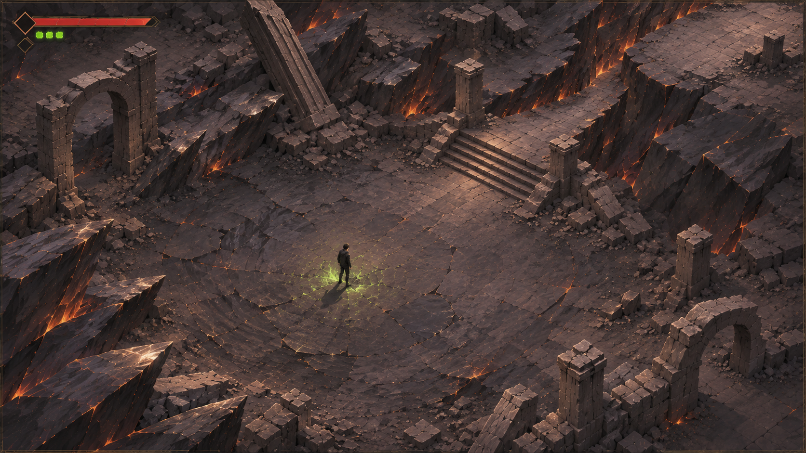
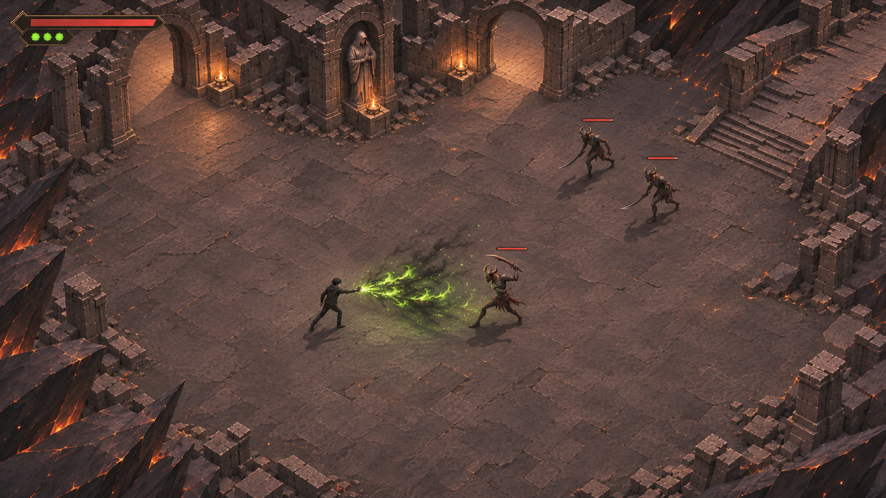
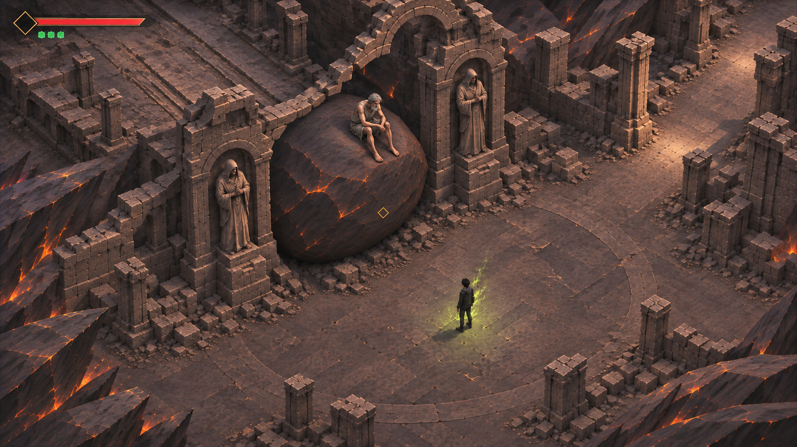
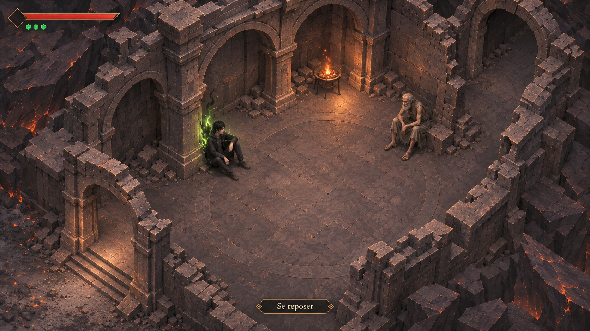

01 — Le silence après l’impact
7 s · Plan large, lent travelling avantL’esplanade fissurée. Les deux hommes restent debout. La pointe de la lance touche les dalles ; les bras d’Eda tremblent encore d’or.
LUCIFER — Ça suffit.
Eda a sauvé la Terre. Bloqué dans les Enfers, il poursuit sa croisade jusqu’à découvrir que son adversaire le plus puissant cherche quelqu’un capable de lui succéder.
La documentation détaillée et les dialogues se trouvent dans les rubriques ci-contre. Les archives conservent les versions historiques et les points ouverts.
Apex Universe · La Croisade Infernale · 3 novembre 2026
Document de référence réunissant les choix construits les 2 et 3 novembre 2026. Il contient les révélations de fin. Les noms de régions, compétences, branches et reliques restent des noms de travail. Les chiffres de durée sont des objectifs de conception, pas des résultats mesurés. Les sujets non tranchés sont répertoriés dans Questions-ouvertes-v0.1.md.
Hell Rising est un jeu d’action / hack’n’slash narratif en 3D, entièrement solo et jouable hors ligne, sans compte obligatoire pour progresser. PC et PS5 sont les plateformes envisagées ; manette et clavier/souris sont prévus. Unity 6.6 figure dans le brainstorming comme intention technique, à vérifier avant la production.
Hell Rising est le titre du jeu ; La Croisade Infernale désigne cet arc dans l’Apex Universe, sans sous-titre affiché obligatoire.
Incarnez Eda, le Phoenix Noir, dans une croisade à travers les Enfers. Enchaînez frappes, flammes et pouvoirs dévastateurs pour protéger la Terre, découvrir un monde inattendu et retrouver ceux que vous pensiez ne jamais revoir.
Quatre piliers guident la conception :
Le récit principal vise 8 à 12 heures, auxquelles s’ajoutent 3 à 5 heures facultatives, soit environ 11 à 17 heures pour une exploration approfondie. Les références initiales sont Diablo III pour les zones ouvertes limitées et Marvel’s Spider-Man 2 pour le dynamisme du combat. Elles expriment des intentions, sans importer automatiquement leurs systèmes.
Eda Ryle, 25 ans, vit à Salem. Mince et pâle, cheveux noirs en bataille et cernes, il porte un hoodie anthracite sous une veste noire. Sa vie antérieure à Paris est marquée par la dépression, le rejet, la traque de Volkov et sa relation avec Brie Rayner.
Présenté comme le premier méta-humain « naturel », éveillé seul en janvier 2026, Eda apprend aussi qu’il est un sujet hybride des expériences de Volkov : sang d’ange et de démon, avec la base du protocole Khost. La conciliation précise de ces descriptions reste ouverte.
À Paris, Mephisto ouvre une brèche au-dessus de la tour Eiffel. Rayner blessée appelle Eda ; il accepte sa nature, atteint le Phoenix Doré, arrache Mephisto au corps de Volkov et franchit la brèche avec lui. En Enfer, il déclenche la Supernova. Volkov meurt. Sur Terre, l’onde entraîne blackout mondial, altérations de l’ADN, apparition de milliers de méta-humains et croissance d’edenite dans les ruines de Paris.
Eda reste en Enfer, perdu et affaibli. Ses flammes dorées sont instables et il redevient globalement le Phoenix Noir. Convaincu de ne jamais rentrer, il choisit de protéger la Terre en combattant les démons. Sa découverte des habitants lui apprend que tous ne servent pas les mêmes intérêts.
Heroes Dawn se situe cinq ans après Paris. Hell Rising suit Eda à partir de Paris et s’achève sur son retour six ans après, pour environ une semaine vécue. Il ne se déroule donc pas entièrement après Heroes Dawn. Le calendrier intermédiaire et les règles temporelles restent à établir.
Eda ressuscite normalement en 24 heures : cœur à un battement par minute, suspension entre vie et mort, puis réveil intact. Les défaites du joueur ne sont pas des morts canoniques et ne déclenchent pas ce cycle. Son usage narratif éventuel reste ouvert.
Un bref prologue permet de comprendre le jeu sans connaître Heroes Dawn : Paris attaqué, appel de Rayner, flammes dorées, passage avec Mephisto et Supernova. Lucifer observe ensuite la lumière depuis son trône : « Ah... Père... Pourquoi m’avoir affublé d’un si grand incapable... » Son agacement cède à un bref intérêt pour la signature dorée.
Le jeu reprend avec Eda dans les cendres. Déplacement et saut contextuel précèdent les premiers démons légers, qui introduisent frappes, gerbe et dash. Une tentative narrative de retrouver le doré échoue. Eda rencontre Sisyphe près de son bloc, puis rejoint le premier sanctuaire et formule sa croisade. Sisyphe indique la cité où des soldats rassemblent des ressources, sans connaître leur commanditaire.
Après cette halte, Eda débloque Poing de braise en brisant un obstacle. La première brute introduit ensuite la déstabilisation et la saisie.
La plaine conduit à la Cité du Gouffre. Depuis une terrasse, Eda observe réquisitions et arrestations. Une poursuite s’arrête au seuil d’une maison de deuil, protégée par la promesse de Lucifer que personne n’y sera saisi de force.
Veyra cache des habitants dans son atelier. Méfiante, elle accepte une coopération concrète : accès technique, mécanisme à libérer et monte-charge à préparer pour mettre un premier groupe à l’abri. Un encerclement sur un palier déclenche Déflagration, immédiatement mise en pratique.
Un ordre adressé à Varkhos au nom de Mephisto révèle sa survie. Varkhos reconstitue son armée. Eda veut trouver sa route ; les habitants doivent reprendre les accès du quartier. Après la défaite de Varkhos, Eda le laisse vivant mais hors de combat et utilise sa chaîne pour libérer les cages. Veyra organise l’évacuation et la remise en service des installations, puis indique la piste des convois vers les jardins.
Dans les Jardins des Échos, Eda coupe la route d’approvisionnement. Un meneur protégé par des fantassins introduit Entraves ardentes. Au relais final, un affrontement combine les quatre types de troupes, sans boss supplémentaire. Eda libère les captifs, bloque le départ des chargements et trouve un registre avec le tracé du bastion.
La Citadelle Fossile est creusée dans une carcasse colossale pétrifiée. Une ligne de soldats et des cracheurs introduisent Percée ardente. Le duel contre Mephisto conclut le mouvement : capacités habituelles, pleine puissance de Mephisto, puis retournement jouable en mode enragé doré. Eda éradique définitivement Mephisto. Aucun retour de celui-ci n’est prévu.
Après le duel, Eda reprend son souffle, rejoint un sanctuaire et retrouve Sisyphe. Daemon et Malya arrivent ensuite, envoyés par Rayner après la perception du signal doré. Ils confirment qu’elle est vivante, expliquent The Dawn et annoncent plusieurs années écoulées sur Terre. La durée exacte reste révélée au retour.
La tentative de passage échoue avant qu’Eda le franchisse. Le signal du duel était assez fort pour le retrouver, mais trop bref pour établir un retour stable. Un signal soutenu est nécessaire. Sisyphe indique le trône comme lieu de l’énergie la plus puissante des Enfers et les archives comme point de départ pour chercher sa route.
Le duo établit un point de recherche dans un sanctuaire. Eda poursuit les combats seul, avec des interventions scénarisées ponctuelles de ses alliés.
Aux Archives Voilées, la première sentinelle introduit Garde de cendres. Dans la salle intacte, Malya confronte les tracés anciens au passé et au présent, puis repère une galerie vers les palais au-delà d’un effondrement. Daemon matérialise un franchissement local.
Eda découvre Lucifer représenté sans couronne devant une immense porte, tandis que d’autres silhouettes s’éloignent. L’inscription affirme : « Il gardera le seuil jusqu’à ce qu’un autre accepte librement sa charge. » Malya perçoit une occasion de partir à laquelle Lucifer a renoncé pour tenir parole.
À l’entrée des Palais du Dernier Ciel, un porteur de lance éloigné introduit Lance du brasier. La progression devient plus resserrée. La frontière exacte entre cette approche et le troisième mouvement reste à détailler.
Au dernier sanctuaire, Eda avertit le duo : la puissance réelle de Lucifer est inconnue et le combat pourrait leur coûter la vie. Ils restent préparer le retour et doivent le rejoindre au signal. Eda propose aussi à Sisyphe de l’emmener s’il trouve un passage ; Sisyphe choisit de rester pour guider les âmes.
Lucifer attend Eda seul sur une terrasse. Il reconnaît avoir observé son parcours et ne pas être intervenu contre Mephisto. Son attention aux habitants aidés par Eda prépare discrètement la révélation de sa recherche d’un successeur.
Sur l’esplanade, Eda obtient un pacte : s’il bat Lucifer, celui-ci laissera la Terre en paix. Il refuse de partir sans régler cette menace. Lucifer commence à mains nues puis matérialise une lance de gardien. Au moment décisif, ses paroles ravivent chez Eda le désir intime de retrouver Rayner : Eda maintient enfin le doré sans être emporté par la fureur.
Les deux restent debout, très affaiblis. Lucifer met fin au combat et reconnaît Eda vainqueur, confirmant la paix pour la Terre. Il le considère comme son seul égal et propose qu’il lui succède. Eda sait qu’il n’aurait pas gagné jusqu’au bout ; il accepte par reconnaissance et pour prévenir un successeur moins mesuré. Il répondra à un appel pouvant survenir à tout moment, dont Lucifer ignore lui-même l’échéance.
Le consentement reste libre : refuser la succession ne supprimerait ni la paix acquise ni le retour. La vraie motivation de Lucifer, au-delà du divertissement apparent, était de trouver un successeur. Cela ne signifie pas qu’il a orchestré tous les événements.
Eda émet le signal au trône ; Lucifer lui apporte la puissance nécessaire. Malya repère le passage, Daemon lui donne forme et Rayner coordonne l’ouverture depuis la Terre. Le duo rentre avec Eda.
Rayner touche son visage puis l’étreint avant les explications. Elle annonce les six ans écoulés. Eda révèle le pacte. Elle regrette qu’il ait dû décider seul ; une nouvelle étreinte clôt leur scène : « Reste avec moi un moment. » / « Je suis là. »
| Personnage | Rôle et évolution |
| Eda | Protecteur sans espoir de retour, puis héros qui désire vivre et accepte une responsabilité future ; acceptation de soi à Paris, fureur dorée contre Mephisto, maîtrise face à Lucifer |
| Brie Rayner | Amante d’Eda, fondatrice de The Dawn ; convaincue intimement de sa survie avant tout indice, elle perçoit le signal et envoie le duo |
| Sisyphe | Âme ancienne, mordante, sarcastique et curieuse ; son châtiment brisé ouvre une relation qui lui apprend à laisser partir et à guider sans imposer |
| Daemon, Agent D | Agent de The Dawn, créateur inventif, enthousiaste et improvisateur ; les créations complexes exigent représentation précise et concentration |
| Malya, Agent M | Agente attentive, réfléchie et chaleureuse, humour discret ; voit passé et présent ainsi que plusieurs futurs possibles, influencés par les choix |
| Veyra | Artisane démoniaque réparatrice, pragmatique et directe ; cache des habitants et apprend à faire confiance aux actes d’Eda |
| Maëra | Âme ayant perdu le souvenir du visage de son enfant, mais conservé celui de sa trahison ; choisit de retrouver le souvenir familial douloureux |
| Ilyne | Copiste réservée et méticuleuse ; ancienne falsificatrice de témoignages, elle préserve désormais même la vérité qui l’accuse |
| Varkhos | Lieutenant de Mephisto traitant les habitants comme des ressources ; premier boss local, laissé vivant après défaite |
| Mephisto | Ancien bourreau d’Eda, disposant en Enfer de toute son énergie ; définitivement éradiqué |
| Lucifer | Gardien ancien et adversaire, sincèrement intéressé au potentiel d’Eda ; sa recherche d’un successeur nuance son ennui sans effacer sa non-intervention |
Sisyphe devait remonter un bloc jusqu’à une porte toujours refermée trop tôt. La Supernova détruit la porte et immobilise le bloc. Il rejoint les sanctuaires, commente les découvertes et dévoile son passé : il a trompé un gardien des morts pour sauver une personne aimée, puis retenu d’autres êtres contre leur choix. Il aide finalement Eda à partir et reste accueillir les âmes, sans décider pour elles.
Daemon et Malya se font assez confiance pour se contredire. Malya aide Daemon à percevoir ce qu’il cherche à créer, notamment les passages entre réalités. Dans les sanctuaires, Daemon répare ce que Sisyphe juge irrécupérable ; Malya remarque l’attention de ce dernier aux autres. Échanges ambiants et conversations facultatives développent ces relations.
Les six régions sont compactes : chemin principal clair, détours significatifs. Cité et jardin sont plus libres ; bastion et approche finale plus guidés. Les noms restent affinables.
| Région | Identité | Palette |
| Les Cendres du Seuil | Plaine de ruines et cendres vitrifiées, cicatrice de la brèche refermée | Gris, verre noir, braises orangées |
| La Cité du Gouffre | Terrasses, treuils et monte-charges autour du gouffre ; société de démons et d’âmes | Pierre brune, métal oxydé, ambre |
| Les Jardins des Échos | Jardin monumental à végétation pâle, canaux noirs, bassins et pavillons de souvenirs | Ivoire, noir, rose fané |
| La Citadelle Fossile | Forteresse dans la carcasse pétrifiée, côtes au-dessus des cours militaires | Os minéralisé, roche sombre, rougeoiements |
| Les Archives Voilées | Tours reliées par ponts et galeries dans une mer de brume froide | Bleus froids, gris, inscriptions pâles |
| Les Palais du Dernier Ciel | Palais déserts suspendus sur un ciel sans horizon, chaussées brisées | Pierre claire vieillie, ciel profond, métal pâle |
La direction initiale associe 3D stylisée à facettes visibles, éclairage cel-shaded et textures picturales douces. Arcane, les proportions de Mo.Co et la vidéo citée dans le brainstorming restent des références à traduire en direction détaillée ; cette vidéo n’a pas été étudiée ici.
Eda conserve hoodie et veste sombre abîmés. Noir et vert se concentrent sur ses mains et avant-bras. Le doré gagne bras, épaules et dos. Les ailes apparaissent brièvement à l’activation et sur certaines attaques puissantes ; leur déploiement est plus complet dans la maîtrise finale. Les combats restent au sol.
Lucifer est humain, grand et élancé, presque jeune de visage, au regard fatigué. Tenue sombre sobre, vestiges célestes de métal pâle et couronne fine irrégulière. Sa puissance blanche traversée de rouge profond dessine lignes et arcs précis, de plus en plus amples.
La caméra top-down légèrement isométrique conserve une orientation fixe, suit Eda et adapte le cadrage ; elle recule pendant les grands affrontements. La visée est assistée dans la direction du stick. Le stick exact et l’adaptation clavier/souris restent à concevoir.
Eda alterne frappes et gerbes de feu brèves, larges et à courte portée. La gerbe et le dash permettent de reprendre l’enchaînement sans remise à zéro. À distance, les flammes attirent un démon ; au contact, la saisie permet une projection directionnelle.
Les légers sont immédiatement saisissables. Les lourds demandent une déstabilisation, visible dans une petite jauge sous la santé. À jauge pleine : posture affaissée, indication de saisie et signal sonore. Les boss ont leurs ouvertures particulières.
| Commande | Fonction |
| Carré court / maintenu | Coup léger / lourd |
| Triangle court en combat | Gerbe de feu |
| Triangle maintenu en combat | Attraction à distance, saisie et projection au contact |
| Triangle hors combat | Interaction contextuelle signalée |
| Rond + direction au stick | Dash accompagné de flammes |
| Croix | Saut contextuel réservé au déplacement |
| R1 maintenu + touche de façade | Une des quatre compétences équipées |
| Bas directionnel | Soin actif |
| L3 + R3 | Mode enragé à jauge pleine |
Le soin consomme volontairement une réserve limitée rechargée par l’offensive. Eda ramène ses flammes au torse, peut marcher lentement et reste vulnérable. Durée, quantités et interruptions restent ouvertes.
Le mode enragé est débloqué narrativement contre Mephisto, puis réutilisable manuellement. Attaques réussies et esquives au bon moment remplissent sa jauge. Il donne des attaques propres au Phoenix Doré, humanoïdes, sauvages et spectaculaires. Le détail des coups, la durée et la gestion de jauge pendant la maîtrise finale restent à concevoir.
Quatre compétences sont équipables parmi six, librement remplaçables hors combat. Chacune possède sa récupération, sans mana. Les grandes étapes du récit débloquent les pouvoirs ; expérience des combats, quêtes et exploration donne des niveaux puis des points d’amélioration. Les branches sont alternatives et les points gratuitement réattribuables aux sanctuaires.
| Compétence | Effet et acquisition | Branches alternatives |
| Poing de braise | Frappe courte puissante et déstabilisante ; obstacle après le premier sanctuaire, puis brute | Brise-garde : forte déstabilisation / Impact rémanent : marque à explosion différée |
| Déflagration | Explosion autour d’Eda, recul des légers ; encerclement pendant l’évacuation avec Veyra | Onde de rupture : rayon et recul / Terre embrasée : feu persistant au sol |
| Entraves ardentes | Immobilisation brève de groupe ; meneur protégé dans le jardin | Étau ardent : durée / Liens convergents : attraction au centre puis immobilisation |
| Percée ardente | Propulsion offensive au sol ; formation de soldats et cracheurs dans le bastion | Percussion : impact sur la première cible lourde / Sillage brûlant : traînée de feu |
| Garde de cendres | Réduction forte d’un impact pendant une brève garde, puis riposte ; sentinelle au début des archives | Contre-feu : dégâts et déstabilisation de riposte / Reprise vitale : recharge partielle du soin |
| Lance du brasier | Trait à longue portée traversant les légers alignés ; porteur de lance à l’entrée des palais | Trait perforant : traverse les lourds, conserve davantage de puissance / Éclatement : explosion au premier impact |
Les valeurs, paliers et événements exacts d’ouverture des branches restent à définir. Les lourds et boss conservent leurs résistances ; les améliorations ne garantissent pas une déstabilisation automatique.
Deux reliques équipées simultanément, interchangeables hors combat. Les effets et obtentions sont définis dans leur principe ; les valeurs restent à équilibrer.
| Relique | Effet | Obtention |
| Nœud de Veyra | Collision d’un ennemi projeté : déstabilisation accrue du démon percuté | Quête Ce qui tient encore, après Varkhos |
| Éclat du contretemps | Esquive précise : prochaine gerbe plus déstabilisante | Aile facultative des archives, après sentinelles |
| Braise préservée | Soin accompli puis prochaine frappe réussie : recharge partielle du soin | Pavillon du jardin, ancienne passerelle à remettre en mouvement |
| Tison lié | Plusieurs frappes d’un enchaînement : prochaine gerbe élargie | Cour facultative du bastion, fantassins et cracheurs puis réserve |
| Sceau de l’embrasement | Activation du doré : onde repoussant les légers et déstabilisant les lourds | Reliquaire des archives alimenté par le doré |
| Fil du brasier | Deux compétences différentes touchant à la suite : récupération réduite des autres, avec délai interne | Terrasse facultative des palais, duelliste et porteurs de lance |
| Cœur téméraire | Coups lourds chargés plus puissants, engagement prolongé avant esquive | Fosse de la cité après Varkhos, brute et fantassins puis dépôt |
| Cendre tenace | À faible santé, attaques réussies rechargeant davantage le soin | Abri vitrifié de la plaine, obstacle après Poing de braise |
Le reliquaire du Sceau dispose d’un résidu rechargeant le mode enragé hors combat tant qu’il reste fermé, afin de permettre de réessayer sans blocage.
| Famille | Introduction et rôle |
| Fantassins légers | Plaine ; pression de groupe et saisie immédiate |
| Brutes | Plaine après Poing de braise ; attaques lourdes, déstabilisation nécessaire |
| Cracheurs | Cité ; harcèlement à distance, déplacement et attraction |
| Meneurs | Jardin ; soutien aux soldats, priorité de cible |
| Sentinelles anciennes | Archives ; pierre sombre et inscriptions lumineuses, fermeture de passages et lignes d’énergie |
| Gardiens du domaine | Palais ; peu nombreux, duellistes au contact et porteurs de lance à distance |
Le bastion combine les quatre premiers types. Trois boss sont établis, sans fixer ici un effectif définitif plus large :
Varkhos : plateforme stable de réquisition au-dessus du gouffre, cages et monte-charges. Crochet pouvant se coincer dans un ancrage après un lancer esquivé ; Eda frappe puis utilise une saisie contextuelle sur la chaîne. Dans la seconde moitié, chaîne raccourcie, pression plus rapide au contact ; crochet planté après un enchaînement offrant une nouvelle ouverture. Il reste vivant après défaite.
Mephisto : chambre au cœur de la carcasse, veines minérales lumineuses. Mobile et oppressant, il alterne contact, déplacements soudains et zones dangereuses. Ses attaques deviennent plus amples et soutenues à pleine puissance. Le retournement doré reste jouable. L’éradication finale le consume en cendres lumineuses, sans réplique triomphante.
Lucifer : esplanade devant le trône, ouverte sur les profondeurs. Début précis à mains nues, parades et ripostes ; lance ancienne ensuite, portée accrue, balayages et traits d’énergie. Impacts et énergie donnent au duel son ampleur. La maîtrise dorée d’Eda et la reconnaissance finale sont établies ; attaques détaillées et nombre de phases restent ouverts.
Ce qui tient encore : après Varkhos, récupérer une pièce dans une station de maintenance et dégager l’accès pour réparer le monte-charge d’une terrasse isolée. La circulation reprend ; Veyra adapte un composant restant en relique.
La berceuse oubliée : Maëra répète une mélodie inachevée près des bassins. Les fragments réunis montrent des scènes incomplètes, voix et gestes. Avertie de la douleur de la séparation avec son enfant confié à des proches, elle choisit de retrouver le souvenir et achève sa chanson. Elle se souvient déjà d’avoir livré une cachette pour protéger sa famille, avec des conséquences plus graves que les arrestations qu’elle savait accepter. Cette faute est abordée dans une conversation facultative après la restitution.
Quête d’Ilyne : récupérer des feuillets dans une galerie endommagée. Parmi eux, son témoignage sur les déclarations falsifiées pour protéger une personne puissante au détriment d’innocents. Elle demande de préserver ce texte avec les autres.
Maëra et Ilyne donnent expérience et entrée de journal, sans relique ajoutée. Des répliques conditionnelles de Lucifer rappellent ces rencontres après le duel ; la fin et la succession ne dépendent pas de leur accomplissement.
Aux sanctuaires, conversations facultatives et échanges ambiants courts enrichissent les relations. Les informations indispensables restent dans les scènes principales. Le nombre final de quêtes reste à déterminer ; les trois existantes ne sont pas supposées remplir seules les 3 à 5 heures facultatives.
Les anciens sanctuaires oubliés permettent récupération de santé, réattribution des points et échanges avec les personnages. Ils servent de points de reprise. Le voyage rapide relie les sanctuaires activés et permet de revenir aux activités des régions découvertes.
Chaque boss dispose d’une reprise juste avant le combat. Les cinématiques déjà vues sont passables. Quêtes terminées et découvertes validées restent acquises après défaite. L’état des ressources à la reprise reste à fixer.
Sauvegardes automatiques aux étapes importantes et sauvegarde manuelle hors combat, sans sanctuaire requis. Une sauvegarde manuelle n’est pas automatiquement un nouveau point de reprise après défaite.
Un avertissement précède la dernière séquence. Après le générique, Continuer ramène avant celle-ci, avec la fin marquée accomplie. Il s’agit d’une reprise de jeu, pas d’un retour canonique d’Eda en Enfer.
L’interface de combat montre santé, réserve de soin, jauge dorée et quatre compétences avec récupération. Indicateurs ennemis discrets ; barre dédiée aux boss ; dégâts chiffrés désactivés par défaut.
Carte de région dans le menu : sanctuaires découverts, lieux importants, quêtes connues. Objectif suivi et direction discrète en jeu, sans mini-carte permanente. Le journal comporte Quêtes, Rencontres et Les Enfers ; entrées courtes, enrichies seulement par les découvertes faites.
Histoire, Équilibré et Défi sont modifiables à tout moment. Pression ennemie, dégâts et fenêtres de réaction varient ; l’intention évite le simple allongement des barres de vie.
Base de confort retenue : sous-titres réglables et locuteurs identifiés, réduction des secousses et flashs, remappage, alternatives aux maintiens, formes distinctives en complément des couleurs pour les signaux importants.
Base orchestrale sombre mêlée de textures électroniques ; percussions plus présentes au combat, passages dépouillés dans les refuges et scènes intimes. Le motif d’Eda est fragmenté au début, plus ample avec le doré, puis repris simplement aux retrouvailles.
Phoenix Noir : souffle grave, crépitements secs, grondement instable. Phoenix Doré : souffle ample, impacts clairs et résonance lumineuse puissante. Les attaques ennemies importantes possèdent un signal sonore d’anticipation en complément du visuel.
Cette consolidation organise les choix existants sans valider de nouvelle solution aux questions de continuité. Les fiches historiques restent conservées ; leurs anciennes mentions « à définir » peuvent être résolues par des ajouts ultérieurs. Pour la lecture actuelle, utiliser ce document et Questions-ouvertes-v0.1.md.
Les dialogues et scènes approuvés sont conservés intégralement dans Recueil-scenes-validees-v0.1.md, avec les variantes de succession identifiées séparément. Leur mise en scène reste affinable.
Le concept ne constitue pas encore un plan de production : équipe, budget, calendrier, preuve technique, plans des niveaux, valeurs de combat et prototypes restent à construire.
Eda rencontre assez tôt dans l’aventure une âme damnée présente en Enfer depuis très, très longtemps. Ce personnage peut lui parler de ce monde.
Cette rencontre donne à Eda un interlocuteur avant l’arrivée de Daemon et Malya. L’ancienneté est établie, mais aucune durée exacte, époque d’origine ou connaissance exhaustive des Enfers n’est fixée.
Son statut d’âme damnée ne définit pas encore sa moralité actuelle. Aucun lien personnel avec Lucifer, Mephisto ou les sanctuaires n’est établi. Le personnage n’est pas encore validé comme guide permanent ni comme source infaillible.
L’auteur retient la personnalité mordante proposée : une âme sarcastique et désabusée par sa très longue présence en Enfer, mais qui conserve de la curiosité.
Les pistes d’un échange de services initial et d’un attachement progressif à Eda restent à développer ; elles ne sont pas considérées comme validées par ce choix de personnalité. La raison précise de son intérêt pour Eda reste ouverte.
L’auteur approuve la piste de Sisyphe, figure mythologique réinterprétée dans l’Apex Universe, pour l’âme damnée rencontrée tôt par Eda.
La direction proposée relie son humour mordant à un châtiment répétitif et son intérêt pour Eda au bouleversement d’un ordre qu’il croyait immuable. Sa longue recherche d’une échappatoire peut nourrir sa connaissance des chemins et des habitudes des Enfers ; l’étendue exacte de ce savoir reste à construire.
Le châtiment, sa cause, sa liberté de mouvement, son apparence et ses liens avec Lucifer restent à définir. Aucun détail du mythe traditionnel n’est automatiquement importé dans le canon d’Apex Universe.
Exemple de ton proposé, non dialogue définitif : « Tu comptes traverser les Enfers et massacrer tout ce qui t’en empêche ? Bien. Enfin quelqu’un avec un projet raisonnable. »
Depuis une éternité, Sisyphe doit remonter un immense bloc jusqu’à une porte qui se referme toujours avant qu’il puisse l’atteindre. La Supernova d’Eda brise le mécanisme de ce châtiment : l’explosion détruit la porte et immobilise le bloc.
Eda rencontre Sisyphe assis sur ce bloc. Pour la première fois depuis des millénaires, Sisyphe ne sait plus quoi faire. Eda a interrompu sa routine de damnation, ce qui motive son intérêt immédiat pour lui.
Réplique approuvée dans la proposition de scène, à garder comme base de dialogue révisable : « C’était toi, le vacarme ? Tu viens de ruiner une routine parfaitement détestable. »
La rupture du mécanisme lui donne une liberté nouvelle dont les limites restent à définir. Elle n’établit pas sa rédemption ni sa libération hors des Enfers. La cause de sa condamnation, l’autorité qui l’a prononcée et la possibilité de quitter les Enfers restent ouvertes.
Après leur rencontre, Sisyphe rejoint le premier sanctuaire et devient un interlocuteur récurrent dans les refuges. Il commente les découvertes d’Eda, lui indique certains chemins et dévoile progressivement son passé.
Son attachement peut se manifester par des conseils dissimulés derrière des moqueries. Ce rôle laisse Eda parcourir seul les zones de combat, sans faire de Sisyphe un compagnon physique permanent pendant l’exploration.
Ses déplacements entre sanctuaires, la fréquence de ses apparitions et les étapes de sa relation avec Eda restent à définir. Sa présence récurrente ne lui attribue pas de téléportation ni de connaissance exhaustive des Enfers. Aucun rôle de marchand ou d’attribution des améliorations n’est établi.
Sisyphe a autrefois trompé un gardien des morts pour sauver une personne aimée. Après cette première victoire, il en a abusé en cherchant à soustraire d’autres vies à la mort. Ses actes ont eu des conséquences qu’il préfère encore tourner en dérision.
Cette origine permet un rapprochement avec Eda autour du refus de la séparation et des limites que Sisyphe a lui-même refusé de voir. Ce rapprochement reste à développer en scènes et ne remplace pas la motivation initiale établie d’Eda : protéger la Terre alors qu’il croit son retour impossible.
Identité de la personne aimée, nature du gardien, méthode de tromperie, motivations des sauvetages suivants et conséquences exactes restent à construire. L’autorité qui le condamne et le lien précis entre ses actes et le châtiment du bloc ne sont pas encore définis. Aucun personnage mythologique supplémentaire n’est automatiquement introduit.
Les premières personnes sauvées par Sisyphe ont retrouvé une vraie vie, renforçant sa conviction d’avoir raison. Il a ensuite commencé à décider à leur place, jusqu’à retenir des êtres qui souhaitaient mourir.
Sa faute tient notamment à son incapacité à accepter que les autres puissent choisir de partir. Cette dérive donne un poids concret à son passé et peut nourrir son évolution auprès d’Eda, qui accepte sa responsabilité future en connaissance de cause.
Le nombre de personnes concernées, le moyen utilisé pour les retenir, leur sort final et les circonstances exactes de sa condamnation restent à définir. Aucun système général de circulation ou de captivité des âmes n’est établi par cette décision.
Sisyphe s’attache à Eda et se retrouve confronté à la perspective de perdre la première relation qui lui importe depuis des millénaires. Il choisit pourtant de l’aider à partir, malgré sa peur de se retrouver seul, plutôt que de décider à sa place.
Eda lui propose de le sortir des Enfers. Sisyphe refuse. La raison de ce refus reste à définir avec l’auteur. Cette offre n’établit pas encore les règles techniques permettant à une âme damnée de franchir la brèche.
Un dernier conseil sans sarcasme est retenu comme direction de ton pour laisser sentir le coût du départ ; le dialogue et sa mise en scène restent à écrire.
Ce dénouement met en regard sa faute passée — retenir les autres contre leur choix — et sa capacité présente à respecter le départ d’Eda tout en choisissant lui-même de rester. Son refus ne signifie pas encore qu’il juge sa peine juste, qu’il est incapable de sortir ou qu’il reçoit une mission particulière.
Grâce à sa relation avec Eda, Sisyphe trouve une raison de rester en Enfer : accueillir d’autres âmes perdues dans les sanctuaires et les aider à trouver leur chemin. Après avoir autrefois décidé du sort des autres, il choisit désormais de les guider sans choisir pour eux.
Cette motivation explique son refus de l’offre d’Eda et résout la question précédemment ouverte sur ce refus. Sa présence dans les sanctuaires devient un engagement choisi, après la rupture de sa routine de châtiment.
Réplique retenue comme intention de dialogue révisable : « Tu m’as déjà sorti de là, gamin. Il m’a juste fallu un peu de temps pour comprendre de quoi. »
Cette évolution ne constitue pas une absolution officielle ni une autorité nouvelle sur les âmes. La façon dont celles-ci rejoignent les sanctuaires et les chemins qu’elles peuvent ensuite choisir restent à construire.
Après l’échec du passage de retour au sanctuaire, Sisyphe parle au groupe du trône de Lucifer comme source d’énergie sans équivalent dans les Enfers. Il connaît la destination mais ignore comment l’atteindre. Son savoir donne une piste, pas un itinéraire complet.
La scène d’adieux a lieu au dernier sanctuaire, avant qu’Eda rejoigne Lucifer. Eda lui propose de l’emmener s’il trouve un passage. Sisyphe refuse et explique son choix de guider les âmes. L’offre est conditionnelle, avant l’ouverture de la brèche. Le dialogue complet reste à écrire.
Le texte intégral approuvé est conservé dans Dialogue-Adieux-Sisyphe.md. Le sarcasme laisse progressivement place à la sincérité ; Sisyphe choisit de guider les âmes et souhaite à Eda de retrouver Rayner. La scène se déroule au dernier sanctuaire avant Lucifer.
Des échanges courts développent la familiarité entre Sisyphe, Daemon et Malya au fil des retours d’Eda.
Daemon s’obstine à réparer ce que Sisyphe juge irrécupérable. Malya remarque chez Sisyphe une attention aux autres qu’il dissimule mal derrière ses remarques. Ces scènes préparent son choix final de rester pour guider les âmes.
La perception de cette attention par Malya relève ici de la dynamique relationnelle ; elle n’établit pas un pouvoir de lecture des pensées. Objets réparés, dialogues, fréquence et déclencheurs des scènes restent à écrire.
Texte intégral conservé dans Dialogue-Premiere-rencontre-Sisyphe.md. Sisyphe se présente près du bloc, échange avec Eda sur la brèche refermée et indique un ancien sanctuaire sans prétendre connaître une sortie des Enfers. Mise en scène et trajet encore à détailler.
Lors de la tentative de retour infructueuse, Sisyphe indique les anciennes archives, où sont conservés des tracés des Enfers, comme point de départ pour chercher la route du trône. Il ne connaît toujours pas cet itinéraire. Dialogue intégral : Dialogue-Sanctuaire-Tentative-de-retour.md.
Une artisane démoniaque devient le premier contact local d’Eda dans la cité. Son atelier sert de refuge clandestin : elle y cache des habitants recherchés pour l’enrôlement forcé. Elle connaît un accès aux lieux où les captifs sont retenus.
Elle se méfie d’Eda : après la Supernova, rien ne lui garantit qu’il sera moins dangereux que les soldats. Leur première coopération permet de construire la confiance par les actes.
Nom, apparence, spécialité artisanale, personnalité, histoire, personnes cachées, circonstances de la rencontre et place de leur coopération dans les quêtes.
Son atelier n’est pas automatiquement un sanctuaire de repos. Sa profession ne lui attribue pas encore de fonction marchande, de fabrication d’équipement ou d’amélioration du personnage.
Elle répare les mécanismes et les structures de la cité : treuils entre les terrasses, portes, conduites et monte-charges. Son métier explique sa connaissance des accès secondaires et montre comment la cité continue à fonctionner.
Pragmatique et directe, elle juge Eda sur ses actes envers les habitants. Sa première demande est de l’aider à ouvrir une voie sûre pour les captifs.
Le trajet, les obstacles et le déroulement précis de cette première coopération restent à concevoir. Aucun équipement particulier ni service d’amélioration proposé au joueur n’est fixé.
L’artisane se nomme Veyra. C’est un personnage original de l’Apex Universe.
Sa silhouette est robuste. Elle possède deux cornes courtes, dont une cassée, et porte une tenue de travail rapiécée avec ses outils toujours à portée de main. Ses gestes sont précis et économes, même lorsqu’elle s’agace.
Réplique proposée comme base de ton révisable : « Si tu comptes encore faire exploser quelque chose, attends au moins que j’aie sorti les gens. »
Couleurs, âge, origine, cause de la corne cassée et apparence détaillée restent à définir. Cette description est une base de direction artistique, sans visuel produit à ce stade.
Cette mission fait découvrir les déplacements contextuels et les combats dans les espaces étroits de la cité. Sa réussite donne à Veyra une première raison concrète de faire confiance à Eda.
Nom de mission, parcours exact, mécanisme bloqué, composition des affrontements et nombre de captifs restent à concevoir. Aucune escorte avec jauge de santé des captifs, limite de temps ou défense par vagues n’est établie.
Les habitants reprennent le contrôle des accès du quartier. Veyra peut organiser leur évacuation et la remise en service des installations. Cette étape ne fixe pas encore le sort final de Varkhos.
Après une quête facultative encore à définir, Veyra adapte pour Eda une pièce ancienne de mécanisme : le Nœud de Veyra (nom provisoire). Équipée comme relique, elle augmente la contribution à la déstabilisation lorsqu’un ennemi projeté heurte un autre démon. Voir Reliques-et-recompenses.md.
Après Varkhos, Veyra confie la quête Ce qui tient encore : récupérer une pièce et dégager l’accès d’une ancienne station de maintenance pour remettre en service un monte-charge vers une terrasse isolée. Elle fabrique ensuite le Nœud de Veyra avec un composant restant. Voir Quete-Ce-qui-tient-encore.md.
À son arrivée dans la cité, Eda observe les arrestations et réquisitions depuis une terrasse, puis une poursuite s’arrêtant au seuil de la maison de deuil. Dans un passage voisin, il voit Veyra faire entrer discrètement des habitants dans son atelier. Cette apparition précède leur première conversation.
Texte intégral conservé dans Dialogue-Premiere-rencontre-Veyra.md. Veyra explique la protection de la maison de deuil, reconnaît en Eda l’auteur de la lumière dans la plaine et lui propose l’accès technique aux captifs après son offre d’aide. Sa confiance reste à gagner par les actes.
Sur un palier, des soldats encerclent Eda pendant que Veyra prépare le monte-charge plus loin. Il libère une explosion de flammes autour de lui, puis le joueur utilise immédiatement Déflagration dans la suite du combat. Les captifs restent à l’écart de cette première explosion. Voir Progression-Eda.md.
Un ordre de réquisition adressé à Varkhos au nom de Mephisto révèle sa survie à Eda. Veyra confirme que les convois vont vers son bastion, sans fournir encore la route complète. Eda veut obtenir celle-ci auprès de Varkhos, qui contrôle toujours les accès du quartier.
Dialogue intégral conservé dans Dialogue-Apres-Varkhos-Veyra.md. Veyra confirme le passage de tous les captifs, indique les traces des convois vers les jardins sur la terrasse basse et invite Eda à l’atelier pour nettoyer une brûlure. Sa confiance et son attention commencent à se manifester.
Statut : transcription structurée des intentions initiales, non définitive.
Source : ../00_Sources/brainstorming-concept-original.md
Jeu d’action / hack’n’slash narratif dans l’Apex Universe, faisant suite à Heroes Dawn. Vue 3D top-down avec légère perspective isométrique. PC et PS5 envisagés ; manette et clavier/souris. Unity 6.6 mentionné dans les notes : choix technique à vérifier au moment de la préparation de production.
Après la Supernova de Paris, Eda se trouve en Enfer. Il affronte les troupes démoniaques pour empêcher une nouvelle catastrophe comparable à celle de Paris. Son parcours le conduit jusqu’à Lucifer, qui l’observe depuis le début.
À la fin, Rayner retrouve Eda et ouvre une brèche permettant son retour sur Terre. Six années s’y sont écoulées, alors qu’Eda semble avoir vécu une semaine.
Les circonstances exactes de son arrivée, ses connaissances au départ, ses pouvoirs et les règles temporelles restent à préciser avec l’auteur.
Combat dynamique inspiré de Marvel’s Spider-Man 2, adapté à une caméra haute. Progression narrative guidée et zones ouvertes limitées inspirées de Diablo III. Quête principale, quêtes secondaires enrichissant le lore et activités permettant d’améliorer le personnage.
Compétences débloquées au cours de l’aventure, sélectionnées dans un menu personnalisé et activables via R1. La combinaison des touches et le nombre de compétences équipées restent à définir.
Commandes initiales : triangle pour attaque à distance / saisie / interaction ; rond pour esquive ; carré pour attaques légères et lourdes ; croix pour saut. Les priorités contextuelles et les variantes de saisie restent à concevoir.
3D stylisée, low-poly à facettes visibles, éclairage cel-shaded et textures picturales douces. Références citées : Arcane ; Spider-Man vs X-Men de NexGen AI ; proportions de Mo.Co. Les références constituent des intentions à discuter, pas une direction finale harmonisée. Le contenu de la vidéo citée n’a pas encore été étudié.
Supernova de Paris, puis Eda face à Mephisto et aux troupes démoniaques en Enfer. Lucifer observe la Supernova de très loin depuis son trône.
Réplique proposée dans les notes : « Ah... Père... Pourquoi m’avoir affublé d’un si grand incapable... » — Lucifer, à propos de Mephisto.
Incarner un héros coupé de son monde, dont la puissance lui permet de survivre aux Enfers sans lui garantir de retrouver ce qu’il a laissé sur Terre.
Cette formulation n’ajoute pas de règle ni d’événement au canon ; elle sert de point de départ à la discussion.
Voir Eda-et-chronologie.md, qui précise et complète les sections précédentes. Eda entre volontairement dans la brèche avec Mephisto, puis déclenche la Supernova en Enfer. Il a déjà atteint le Phoenix Doré à Paris ; ses flammes dorées deviennent intermittentes en Enfer. Ses pouvoirs et son origine sont désormais documentés.
Correction de chronologie : Heroes Dawn se déroule cinq ans après Paris. Hell Rising commence avec les suites immédiates de Paris et prévoit un retour à six ans ; sa place comme « suite » reste à préciser. Les premières questions sur l’identité et l’arrivée d’Eda sont donc en grande partie renseignées. Priorité suivante : son objectif immédiat et son état émotionnel après la Supernova.
Après la Supernova, Eda est un peu perdu et affaibli. Convaincu de ne pas pouvoir retourner sur Terre, il entreprend une croisade contre les démons de l’Enfer pour s’assurer que la Terre soit sauve.
Cette précision répond à la question de sa motivation initiale. Son évolution émotionnelle, la menace concrète sur Terre et le chemin vers Lucifer restent à concevoir ensemble.
Validé : la menace contre la Terre se découvre progressivement. Daemon (Agent D) et Malya (Agent M), deux agents de The Dawn présents dans Heroes Dawn, arrivent en Enfer par fusion de leurs pouvoirs : création de tout ce que Daemon imagine ; vision du passé, du présent et de l’avenir pour Malya. Ensemble, ils voyagent dans les réalités. Leur arrivée est le pivot qui rend le retour d’Eda envisageable.
Voir Daemon-et-Malya.md pour les faits, références et questions ouvertes. Leur arrivée ne définit pas encore les conditions du retour ni leur articulation avec la brèche finale de Rayner.
La première tentative du duo pour ramener Eda échoue. Son retour nécessite un signal d’énergie qu’il doit créer et qui doit être captable depuis la Terre. Le seul moyen qu’il trouve le conduit au trône de Lucifer, lieu de l’énergie la plus puissante dans les Enfers. Eda finit par refuser de partir avant d’avoir arrêté Lucifer.
La progression distingue donc un obstacle initial au retour et un choix ultérieur de rester. Voir Retour-et-trone-de-Lucifer.md. Le déroulement de la confrontation et le mécanisme de la brèche ne sont pas encore fixés.
Lucifer est enfermé en Enfer depuis des millénaires et s’ennuie. La Terre ne l’intéresse pas ; les événements sont pour lui un jeu. Eda est particulièrement intéressant à ses yeux, probablement le seul capable de lui offrir un combat digne de ce nom.
En découvrant cela, Eda comprend que, pour protéger la Terre et Rayner, il doit offrir ce combat à Lucifer et le battre. Cela précise le motif de son refus de partir. La piste d’un projet de conquête ou d’un projet plus vaste contre la Terre n’est pas retenue. Voir Lucifer.md. La conséquence concrète de la défaite de Lucifer reste ouverte.
Lucifer tient toujours ses promesses. Eda négocie la paix pour la Terre en échange de sa victoire en duel. À la fin du combat, tous deux sont encore debout mais affaiblis, et Lucifer met fin au duel. Il considère Eda comme son seul égal et lui propose de devenir son successeur sur le trône des Enfers quand l’heure sera venue. Eda accepte. Lucifer retrouve en lui l’enfant qu’il était au Paradis avant sa désignation comme gardien des Enfers.
Voir Finale-et-pactes.md pour les détails, l’ambiguïté de la dernière phrase concernant la brèche et les points de continuité restant ouverts. La reconnaissance de la victoire et le rôle final de Rayner ne sont pas encore fixés.
Lucifer reconnaît la victoire d’Eda. Eda accepte de lui succéder pour prévenir l’arrivée d’un seigneur des Enfers moins mesuré, tel que pourrait l’être Mephisto, et par reconnaissance envers Lucifer : il sait qu’il n’aurait pas réellement pu gagner le combat en définitive.
La question du verdict est résolue ; les conditions et l’échéance de la succession restent ouvertes. Voir Finale-et-pactes.md.
Eda accepte de répondre à un appel pouvant survenir à tout moment pour succéder à Lucifer. Son retour sur Terre ne lui garantit pas d’y vivre toute sa vie avant de prendre le trône. Le déclencheur et les modalités de cet appel restent à définir. Voir Finale-et-pactes.md.
Eda révèle à Rayner le pacte de succession à son retour sur Terre. La révélation fait partie du dénouement ; sa mise en scène et la réaction de Rayner restent ouvertes. Voir Finale-et-pactes.md.
Rayner est restée intimement convaincue qu’Eda était vivant, alors que rien ne le laissait penser. Elle perçoit ensuite un signal en Enfer et envoie Daemon et Malya le rejoindre.
Ce signal initial précède la tentative du duo pour ramener Eda. Son lien avec le signal ultérieur nécessaire au retour reste à clarifier. Voir Rayner-et-recherche.md. Le moyen de perception de Rayner et la source du premier signal ne sont pas définis.
Eda affronte Mephisto dans un ultime duel de boss. Plus fort que sur Terre car il dispose de toute son énergie en Enfer, Mephisto le pousse dans ses derniers retranchements. La fureur d’Eda fait réapparaître ses flammes dorées pendant le combat (mode enragé). Cette manifestation produit le signal perçu par Rayner et déclenche l’envoi de Daemon et Malya.
Voir Mephisto-duel-et-signal.md. Le sort de Mephisto, les règles jouables de ce mode et la raison pour laquelle ce premier signal ne suffit pas au retour restent ouverts.
Lors de leur ultime duel en Enfer, Eda tue définitivement Mephisto en l’éradiquant. Le sort de Mephisto est désormais fixé. La mise en scène et les règles précises de cette éradication restent à définir. Voir Mephisto-duel-et-signal.md.
Conséquence de continuité : l’exemple de Mephisto comme successeur moins mesuré, évoqué dans la motivation d’Eda à accepter le trône, ne peut plus désigner un candidat encore vivant après ce duel. La crainte générale d’un autre successeur reste établie ; la manière de la formuler dans la finale devra tenir compte de la mort définitive de Mephisto.
Le duel contre Mephisto débloque le mode enragé comme capacité réutilisable, avec la réapparition des flammes dorées. Référence d’intention fournie par l’auteur : mode enragé du symbiote de Marvel’s Spider-Man 2 sur PS5. Les règles d’activation, de recharge et les effets précis restent à concevoir. Voir Mephisto-duel-et-signal.md.
Le mode enragé donne accès à des attaques propres au Phoenix Doré, plus sauvages et spectaculaires. Il modifie le répertoire offensif d’Eda. Les mouvements, commandes et effets restent à construire. Voir Mephisto-duel-et-signal.md.
Eda conserve une expression humanoïde dans son mode enragé, avec des attaques spécifiques sauvages et spectaculaires. La proposition de serres et de gestuelle animale n’est pas retenue. Le rôle éventuel des ailes demeure ouvert. Voir Mephisto-duel-et-signal.md.
Première manifestation déclenchée par le récit pendant le duel contre Mephisto ; puis activation manuelle par le joueur lorsque la jauge est pleine. Remplissage de la jauge, durée et commande encore ouverts. Voir Mephisto-duel-et-signal.md.
La jauge se remplit avec les attaques réussies et reçoit un bonus pour les esquives au bon moment. Les valeurs, la persistance et la durée du mode restent ouvertes. Voir Mephisto-duel-et-signal.md.
Hors mode enragé, Eda alterne entre corps à corps et projections de feu. Les transitions, les enchaînements, la visée et la disponibilité des projections restent à construire. Voir Combat-Eda.md.
Les projections de feu de base sont des gerbes larges à courte portée. Le débit, la durée et les effets précis restent ouverts. Voir Combat-Eda.md.
L’attaque de feu de base est une gerbe brève, large et à courte portée. La cadence et le coût éventuel restent à définir. Voir Combat-Eda.md.
Carré en pression courte : coup léger ; Carré maintenu : coup lourd ; Triangle en pression courte : gerbe de feu. La gerbe s’intercale entre les frappes sans remettre l’enchaînement à zéro. La priorité de Triangle pour saisie et interaction reste à définir. Voir Combat-Eda.md.
En combat : Triangle court pour le feu, Triangle maintenu pour saisir un ennemi à portée. Hors combat : interaction contextuelle avec un élément ciblé et une indication affichée. Le détail de la saisie reste à construire. Voir Combat-Eda.md.
Eda peut saisir au contact et à distance grâce aux flammes. La manière de choisir la forme et le résultat de chaque saisie restent à définir. Voir Combat-Eda.md.
Triangle maintenu : à distance, les flammes accrochent et ramènent le démon vers Eda ; au contact, Eda le saisit puis le projette dans la direction choisie. Les commandes détaillées entre les deux étapes restent à définir. Voir Combat-Eda.md.
Démons légers immédiatement saisissables ; lourds à déstabiliser ; boss uniquement lors d’ouvertures particulières. Les coups lourds peuvent préparer la saisie. Paramètres et réactions spécifiques encore ouverts. Voir Combat-Eda.md.
Sur Rond, Eda effectue un dash accompagné de flammes. Les paramètres et les éventuels effets offensifs restent à construire. Voir Combat-Eda.md.
Le dash est dirigé au stick et permet de reprendre l’enchaînement en cours sans remise à zéro. Voir Combat-Eda.md.
Les affrontements restent au sol ; le saut sur Croix est réservé au déplacement. Aucun système d’enchaînements aériens retenu. Voir Combat-Eda.md.
Croix déclenche un saut contextuel aux passages prévus dans les niveaux. Le saut est réservé au déplacement et les combats restent au sol. Voir Combat-Eda.md.
Visée assistée dans la direction du stick pour changer facilement de cible. Critères de sélection et adaptation clavier/souris encore ouverts. Voir Combat-Eda.md.
Quatre compétences choisies dans le menu de personnalisation, activées avec R1 maintenu + Croix, Carré, Rond ou Triangle. Ressources et récupération encore ouvertes. Voir Combat-Eda.md.
Chaque compétence dispose de son propre temps de récupération, sans barre de mana. Voir Combat-Eda.md.
Premiers rôles retenus : impact sur une cible avec déstabilisation ; explosion de zone autour d’Eda ; contrôle de plusieurs démons par le feu ; mobilité offensive à courte distance. Composition libre des quatre emplacements, sans catégorie imposée par emplacement. Voir Combat-Eda.md.
Poing de braise (nom provisoire) : frappe physique à courte portée, concentrant les flammes noires et vertes dans le poing ; lourds dégâts sur une cible et forte contribution à la déstabilisation pour préparer une saisie. Voir Combat-Eda.md.
Déflagration (nom provisoire) : explosion de flammes noires et vertes autour d’Eda, touchant les démons proches et repoussant les plus légers pour se dégager d’un encerclement. Voir Combat-Eda.md.
Entraves ardentes (nom provisoire) : liens de flammes noires et vertes immobilisant brièvement plusieurs démons dans une zone devant Eda. Les ennemis puissants résistent davantage, selon des modalités à définir. Voir Combat-Eda.md.
Percée ardente (nom provisoire) : propulsion au sol dans la direction choisie, enveloppée de flammes noires et vertes, frappant les démons sur le passage et bousculant les plus légers. La première palette comprend désormais Poing de braise, Déflagration, Entraves ardentes et Percée ardente. Voir Combat-Eda.md.
Les compétences se débloquent aux grandes étapes du récit. Le joueur dépense des points gagnés en jouant pour les améliorer et orienter sa spécialisation. Sources des points, formes des améliorations et ordre des déblocages restent ouverts. Voir Progression-Eda.md.
Les compétences s’améliorent via des branches alternatives imposant un choix. Leur contenu et la possibilité de changer de branche restent à définir. Voir Progression-Eda.md.
Les points peuvent être réattribués gratuitement dans les lieux de repos pour changer de branche. Les choix de spécialisation sont conservés pendant les affrontements. Les autres fonctions des lieux de repos restent ouvertes. Voir Progression-Eda.md.
Remplacement libre des quatre compétences équipées depuis le menu hors combat, sans rejoindre un lieu de repos. Réattribution des points et changement de branche toujours réservés aux lieux de repos. Voir Progression-Eda.md.
Combats, quêtes et exploration rapportent une expérience commune. Chaque niveau accorde des points d’amélioration à dépenser dans les branches. Les compétences restent débloquées par les grandes étapes du récit. Voir Progression-Eda.md.
Les lieux de repos permettent de récupérer la santé, réattribuer gratuitement les points et échanger avec les personnages présents. Ils servent de points de reprise après une défaite. Leur forme et les règles précises de reprise restent ouvertes. Voir Progression-Eda.md.
Les refuges sont d’anciens sanctuaires oubliés découverts par Eda au fil de sa croisade. Leur origine et leur rôle dans l’histoire des Enfers restent à construire. Voir Progression-Eda.md.
Les Enfers présentent des régions aux identités et ambiances variées. Leur liste, leur géographie et leur ordre restent à construire. Voir Enfers-et-exploration.md.
Plaine de cendres vitrifiées traversée de ruines, marquée par la Supernova et dominée par la cicatrice de la brèche refermée. Eda y découvre les conséquences immédiates de son sacrifice. Nom et parcours restent ouverts. Voir Enfers-et-exploration.md.
Une âme damnée présente depuis très longtemps en Enfer rencontre Eda assez tôt et peut lui parler de ce monde. Le personnage reste à créer. Voir Ame-damnee-premiere-rencontre.md.
Personnalité mordante, sarcastique et désabusée, conservant de la curiosité. Ses motivations et sa relation avec Eda restent à construire. Voir Ame-damnee-premiere-rencontre.md.
L’âme damnée rencontrée tôt par Eda est une réinterprétation de Sisyphe dans l’Apex Universe. Sa personnalité mordante et désabusée reste établie. Son châtiment et sa liberté de mouvement sont à construire. Voir Ame-damnee-premiere-rencontre.md.
La Supernova détruit la porte vers laquelle Sisyphe remonte éternellement un immense bloc et immobilise celui-ci. Eda rencontre Sisyphe assis dessus, sans savoir quoi faire pour la première fois depuis des millénaires. Le mécanisme de son châtiment est brisé ; les limites de sa liberté nouvelle restent ouvertes. Voir Ame-damnee-premiere-rencontre.md.
Sisyphe devient un interlocuteur récurrent dans les sanctuaires, à partir du premier refuge. Il accompagne le récit par ses commentaires, ses conseils et la découverte progressive de son passé. Eda conserve son autonomie dans les zones de combat. Voir Ame-damnee-premiere-rencontre.md.
Sisyphe a trompé un gardien des morts pour sauver une personne aimée, puis abusé de cette victoire en cherchant à soustraire d’autres vies à la mort. Ses actes ont eu des conséquences qu’il masque encore par la dérision. Leur nature et les circonstances de sa condamnation restent ouvertes. Voir Ame-damnee-premiere-rencontre.md.
Ses premiers sauvetages ont rendu une vraie vie aux personnes concernées. Convaincu d’avoir raison, Sisyphe a fini par décider à leur place et retenir des êtres qui souhaitaient mourir. Son incapacité à accepter leur choix de partir constitue sa dérive. Les modalités et leur sort final restent ouverts. Voir Ame-damnee-premiere-rencontre.md.
Sisyphe choisit d’aider Eda à partir malgré son attachement et sa peur de la solitude. Eda lui propose de le sortir des Enfers, mais Sisyphe refuse. La raison de son refus reste ouverte. Voir Ame-damnee-premiere-rencontre.md.
Sisyphe reste pour accueillir les âmes perdues dans les sanctuaires et les aider à trouver leur chemin, sans décider à leur place. Sa relation avec Eda lui a donné cette raison de rester. Cette précision résout la question de son refus de quitter les Enfers. Voir Ame-damnee-premiere-rencontre.md.
Daemon et Malya installent un point de recherche dans un sanctuaire pour travailler au retour d’Eda. Leurs échanges révèlent progressivement la situation de Rayner et de la Terre. Ils interviennent ponctuellement dans des séquences scénarisées ; Eda reste seul dans les combats habituels. Voir Daemon-et-Malya.md.
Eda apprend dès ses premiers échanges avec Daemon et Malya que plusieurs années ont passé sur Terre. La durée exacte de six ans est révélée lors de son retour auprès de Rayner. Le calendrier de la mission du duo et les règles du décalage temporel restent ouverts. Voir Daemon-et-Malya.md.
Daemon : inventif, enthousiaste, improvisateur. Malya : attentive, réfléchie, chaleureuse, humour discret et souci des conséquences. Leur confiance permet le désaccord. Histoire commune et nature de leur relation encore ouvertes. Voir Daemon-et-Malya.md.
Malya voit plusieurs futurs possibles, dont les probabilités évoluent selon les choix présents. Elle peut avertir Eda sans connaître avec certitude l’issue du duel contre Lucifer. Ses perceptions du passé et du présent restent établies. Voir Daemon-et-Malya.md.
Les créations complexes demandent à Daemon une représentation mentale précise et davantage de concentration ; les formes simples viennent facilement. Malya l’aide à percevoir ce qu’il cherche à créer, notamment un passage entre réalités. Voir Daemon-et-Malya.md.
Le signal bref produit pendant le duel contre Mephisto permet de retrouver Eda mais ne suffit pas à établir un passage de retour stable. Au trône, Eda peut produire un signal soutenu maintenant la liaison avec la Terre pendant l’ouverture de la brèche. Voir Retour-et-trone-de-Lucifer.md.
Eda émet depuis le trône le signal soutenu, aidé en puissance par Lucifer. Malya repère le passage vers la Terre ; Daemon lui donne forme par leur pouvoir combiné ; Rayner capte le signal et coordonne l’ouverture côté Terre. Voir Finale-et-pactes.md.
Structure de travail sans durée ni nombre de régions fixés. Voir Structure-narrative.md.
Après la plaine de départ, Eda découvre une cité en terrasses autour d’un gouffre, habitée par des démons et des âmes damnées aux intérêts divergents. Elle introduit les premières quêtes secondaires et révèle une société au-delà des troupes hostiles. Nom, factions et conflit local encore ouverts. Voir Enfers-et-exploration.md.
Une troupe démoniaque exploite le chaos de la Supernova pour réquisitionner les ressources et enrôler les habitants de force. Eda cherche à briser son emprise sur un quartier et découvre que certains démons craignent ces soldats autant que les âmes damnées. Son intervention amorce la confiance des habitants. Voir Enfers-et-exploration.md.
Premier contact local : une artisane démoniaque dont l’atelier sert de refuge clandestin contre l’enrôlement forcé. Elle peut guider Eda vers les captifs mais se méfie de sa puissance. Nom, métier précis et rôle ultérieur restent à construire. Voir Artisane-de-la-cite.md.
Réparatrice des mécanismes et structures de la cité, pragmatique et directe. Sa première demande à Eda consiste à ouvrir une voie sûre pour les captifs. Voir Artisane-de-la-cite.md.
L’artisane démoniaque se nomme Veyra, personnage original de l’Apex Universe. Silhouette robuste, deux cornes courtes dont une cassée, tenue de travail rapiécée et outils à portée de main ; gestes précis et économes. Voir Artisane-de-la-cite.md.
Première mission : rejoindre les captifs par un accès technique, libérer un mécanisme pendant que Veyra prépare un monte-charge, puis vaincre les soldats contrôlant l’accès afin de permettre l’évacuation vers une terrasse sûre. Parcours et rencontres à détailler. Voir Artisane-de-la-cite.md.
La troupe de la cité est dirigée par un lieutenant de Mephisto qui reconstitue ses forces après la Supernova. Eda découvre ainsi que Mephisto a survécu et retrouve sa puissance en Enfer, puis oriente sa croisade vers lui. Voir Enfers-et-exploration.md.
Premier boss local de la cité et lieutenant de Mephisto. Adversaire massif à chaîne et crochet, utilisant attraction, balayages et pression spatiale ; ouvertures pour esquives précises, coups lourds et saisies contextuelles. Issue et arène restent ouvertes. Voir Varkhos-le-Collecteur.md.
Arène : plateforme de réquisition stable au-dessus du gouffre, avec cages et monte-charges autour. Sa défaite permet la reprise des accès du quartier ; Veyra organise l’évacuation et la remise en service des installations. Voir Varkhos-le-Collecteur.md.
Après la cité : ancien jardin monumental à végétation pâle et canaux noirs, traversé par des convois vers un bastion de Mephisto. Apparence paisible à distance, traces de convois et patrouilles ; espaces plus ouverts que la cité. Voir Enfers-et-exploration.md.
Ancien lieu où les âmes retrouvaient leurs souvenirs, désormais occupé dans ses grandes allées par les troupes de Mephisto. Bassins et pavillons abandonnés conservent des fragments de vies. Eda peut en découvrir les histoires et aider des âmes à retrouver un souvenir perdu. Aucun nom définitif du jardin n’est encore fixé. Voir Enfers-et-exploration.md.
Première histoire secondaire du jardin : retrouver les fragments d’un souvenir lié à un enfant et à une séparation douloureuse, puis laisser à l’âme concernée le choix de le retrouver. Titre provisoire ; déroulement et issue encore ouverts. Voir Quete-La-berceuse-oubliee.md.
Les bassins montrent de brèves scènes en reflets incomplets lorsque les fragments sont réunis. Eda y découvre silhouettes, gestes et voix ; l’âme rejoint ensuite le bassin pour choisir de retrouver son souvenir. Aucun pouvoir de lecture des esprits ajouté à Eda. Voir Enfers-et-exploration.md.
Couper la route d’approvisionnement de Mephisto : traverser les jardins occupés, libérer un passage puis atteindre le relais des convois pour découvrir la route du bastion et affaiblir ses forces. Les pavillons de souvenirs restent facultatifs. Voir Enfers-et-exploration.md.
Forteresse creusée dans une carcasse colossale pétrifiée, avec côtes en arches au-dessus des cours militaires. Mephisto y rassemble ses forces ; Eda en traverse les défenses jusqu’à leur ultime duel, à la fin du premier mouvement. Identité de l’être et arène exacte encore ouvertes. Voir Enfers-et-exploration.md.
Dans une chambre au cœur de la carcasse aux veines minérales lumineuses : combat avec les capacités habituelles, déchaînement de Mephisto, puis retournement jouable grâce au mode enragé doré avant son éradication. Attaques, transitions et mise en scène finale encore ouvertes. Voir Mephisto-duel-et-signal.md.
Boss mobile et oppressant, alternant assauts au contact, déplacements soudains et zones au sol temporairement dangereuses. À pleine puissance, attaques plus amples et enchaînements plus soutenus, avec signes visuels pour repérer les ouvertures d’esquive et de riposte. Voir Mephisto-duel-et-signal.md.
Les flammes dorées retombent après l’éradication. Eda reprend son souffle, rejoint un sanctuaire et retrouve Sisyphe. Après cette respiration, Daemon et Malya y apparaissent, ouvrant le deuxième mouvement. Voir Structure-narrative.md.
Au sanctuaire, Malya distingue brièvement la Terre et Daemon forme un début de passage qui se défait avant le franchissement. Le groupe comprend le besoin d’un signal soutenu. Sisyphe indique le trône comme source d’énergie sans équivalent, sans en connaître l’accès. Trouver la route devient l’objectif du deuxième mouvement. Voir Structure-narrative.md.
Région du deuxième mouvement : archives dans une mer de brume froide, constituées de tours reliées par galeries et ponts. Eda cherche une salle intacte et d’anciens tracés des Enfers pour retrouver une voie vers le domaine de Lucifer. Le lieu révèle les premières traces de son rôle de gardien. Voir Enfers-et-exploration.md.
Intervention scénarisée : Malya rejoint Eda dans la salle intacte pour interpréter les tracés avec sa perception du passé et du présent ; Daemon crée un franchissement local entre deux galeries effondrées. Eda garde le rôle de combattant. Voir Daemon-et-Malya.md.
Aux archives : représentation ancienne de Lucifer sans couronne devant une porte immense, alors que des silhouettes s’éloignent ; inscription le désignant comme gardien chargé de rester. Le sens complet de la scène reste à découvrir. Voir Lucifer.md.
Les archives sont protégées par des sentinelles anciennes de pierre sombre et d’inscriptions lumineuses, indifférentes aux intentions des intrus. Leurs formations ferment les passages et projettent des lignes d’énergie au sol, obligeant Eda à se repositionner. Origine et variantes restent ouvertes. Voir Enfers-et-exploration.md.
Région de palais suspendus au-dessus d’un ciel sans horizon, avec chaussées brisées, architecture majestueuse presque céleste et lieux déserts. Des motifs rappellent la représentation du gardien aux archives. La voie retrouvée y conduit Eda vers le domaine de Lucifer. Voir Enfers-et-exploration.md.
Rencontre sur une terrasse avant la salle du trône : Lucifer seul félicite Eda avec une désinvolture blessante. Le dialogue révèle qu’il connaît son parcours, s’en amuse et désire l’affronter. Cette montée de tension prépare la décision d’Eda et le pacte. Voir Lucifer.md.
Un lieu de la cité bénéficie d’une promesse ancienne respectée même par les soldats de Mephisto ; les archives révèlent un engagement tenu malgré un coût personnel important. Ces indices préparent la confiance d’Eda dans le pacte du duel. Voir Lucifer.md.
Dans la cité, une maison de deuil bénéficie de la promesse de Lucifer que personne n’y sera saisi de force. Eda voit les soldats respecter son seuil lors d’une poursuite. La protection reste locale. Voir Enfers-et-exploration.md.
L’engagement coûteux révélé aux archives est celui de garder les Enfers jusqu’à ce qu’un successeur accepte librement de prendre la place de Lucifer. Il a renoncé à une occasion de partir pour tenir parole. Cette révélation prépare l’offre faite à Eda et son consentement. Voir Lucifer.md.
Immense esplanade devant le trône, ouverte sur les profondeurs des Enfers ; affrontement au sol d’ampleur croissante. Une scène de dialogue retenue et personnelle établit le pacte et esquisse le respect mutuel avant le combat. Texte approuvé : Dialogue-Avant-le-duel-Lucifer.md. Voir aussi Finale-et-pactes.md.
Début du duel à mains nues, puis utilisation d’une lance de gardien ancienne matérialisée lors d’une phase ultérieure. Le style passe des parades et ripostes courtes à une portée accrue, des balayages et des traits d’énergie. Voir Lucifer.md.
Pendant un moment décisif du duel contre Lucifer, Eda maintient les flammes dorées sans être emporté par la fureur. Le joueur conserve les attaques spécifiques et spectaculaires du Phoenix Doré, avec une puissance assumée et dirigée. La gestion de la jauge et les conséquences après le duel restent ouvertes. Voir Finale-et-pactes.md.
Dans le duel, Lucifer aide sincèrement Eda à révéler son potentiel par quelques mots qui ravivent son désir de retrouver Rayner. Ce déclencheur intime accompagne la maîtrise du Phoenix Doré. Lucifer n’agit pas ici par malveillance ; l’auteur précise qu’il n’est pas réellement un méchant. Voir Dialogue-Duel-Revelation-du-Potentiel.md et Lucifer.md.
Scène intégrale approuvée : Dialogue-Apres-le-duel-Succession.md. Victoire et paix confirmées avant l’offre de succession ; retour maintenu même en cas de refus ; émotion de Lucifer perceptible derrière sa retenue et son humour. Eda accepte librement de répondre à l’appel dont Lucifer ignore lui-même l’échéance.
À son retour, Eda retrouve Rayner dans une scène d’abord presque silencieuse : elle s’approche, touche son visage puis ils s’étreignent avant les explications. Voir Retrouvailles-Eda-Rayner.md.
Dialogue de révélation du pacte et réaction de Rayner approuvés intégralement. La scène se clôt sur une nouvelle étreinte et « Je suis là », sans résoudre l’incertitude de l’appel. Voir Retrouvailles-Eda-Rayner.md.
Dernier sanctuaire avant de rejoindre Lucifer : offre conditionnelle d’Eda d’emmener Sisyphe s’il trouve un passage, refus et explication de son choix de guider les âmes. Voir Ame-damnee-premiere-rencontre.md.
Échanges courts entre Sisyphe et le duo : réparations obstinées de Daemon face au scepticisme de Sisyphe ; attention de Malya à la sollicitude qu’il cache derrière ses moqueries. Leur familiarité évolue au fil des retours d’Eda et prépare le choix de Sisyphe. Voir Ame-damnee-premiere-rencontre.md.
Échanges ambiants courts entendus à proximité et conversations facultatives initiées par le joueur. Les révélations indispensables sont portées par les scènes principales. Voir Enfers-et-exploration.md.
Défaite jouable : rechargement d’un point de reprise, sans mort canonique ni journée supplémentaire. La résurrection en 24 heures reste réservée à un éventuel traitement narratif distinct, encore à construire. Voir Progression-Eda.md.
Chaque boss dispose d’un point de reprise juste avant le combat. Les cinématiques déjà vues peuvent être passées ; les quêtes terminées et découvertes validées restent acquises après une défaite. Voir Progression-Eda.md.
Réserve de soin limitée rechargée par les actions offensives ; consommation choisie par le joueur pour récupérer de la santé. Commande, quantités et temps d’activation encore ouverts. Voir Combat-Eda.md.
Bas de la croix directionnelle : soin actif, avec flammes ramenées contre le torse. Marche lente possible et vulnérabilité pendant le geste. Durée et interruption encore ouvertes. Voir Combat-Eda.md.
L3 + R3 simultanément lorsque la jauge est pleine. Tableau des commandes validées : Commandes-manette.md. Le déclenchement narratif initial contre Mephisto reste établi.
L’aventure principale vise 8 à 12 heures. Il s’agit d’un objectif de conception, pas d’une durée mesurée ni d’un engagement de production.
Ce cadre doit guider la taille des régions, la densité des rencontres et le rythme des scènes. La durée des contenus facultatifs, le temps pour tout explorer et la répartition entre les trois mouvements restent à définir. Aucun temps précis par région n’est fixé.
Chemin principal clair, quelques détours significatifs et alternance de liberté et de progression guidée : cité et jardin plus ouverts, bastion et approche du duel final plus resserrés. Voir Enfers-et-exploration.md.
Voyage rapide entre sanctuaires activés, permettant de reprendre les activités des régions découvertes. Avertissement avant la dernière séquence précédant le duel final. Voir Enfers-et-exploration.md.
« Continuer » reprend juste avant la dernière séquence, avec la fin conservée comme accomplie dans le suivi. Le joueur peut terminer le contenu facultatif sans nouveau retour canonique en Enfer. Voir Progression-Eda.md.
Quelques reliques uniques aux effets distincts récompensent l’exploration et complètent les branches de compétences, plutôt qu’un butin abondant. Effets précis et règles d’équipement restent ouverts. Voir Reliques-et-recompenses.md.
Deux reliques peuvent être équipées simultanément, avec remplacement libre hors combat. Voir Reliques-et-recompenses.md.
Nœud de Veyra (nom provisoire), pièce ancienne de mécanisme adaptée après une quête facultative : un ennemi projeté qui heurte un autre démon contribue davantage à déstabiliser ce dernier. Quête et valeur de l’effet encore ouvertes. Voir Reliques-et-recompenses.md.
Quête facultative après Varkhos : aider Veyra à remettre en service un monte-charge desservant une terrasse isolée. Récupération d’une pièce et accès dégagé dans une ancienne station de maintenance ; reprise de la circulation des habitants et obtention du Nœud de Veyra. Voir Quete-Ce-qui-tient-encore.md.
Deuxième relique (nom provisoire) : après une esquive au dernier moment, la prochaine gerbe de feu contribue davantage à déstabiliser les ennemis touchés. Obtention et paramètres encore ouverts. Voir Reliques-et-recompenses.md.
Exploration facultative d’une aile des archives, avec une salle de sentinelles dont les lignes d’énergie demandent des esquives bien placées dans le temps pour atteindre leurs positions. Reliques-et-recompenses.md conserve les détails retenus.
Choix entre Brise-garde (forte déstabilisation pour préparer les saisies) et Impact rémanent (marque de feu à explosion différée autour de la cible). Noms de travail, paramètres ouverts. Voir Progression-Eda.md.
Onde de rupture : explosion plus large et recul accru des légers. Terre embrasée : flammes persistantes au sol infligeant des dégâts. Branches alternatives. Voir Progression-Eda.md.
Choix entre Étau ardent (immobilisation prolongée) et Liens convergents (regroupement au centre avant immobilisation), avec résistance accrue des ennemis puissants. Voir Progression-Eda.md.
Choix entre Percussion (impact sur la première cible lourde, forte déstabilisation) et Sillage brûlant (traînée de feu infligeant des dégâts sur le trajet). Les quatre premières compétences disposent maintenant chacune de deux orientations alternatives. Voir Progression-Eda.md.
Plaine : Poing de braise ; cité : Déflagration ; jardin : Entraves ardentes ; bastion avant Mephisto : Percée ardente. Un nouveau pouvoir par région, puis déblocage du mode enragé contre Mephisto. Voir Progression-Eda.md.
Six compétences au total pour quatre emplacements. Après les quatre premières, deux compétences supplémentaires dans la seconde partie proposent d’autres styles de jeu. Le mode enragé reste distinct de ces emplacements. Voir Progression-Eda.md.
Cinquième compétence, défensive : brève garde de flammes réduisant fortement les dégâts d’une attaque reçue pendant sa fenêtre et déclenchant une riposte de feu à courte portée. Nom provisoire ; paramètres, branches et déblocage précis ouverts. Voir Combat-Eda.md.
Sixième compétence : trait de flammes puissant à longue portée traversant les ennemis légers alignés. La palette comprend Poing de braise, Déflagration, Entraves ardentes, Percée ardente, Garde de cendres et Lance du brasier, pour quatre emplacements équipés. Noms provisoires. Voir Combat-Eda.md.
Choix entre Contre-feu (riposte renforcée en dégâts et déstabilisation) et Reprise vitale (recharge partielle de la réserve de soin après garde réussie). Voir Progression-Eda.md.
Choix entre Trait perforant (traversée des lourds et meilleure conservation de puissance) et Éclatement (explosion de zone au premier impact). Les six compétences ont désormais chacune deux orientations alternatives. Voir Progression-Eda.md.
Garde de cendres se débloque au début des archives ; Lance du brasier à l’entrée des palais suspendus. L’ordre des six compétences et du mode enragé est récapitulé dans Progression-Eda.md.
Palais suspendus : gardiens peu nombreux et exigeants, duellistes au contact et porteurs de lance dans les longues perspectives des chaussées. Ils protègent l’accès au trône et éprouvent la palette complète d’Eda avant Lucifer. Origine et apparence ouvertes. Voir Enfers-et-exploration.md.
Troupes du premier mouvement : fantassins légers, brutes, cracheurs et meneurs, combinés selon leurs rôles. Les sentinelles des archives et gardiens des palais complètent les familles déjà retenues. Voir Bestiaire.md.
Légers puis brute dans la plaine ; cracheurs dans la cité ; meneurs dans le jardin ; combinaisons des quatre types dans le bastion. Rencontres et quantités encore ouvertes. Voir Bestiaire.md.
Orientation fixe, suivi d’Eda, cadrage ajusté selon les lieux et recul pendant les grands affrontements. La vue reste top-down légèrement isométrique. Pas de rotation libre retenue comme base. Voir Camera.md.
Hoodie et veste sombre conservés, abîmés par la traversée ; flammes noires et vertes surtout sur mains et avant-bras pendant les attaques. En Phoenix Doré, silhouette humanoïde et lumière étendue aux bras, épaules et dos. Voir Eda-direction-visuelle.md.
Présence ponctuelle lors de l’activation du mode enragé et de certaines attaques puissantes ; déploiement plus complet dans la maîtrise finale face à Lucifer. Aucun vol jouable établi. Voir Eda-direction-visuelle.md.
Silhouette humaine, grande et élancée ; visage presque jeune et regard fatigué. Tenue sombre et sobre avec vestiges de fonction céleste (attaches anciennes, motifs effacés, métal pâle), couronne fine légèrement irrégulière. Autorité portée par la présence et les gestes. Voir Lucifer.md.
Lumière blanche traversée de rouge profond, en lignes nettes et arcs précis, s’élargissant avec son engagement jusqu’à parcourir l’esplanade. Signature distincte du doré d’Eda, évoquant son origine céleste et son séjour infernal. Voir Lucifer.md.
Base orchestrale sombre et textures électroniques ; percussions plus présentes en combat et passages dépouillés dans les sanctuaires et scènes intimes. Motif d’Eda fragmenté au début, plus ample avec le Phoenix Doré, puis repris simplement aux retrouvailles avec Rayner. Voir Direction-sonore-et-musicale.md.
Phoenix Noir : souffle grave, crépitements secs et grondement instable. Phoenix Doré : souffle ample, impacts clairs et résonance lumineuse puissante. Sons d’anticipation reconnaissables pour les attaques ennemies importantes, en complément du visuel. Voir Direction-sonore-et-musicale.md.
Santé, réserve de soin, jauge du mode enragé et quatre compétences avec récupération. Indicateurs discrets pour les ennemis ordinaires engagés, barre dédiée aux boss ; dégâts chiffrés désactivés par défaut. Disposition et présentation encore ouvertes. Voir Interface.md.
Carte de région dans le menu avec sanctuaires découverts, lieux importants et quêtes connues. En jeu : objectif suivi et indication de direction discrète, sans mini-carte permanente. Voir Interface.md.
Trois modes modifiables à tout moment : Histoire, Équilibré et Défi. Ajustements centrés sur pression ennemie, dégâts et fenêtres de réaction, plutôt que sur le seul allongement des barres de vie. Voir Difficulte-et-confort.md.
Sous-titres réglables avec locuteur identifié ; réduction des secousses et flashs ; remappage ; alternatives aux maintiens (R1, saisies notamment) ; signaux importants distingués par leur forme et leur couleur. Voir Difficulte-et-confort.md.
Bref prologue centré sur Eda et Rayner : attaque de Paris, appel de Rayner, flammes dorées, passage avec Mephisto et Supernova. Il doit permettre de comprendre le jeu sans connaître Heroes Dawn. Les détails de Volkov et du passé sont approfondis dans les conversations facultatives. Voir Ouverture-et-prologue.md.
La motivation profonde de Lucifer est la recherche d’un successeur. Son intérêt pour Eda, d’abord compris comme divertissement, prend ce sens à la fin. L’ouverture finale est rédigée et validée : aide énergétique de Lucifer, intervention du duo et coordination de Rayner. Daemon et Malya retournent sur Terre avec Eda. Voir Scene-Ouverture-finale-breche.md et Lucifer.md.
Palette de départ enregistrée dans Direction-artistique-regions.md : gris/noir/braises pour la plaine ; brun/métal oxydé/ambre pour la cité ; ivoire/noir/rose fané pour le jardin ; os minéralisé/roche sombre/rouge pour le bastion ; bleus froids/brume/inscriptions pâles pour les archives ; pierre claire vieillie/ciel profond/métal pâle pour les palais. Flammes d’Eda contrastées dans chaque lieu.
Repères pour le récit principal : premier mouvement 4 à 6 h ; deuxième 2 h 30 à 3 h 30 ; troisième 1 h 30 à 2 h 30, soit 8 à 12 h au total. Durées indicatives à vérifier lors des essais, hors activités facultatives. Voir Structure-narrative.md.
3 à 5 heures supplémentaires de quêtes, reliques et conversations, pour environ 11 à 17 heures en exploration approfondie. Priorité à quelques quêtes soignées, sans multiplication d’activités répétitives. Objectifs indicatifs à vérifier. Voir Structure-narrative.md.
Huit reliques au total, dont deux équipées simultanément. Trois définies : Nœud de Veyra, Éclat du contretemps et Braise préservée ; cinq à concevoir. Voir Reliques-et-recompenses.md.
Hell Rising est entièrement solo et jouable hors ligne. Aucun compte obligatoire ni connexion n’est nécessaire à la progression.
Les éventuelles sauvegardes cloud dépendront des plateformes retenues ; leur intégration reste à étudier. Cette décision fixe l’intention du projet sans garantir les conditions de distribution, d’installation ou de licence propres aux plateformes.
Hell Rising est le titre du jeu. La Croisade Infernale est le nom de cet arc narratif dans l’Apex Universe, sans être nécessairement un sous-titre affiché.
Cette distinction résout la question antérieure du rapport entre les deux noms. La présentation graphique du titre et son association éventuelle à la marque Apex Universe restent à concevoir. Aucune vérification commerciale du titre n’a été effectuée.
Incarnez Eda, le Phoenix Noir, dans une croisade à travers les Enfers. Enchaînez frappes, flammes et pouvoirs dévastateurs pour protéger la Terre, découvrir un monde inattendu et retrouver ceux que vous pensiez ne jamais revoir.
Cette formulation de référence présente l’action, l’exploration et l’enjeu intime sans dévoiler la succession de Lucifer. Elle remplace comme référence la première hypothèse de promesse, conservée plus haut comme trace de conception.
Deux personnages de Heroes Dawn arrivent dans Hell Rising. Leur identité y est révélée :
Ils parviennent en Enfer grâce à la fusion de leurs pouvoirs, qui leur permet de voyager dans les réalités. Leur arrivée constitue le pivot de la perspective « Eda pourra rentrer ».
Ces formulations de pouvoirs sont conservées telles que données. Aucune limite de portée, de fiabilité, de coût ou de fréquence n’est encore définie. Aucun pouvoir ne leur est attribué individuellement pour voyager entre les réalités.
Observations visuelles, sans ajout de canon : Malya est représentée avec des lunettes, des cheveux clairs, des yeux lumineux dorés et des images flottantes autour d’elle ; Daemon avec des lunettes, des cheveux bruns et des constructions violettes translucides. Les deux portent une étoile dorée sur leur veste. Les lieux et scènes montrés ne sont pas considérés comme des événements narratifs confirmés.
L’auteur retient une découverte progressive de la menace contre la Terre. Eda commence perdu et affaibli, convaincu de ne jamais revenir, et choisit une croisade pour protéger la Terre. L’arrivée de Daemon et Malya fait émerger la possibilité de rentrer.
Le moment de leur arrivée, leur mission précise, leurs relations avec Eda et ce qu’ils lui apprennent restent à définir.
Le brainstorming prévoit que Rayner retrouve Eda et ouvre la brèche finale. L’arrivée du duo ne remplace pas automatiquement cette fin. Leur contribution et celle de Rayner doivent être articulées ensemble.
Questions ouvertes :
Le duo essaie d’abord de ramener Eda mais échoue. Eda doit créer un signal d’énergie captable depuis la Terre. Le seul moyen qu’il trouve est de rejoindre le trône de Lucifer, lieu où l’énergie est la plus puissante dans les Enfers. Eda finit ensuite par refuser de partir avant d’avoir arrêté Lucifer.
Cette précision répond à la question de l’échec initial du retour et la remplace comme question ouverte. Les mécanismes détaillés du signal, le sort du passage du duo et l’articulation avec Rayner restent à définir. Voir Retour-et-trone-de-Lucifer.md.
La proposition précédente sur la complémentarité « Malya perçoit la destination, Daemon crée le passage » n’a pas été explicitement validée et reste une proposition.
Rayner est intimement convaincue de la survie d’Eda malgré l’absence d’indices. Elle perçoit un signal en Enfer puis envoie Daemon et Malya le rejoindre. La mission du duo est donc déclenchée par cette perception.
Ce premier signal précède leur arrivée et leur tentative de retour infructueuse. Son articulation avec le signal qu’Eda doit produire au trône pour permettre son retour reste à préciser. Voir Rayner-et-recherche.md.
Daemon et Malya installent un point de recherche dans un sanctuaire. Ils travaillent sur le retour d’Eda ; leurs échanges avec lui révèlent progressivement ce que sont devenus Rayner et la Terre.
Ils peuvent intervenir dans certaines séquences scénarisées. Eda reste seul dans les combats habituels : le duo n’est pas un accompagnement permanent sur le terrain.
Le sanctuaire concerné, leurs méthodes de recherche, la répartition de leurs tâches et la nature des interventions restent à définir. Aucun système de compagnons commandables ni intervention automatique en combat n’est établi.
Le moment où Eda apprend les six années écoulées sur Terre reste ouvert ; les révélations progressives ne fixent pas cette annonce.
Dès ses premiers échanges avec Daemon et Malya, Eda découvre que plusieurs années se sont écoulées sur Terre. La durée exacte de six ans est révélée à son retour, lors des retrouvailles avec Rayner.
L’accord de l’auteur est compris comme portant sur cette proposition principale de révélation en deux temps. La date terrestre de l’arrivée du duo et le temps qui s’écoule ensuite jusqu’au retour restent à fixer ; ne pas supposer que six années sont déjà révolues lors de leur arrivée.
Les raisons pour lesquelles la durée exacte n’est pas précisée dans les premiers échanges restent à mettre en scène. Aucune volonté de dissimulation du duo ni impossibilité de mesurer le temps n’est établie.
Daemon est inventif, enthousiaste et porté sur l’improvisation. Face à un problème, il cherche spontanément ce qu’il pourrait créer pour le résoudre.
Malya est attentive et réfléchie, avec un humour discret. Sa perception nourrit son souci des conséquences sans lui retirer sa chaleur humaine.
Ils se connaissent assez bien pour contester leurs idées sans perdre confiance l’un dans l’autre. Cette complémentarité ne fixe pas une hiérarchie entre eux ni la nature amicale, familiale ou amoureuse de leur relation.
Leur histoire commune et les limites précises de leurs pouvoirs restent à construire. La prudence de Malya ne constitue pas une règle d’infaillibilité de ses prédictions.
Malya perçoit plusieurs futurs possibles. Certains deviennent plus probables selon les choix présents. Elle peut avertir Eda d’un danger sans connaître avec certitude l’issue de son combat contre Lucifer.
L’accord de l’auteur est compris comme portant sur cette proposition principale, plutôt que sur un avenir unique fixé. Cette règle précise le volet futur de son pouvoir ; sa capacité établie à voir le passé et le présent est conservée.
La portée, le degré de détail, le contrôle volontaire de la perception et ses limites restent à définir. Aucune fatigue, cécité particulière face à Lucifer ou impossibilité de percevoir son propre avenir n’est ajoutée.
La difficulté de création dépend de ce que Daemon imagine : une forme simple vient facilement ; une création complexe exige une représentation mentale précise et davantage de concentration.
Malya peut l’aider à percevoir ce qu’il cherche à créer, notamment un passage entre réalités. Cette complémentarité précise la fusion de leurs pouvoirs permettant leur voyage en Enfer.
Cette règle ne remplace pas son pouvoir établi de créer tout ce qu’il imagine. Durée de vie des créations, échelle, autonomie, coût et conséquences d’une interruption de concentration restent à définir. Aucun besoin de connaître le fonctionnement scientifique complet d’un objet n’est établi.
Le signal doré du duel contre Mephisto permet de retrouver Eda, mais sa brièveté empêche d’établir un passage de retour stable. Au trône, un signal soutenu peut maintenir la liaison avec la Terre pendant l’ouverture de la brèche. Cette précision résout la différence fonctionnelle entre les deux manifestations. Voir Retour-et-trone-de-Lucifer.md.
Malya repère le passage vers la Terre et Daemon lui donne forme par leur pouvoir combiné. Eda fournit le signal soutenu depuis le trône, aidé en puissance par Lucifer ; Rayner le capte et coordonne l’ouverture côté Terre. Voir Finale-et-pactes.md.
Après le duel de Mephisto, Eda reprend son souffle dans la chambre devenue silencieuse alors que ses flammes dorées retombent. Il rejoint ensuite un sanctuaire et y retrouve Sisyphe, qui souligne l’ampleur de son exploit. Daemon et Malya apparaissent dans ce sanctuaire après cette respiration. Délai et mise en scène précis restent ouverts.
Malya distingue la Terre brièvement et Daemon commence à former un passage, mais il se défait avant qu’Eda puisse le franchir. Ils comprennent le besoin d’un signal soutenu. Sisyphe leur parle du trône, sans connaître la route. Voir Structure-narrative.md.
Après qu’Eda a atteint la salle intacte, Malya le rejoint pour confronter les anciens tracés à sa perception du passé et du présent. Ensemble, ils repèrent une voie encore praticable vers le domaine de Lucifer.
Pendant cette séquence, Daemon donne forme à un passage court entre deux galeries effondrées. Il s’agit d’un franchissement local, pas d’un nouveau voyage entre réalités.
Le duo contribue ponctuellement à l’exploration ; Eda continue d’assurer les affrontements. Le trajet du duo pour rejoindre Eda, la forme et la durée du passage, et la mise en scène restent à définir.
Au sanctuaire, Daemon s’obstine à réparer ce que Sisyphe juge irrécupérable. Malya remarque l’attention qu’il porte aux autres derrière ses remarques mordantes. Des échanges courts font évoluer leur familiarité au fil des retours d’Eda et préparent l’engagement final de Sisyphe envers les âmes. Scènes précises à écrire.
Texte intégral conservé dans Dialogue-Arrivee-Daemon-Malya.md. Le duo arrive par une ouverture violette qui se referme ; il annonce être envoyé par Brie Rayner et confirme sa survie. Eda relie le signal doré à son combat. Ses premières questions sur Rayner précèdent ensuite les années écoulées et la tentative de retour.
Texte intégral conservé dans Dialogue-Sanctuaire-Nouvelles-de-la-Terre.md. Le duo confirme le rétablissement de Rayner, explique la fondation de The Dawn et annonce plusieurs années écoulées. Eda apprend qu’elle a continué à le chercher et demande de tenter le retour. Les six ans exacts restent révélés au retour.
Tracés d’une voie interrompue ; comparaison par Malya avec le passé et le présent ; galerie encore reliée aux palais au-delà d’un effondrement ; passage local matérialisé par Daemon ; découverte de la représentation de Lucifer et aide de Malya à la lecture de l’inscription. Voir Enfers-et-exploration.md.
Daemon et Malya restent au dernier sanctuaire pour préparer le retour pendant qu’Eda poursuit seul vers Lucifer. Ils conviennent de le rejoindre dès qu’il pourra maintenir le signal.
Eda leur dit également que ce combat pourrait leur coûter la vie : à ce moment, ils ignorent jusqu’où va la puissance de Lucifer. Son avertissement donne un poids personnel à la décision de les laisser en retrait.
Après le duel, le signal soutenu d’Eda, renforcé par Lucifer, permet au duo de repérer précisément le trône et d’y établir la brèche avec Rayner, selon la répartition des rôles déjà validée.
La scène de cet échange reste à écrire. L’avertissement exprime un risque connu comme incertain, pas une connaissance des limites de Lucifer. Rester au sanctuaire ne garantit pas une protection absolue contre les effets du combat. Le trajet exact du duo pour rejoindre le trône reste à mettre en scène ; aucun passage autonome entre réalités par Eda n’est créé.
Texte intégral conservé dans Dialogue-Dernier-sanctuaire-Duo.md. Eda avertit Daemon et Malya du risque mortel inconnu et leur demande de préparer le passage au sanctuaire. Ils acceptent, tout en lui demandant de les appeler dès que possible. Leur inquiétude est réciproque.
| Région | Couleurs dominantes |
| Plaine | Cendres grises, verre noir, braises orangées |
| Cité | Pierre brune, métal oxydé, lumières ambrées |
| Jardin | Végétation ivoire, eau noire, touches de rose fané |
| Bastion | Os minéralisé, roche sombre, veines rougeoyantes |
| Archives | Bleus froids, brume grise, inscriptions pâles |
| Palais suspendus | Pierre claire vieillie, ciel profond, métal pâle |
Les flammes d’Eda restent un repère contrasté dans chaque environnement : noir et vert pour le Phoenix Noir, doré pour le Phoenix Doré.
Cette palette précise l’intention initiale de 3D stylisée à facettes, éclairage cel-shaded et textures picturales douces. Elle ne fixe pas encore des valeurs colorimétriques, matériaux ou réglages d’éclairage.
Le bastion conserve des côtes et une carcasse colossale pétrifiée ; la référence visuelle d’os minéralisé ne définit pas l’espèce de cet être. Le jardin garde ses canaux noirs ; la nature de leur contenu reste à construire. Les palais presque célestes ne sont pas établis comme une partie du Paradis.
Formes architecturales, proportions, silhouettes depuis la caméra haute, matériaux, végétation, éclairage, effets atmosphériques et signalétique de navigation. Aucun visuel de région n’a encore été produit.
Les six noms de travail retenus sont répertoriés dans Regions-Noms-de-travail.md. Ils complètent les descriptions et palettes précédentes sans modifier les lieux.
La musique repose sur une base orchestrale sombre mêlée de textures électroniques. Les percussions sont plus présentes pendant les combats ; les sanctuaires et les scènes intimes accueillent des passages plus dépouillés.
Un motif d’Eda traverse l’aventure : fragmenté au début, plus ample lors du Phoenix Doré, puis repris simplement lors des retrouvailles avec Rayner.
Instrumentation précise, identité musicale des régions et personnages, place du silence, transitions exploration/combat, interaction avec les dialogues et évolution au cours des boss.
Le lien éventuel avec des thèmes déjà composés pour l’Apex Universe reste à vérifier avec l’auteur. Aucun nouvel enregistrement, morceau ou motif mélodique précis n’a été produit. La direction des bruitages, voix et ambiances reste à définir.
Les attaques ennemies importantes disposent d’un son d’anticipation reconnaissable, en complément des signes visuels.
Timbres précis, niveaux, mixage, variations et fenêtres d’anticipation restent à concevoir. Ces signatures décrivent une intention sonore ; aucun fichier audio n’a été produit.
Eda conserve sa silhouette en hoodie et veste sombre, abîmés par la traversée des Enfers. Cette continuité avec son apparence d’origine doit le rendre reconnaissable depuis la caméra haute.
À l’état Phoenix Noir, les flammes noires et vertes se concentrent surtout autour des mains et des avant-bras pendant les attaques.
En Phoenix Doré, sa silhouette reste humanoïde. La lumière gagne les bras, les épaules et le dos pour rendre le changement immédiatement visible.
Le canon décrit Eda mince et pâle, cheveux noirs en bataille et cernes, hoodie anthracite sous veste noire. Il possède des ailes de feu doré dans son état Phoenix Doré ; leur présence et leur rôle précis dans le mode enragé restent à concevoir.
Ampleur des dégâts vestimentaires, matériaux, intensité et formes des effets, évolution au fil du récit et réglages de lisibilité restent à définir. Aucun remplacement de tenue, équipement d’armure ou système de costumes n’est établi.
La direction initiale du projet reste une 3D stylisée à facettes, avec éclairage cel-shaded et textures picturales douces ; sa traduction détaillée reste à développer.
Les ailes de feu doré apparaissent brièvement à l’activation du mode enragé et sur certaines attaques puissantes, puis se résorbent. Leur présence ponctuelle conserve leur caractère emblématique tout en préservant la lisibilité du combat au sol.
Lors de la maîtrise finale du Phoenix Doré face à Lucifer, elles se déploient plus pleinement dans la mise en scène.
Forme, taille, durée et attaques concernées restent à concevoir. Cette présence visuelle ne crée pas de vol jouable ni d’enchaînements aériens.
Précisions fournies par l’auteur le 2 novembre 2026.
Eda Ryle, 25 ans, vit à Salem aux États-Unis. Mince et pâle, cheveux noirs en bataille, cernes, hoodie anthracite sous une veste noire. Il est brisé et dépressif au début du récit antérieur à Paris ; son état au début jouable de Hell Rising reste à préciser.
Il est présenté comme le premier méta-humain « naturel », éveillé seul en janvier 2026 sans modification génétique. Les révélations précisent aussi son origine : sujet hybride des expériences de Volkov, sang d’ange et de démon, base du protocole Khost. Mephisto lui apprend qu’il est le Phoenix Noir. La conciliation de ces deux descriptions reste à préciser sans en supprimer une.
Volkov meurt, Mephisto est renvoyé en Enfer. Eda reste en Enfer ; sa suite, La Croisade Infernale, le montre en croisade contre Lucifer. Le rapport entre ce titre et Hell Rising reste à préciser.
Rayner fonde The Dawn (l’Aube) pour retrouver et protéger les nouveaux méta-humains. Elle cherche à ramener Eda en ouvrant une brèche ciblée.
Heroes Dawn se déroule cinq ans après Paris. Les cultes de Mephisto et d’Eda s’y disputent le sens de la Supernova.
Le brainstorming de Hell Rising prévoit le retour d’Eda six ans après Paris, après environ une semaine vécue. Lecture provisoire : son séjour engloberait le repère de départ de Heroes Dawn et son retour se situerait environ un an après ce repère. L’articulation précise reste à confirmer ; Hell Rising ne doit pas être décrit sans nuance comme se déroulant entièrement après Heroes Dawn.
Eda a déjà accepté sa nature à Paris. Son évolution en Enfer pourrait prolonger cette acceptation et la mettre à l’épreuve. Il ne s’agit pas encore d’un arc validé.
Juste après la Supernova, Eda est un peu perdu et affaibli. Il considère son retour sur Terre impossible. Il décide de s’assurer que la Terre soit sauve en se lançant dans une croisade contre les démons de l’Enfer.
Son impossibilité de retour est sa conviction à cet instant ; elle ne constitue pas une règle objective interdisant toute brèche future. Son objectif initial est de protéger la Terre. La raison précise qui orientera ensuite cette croisade vers Lucifer reste à construire.
Le degré, la durée et les conséquences jouables de son affaiblissement ne sont pas encore définis. Aucun lien causal entre cet affaiblissement et l’instabilité des flammes dorées n’est établi à ce stade.
Après l’acceptation de sa nature à Paris et le retour des flammes dorées dans la fureur face à Mephisto, Eda parvient à les maintenir sans être emporté par cette fureur à un moment décisif du duel contre Lucifer. Il assume et dirige cette puissance. Les conditions et conséquences jouables restent à construire. Voir Finale-et-pactes.md.
Les défaites du joueur rechargent un point de reprise sans compter comme des morts dans l’histoire. Le pouvoir de résurrection en 24 heures reste canonique et peut faire l’objet d’un usage narratif distinct, non encore décidé. Les essais du joueur ne rallongent pas la semaine vécue d’Eda.
Continuité de l’apparence d’origine avec hoodie et veste sombre abîmés. Effets noirs et verts concentrés sur mains et avant-bras lors des attaques ; en doré, lumière sur bras, épaules et dos, silhouette humanoïde conservée. Le rôle précis des ailes reste ouvert. Voir Eda-direction-visuelle.md.
Hell Rising désigne le jeu ; La Croisade Infernale désigne son arc narratif dans l’Apex Universe. Il ne s’agit pas d’une autre aventure établie par ce second nom. Son affichage en sous-titre n’est pas imposé. La question antérieure sur cette articulation est résolue.
Au cours du jeu, on apprend que Lucifer tient toujours ses promesses. Eda utilise ce trait pour conclure un pacte : s’il bat Lucifer dans un duel gigantesque, Lucifer laissera la Terre en paix.
À la fin du combat, Eda et Lucifer sont encore debout, tous deux très affaiblis. Lucifer déclare la fin du combat.
Tout au long de l’aventure, Lucifer a vu en Eda le candidat parfait pour lui succéder. Il le considère comme son seul égal dans l’univers. Il lui propose un pacte de succession : quand l’heure sera venue, Eda prendra sa place sur le trône des Enfers. Eda accepte.
Lucifer voit en Eda l’enfant qu’il était autrefois au Paradis, avant d’être désigné comme gardien des Enfers.
La dernière phrase de l’auteur semble désigner Lucifer comme celui qui laisse Eda déchaîner son pouvoir et lui apporte un complément de puissance pour ouvrir la brèche vers la Terre. Le sujet est ambigu dans la formulation originale (« Eda accepte la proposition et laisse Eda… »). Cette attribution à Lucifer est une lecture de travail, pas une correction canonique validée.
Le second n’annule pas automatiquement le premier. L’auteur n’a pas encore précisé comment Lucifer reconnaît l’issue du duel ni confirme que la condition du premier pacte est remplie. Les deux combattants encore debout ne suffisent pas à établir une égalité ou une victoire.
La nécessité du signal captable depuis la Terre et le rôle du trône restent établis. Leur moment exact dans cette finale est à préciser.
Le brainstorming attribuait la brèche finale à Rayner. La nouvelle scène donne un rôle actif à Eda et, selon la lecture ci-dessus, à Lucifer. Le rôle de Rayner, de Daemon et de Malya dans l’ouverture ou la réception terrestre reste à harmoniser avec l’auteur.
Le retour six ans après Paris pour environ une semaine vécue demeure l’intention initiale. Le pacte n’implique pas qu’Eda prenne immédiatement le trône.
Eda obtient la possibilité de retrouver sa vie sur Terre tout en acceptant une responsabilité future envers les Enfers. Le dénouement pourrait ainsi fermer la croisade présente et laisser ouverte la question de son avenir, sans présenter automatiquement la succession comme une tromperie ou une punition.
Lucifer considère qu’Eda a gagné le duel. Ce verdict répond à la question de la victoire alors que les deux combattants sont encore debout. Il remplit la condition du pacte initial : Lucifer doit laisser la Terre en paix.
Eda accepte la proposition de succession pour deux raisons :
La victoire reconnue par Lucifer et la conscience par Eda de ne pas avoir pu le vaincre jusqu’au bout coexistent. Aucun geste précis par lequel Lucifer aurait retenu ses coups ni aucune intention secrète n’est encore établi.
L’acceptation de la succession ne découle donc pas d’une ambition de régner : les motivations fournies sont la prévention d’un pouvoir infernal moins mesuré et la reconnaissance envers Lucifer.
Restent ouverts : le moment et les conditions de la succession, ce qu’Eda en sait, et l’articulation de la brèche avec Rayner et le duo. La reconnaissance du verdict est désormais validée. L’attribution de l’aide à la brèche à Lucifer reste la lecture de travail de la phrase précédente, sans clarification distincte à ce stade.
Eda accepte de répondre à l’appel qui pourrait survenir à tout moment pour prendre la place de Lucifer sur le trône des Enfers. Il ne dispose donc pas d’une vie entière garantie sur Terre avant la succession.
Cette précision résout la question de l’échéance du point de vue de son engagement : elle reste indéterminée, et Eda accepte cette incertitude. La nature de l’appel, son déclencheur et ses modalités ne sont pas encore définis. Aucun mécanisme de contrainte, délai de réponse ou possibilité de refus n’est établi.
À son retour sur Terre, Eda révèle à Rayner le pacte de succession conclu avec Lucifer. Il lui apprend donc l’engagement auquel il a consenti : répondre à l’appel pouvant survenir à tout moment pour prendre le trône des Enfers.
La réaction de Rayner, les dialogues, la mise en scène et le moment précis au sein de la séquence de retour restent à définir. Rien ne précise encore ce que Rayner savait avant les retrouvailles.
L’auteur établit ensuite qu’Eda tue définitivement Mephisto lors de leur ultime duel. Au moment de la proposition de succession, Mephisto ne peut donc plus être présenté comme un candidat vivant au trône. L’exemple antérieur conserve une valeur illustrative du type de seigneur qu’Eda veut éviter ; aucune survie ou résurrection de Mephisto n’est introduite. La motivation préventive de la succession reste inchangée.
Sisyphe aide Eda à partir malgré son attachement. Eda lui propose de le sortir des Enfers ; Sisyphe refuse. Motif du refus et place exacte de cette scène dans la finale restent à définir. Voir Ame-damnee-premiere-rencontre.md.
Sisyphe refuse de partir parce qu’il choisit d’accueillir et de guider d’autres âmes perdues dans les sanctuaires, sans décider de leur chemin. Eda lui a permis de trouver ce nouvel engagement. Le motif de son refus est désormais défini. Voir Ame-damnee-premiere-rencontre.md.
Eda sait déjà, grâce aux premiers échanges avec Daemon et Malya, que plusieurs années se sont écoulées sur Terre. Lors de son retour auprès de Rayner, il découvre la durée exacte de six ans. Cette précision fixe le rythme de la révélation, pas les règles physiques du décalage temporel.
Cette répartition confirme l’aide de Lucifer à Eda et articule le rôle de Rayner prévu dans le brainstorming avec ceux du duo. Les questions antérieures sur ces attributions sont résolues.
Le moyen terrestre de réception, les modalités de coordination et la mise en scène restent à définir. Le sort du duo au franchissement et le lieu exact d’arrivée sur Terre restent ouverts.
Lucifer a promis de garder les Enfers jusqu’à ce qu’un successeur accepte librement sa place. Il a jadis renoncé à une occasion de partir afin de tenir cet engagement, ce qu’Eda découvre aux archives.
Eda accepte librement la succession mais ne prend pas immédiatement le trône : il répondra à l’appel à tout moment. Les circonstances de la relève restent à définir. Voir Lucifer.md.
Le duel se déroule sur une immense esplanade devant le trône, ouverte sur les profondeurs des Enfers. Il reste au sol et gagne en ampleur : grandes distances parcourues, impacts fissurant les dalles et déchaînements d’énergie visibles au loin. Lucifer commence avec une maîtrise presque tranquille puis manifeste un plaisir croissant à mesure qu’Eda lui répond.
Une scène de dialogue précède le combat, après la rencontre tendue sur la terrasse. Elle établit le pacte et esquisse leur respect mutuel, dans un ton retenu et personnel. Le texte intégral approuvé est conservé dans Dialogue-Avant-le-duel-Lucifer.md. La reconnaissance explicite d’Eda comme égal reste après le duel.
Les fissures n’établissent pas encore un effondrement jouable de l’arène. Les attaques et phases restent à concevoir.
Lucifer débute à mains nues avec parades, ripostes et impacts courts, puis matérialise une lance de gardien ancienne liée à son rôle devant la porte. Elle accroît sa portée et introduit balayages et traits d’énergie. Cette transition marque son engagement croissant face à Eda. Nombre total de phases et propriétés précises encore ouverts. Voir Lucifer.md.
À un moment décisif du duel contre Lucifer, Eda parvient à maintenir ses flammes dorées sans être emporté par la fureur. Le joueur conserve les attaques spectaculaires du Phoenix Doré ; la mise en scène montre une puissance assumée et dirigée.
Cet aboutissement prolonge son acceptation à Paris et la manifestation enragée contre Mephisto. Il précise une évolution de sa maîtrise, plutôt qu’une nouvelle première acceptation de sa nature.
Le déclencheur de ce moment, sa durée, ses effets sur la jauge pendant le duel et ses conséquences jouables après le combat restent à définir. Aucune suppression générale de la jauge, transformation dorée permanente ou nouvelle compétence n’est encore établie.
Quelques mots sincères de Lucifer ramènent Eda à son désir de retrouver Rayner et de rentrer. Cette réponse intime accompagne la stabilisation de ses flammes dorées. Lucifer cherche à révéler son potentiel sans pensée malveillante. Scène intégrale : Dialogue-Duel-Revelation-du-Potentiel.md. L’auteur précise que Lucifer n’est pas réellement un méchant.
Le texte intégral approuvé est conservé dans Dialogue-Apres-le-duel-Succession.md. L’émotion de Lucifer transparaît derrière sa retenue et son humour. Il reconnaît Eda vainqueur et confirme la paix pour la Terre avant de proposer la succession. Il confirme que le refus de cette succession n’annulerait ni le premier accord ni le retour. Il ignore quand l’appel viendra. Eda accepte librement, par prévention et reconnaissance.
Eda franchit la brèche. Rayner s’approche et touche son visage pour s’assurer qu’il est réellement là. Une première étreinte et un temps presque silencieux précèdent les explications. Voir Retrouvailles-Eda-Rayner.md pour la scène en construction.
Le dialogue approuvé est conservé dans Retrouvailles-Eda-Rayner.md : première étreinte, conviction de Rayner, annonce des six années, semaine vécue par Eda, puis annonce d’une révélation à faire. Une pause précède l’explication du pacte, dont la scène reste à écrire.
La suite du dialogue est conservée intégralement dans Retrouvailles-Eda-Rayner.md. Rayner découvre l’engagement et son échéance inconnue, apprend qu’Eda pouvait rentrer sans l’accepter et exprime son souhait qu’il n’ait pas dû décider seul. La scène se clôt sur leur étreinte : « Reste avec moi un moment. » / « Je suis là. » Leur avenir reste ouvert.
La scène ne conditionne pas le pacte de paix à la succession : le dialogue avec Lucifer établit toujours que le premier accord demeure même en cas de refus de la succession.
Les adieux se déroulent au dernier sanctuaire, avant qu’Eda rejoigne Lucifer. Eda propose d’emmener Sisyphe s’il trouve un passage ; Sisyphe refuse et explique son choix de rester pour accueillir et guider les âmes sans décider à leur place.
L’offre est donc conditionnelle, formulée avant l’ouverture effective de la brèche. Cette scène laisse un temps dédié à leur relation avant le duel, sans interrompre ensuite le retour vers Rayner.
Le placement exact par rapport au premier échange sur la terrasse, la configuration du sanctuaire et le dialogue complet restent à définir.
Dialogue intégral conservé dans Dialogue-Adieux-Sisyphe.md. Offre conditionnelle d’Eda, refus de Sisyphe et engagement auprès des âmes, puis dernier souhait sincère de retrouver Rayner. Le placement au dernier sanctuaire avant Lucifer est conservé.
Daemon et Malya préparent le retour au dernier sanctuaire tandis qu’Eda poursuit seul. Il les avertit que le combat pourrait leur coûter la vie, car la puissance réelle de Lucifer demeure inconnue à ce moment. Ils conviennent de le rejoindre lorsqu’il maintiendra le signal. Voir Daemon-et-Malya.md.
Scène intégrale conservée dans Scene-Ouverture-finale-breche.md. Lucifer soutient Eda au trône et stabilise le signal ; Malya repère le passage, Daemon lui donne forme et Rayner coordonne côté Terre. Le duo franchit avec Eda.
La finale révèle que Lucifer cherchait véritablement un successeur, au-delà de l’apparence de divertissement. Les descriptions antérieures de son désir de s’amuser comme motivation ultime sont précisées par cette révélation. Consentement libre et premier pacte indépendant conservés.
Des répliques contextuelles de Lucifer peuvent évoquer les quêtes facultatives accomplies, notamment Maëra et Ilyne. Elles enrichissent la reconnaissance sans conditionner la proposition de succession ni la fin. Texte et placement encore ouverts. Voir Lucifer.md.
La Terre n’intéresse pas Lucifer. Enfermé en Enfer depuis des millénaires, il s’ennuie et considère les événements comme un jeu.
Eda l’intéresse particulièrement : il est probablement le seul à pouvoir lui offrir un combat digne de ce nom.
Lorsqu’Eda découvre cette motivation, il comprend que la seule façon de protéger la Terre et Rayner est d’offrir ce combat à Lucifer et de le battre.
La découverte progressive porte notamment sur la véritable motivation de Lucifer. Il ne poursuit pas un projet de conquête de la Terre dans les éléments établis ici. La piste précédemment proposée d’un projet plus vaste contre la Terre n’est pas retenue.
Le refus d’Eda de partir avant d’arrêter Lucifer prend son sens dans cette découverte : son retour ne suffit pas, à ses yeux, à mettre la Terre et Rayner en sécurité. Il choisit de livrer le combat recherché par Lucifer pour le battre.
Le trône reste le lieu de l’énergie la plus puissante des Enfers et le seul moyen trouvé par Eda pour produire le signal captable depuis la Terre. Son rôle dans le dispositif éventuel de Lucifer n’est pas défini.
Que change concrètement la défaite de Lucifer pour qu’il ne puisse plus reprendre son jeu avec la Terre et Rayner ? La nature de cette conséquence déterminera les enjeux et l’issue du combat.
Lucifer tient toujours ses promesses, trait appris pendant le jeu. Eda conclut un pacte : s’il le bat dans un duel gigantesque, Lucifer laissera la Terre en paix. À la fin, tous deux restent debout et affaiblis ; Lucifer déclare la fin du combat.
Lucifer considère Eda comme son seul égal dans l’univers et le candidat parfait à sa succession, qu’il a observé pendant l’aventure. Il voit en lui l’enfant qu’il était au Paradis avant d’être désigné gardien des Enfers. Il propose qu’Eda prenne sa place quand l’heure sera venue ; Eda accepte.
Voir Finale-et-pactes.md. La confirmation de l’issue du premier pacte et le sujet de la phrase sur l’aide à l’ouverture de la brèche restent à clarifier. La question précédente sur la façon de garantir la paix est renseignée par le pacte et la fidélité de Lucifer à ses promesses.
Lucifer considère Eda vainqueur du duel. Eda sait cependant qu’il n’aurait jamais gagné ce combat en définitive. Il accepte la succession à la fois par reconnaissance pour Lucifer et pour éviter qu’un autre successeur moins mesuré — Mephisto, par exemple — devienne seigneur des Enfers. Mephisto n’est pas établi comme héritier désigné.
Cette précision résout la question antérieure du verdict et fixe les motivations de l’acceptation. Voir Finale-et-pactes.md.
Aux archives, Eda découvre une représentation ancienne de Lucifer sans couronne, debout devant une porte immense, tandis que d’autres silhouettes s’en éloignent. Une inscription le désigne comme gardien chargé de rester.
Cette découverte introduit un contraste avec l’image du seigneur des Enfers qu’Eda se fait. L’identité des silhouettes et les circonstances de la désignation restent à révéler ; aucune autorité précise n’est encore nommée.
Le support de la représentation, le texte exact de l’inscription et les commentaires des personnages restent à écrire. Cette trace ne fixe pas une version complète de l’origine des Enfers.
Avant la salle du trône, dans la région des palais suspendus, Lucifer attend Eda sur une terrasse, sans escorte. Il le félicite pour sa victoire sur Mephisto avec une désinvolture blessante.
La rencontre commence calmement et la tension monte dans le dialogue. Eda comprend progressivement que Lucifer connaît son parcours et s’en amuse. La conversation révèle l’ennui de Lucifer et son désir d’affronter Eda ; elle prépare la décision d’Eda de rester et le pacte du duel.
Les répliques, l’apparence de Lucifer et le passage exact de cette rencontre à la salle du trône restent à concevoir. Connaître le parcours d’Eda ne signifie pas l’avoir entièrement organisé.
Deux indices préparent le choix d’Eda de conclure un pacte avec Lucifer :
Ces éléments donnent à Eda des raisons concrètes de se fier à sa parole. Le lieu protégé, les bénéficiaires, la formulation de la promesse, la nature du second engagement et son coût restent à concevoir.
Aucune contrainte magique n’est établie : le trait validé est que Lucifer tient toujours ses promesses. Le lieu protégé n’est pas automatiquement l’atelier de Veyra, un sanctuaire ou la cité entière.
Le lieu protégé dans la cité est une maison de deuil où les âmes honorent ceux dont elles se souviennent. Lucifer a promis que personne n’y serait saisi de force. Eda voit des soldats s’arrêter au seuil pendant une poursuite. Protection limitée au lieu, insuffisante pour soustraire le quartier à leur emprise. Voir Enfers-et-exploration.md.
Lucifer a promis de garder les Enfers jusqu’à ce qu’un successeur accepte librement de prendre sa place. Une occasion de partir s’est présentée, mais il a choisi de rester pour tenir parole.
Cette promesse donne un sens à son enfermement et prépare la proposition faite à Eda : Lucifer cherche un successeur capable de comprendre la responsabilité et d’y consentir.
Le destinataire de la promesse, la date, les circonstances de l’occasion de partir et la trace précise conservée aux archives restent à concevoir. La décision de tenir parole est établie ; aucune impossibilité physique ou contrainte magique absolue ne lui est attribuée.
L’acceptation d’Eda n’établit pas un départ immédiat de Lucifer : Eda s’engage à répondre à un appel pouvant survenir à tout moment. Le déclencheur de la relève et ce que Lucifer fera ensuite restent ouverts.
Le dialogue avant le duel est approuvé et conservé intégralement dans Dialogue-Avant-le-duel-Lucifer.md. Il prépare le respect mutuel et conclut le pacte sans excuser la cruauté de Lucifer. Sa reconnaissance d’Eda comme égal intervient après le combat. Arène retenue : immense esplanade devant le trône, duel au sol d’ampleur croissante. Voir Finale-et-pactes.md.
Lucifer commence à mains nues. Précis et économe dans ses gestes, il privilégie les parades, les ripostes et les impacts courts. Il peut ensuite libérer une puissance immense en s’engageant davantage.
Dans une phase ultérieure, il matérialise une lance de gardien liée à son ancienne fonction devant la porte. Sobre et très ancienne, elle marque son engagement accru et sa reconnaissance du danger que représente Eda.
La lance allonge sa portée ; Lucifer balaie l’esplanade et projette des traits d’énergie, obligeant Eda à chercher de nouvelles ouvertures.
L’accord de l’auteur est compris comme portant sur la proposition principale de lance, plutôt que sur une épée. Son nom, son apparence détaillée, ses propriétés, le moment de transition et le nombre total de phases restent à concevoir.
Réplique proposée comme intention révisable : « Il y a longtemps que je n’avais plus eu besoin d’elle. »
Lucifer attise les pensées d’Eda envers Rayner par quelques mots pendant le duel, déclenchant une prise de conscience intime qui accompagne sa maîtrise du Phoenix Doré. La scène approuvée est conservée intégralement dans Dialogue-Duel-Revelation-du-Potentiel.md.
L’auteur précise que Lucifer cherche à révéler le potentiel d’Eda sans pensée malveillante et qu’il n’est pas réellement un méchant. Son rôle d’adversaire ne réduit pas ses motivations à la malveillance. Cela nuance son rapport au duel sans effacer les conséquences de son ennui déjà établies.
Lucifer laisse paraître son émotion dans les regards, silences et touches d’humour. Le dialogue approuvé reconnaît Eda comme vainqueur puis égal, confirme la paix pour la Terre et propose la succession sans conditionner le retour à son acceptation. Lucifer ignore quand l’appel viendra. Texte intégral : Dialogue-Apres-le-duel-Succession.md.
Lucifer présente une silhouette humaine, grande et élancée. Son visage paraît presque jeune, mais son regard est fatigué.
Sa tenue sombre et sobre conserve quelques vestiges de sa fonction céleste : attaches anciennes, motifs effacés et métal pâle. Une couronne fine, légèrement irrégulière, marque son rang. Son autorité passe surtout par sa présence et ses gestes.
L’accord de l’auteur est compris comme portant sur cette proposition principale, plutôt que sur une apparence plus démoniaque. Cheveux, yeux, palette détaillée, matériaux et variations pendant le combat restent à concevoir. Aucune transformation ni absence définitive de traits surnaturels n’est établie.
La puissance de Lucifer se manifeste par une lumière blanche traversée de rouge profond, dessinant des lignes nettes et des arcs précis. Lorsqu’il s’engage davantage dans le combat, ces formes s’élargissent jusqu’à parcourir l’esplanade.
Cette signature évoque son origine céleste et sa longue présence en Enfer, tout en se distinguant des flammes dorées d’Eda.
Intensité, motifs exacts, signaux d’anticipation et réglages de confort restent à concevoir. Cette direction visuelle ne définit pas de nouveaux types de dégâts ni un système de transformation.
Après la Supernova, Lucifer l’observe depuis son trône et prononce la réplique du brainstorming sur Mephisto. L’agacement laisse brièvement place à l’intérêt face à la signature dorée d’Eda. Retour à Eda au milieu des cendres pour le début jouable. Voir Ouverture-et-prologue.md.
Texte intégral conservé dans Dialogue-Archives-Promesse-du-gardien.md. Inscription : « Il gardera le seuil jusqu’à ce qu’un autre accepte librement sa charge. » Malya perçoit Lucifer renonçant à une voie ouverte pour rester fidèle à sa promesse. L’autorité qui l’a désigné gardien reste inconnue.
Texte intégral conservé dans Dialogue-Terrasse-Lucifer.md. Lucifer reconnaît avoir observé Eda depuis la lumière dans la plaine et avoir pu arrêter Mephisto, sans intervenir parce qu’il voulait voir ce qu’Eda ferait. Eda lui oppose les morts. Lucifer l’invite ensuite vers le trône. La scène précède le dialogue de l’esplanade.
L’auteur précise que la véritable motivation de Lucifer était de trouver un successeur, plutôt que de simplement s’amuser. La finale révèle ce sens profond et réinterprète son intérêt pour Eda et le duel.
Les passages antérieurs présentant le divertissement comme sa motivation ultime doivent être lus comme une compréhension initiale et incomplète du personnage. Son ennui demeure un élément de sa situation, mais la recherche d’un successeur donne sa direction profonde à sa conduite envers Eda.
Cette clarification conserve le consentement libre d’Eda, l’aide sincère de Lucifer et sa responsabilité de non-intervention. Elle n’établit pas une orchestration générale des événements ni un piège dans le pacte.
La scène d’aide au signal et d’ouverture de la brèche est validée intégralement dans Scene-Ouverture-finale-breche.md.
La recherche d’un successeur se prépare par des indices discrets plutôt que par une explication exhaustive du plan de Lucifer à la fin :
Le dialogue de terrasse déjà validé reste conservé comme référence. Les ajouts précis à ce dialogue sont à proposer et valider ; cette intention ne réécrit pas silencieusement la scène approuvée. Le dialogue de succession contient déjà une reconnaissance des gestes d’Eda envers les habitants.
Aucune intervention secrète systématique ni série d’épreuves orchestrées par Lucifer n’est établie.
Quelques répliques contextuelles de Lucifer varient selon les rencontres accomplies par le joueur. Il peut relever le choix rendu à Maëra ou la préservation d’une vérité inconfortable auprès d’Ilyne.
Ces variations enrichissent l’échange et sa reconnaissance des actes d’Eda. La proposition de succession reste fondée sur les actes du récit principal ; l’accomplissement des quêtes facultatives ne conditionne pas la fin.
Les répliques exactes, leur placement, leurs conditions et leur combinaison restent à écrire. Les dialogues de référence déjà validés sont conservés ; aucun ajout précis n’y est encore intégré. Aucun score moral ou système de fins alternatives n’est établi.
Lors d’un combat de boss, Eda affronte Mephisto dans un ultime duel. Mephisto est plus fort que sur Terre : en Enfer, il dispose de toute son énergie.
Il pousse Eda dans ses derniers retranchements. Eda déchaîne sa fureur et ses flammes dorées apparaissent pendant le combat, dans un « mode enragé ».
Cette manifestation constitue le premier signal perçu par Rayner en Enfer. Elle conduit Rayner à envoyer Daemon et Malya rejoindre Eda.
Le duel de Mephisto précède donc l’arrivée du duo. Son numéro de chapitre, sa durée et sa place exacte dans l’ensemble du jeu ne sont pas fixés.
Le premier signal est désormais identifié : il provient de la manifestation dorée pendant le duel. Ce qui le rend insuffisant pour le retour reste à définir. Une différence de durée, de puissance ou de stabilité n’est pas encore validée.
Les flammes dorées sont associées à l’acceptation de soi à Paris. Leur réapparition sous l’effet de la fureur en Enfer est un fait nouveau confirmé ; sa signification émotionnelle et la règle reliant ces manifestations restent à construire.
La mention « mode enragé » confirme un état pendant ce combat. Elle ne fixe pas encore :
L’expression « ultime duel » n’établit pas encore la mort, la destruction ou le sort final de Mephisto. La manière dont le combat se termine reste à préciser avec l’auteur.
Eda tue définitivement Mephisto en l’éradiquant. Il ne s’agit ni d’un bannissement, ni d’une fuite, ni d’une défaite temporaire. Aucun retour ultérieur de Mephisto n’est prévu par cette issue.
La mise en scène, le geste final et le mécanisme exact de cette éradication restent à concevoir. Cette victoire n’établit pas à elle seule un pouvoir général d’effacement applicable à tous les êtres.
La question précédente sur le sort final de Mephisto est résolue. Le duel clôt leur conflit et produit, par la manifestation dorée pendant le combat, le signal perçu par Rayner.
Le mode enragé est une capacité réutilisable qu’Eda débloque pendant le duel contre Mephisto. La référence donnée par l’auteur est le mode enragé du symbiote dans Marvel’s Spider-Man 2 sur PS5.
Cette référence exprime une intention de gameplay ; aucune mécanique précise du jeu de référence n’a été transposée ou vérifiée à ce stade.
La question précédente sur le caractère réutilisable est résolue. Restent à définir : activation, recharge, durée, effets sur les attaques et les compétences, mobilité, défense, contrôle du joueur et éventuelles limites. La manifestation des flammes dorées est établie ; les ailes ne sont pas confirmées dans ce mode.
Le déblocage de cette capacité ne confirme pas une transformation dorée permanente ni la résolution complète de l’instabilité du Phoenix Doré.
Pendant le mode enragé, Eda adopte des attaques propres au Phoenix Doré, plus sauvages et spectaculaires. Le mode transforme donc son répertoire offensif ; il ne se résume pas à amplifier ses attaques habituelles.
Les gestes, combos, effets et commandes précis restent à concevoir. Cette direction ne confirme pas encore les ailes, des serres, le vol ou une attaque particulière. « Sauvage » décrit le style des attaques et ne signifie pas une perte de contrôle du joueur.
L’auteur privilégie un Eda humanoïde pour les attaques du Phoenix Doré, plutôt qu’une expression animale du Phoenix. La piste proposée des serres et de la gestuelle de prédateur n’est pas retenue.
Le caractère sauvage et spectaculaire des attaques reste validé. Les frappes exactes, projections et déflagrations restent des propositions à développer. Ce choix ne retire pas les ailes dorées du canon général d’Eda ; leur présence et leur rôle pendant ce mode ne sont pas encore définis.
La première manifestation du mode enragé est déclenchée par le récit pendant le duel contre Mephisto. Après ce déblocage, le joueur active manuellement le mode lorsque sa jauge est pleine.
La méthode de remplissage de la jauge, sa persistance entre les combats, la durée du mode et la commande utilisée restent à définir. Les exemples de coups de poing explosifs, frappes à deux mains et impacts au sol restent des propositions ; la validation porte ici sur le fonctionnement du déclenchement.
Les attaques réussies remplissent la jauge du mode enragé. Les esquives effectuées au bon moment accordent un bonus de remplissage. Le système récompense ainsi l’offensive et la maîtrise des esquives.
L’accord de l’auteur porte sur cette proposition. Aucune contribution des dégâts subis n’a été retenue. Les quantités, la fenêtre de timing, la persistance entre combats et la durée du mode restent à définir.
La troupe qui opprime la cité est commandée par un lieutenant de Mephisto, chargé de reconstituer ses forces après la Supernova. Eda y découvre la survie de Mephisto et son retour en puissance ; remonter cette chaîne de commandement donne une direction à sa croisade avant leur ultime duel. Identité du lieutenant et étapes intermédiaires restent ouvertes.
L’ultime duel contre Mephisto se déroule dans son bastion : une forteresse creusée dans la carcasse pétrifiée d’un être colossal, avec des côtes en arches au-dessus des cours militaires. Eda atteint Mephisto en traversant les défenses où il rassemble ses forces. L’arène exacte reste à concevoir.
Le duel se déroule dans une vaste chambre au cœur de la carcasse pétrifiée, traversée de veines minérales encore lumineuses.
Le combat évolue en trois temps :
La dernière partie reste jouable afin que le joueur accomplisse le retournement. La mise en scène exacte de l’éradication finale reste à définir.
Les attaques de Mephisto, transitions, seuils, durées et règles de reprise après défaite ne sont pas encore fixés. Ces trois temps ne supposent pas trois barres de vie distinctes. La nature des veines minérales reste ouverte.
Mephisto est mobile et oppressant. Il alterne assauts au contact, déplacements soudains et attaques infernales qui condamnent temporairement certaines zones du sol.
Lorsqu’il déchaîne toute sa puissance, ses attaques deviennent plus amples et s’enchaînent davantage. Des signes visuels permettent au joueur de repérer les ouvertures pour esquiver et riposter.
Les mouvements précis, la nature des déplacements soudains, les formes des zones dangereuses et les signaux visuels restent à concevoir. Aucun système de téléportation, élément de dégâts ou règle de dégâts inévitables n’est fixé.
Eda parvient, à un moment décisif du duel contre Lucifer, à maintenir ses flammes dorées sans être emporté par la fureur. Les attaques propres au Phoenix Doré restent spectaculaires mais leur puissance est désormais dirigée. Les effets sur la jauge et les règles après le duel restent ouverts. Voir Finale-et-pactes.md.
Texte intégral conservé dans Dialogue-Avant-le-duel-Mephisto.md. Mephisto évoque ses convois interrompus, vise les doutes d’Eda face à son doré instable et affirme sa pleine puissance en Enfer. Eda lui oppose les conséquences de ses actes avant la reprise jouable.
Texte intégral conservé dans Dialogue-Mephisto-Surgissement-dore.md. Mephisto provoque Eda au sujet de Rayner et de son isolement ; Eda saisit son poignet, ses flammes deviennent dorées et ses ailes jaillissent brièvement dans une déflagration. Reprise jouable en mode enragé. La maîtrise sans fureur reste l’aboutissement ultérieur face à Lucifer.
Après la dernière partie jouable, Eda consume entièrement la forme démoniaque de Mephisto avec ses flammes dorées. Mephisto tente de se dégager, sa voix se brise et son corps se défait en cendres lumineuses. Eda maintient le feu jusqu’à sa disparition, reste les mains tendues, puis ses flammes retombent. Pas de réplique triomphante. Texte de référence : Scene-Eradication-Mephisto.md. La mort reste définitive.
Le prologue permet de comprendre Hell Rising sans connaître Heroes Dawn. Il reste bref et centré sur Eda et Rayner : Paris attaqué, l’appel de Rayner, les flammes dorées, le passage d’Eda avec Mephisto et la Supernova.
Les expériences de Volkov et les autres détails du passé d’Eda sont approfondis ensuite dans les conversations facultatives. Les éléments indispensables au récit restent dans les scènes principales, conformément aux choix précédents.
Les notes initiales envisagent aussi Lucifer observant la Supernova depuis son trône et commentant l’échec de Mephisto. Le placement et l’intégration de ce plan dans le prologue restent à harmoniser ; il n’est pas supprimé par cette nouvelle intention.
Après la Supernova, Eda découvre la plaine de cendres vitrifiées et de ruines sous la cicatrice de la brèche refermée.
Durée, découpage, dialogues, part jouable éventuelle, raccord vers la première séquence et quantité de contexte nécessaire à un nouveau joueur. Aucun format de récapitulatif exhaustif ni nouvelle scène du passé n’est établi.
Juste après la Supernova, Lucifer observe depuis son trône la lumière au loin et prononce sa réplique initiale à propos de Mephisto : « Ah... Père... Pourquoi m’avoir affublé d’un si grand incapable... »
Son agacement cède à un bref intérêt lorsqu’il distingue la signature dorée d’Eda. La scène revient ensuite à Eda au milieu des cendres, pour le début jouable.
La durée, les cadrages et le signe visuel précis de cet intérêt restent à définir. Cette scène ne révèle pas encore au joueur le projet de succession.
Poing de braise et la première brute sont introduits ensuite, avant de quitter la plaine. Le découpage, les commandes d’apprentissage, les rencontres exactes et le passage au premier sanctuaire restent à concevoir. Aucune commande permettant librement de tenter le doré avant Mephisto n’est établie : la tentative décrite relève de la séquence narrative.
Dialogue intégral : Dialogue-Premiere-rencontre-Sisyphe.md. Après l’échange près du bloc, Sisyphe indique un passage vers un ancien sanctuaire. Il ne connaît pas d’autre brèche et propose un répit concret.
Au premier sanctuaire, Eda reprend ses forces et formule sa décision : puisqu’il considère son retour impossible, il fera en sorte que les démons ne puissent plus menacer la Terre.
Sisyphe lui indique la cité comme point de départ : des soldats y rassemblent des ressources, sans qu’il sache encore pour qui. La survie de Mephisto reste une découverte ultérieure dans la cité.
Le dialogue et la mise en scène de cette halte restent à écrire. Cette scène explicite la motivation initiale déjà établie ; elle ne confirme pas un projet général d’invasion ni une hostilité envers tous les habitants des Enfers.
Texte intégral conservé dans Dialogue-Premiere-halte-sanctuaire.md. Eda formule sa croisade pour protéger la Terre ; Sisyphe lui indique la cité sans connaître le commanditaire des soldats. Mise en scène affinable.
Poing de braise est débloqué pour briser un passage obstrué : Eda concentre ses flammes dans son poing après une tentative instable de projection puissante. La première brute permet ensuite de pratiquer esquive, déstabilisation et saisie. La gerbe de base reste disponible. Voir Progression-Eda.md.
Eda rencontre dans les archives une âme copiste qui préserve depuis des siècles des textes dont elle ne comprend plus toujours la langue.
Elle lui demande de récupérer des feuillets dispersés dans une galerie endommagée. La quête illustre une manière de résister à l’usure des Enfers : préserver des traces pour ceux qui viendront ensuite.
Nom et personnalité, origine de l’âme, circonstances de sa présence aux archives, contenu et nombre des feuillets, obstacles, dialogues, récompense et conclusion.
Cette rencontre reste facultative. Aucun texte indispensable à la compréhension du récit principal n’est réservé à cette quête. Le rôle de copiste n’établit pas une connaissance exhaustive des archives ni une capacité à neutraliser les sentinelles.
La copiste a autrefois falsifié des témoignages pour protéger une personne puissante, condamnant ainsi des innocents. Dans les archives, elle s’efforce désormais de préserver même les récits qui la mettent en cause.
Parmi les feuillets récupérés, Eda découvre le propre témoignage de culpabilité de la copiste. Elle lui demande de le remettre avec les autres, sans le cacher.
Cette conclusion donne un enjeu personnel à sa préservation des textes. Identité des personnes concernées, époque, nature des condamnations et texte du témoignage restent à définir. Aucune absolution ni réparation automatique de sa faute n’est établie.
La copiste se nomme Ilyne, personnage original. Méticuleuse et réservée, elle parle avec précision : elle corrige volontiers un mot, mais peine à répondre aux questions personnelles d’Eda.
Son apparence porte les traces de son travail : doigts tachés d’encre, vêtements recousus et feuillets annotés à portée de main.
Âge apparent, époque d’origine, silhouette détaillée et palette restent à définir. Son identité originale ne fixe pas encore une civilisation ou une langue historique précise.
Texte intégral conservé dans Dialogue-Ilyne-Restitution-feuillets.md. Ilyne reconnaît son témoignage et demande de le conserver avec les autres pages. Eda le remet dans la pile ; elle reprend son classement. Méthodes de falsification et personnes concernées restent à définir.
La quête accorde de l’expérience et une entrée de journal retraçant l’histoire du personnage, en complément de son écho conditionnel déjà prévu dans le dialogue de Lucifer.
Aucune relique supplémentaire n’est ajoutée. Quantité d’expérience, texte et mise à jour de l’entrée restent à concevoir. Le journal doit refléter les informations effectivement découvertes : la conversation facultative après la berceuse reste le moyen prévu pour approfondir la faute de Maëra.
Titre provisoire. Quête facultative validée le 2 novembre 2026.
Après la défaite de Varkhos, Veyra veut remettre en service un monte-charge desservant une terrasse isolée. La quête montre la reconstruction du quartier après sa libération.
Eda rejoint une ancienne station de maintenance, récupère une pièce et dégage l’accès. La réparation permet aux habitants de circuler à nouveau.
Veyra utilise un composant restant pour fabriquer le Nœud de Veyra, relique qui augmente la contribution à la déstabilisation lorsqu’un ennemi projeté heurte un autre démon.
Emplacement de la station et de la terrasse, obstacles, rencontres, pièce recherchée, dialogues, évolution visible du quartier et valeurs des récompenses.
Les quêtes de réparation ultérieures, les trajets d’escorte et les systèmes de fabrication supplémentaires ne sont pas établis par cette mission.
Titre provisoire. Première quête secondaire du jardin, validée le 2 novembre 2026.
Une âme se souvient avoir chanté pour quelqu’un, mais a oublié son visage. Dans un pavillon isolé du jardin, Eda retrouve des fragments permettant à cette âme de reconnaître son enfant, ainsi que le souvenir douloureux de leur séparation.
Avant de restituer le souvenir, Eda prévient l’âme de ce qu’il contient et lui laisse le choix de le retrouver ou non. Cette attention au choix de l’autre fait écho au parcours de Sisyphe.
Identité de l’âme, circonstances de la séparation, déroulement de l’exploration, perception des fragments par Eda, modalités de restitution, décision finale de l’âme et conséquences.
Le choix appartient à l’âme ; aucun système de décision morale à sa place par le joueur n’est établi. La cause de la damnation et le sort de l’enfant restent ouverts. Aucune séparation par la mort ni rencontre physique avec l’enfant n’est confirmée.
Les fragments réunis permettent au bassin de montrer de brèves scènes en reflets incomplets : silhouettes, gestes et voix. Eda peut en comprendre le contenu. L’âme rejoint ensuite le bassin pour choisir de renouer ou non avec son souvenir. Ce fonctionnement appartient au jardin et ne donne pas à Eda de pouvoir de lecture des esprits.
Le nombre et la forme des fragments, le parcours de collecte et la décision finale de l’âme restent ouverts.
En longeant les premiers bassins du jardin, Eda entend une mélodie inachevée. Une âme assise sous un pavillon recommence les mêmes notes, puis s’arrête.
En lui parlant, il apprend qu’elle cherche le visage de la personne à qui elle chantait. Le joueur peut prendre le temps de l’écouter ou poursuivre les convois : la quête reste facultative.
L’identité de l’âme, la mélodie, le dialogue et les modalités de découverte de la quête restent à concevoir. La personne recherchée est son enfant selon le contenu déjà établi, mais cette révélation intervient avec les fragments retrouvés.
Après l’avertissement d’Eda, l’âme choisit de retrouver son souvenir.
EDA — Tu vas revoir ton enfant. Mais aussi le moment où vous avez été séparés.
L’âme regarde le bassin.
L’ÂME — Est-ce qu’il y a autre chose ?
EDA — Tu le tenais contre toi. Il écoutait.
Elle approche une main de l’eau.
L’ÂME — Alors je veux me souvenir.
Après la restitution, elle achève pour la première fois la mélodie. La douleur reste présente, mais elle retrouve aussi ce qui avait rendu la séparation si douloureuse.
Ce dialogue et cette fin sont conservés comme références validées. Identité de l’âme, circonstances de la séparation, mélodie et mise en scène de la restitution restent à concevoir. Le choix appartient à l’âme ; il ne devient pas une décision prise à sa place par le joueur.
L’âme se nomme Maëra. Mère poursuivie, elle a confié son enfant à des proches pour le protéger. Elle lui a chanté cette berceuse une dernière fois avant de partir, sans savoir si elle le reverrait.
Le souvenir retrouvé restitue ce moment précis. Le devenir de l’enfant reste inconnu. La cause de la damnation de Maëra relève d’une autre part de son histoire, encore à construire ; confier son enfant pour le protéger n’est pas établi comme sa faute.
Époque, raisons de la poursuite, proches concernés, apparence et circonstances de sa mort restent ouvertes. Le souvenir ne lui révèle pas automatiquement l’avenir de son enfant.
Avant sa fuite, Maëra a livré la cachette d’un groupe de personnes pour obtenir la protection de sa propre famille. Elle savait qu’elles seraient arrêtées, mais s’était convaincue qu’elles survivraient. Leur sort a été bien plus grave.
Cette responsabilité coexiste avec la sincérité de son amour pour son enfant. Retrouver la berceuse lui rend un souvenir précieux sans résoudre sa faute ni constituer une absolution.
L’accord de l’auteur est compris comme validation de cette proposition principale d’origine de sa damnation. Identité du groupe, destinataire de la dénonciation, conséquences précises, époque et lien entre cette trahison et sa poursuite ultérieure restent à construire. Aucun massacre ou supplice particulier n’est fixé.
Au début de la quête, Maëra se souvient déjà de sa trahison et porte encore le souvenir de sa faute. Elle a en revanche perdu celui du visage de son enfant.
Après la restitution et la berceuse achevée, une conversation facultative permet à Maëra de parler de cette faute à Eda. Le souvenir retrouvé ne constitue donc pas une révélation inattendue de culpabilité.
La perte du visage et la conservation de la faute sont propres à son histoire ; elles n’établissent pas une règle universelle d’effacement des souvenirs des âmes. Le dialogue facultatif reste à écrire.
Texte intégral conservé dans Dialogue-Maera-Apres-la-berceuse.md. Maëra parle de sa trahison déjà connue et de sa peur de se trouver des excuses en retrouvant son enfant. Eda ne la juge ni ne l’absout ; il réaffirme que le choix de retrouver le souvenir lui appartenait. Conversation facultative après la berceuse.
La quête accorde de l’expérience et une entrée de journal retraçant l’histoire du personnage, en complément de son écho conditionnel déjà prévu dans le dialogue de Lucifer.
Aucune relique supplémentaire n’est ajoutée. Quantité d’expérience, texte et mise à jour de l’entrée restent à concevoir. Le journal doit refléter les informations effectivement découvertes : la conversation facultative après la berceuse reste le moyen prévu pour approfondir la faute de Maëra.
Pendant les six années de séparation sur Terre, Rayner est intimement convaincue qu’Eda est vivant, même si rien ne le laisse penser.
Elle perçoit ensuite un signal en Enfer et envoie Daemon et Malya rejoindre Eda. Cette perception constitue un élément concret après une conviction jusque-là sans indice.
Son parcours déjà établi : elle fonde The Dawn pour retrouver et protéger les nouveaux méta-humains et cherche à ramener Eda. À son retour sur Terre, Eda lui révèle son pacte de succession avec Lucifer.
Ces éléments établissent deux étapes de signal dans le récit. La distinction entre un premier indice et un signal suffisamment puissant ou exploitable pour le retour est une hypothèse de travail à confirmer, pas encore une règle canonique.
L’origine du premier signal, son lien exact avec Eda, sa durée et la manière dont Rayner le perçoit restent ouverts. Aucune capacité de détection surnaturelle ni aucun appareil particulier n’est attribué à Rayner.
La conviction de Rayner est confirmée ; sa réaction à la révélation du pacte reste à construire.
Le premier signal est produit lors de l’ultime duel d’Eda contre Mephisto. En Enfer, Mephisto dispose de toute son énergie et est plus fort que sur Terre. Il pousse Eda dans ses derniers retranchements : Eda déchaîne sa fureur et ses flammes dorées apparaissent pendant le combat, en mode enragé. Rayner perçoit cette manifestation puis envoie Daemon et Malya.
La question précédente sur l’origine du signal est résolue. Sa différence fonctionnelle avec le signal nécessaire au retour reste à définir. Voir Mephisto-duel-et-signal.md.
La manifestation dorée contre Mephisto est suffisamment forte pour retrouver Eda, mais trop brève pour établir un passage de retour stable. Le signal soutenu au trône permet de maintenir la liaison pendant l’ouverture de la brèche. La question précédente de la différence entre les signaux est résolue. Voir Retour-et-trone-de-Lucifer.md.
Lors du retour final, Rayner capte depuis la Terre le signal soutenu d’Eda et coordonne l’ouverture de son côté. Eda émet depuis le trône avec l’aide énergétique de Lucifer ; Malya repère le passage et Daemon lui donne forme par leur pouvoir combiné. Voir Finale-et-pactes.md.
Noms approuvés comme première base le 3 novembre 2026. Ils restent affinables.
| Région | Nom de travail |
| Plaine de départ | Les Cendres du Seuil |
| Cité en terrasses | La Cité du Gouffre |
| Jardin des souvenirs | Les Jardins des Échos |
| Bastion de Mephisto | La Citadelle Fossile |
| Archives | Les Archives Voilées |
| Palais suspendus | Les Palais du Dernier Ciel |
Ces noms désignent les régions déjà conçues. Ils n’ajoutent pas de nouvelles règles cosmologiques : « Dernier Ciel » ne situe pas les palais au Paradis et « Seuil » ne rend pas la brèche utilisable.
L’impossibilité initiale du retour et le refus ultérieur sont deux étapes distinctes : le refus n’explique pas l’échec de la première tentative.
Eda commence sa croisade en croyant le retour impossible. L’arrivée du duo ouvre un espoir, mais leur tentative échoue. Le besoin d’un signal donne alors une destination concrète à la recherche du retour : le trône de Lucifer.
La découverte de la menace contre la Terre reste progressive. Le moment précis et les raisons détaillées qui conduisent Eda à refuser de partir avant d’arrêter Lucifer sont à construire.
Le brainstorming prévoit une brèche finale ouverte par Rayner. Le signal captable depuis la Terre fournit une condition au retour ; la façon dont Rayner et le duo l’exploitent reste à préciser.
Le trône est établi comme le lieu de l’énergie la plus puissante des Enfers et comme le seul moyen trouvé par Eda. Cela ne fixe pas son rôle politique, cosmologique ou mécanique au-delà de ces éléments.
Lucifer s’ennuie depuis des millénaires en Enfer. La Terre ne l’intéresse pas : il considère ces événements comme un jeu et voit en Eda probablement le seul adversaire capable de lui offrir un combat digne de ce nom. Eda découvre cela et comprend que protéger la Terre et Rayner exige de lui offrir ce combat et de le battre.
La question précédente sur le motif du refus de partir est donc renseignée. Restent à déterminer les conséquences concrètes d’une victoire. Voir Lucifer.md. Aucun pacte ni règle garantissant la sécurité de la Terre n’est encore établi.
La manifestation dorée pendant le duel contre Mephisto est assez forte pour retrouver Eda, mais trop brève pour établir un passage de retour stable.
Au trône de Lucifer, Eda peut produire un signal soutenu permettant de maintenir la liaison avec la Terre pendant l’ouverture de la brèche. Cette distinction explique pourquoi la première tentative du duo pour ramener Eda échoue malgré sa localisation.
Les modalités exactes de l’ouverture et les contributions de Rayner, de Daemon, de Malya et de Lucifer restent à articuler. Aucune durée chiffrée ni dispositif terrestre particulier n’est fixé.
Eda émet le signal soutenu depuis le trône avec un supplément de puissance de Lucifer ; Malya repère le passage vers la Terre ; Daemon lui donne forme par leur pouvoir combiné ; Rayner capte le signal sur Terre et coordonne l’ouverture de son côté. Cette répartition résout l’articulation des contributions et confirme l’aide de Lucifer. Voir Finale-et-pactes.md.
Malya distingue brièvement la Terre ; Daemon commence à former le passage, qui se défait avant le franchissement d’Eda. Le groupe comprend la nécessité du signal soutenu. Sisyphe indique le trône comme source d’énergie sans équivalent, mais ne connaît pas la route pour y parvenir. Voir Structure-narrative.md.
Texte intégral conservé dans Dialogue-Sanctuaire-Tentative-de-retour.md. Le passage se défait avant le franchissement. Le duo explique le besoin de repérer Eda sans interruption grâce à un signal doré soutenu. Sisyphe indique le trône comme source d’énergie et les archives comme lieu où chercher sa route.
Structure de travail validée par l’auteur le 2 novembre 2026. Elle organise les tournants établis sans fixer la durée du jeu, le nombre de chapitres ou de régions.
Eda découvre les Enfers après la Supernova. Perdu et affaibli, il considère son retour impossible et choisit de protéger la Terre en combattant les démons. Il rencontre Sisyphe, dont le châtiment a été brisé par l’explosion.
Ce mouvement conduit au duel contre Mephisto : Eda manifeste ses flammes dorées en mode enragé et éradique définitivement Mephisto. La manifestation produit le signal bref perçu par Rayner.
Rayner envoie Daemon et Malya. Leur tentative pour ramener Eda échoue : le signal bref permet de le retrouver mais pas d’établir un passage de retour stable.
Le duo travaille depuis un sanctuaire. Eda apprend que plusieurs années se sont écoulées sur Terre. La recherche d’un signal soutenu le conduit vers le trône de Lucifer, lieu de l’énergie la plus puissante des Enfers.
Eda découvre les motivations de Lucifer et refuse de partir avant de l’avoir arrêté. Lucifer recherche un combat digne de lui et tient toujours ses promesses. Le pacte du duel engage Lucifer à laisser la Terre en paix si Eda le bat.
Lucifer reconnaît Eda vainqueur, puis lui propose la succession au trône. Eda accepte de répondre à l’appel à tout moment, pour prévenir un successeur moins mesuré et par reconnaissance pour Lucifer.
La brèche est ouverte par les efforts coordonnés d’Eda, Lucifer, Malya, Daemon et Rayner. Sisyphe choisit de rester pour guider d’autres âmes. Eda retrouve Rayner, découvre les six ans exacts écoulés sur Terre et lui révèle le pacte.
Répartir les régions et événements dans ces mouvements. Seule la région de départ est déjà retenue : plaine de cendres vitrifiées, ruines et cicatrice de la brèche refermée. Aucun principe « une région par mouvement » n’est établi.
Le placement précis des révélations sur Lucifer, des adieux à Sisyphe et des séquences intermédiaires reste à travailler.
Après la plaine de départ, la prochaine région retenue est une cité infernale habitée, en terrasses autour d’un gouffre. Elle introduit les premières quêtes secondaires et la diversité des intérêts des habitants. La place exacte du duel contre Mephisto par rapport à cette cité reste à définir. Voir Enfers-et-exploration.md.
La troupe de la cité obéit à un lieutenant de Mephisto chargé de reconstituer ses forces après la Supernova. Ce conflit apprend à Eda que Mephisto a survécu et retrouve sa puissance en Enfer, orientant sa croisade vers lui. Le mode précis de révélation reste ouvert.
Après la cité, Eda traverse un ancien jardin monumental à végétation pâle et canaux noirs. Il a appris dans la cité que les troupes y acheminent leurs prises vers un bastion de Mephisto. Le lieu contraste avec la cité par ses espaces plus ouverts. Position du bastion et étapes vers le duel encore à préciser. Voir Enfers-et-exploration.md.
Eda coupe la route d’approvisionnement de Mephisto, libère un passage occupé et atteint le relais des convois. Il y découvre le chemin du bastion tout en affaiblissant les forces ennemies. Les pavillons de souvenirs sont des détours facultatifs. Les rencontres précises restent à définir.
Après le jardin, Eda traverse une forteresse creusée dans la carcasse pétrifiée d’un être colossal. Les côtes surplombent les cours militaires où Mephisto rassemble ses forces. Ce bastion accueille leur ultime duel et resserre la progression vers la fin du premier mouvement. Voir Enfers-et-exploration.md.
Après l’éradication de Mephisto, les flammes dorées retombent. Eda reprend son souffle dans la chambre silencieuse, puis rejoint un sanctuaire. Sisyphe y remarque qu’il vient d’accomplir quelque chose que personne ne croyait possible.
Daemon et Malya apparaissent ensuite dans ce sanctuaire. Une courte respiration sépare ainsi leur arrivée du duel, et marque le passage vers le deuxième mouvement.
Le sanctuaire concerné, le trajet, le délai exact et la mise en scène de leur apparition restent à définir. La remarque de Sisyphe exprime sa lecture de l’exploit ; elle ne constitue pas une règle démontrée sur les connaissances de tous les habitants.
Au sanctuaire, Malya distingue brièvement la Terre et Daemon commence à former le passage. Celui-ci se défait avant qu’Eda puisse le franchir. Ils comprennent qu’un signal soutenu est nécessaire pour stabiliser le retour.
Sisyphe leur parle du trône de Lucifer, réputé concentrer une énergie sans équivalent dans les Enfers. Il connaît cette destination mais ignore comment l’atteindre. Trouver la route du trône devient l’objectif du deuxième mouvement.
Cette scène met en images l’échec déjà établi ; elle ne valide pas un autre franchissement ou un contact direct avec Rayner pendant la tentative. La façon précise dont le groupe établit le diagnostic reste à écrire.
Dans le deuxième mouvement, Eda explore des archives enfouies dans une mer de brume froide : tours, galeries et ponts. Une salle intacte conserve d’anciens tracés permettant de retrouver une voie vers le domaine de Lucifer. Premières traces de son rôle de gardien, dont le contenu reste à définir. Voir Enfers-et-exploration.md.
Après les archives, la voie conduit Eda vers des palais suspendus au-dessus d’un ciel sans horizon, reliés par de grandes chaussées brisées. Majestueux, presque célestes et déserts, ils reprennent certains motifs de la représentation du gardien. Approche du domaine de Lucifer ; origine et parcours encore ouverts. Voir Enfers-et-exploration.md.
Avant la salle du trône, Lucifer attend Eda sans escorte sur une terrasse des palais suspendus. Ses félicitations désinvoltes au sujet de Mephisto ouvrent un échange calme dont la tension monte. Il révèle son ennui et son désir d’affronter Eda, préparant le choix de rester et le pacte du duel. Voir Lucifer.md.
Avant la rencontre directe, deux indices établissent la fiabilité de la parole de Lucifer : une protection ancienne encore respectée dans la cité, puis la trace aux archives d’un engagement tenu malgré un coût personnel important. Les scènes précises restent à construire. Voir Lucifer.md.
Au dernier sanctuaire, avant de rejoindre Lucifer, Eda propose à Sisyphe de l’emmener s’il trouve un passage. Sisyphe refuse et explique son nouvel engagement auprès des âmes. Cette scène précède le duel et laisse ensuite le retour vers Rayner se dérouler sans interruption par ces adieux. Position exacte par rapport à la terrasse encore ouverte.
Objectif de 8 à 12 heures pour l’aventure principale. La répartition entre les trois mouvements et le temps des activités facultatives restent ouverts. Ce cadre doit guider le développement des régions sans imposer encore un minutage par séquence.
Régions compactes, chemin principal clair et détours significatifs. Cité et jardin plus libres ; bastion et approche du duel final plus guidés. Cette alternance cadre l’aventure principale de 8 à 12 heures. Voir Enfers-et-exploration.md.
Poing de braise dans la plaine ; Déflagration dans la cité ; Entraves ardentes dans le jardin ; Percée ardente dans le bastion avant Mephisto. La première palette est complète avant le duel, qui débloque le mode enragé. Déclencheurs précis encore ouverts. Voir Progression-Eda.md.
Garde de cendres au début des archives pour répondre aux sentinelles ; Lance du brasier à l’entrée des palais suspendus, avec davantage de lignes de tir. Les six compétences peuvent ainsi être pratiquées avant Lucifer. Déclencheurs narratifs exacts ouverts. Voir Progression-Eda.md.
Plaine : légers puis première brute ; cité : cracheurs ; jardin : meneurs ; bastion : combinaison des quatre types avant Mephisto. Les types déjà introduits peuvent être réutilisés dans les régions suivantes. Voir Bestiaire.md.
Ouverture brève présentant Paris, l’appel de Rayner, les flammes dorées d’Eda, son passage avec Mephisto et la Supernova avant la plaine de départ. Les détails du passé sont approfondis facultativement sans retirer les informations essentielles du récit principal. Le plan initial de Lucifer observateur reste à intégrer. Voir Ouverture-et-prologue.md.
Après la Supernova : plan de Lucifer depuis le trône, réplique initiale sur Mephisto, bref intérêt pour la signature dorée d’Eda, puis retour à Eda dans les cendres pour le début jouable. Voir Ouverture-et-prologue.md.
Ordre retenu : déplacement et franchissement ; premiers légers pour frappes, gerbe et dash ; tentative dorée instable ; rencontre de Sisyphe près du bloc. Poing de braise puis première brute avant la sortie de la plaine. Voir Ouverture-et-prologue.md.
Au premier sanctuaire, Eda reprend ses forces et choisit de protéger la Terre en poursuivant le combat, se croyant bloqué en Enfer. Sisyphe l’oriente vers la cité où des soldats rassemblent des ressources, sans connaître leur commanditaire. La découverte de la survie de Mephisto est conservée pour la cité. Voir Ouverture-et-prologue.md.
Relais : combat combinant les quatre types sans boss supplémentaire ; ouverture des enclos et blocage du départ des chargements ; registre de transport avec tracé vers le bastion ; aperçu des premières côtes pétrifiées au loin. Voir Enfers-et-exploration.md.
Au dernier sanctuaire, Eda avertit Daemon et Malya du risque mortel du combat face à une puissance encore inconnue. Le duo reste préparer le retour et doit le rejoindre à l’émission du signal soutenu. Après le duel, l’aide de Lucifer au signal permet leur intervention coordonnée avec Rayner. Voir Daemon-et-Malya.md.
| Mouvement | Durée cible indicative |
| La croisade sans retour, jusqu’à Mephisto | 4 à 6 h |
| L’espoir de rentrer, duo, archives et approche des palais | 2 h 30 à 3 h 30 |
| Le choix d’Eda, Lucifer, duel et dénouement | 1 h 30 à 2 h 30 |
Total : 8 à 12 heures pour le récit principal. Le premier mouvement est plus long pour installer le monde et apprendre le combat. Les activités facultatives ne sont pas incluses dans cette cible.
Ces durées sont des repères de conception à ajuster lors des essais, pas des mesures ni des durées imposées à chaque région. La frontière précise entre approche des palais et troisième mouvement reste à détailler.
Le contenu facultatif vise 3 à 5 heures supplémentaires, centrées sur quelques quêtes soignées, les reliques et les conversations, sans multiplier les activités répétitives.
Avec les 8 à 12 heures du récit principal, le repère pour une exploration approfondie est de 11 à 17 heures. Ces fourchettes sont des objectifs de conception à vérifier en essais ; elles ne constituent pas des durées mesurées.
Trois quêtes facultatives ont déjà une base définie : Ce qui tient encore avec Veyra, La berceuse oubliée avec Maëra et la quête des feuillets avec Ilyne. Le nombre total de quêtes, leur durée individuelle et le nombre de reliques restent à définir. Les trois quêtes existantes ne sont pas supposées remplir seules toute la durée facultative.
Varkhos, le Collecteur, est un personnage original et le premier boss local de la cité. Lieutenant de Mephisto, il commande la troupe qui réquisitionne les ressources et enrôle les habitants de force pour reconstituer l’armée de son maître après la Supernova.
Il traite les habitants comme des ressources à réquisitionner.
Adversaire massif équipé d’une chaîne terminée par un crochet. Il attire Eda, balaie les espaces autour de lui et tente de le coincer.
Ses attaques puissantes laissent des ouvertures pour les esquives précises, les coups lourds et les saisies contextuelles. Les saisies restent liées à des ouvertures particulières, conformément aux règles des boss.
Apparence détaillée, personnalité en dialogue, arène, phases, signaux d’attaque, nature des saisies, issue du combat et révélation précise du lien à Mephisto.
Aucun vol de la chaîne, démembrement, mort définitive ou combat à phases multiples n’est établi par cette direction.
Eda affronte Varkhos sur une plateforme de réquisition au-dessus du gouffre, entourée de cages et de monte-charges. Le sol reste stable ; la pression vient des balayages du boss et de ses tentatives d’attirer Eda vers les bords.
La défaite de Varkhos permet aux habitants de reprendre le contrôle des accès du quartier. Veyra peut organiser leur évacuation et la remise en service des installations.
La forme de la plateforme, les règles aux bords, la composition de la rencontre et le sort final de Varkhos restent à définir. Aucune chute mortelle ou destruction de l’arène n’est établie.
Après la première mise à l’abri des captifs, Eda trouve un ordre de réquisition adressé à Varkhos au nom de Mephisto. Veyra confirme la destination des convois vers son bastion. Eda cherche la route et les habitants doivent encore reprendre les accès contrôlés par Varkhos : ces objectifs conduisent au boss. Voir Enfers-et-exploration.md.
Texte intégral conservé dans Dialogue-Introduction-Varkhos.md. Varkhos retient un monte-charge contenant des habitants, reconnaît Eda et confirme sa mission de reconstituer les troupes de Mephisto. Son premier lancer de crochet donne la main au joueur pour esquiver. Des captifs restent donc à libérer après le premier groupe évacué.
Après un lancer esquivé, le crochet de Varkhos peut se coincer dans un point d’ancrage de la plateforme. Eda dispose alors d’un court moment pour l’atteindre et le frapper.
Une fois Varkhos déstabilisé, une saisie contextuelle permet à Eda de tirer sur sa chaîne pour le déséquilibrer et le projeter au sol. Cette mécanique retourne son arme contre lui et respecte la règle des saisies de boss limitées à des ouvertures particulières.
Placement et signalement des points d’ancrage, conditions du lancer, durée de l’ouverture, déstabilisation requise et dégâts restent à concevoir. Tout lancer esquivé ne coince pas automatiquement le crochet ; le point d’ancrage est une condition de cette ouverture. Aucun système de QTE n’est établi.
Dans la seconde moitié du combat, Varkhos raccourcit sa chaîne autour de son avant-bras. Il perd en portée mais ses frappes deviennent plus rapides et sa pression au contact augmente.
Après un enchaînement puissant, son crochet reste brièvement planté dans le sol, offrant une nouvelle ouverture pour le déstabiliser. Le joueur retrouve ainsi le principe d’ouverture appris avec un rythme différent.
Seuil de transition, attaques précises, durée des ouvertures et règles de saisie pendant cette partie restent à détailler. Aucune seconde barre de vie ni invulnérabilité de transition n’est établie.
L’accord de l’auteur est compris comme portant sur la proposition principale : Eda laisse Varkhos vivant, mis hors de combat, puis utilise sa chaîne pour libérer le mécanisme des cages.
Veyra et les habitants reprennent ensuite les accès. Eda découvre des indications menant aux convois du jardin. Ces indications orientent vers le relais où il découvrira le chemin du bastion ; elles ne remplacent pas cette étape.
Le devenir de Varkhos après sa mise hors de combat, le support des indications et la mise en scène précise restent à définir. Aucune incarcération, rédemption ou réapparition ultérieure n’est établie.
Veyra confirme l’évacuation des captifs et indique à Eda la piste des convois dans les jardins, sur la terrasse basse. Elle l’invite à nettoyer sa brûlure à l’atelier ; Eda accepte. Texte intégral : Dialogue-Apres-Varkhos-Veyra.md.
| Présent | Passé | Futur |
| An ser a sif. Je garde le seuil. | An sha ser a sif. J’ai gardé le seuil. | An vae ser a sif. Je garderai le seuil. |
Création linguistique pour Hell Rising / Apex Universe — version 1, 4 novembre 2026.
Le Vaelith est la langue commune proposée pour les démons et les peuples originaires des Enfers. Son nom vient de vael, « parole », et ith, « profondeur » : Vael-ith, littéralement « la profondeur de la parole ». Dans un mot composé, le dernier élément porte le sens principal.
Elle peut nommer la violence, mais aussi le pain, les outils, les proches et le soin. Sa poésie se trouve dans les liens entre les choses : une main peut réparer un mécanisme ou maintenir un être debout ; un seuil peut être une porte ou le moment d’un choix. Ces images ne changent pas arbitrairement le sens des mots.
Les règles demandées par l’auteur sont structurantes : verbes invariables ; sha pour le passé ; vae pour le futur ; aucune particule au présent ; distinction entre il et elle. Les mots, le nom de la langue, les règles complémentaires et les nouvelles étymologies constituent une création à affiner ensemble, et non des éléments prétendument validés avant cette demande.
Les damnés ne reçoivent pas automatiquement de nom infernal. Sisyphe, Maëra et Ilyne conservent leur identité humaine. Une âme peut apprendre la langue sans devenir un démon ; aucune impossibilité surnaturelle de la parler n’est introduite.
La langue alterne des consonnes liquides et soufflées — l, r, v, sh, th — avec des consonnes plus dures dans les mots de contrainte et de matière — k, kh, d, g. Il ne s’agit pas d’une règle morale : un son dur ne fait pas d’un personnage un être cruel.
| Graphie | Prononciation de référence |
| a, e, i, o, u | /a e i o u/ ; e se lit « é », u se lit « ou » |
| ae | /ɛ/, comme « è » ; un seul noyau vocalique |
| y | /j/, comme le début de « yeux » ; jamais une voyelle isolée |
| sh | /ʃ/, comme « ch » en français |
| kh | /x/, souffle râpeux au fond de la bouche ; pas « k » suivi d’un h muet |
| th | /θ/, souffle entre les dents ; ne pas prononcer « z » |
| r | /r/, bref et battu ou légèrement roulé |
| s | Toujours /s/, même entre deux voyelles |
| Autres consonnes | Valeur simple ; g reste dur, h reste soufflé |
Toutes les lettres se prononcent. Il n’y a ni voyelles nasales ni lettres finales muettes. Dans les autres rencontres de voyelles, les deux voyelles se conservent : ei se dit /e.i/. Le digramme ae fait exception.
L’accent porte sur l’avant-dernière syllabe d’un mot de plusieurs syllabes. Les particules de grammaire restent légères et s’appuient sur le mot qui suit. Un tiret rend une composition lisible ; il n’impose pas une pause.
Exemples : Vaelith /ˈvɛ.liθ/ ; Veyra /ˈvej.ra/ ; Varkhos /ˈvar.xos/ ; Lusifer /lu.ˈsi.fer/ ; Mefisto /me.ˈfis.to/.
La transcription utilise l’alphabet latin pour rester exploitable dans les dialogues, sous-titres et outils Unity. Aucun alphabet graphique inédit n’est nécessaire pour parler la langue. Les graphies terrestres Lucifer et Mephisto restent des emprunts et ne définissent pas les règles natives de c ou ph.
Sujet + négation éventuelle + temporalité éventuelle + modal éventuel + verbe + objet + compléments.
An ser a sif.
Je garde le seuil.
Ira vae pel thel a thalas.
Elle pourra ouvrir la porte.
Le verbe ne s’accorde ni avec la personne, ni avec le nombre, ni avec le genre. Ser reste toujours ser. Les modaux restent eux aussi invariables.
Les compléments suivent l’objet. Un adverbe de manière se place généralement à la fin ; un adverbe de degré se place devant l’adjectif qu’il modifie. Le sujet reste exprimé, sauf dans l’impératif ou dans une réponse où il est déjà évident.
| Temps | Construction | Exemple | Traduction |
| Présent | Sujet + verbe | An ser a sif. | Je garde le seuil. |
| Passé | Sujet + sha + verbe | An sha ser a sif. | J’ai gardé / je gardais le seuil. |
| Futur | Sujet + vae + verbe | An vae ser a sif. | Je garderai le seuil. |
Sha et vae ne se cumulent jamais dans le même groupe verbal. Le Vaelith ne distingue pas automatiquement imparfait et passé composé. La durée, la répétition ou l’achèvement se comprennent par le contexte et par des mots comme sol, « encore », son, « déjà », ou un repère de durée.
Un mot comme « hier » ne remplace pas la particule : An sha mer shasha, « Je suis allé hier ». Le nom tesh, « le présent », est un mot de vocabulaire et non une particule de conjugaison.
Une temporalité vaut pour son groupe verbal, pas pour toute une scène. Chaque proposition indépendante recommence avec ses propres repères.
An sha vaer le ira vae naer.
J’ai dit qu’elle reviendra.
Cette phrase annonce un retour encore futur au moment où l’on parle. Si un récit adopte un autre moment de référence, il doit le rendre explicite dans le contexte ; on n’invente pas pour cela une troisième particule.
| Pronom | Sens |
| an | je, moi |
| en | tu, toi |
| ir | il, lui |
| ira | elle |
| ien | personne de genre non précisé, ou objet déjà identifié |
| si | soi-même, renvoyant au sujet de la proposition |
Le pluriel est formé avec ren : ren an, nous ; ren en, vous ; ren ir, ils ; ren ira, elles ; ren ien, groupe mixte ou non précisé. Ren an inclut le locuteur ; le contexte précise s’il inclut aussi la personne à qui il parle.
Ir sha len. Ira vae naer.
Il est resté. Elle reviendra.
Pour répondre aussi à la demande d’un déterminant de genre, les noms de personnes disposent de deux marques facultatives : ri, masculin, et ria, féminin. Elles ne remplacent pas les pronoms.
A ri dor ser a sif.
Le démon masculin garde le seuil.
A ria dor ser a sif.
La démone garde le seuil.
L’article a et le nom dor ne changent pas. On peut simplement dire a dor si le genre n’a pas d’importance. Les objets et les notions abstraites n’ont pas de genre grammatical. Une terminaison en -a ne fait pas d’un nom propre un prénom féminin.
| Forme | Sens |
| a dor | le démon / la démone |
| ei dor | un démon / une démone |
| a ren dor | les démons |
| ren dor | des démons, plusieurs démons |
| a ren ria dor | les démones |
| a du dor | les deux démons ; ren est omis après un nombre explicite |
Ordre complet : article éventuel + quantité ou ren + genre facultatif + nom + adjectif(s).
A ren dor malin sha len ni a serun.
Les démons fatigués sont restés dans le refuge.
L’adjectif suit le nom et reste invariable : a dan valir, la maison ancienne ; a ren dan valir, les maisons anciennes.
La copule es est conservée dans la langue ordinaire.
An es ta. — Je suis ici.
A thalas es khalin. — La porte est brisée.
Ira hav ei thelas. — Elle a une clé.
Ei dor eth ni a dan. — Un démon se trouve dans la maison.
Hav n’est jamais un auxiliaire du passé. « J’ai gardé » se traduit avec sha ser, et non avec hav. La poésie peut juxtaposer deux groupes nominaux comme une image, mais ce n’est pas la phrase grammaticale de base.
Chose possédée + na + possesseur.
A ra na Veyra. — La main de Veyra.
A dan na an. — Ma maison, littéralement « la maison de moi ».
A to na ira. — Sa voix, à elle.
Ce système évite des tableaux d’accord de mon, ma, mes. Il s’étend aux groupes nominaux : a thalas na a dan, la porte de la maison.
La préposition na ne peut pas être librement supprimée dans une phrase ordinaire. Les mots composés et les noms propres ont leur propre ordre, décrit plus loin.
La négation no précède le temps et le modal :
Deux combinaisons fixes précisent cette négation : no sol, « ne… plus », et no son, « pas encore ». Elles occupent la place de no, avant une éventuelle particule temporelle : En no sol vir kher, « Tu n’as plus besoin de frapper ». Le sol de cette expression ne signifie pas que « plus » devient une particule de futur.
An no sha shalen en sin.
Je ne t’ai jamais oublié.
Ira no vae pel thel a thalas.
Elle ne pourra pas ouvrir la porte.
Pour une question fermée, ajouter ke en fin de phrase : En vae naer ke ?, « Reviendras-tu ? ». La réponse affirmative est ia, la réponse négative nei. Une question ouverte n’a pas besoin de ke :
| Question | Forme |
| Qui garde le seuil ? | Vai ser a sif ? |
| Que cherches-tu ? | En zar mai ? |
| Où est-elle ? | Ira es sai ? |
| Quand reviendra-t-il ? | Ir vae naer tei ? |
| Pourquoi restes-tu ? | En len khei ? |
| Comment l’as-tu réparé ? | En sha rem ien lei ? |
Dans ce dernier exemple, ien peut reprendre une personne ou un référent de genre non précisé déjà identifié ; pour un objet isolé sans contexte, répéter son nom est préférable : En sha rem a remul lei ?, « Comment as-tu réparé le rouage ? ».
Ka marque l’impératif : Ka len, « Reste » ; Ka no kher, « Ne frappe pas ». Pour plusieurs interlocuteurs, exprimer ren en : Ren en, ka len. Ma introduit une interpellation : Ma Eda, ka len, « Eda, reste ».
| Modal | Sens | Exemple |
| vor | vouloir | An vor naer. — Je veux revenir. |
| pel | pouvoir | An vae pel naer. — Je pourrai revenir. |
| nes | devoir | An nes ser a sif. — Je dois garder le seuil. |
| vir | avoir besoin de | En no vir kher. — Tu n’as pas besoin de frapper. |
Le deuxième verbe reste nu. Le temps se place avant le modal et vaut pour tout ce groupe : An sha vor naer, « Je voulais revenir ». Il n’y a pas de terminaison d’infinitif à ajouter.
Le introduit un contenu : An sher le ira es ta, « Je sais qu’elle est ici ».
Ha introduit une relative : a dor ha ser a sif, « le démon qui garde le seuil ». Dans cette relative, ha tient la place du sujet. Pour un relatif objet, conserver le sujet : a dor ha an mir, « le démon que je regarde ».
Se … the … forme une condition : Se en vae daril an, the an vae van, « Si tu m’appelles, alors je viendrai ». Le futur français après si n’est pas transposé : c’est la temporalité de l’événement en Vaelith qui guide le choix de vae.
Te le + proposition signifie « au moment où / quand » : Te le en vae daril an, an vae van, « Quand tu m’appelleras, je viendrai ». Tei reste le mot interrogatif « quand ? ».
Les liens de cause, but et comparaison ne changent pas les verbes : tha, parce que ; ro, pour ; re, comme.
Mor + adjectif + tan : plus … que. Min + adjectif + tan : moins … que.
A khor es mor daral tan a saras.
La chaîne est plus lourde que la corde.
Un superlatif précise le groupe comparé : a dan mor bel nen ren dan, « la plus belle maison parmi les maisons ». Il n’existe pas de terminaison particulière pour « le plus ».
Mar, beaucoup de ; nari, peu de ; lar, tout ; keir, chaque. Un quantifiant se place devant le nom, dans la place de la quantité : mar nesh, beaucoup d’eau ; keir dor, chaque démon. Le contexte détermine la portée de lar sur une matière ou sur les membres d’un groupe.
| Valeur | Mot |
| 0 à 9 | zan, az, du, sen, kar, nim, sur, vel, osh, tir |
| 10 | dar |
| 100 | had |
| 1 000 | thad |
La numération est décimale et se lit du plus grand au plus petit : dar az, 11 ; du dar nim, 25 ; du had sen dar kar, 234 ; thad az, 1 001. Le multiplicateur un est omis devant dar, had et thad. Zéro n’est pas prononcé à la place des rangs vides. Pour les grands nombres, grouper par puissances de mille : thad thad, un million ; conserver un séparateur écrit si nécessaire dans les documents techniques.
Raen du signifie « deuxième » : a dan raen du, la deuxième maison. Une fraction se dit numérateur + per + dénominateur : az per du, un demi.
Jour : shad ; nuit : shud ; heure : telun ; année : telas. Ces mots ne remplacent jamais sha et vae.
Les racines simples sont des entrées à apprendre. Pour les créations productives de cette version, le tiret est obligatoire : il distingue une dérivation transparente d’une racine qui lui ressemblerait. Ainsi shar-en, « acte de se souvenir », ne se confond pas avec sharen, « ancêtre ».
| Suffixe | Base | Fonction | Exemple |
| -en | verbe | action, fait de | rem-en, réparation |
| -ar | verbe | personne qui accomplit l’action | rem-ar, réparateur ou réparatrice |
| -el | adjectif | qualité abstraite | ishel-el, fidélité |
| -un | nom | lieu associé à la base | mashun-un, lieu du pain / boulangerie |
| -er | nom ou composé nominal | gardien de cette chose ou de ce lieu | sif-er, gardien du seuil |
Un nom d’agent n’indique pas à lui seul une espèce ou une profession officielle. Ser-ar peut désigner quelqu’un qui protège ici et maintenant ; thalor nomme une fonction de gardien. Les deux ne sont pas interchangeables dans toutes les phrases.
Les composés se construisent modifiant + tête : ash-ra, « main de feu » ; vey-ra, « main du lien ». Pour les êtres, un verbe en premier élément peut décrire l’action de la tête : naer-lu, « lumière qui revient ». Une simple juxtaposition ne remplace pas n’importe quelle proposition ; pour une relation complexe, employer na ou ha.
Un nom infernal associe une image et un caractère. Il peut évoquer une aspiration ou un trait contradictoire ; il ne prédit pas magiquement le destin. Les noms d’usage se soudent et prennent une majuscule : Vey-ra → Veyra. Il n’y a pas de suffixe masculin ou féminin imposé aux noms.
| Personnage | Forme infernale et analyse | Sens littéral | Lecture personnelle |
| Veyra | Vey-ra | La main du lien | Celle qui répare les mécanismes et maintient les habitants unis ou à l’abri. |
| Varkhos | Var-khos | La gorge de la prise | Celui qui ramène les êtres et les biens à ce qu’il peut s’approprier. |
| Lucifer | Lu-sif-er → Lusifer | Le gardien du seuil de lumière | Un nom de charge infernal, adapté au gardien ancien et à sa fidélité à sa promesse. Il ne change pas son origine angélique. |
| Mephisto | Mef-is-to → Mefisto | La voix de la faim fallacieuse | Une volonté qui attire et promet pour nourrir son appétit de domination. |
Dans les textes français du jeu, Lucifer et Mephisto restent les graphies canoniques. Lusifer et Mefisto sont leurs formes dans cette langue fictionnelle ; ceci n’est pas une affirmation sur l’étymologie historique de leurs noms dans les langues réelles. L’analyse de Mephisto ne suppose ni qu’il soit vivant après son éradication, ni qu’il soit un successeur encore possible à la fin du jeu.
La composition Mef-is-to se lit de droite à gauche : voix → voix de la faim → voix d’une faim fallacieuse. Lu-sif-er se construit sur lu-sif, le seuil associé à la lumière, puis -er, la personne qui le garde. Cette nouvelle lecture est proposée pour le projet ; elle ne remplace pas rétroactivement un dialogue validé.
Eda, Rayner, Daemon et Malya gardent leurs noms. Eda pourrait recevoir l’épithète Naerlu, « la lumière qui revient », mais il s’agit d’une appellation proposée, pas de son nouveau nom ni d’un titre déjà prononcé dans le récit.
La poésie conserve l’ordre et les particules temporelles. On allège les articles quand le nom exprime une matière ou une idée générale ; on ne supprime pas sha ou vae pour embellir un passé ou un futur.
Trois procédés donnent son identité à la langue :
Ash vae eshil. Vael vae len.
Le feu s’éteindra. La parole restera.
A khor kan a ra. A vey ser a ernos.
La chaîne enferme la main. Le lien garde le cœur.
Le deuxième exemple emploie ernos au sens figuré attesté ; il ne dit pas qu’une corde protège physiquement un organe.
Les phrases de combat doivent rester courtes. Les noms de lieux, inscriptions et échanges posés peuvent porter le registre poétique. Les traductions de répliques ci-jointes sont des versions de travail : le français validé reste la référence tant qu’un remplacement de dialogue n’a pas été choisi.
Pour Unity, conserver une clé stable par entrée, une graphie native, la classe grammaticale, la traduction française, la note de sens et la composition éventuelle. Les données JSON/CSV fournies permettent de préparer cette localisation. Cette livraison ne modifie pas le code du jeu.
Le dictionnaire v1 couvre toutes les entrées définies ici, leurs dérivations sélectionnées, les noms et les exemples. Il constitue une référence complète de cette version, pas la promesse qu’un lexique fini contienne chaque mot qu’une société pourrait inventer. Tout ajout devra respecter les racines et les règles plutôt que réutiliser un mot dans un sens contradictoire.
Rechercher un mot, une traduction, une image ou une composition. Le filtre porte sur les 814 entrées, même lorsque seules les premières lignes sont affichées.
Veyra et Varkhos gardent leur nom. Lucifer et Mephisto gardent leur graphie française ; Lusifer et Mefisto sont leurs formes infernales proposées. Ces étymologies sont nouvelles pour le projet. Les noms humains des âmes ne changent pas.
| Nom | Composition | Lecture |
| Veyra | vey + ra | la main du lien Personnage établi ; étymologie nouvelle proposée. |
| Varkhos | var + khos | la gorge de la prise Personnage établi ; étymologie nouvelle proposée. |
| Lusifer | lu + sif + -er | le gardien du seuil de lumière Forme infernale proposée du nom de charge de Lucifer ; graphie française conservée. |
| Mefisto | mef + is + to | la voix de la faim fallacieuse Forme infernale proposée de Mephisto ; graphie française conservée. |
| Naerlu | naer + lu | la lumière qui revient Épithète proposée pour Eda ; pas un changement de nom. |
An ser a sif.Je garde le seuil.
An sha ser a sif.J’ai gardé le seuil.
An vae ser a sif.Je garderai le seuil.
Ir sha len. Ira vae naer.Il est resté. Elle reviendra.
A ria dor rem a remul.La démone répare le rouage.
A ri dor ser a thalas.Le démon garde la porte.
A ren dor malin sha len ni a serun.Les démons fatigués sont restés dans le refuge.
An no sha shalen en sin.Je ne t’ai jamais oublié.
En vae naer ke?Reviendras-tu ?
En zar mai?Que cherches-tu ?
Ira es sai?Où est-elle ?
En sha rem a remul lei?Comment as-tu réparé le rouage ?
Shaev ve en.Paix avec toi.
Salutation nominale fixe ; peut se dire à l’arrivée ou au départ.
An rav en.Je te remercie.
Ka nir!Esquive !
Ka no kher!Ne frappe pas !
Ren en, ka ser a thalas!Vous tous, gardez la porte !
Lar dor nes orun.Tous les démons doivent obéir.
Exemple d’un ordre autoritaire, pas une réplique déjà attribuée à Varkhos.
Ash vae eshil. Vael vae len.Le feu s’éteindra. La parole restera.
A khor kan a ra. A vey ser a ernos.La chaîne enferme la main. Le lien garde le cœur.
A shul es ei tevar.Le silence est un passage.
An no es a khor na an.Je ne suis pas ma chaîne.
En es a lu ni a ith.Tu es la lumière dans la profondeur.
Ren ra vae rem a vey ha ren darosh no pel rem.Les mains répareront le lien que les marteaux ne peuvent réparer.
Te le en vae daril an, an vae van.Quand tu m’appelleras, je viendrai.
Proposition Vaelith de la promesse d’Eda. Le français validé reste inchangé.
En no sol vir kher.Tu n’as plus besoin de frapper.
No sol exprime la cessation : ne… plus. Cette formule ne remplace pas la version française validée.
Ka len ve an telir.Reste avec moi un moment.
Telir est employé comme durée brève en complément final.
An es ta.Je suis là.
A esh na a sifLa cendre du seuil — les Cendres du Seuil.
A dorun na a khuralLa Cité du Gouffre.
A ren verath na a shaeralLes jardins de l’écho — les Jardins des Échos.
A khardor kharilLa forteresse pétrifiée — la Citadelle Fossile.
A shenun luninLes Archives Voilées.
Shenun est un nom collectif ; ren n’est pas requis pour le dépôt d’archives comme ensemble.
A ren orunel na a vaeral nekarilLes Palais du Dernier Ciel.
A rak na a eshunPoing de braise.
DrashDéflagration.
Ren korash ashilEntraves ardentes.
A tevan-en ashilPercée ardente.
Littéralement : la traversée ardente.
A ser-en na a eshGarde de cendres.
A daras na a ashLance du brasier.
Littéralement : la lance du feu.
A du dor sha van.Les deux démons sont venus.
A dan raen du es valir.La deuxième maison est ancienne.
A khor es mor daral tan a saras.La chaîne est plus lourde que la corde.
Se en vae daril an, the an vae van.Si tu m’appelles, alors je viendrai.
An sha vaer le ira vae naer.J’ai dit qu’elle reviendra.
Ira mir si.Elle se regarde.
| Type | Rôle |
| Fantassins légers | Combattent en groupe et sont facilement saisissables |
| Brutes | Attaques lourdes ; à déstabiliser avant une saisie |
| Cracheurs | Harcèlent à distance et poussent Eda à se déplacer |
| Meneurs | Renforcent les soldats proches et constituent des cibles prioritaires |
Les combinaisons de ces quatre types font varier les affrontements sans multiplier les familles. Ce sont des appellations de travail ; apparences, attaques précises, variantes et introduction progressive restent à concevoir.
La nature du renforcement des meneurs reste ouverte. Aucun soin, résurrection d’ennemis ou invulnérabilité de groupe n’est établi.
Ce document récapitule les familles retenues ; il ne fixe pas encore le nombre total de variantes ni la liste définitive des boss.
| Région | Introduction et apprentissage |
| Plaine | Fantassins légers, puis première brute pour apprendre la déstabilisation |
| Cité | Introduction des cracheurs, encourageant déplacement et attraction par les flammes |
| Jardin | Introduction des meneurs et choix d’une cible prioritaire |
| Bastion | Combinaisons des quatre types avant Mephisto |
Les rencontres exactes, quantités et variantes restent à concevoir. L’ordre d’introduction ne réserve pas chaque famille à sa région initiale : les types déjà rencontrés peuvent participer aux compositions suivantes.
Vue 3D top-down légèrement isométrique, selon les notes initiales. La caméra conserve une orientation fixe, suit Eda et ajuste son cadrage selon les lieux. Elle recule pendant les grands affrontements.
L’accord de l’auteur est compris comme portant sur cette proposition principale de caméra dirigée, plutôt que sur une rotation libre au stick droit.
Angle, distance habituelle, amplitude et vitesse des ajustements, gestion des obstacles et occultations, visibilité des ennemis et signaux d’attaque, transitions avec les cinématiques, réglages de confort.
Aucune fonction du stick droit n’est attribuée par ce choix. Le recul lors des grands affrontements ne définit pas encore une distance ni un changement de perspective.
Les premières références de gameplay étaient cadrées trop bas. La caméra doit être nettement plus vue du dessus, comme dans Diablo IV. La collection DA reprend les six zones avec un cadrage plus haut et plongeant, donnant la priorité à la lecture du sol, des chemins et des distances. Cette correction concerne la caméra de gameplay ; les cinématiques gardent des cadrages dédiés. Angle et distance exacts restent à calibrer dans Unity.
Le cadrage de gameplay doit être un peu plus resserré que les premières planches pour concentrer la lecture sur l’action. Le zoom dépend de la situation, dans la continuité de la caméra dirigée déjà retenue. La vue reste haute et plongeante. Les captures URP comparent trois distances proposées ; elles ne fixent pas encore les paramètres définitifs ni les transitions dynamiques.
Hors mode enragé, Eda alterne entre corps à corps et projections de feu. Cette alternance constitue la base de son style de combat.
Les flammes du Phoenix Noir sont noires et vertes selon le canon établi. Le mode enragé donne accès aux flammes dorées et à un répertoire offensif humanoïde spécifique, plus sauvage et spectaculaire.
Les notes de départ proposent carré pour les attaques légères/lourdes, triangle pour distance/saisie/interaction, rond pour l’esquive et croix pour le saut. Les compétences sont activables via R1. Cette répartition reste à préciser, notamment les priorités de triangle et l’articulation des projections avec les compétences équipées.
Le choix de l’alternance ne valide pas une arme, un changement de posture, un verrouillage automatique ou un système de combos particulier.
L’attaque de feu de base prend la forme de gerbes de flammes larges à courte portée, plutôt que de projectiles rapides et précis.
L’angle, la portée exacte, la cadence, les dégâts, la réaction des ennemis et le caractère continu ou bref restent à concevoir. L’enchaînement libre avec le corps à corps reste une proposition à approfondir ; il n’a pas été explicitement validé par ce choix de forme.
La projection de feu de base est une gerbe brève, large et à courte portée. Le choix du jet continu pour cette attaque n’est pas retenu. L’intention proposée est une émission par pression ; la commande exacte reste à préciser dans le schéma de contrôle.
Cadence, coût éventuel, dégâts et réactions des ennemis restent ouverts. Aucun jet continu comme compétence supplémentaire n’est validé à ce stade.
Exemple illustratif approuvé avec cette base : deux frappes au corps à corps, une gerbe vers le groupe devant Eda, puis un coup lourd. Le nombre de coups, les fenêtres de saisie et les propriétés des combos ne sont pas encore fixés.
Les notes initiales attribuent aussi saisie et interaction à Triangle. Leurs conditions et priorités restent à définir pour éviter une ambiguïté avec la gerbe de feu. La validation des commandes de combat ne supprime pas ces intentions initiales.
Cette répartition répond à la question de la priorité des usages de Triangle dans ces contextes. Les conditions de saisie (types d’ennemis, état nécessaire, durée, résultat) restent à concevoir. Le comportement des objets interactifs pendant un combat n’est pas encore défini.
Eda dispose des deux formes de saisie proposées : une saisie physique au contact et une saisie à distance grâce aux flammes.
La commande établie est Triangle maintenu en combat. La sélection entre les deux formes, leur portée, leurs effets et les ennemis éligibles restent à concevoir. La projection contre les alliés et la nécessité de déstabiliser les ennemis lourds restent des propositions à confirmer ; l’accord sur « les deux » établit les deux formes de saisie.
Avec Triangle maintenu, la saisie fonctionne selon la distance à la cible :
Les deux actions sont complémentaires : attirer un ennemi pour l’isoler, puis le projeter afin de désorganiser le groupe. La séquence exacte des commandes entre attraction et projection, la visée et les réactions aux collisions restent à définir. Aucune projection automatique à la fin de l’attraction n’est fixée.
Les coups lourds peuvent servir à préparer une saisie en contribuant à déstabiliser l’ennemi. Le nombre de coups requis, les autres moyens de déstabilisation, les signes visuels et la durée des ouvertures restent à définir.
Ces règles ne garantissent pas qu’un boss puisse être attiré ou projeté comme un démon léger : la forme des saisies de boss reste à concevoir.
L’esquive sur Rond est un mouvement de type dash accompagné de flammes.
La jauge du mode enragé bénéficie déjà d’un bonus pour les esquives au bon moment. La distance, la durée, la direction, les éventuelles fenêtres d’invulnérabilité et la possibilité de traverser les ennemis restent à définir. Les flammes de l’esquive ne sont pas encore établies comme infligeant des dégâts ou laissant une zone dangereuse.
Le stick choisit la direction du dash. Après l’esquive, Eda peut reprendre l’enchaînement en cours sans le remettre à zéro.
La fenêtre permettant cette reprise, le comportement sans direction au stick et les règles d’interruption des animations restent à définir.
Les affrontements restent au sol. Le saut sur Croix est réservé au déplacement. La proposition de projeter un ennemi en l’air, de le rejoindre et d’effectuer des enchaînements aériens n’est pas retenue.
Les usages du saut dans les niveaux (obstacles, passages, dénivelés), son contrôle et son accessibilité pendant un affrontement restent à préciser. Réserver le saut au déplacement ne définit pas à lui seul une désactivation de la commande en combat.
Le saut sur Croix est contextuel : il permet de franchir les passages prévus dans les niveaux, plutôt que de sauter librement partout. Il reste réservé au déplacement ; les affrontements restent au sol.
Les types de franchissement, les indications visuelles et les conditions de déclenchement restent à définir. Les exemples précédents de failles, obstacles bas et plateformes proches restent des propositions.
La sélection des cibles privilégie la souplesse : visée assistée dans la direction du stick, pour passer facilement d’un démon à l’autre. Le verrouillage manuel sur une cible précise n’est pas retenu comme base du système.
Le stick concerné, les critères de priorité entre plusieurs ennemis, la portée de l’assistance et son application aux saisies restent à définir. Le comportement clavier/souris reste à concevoir séparément.
Le joueur équipe quatre compétences choisies dans le menu de personnalisation. En jeu, il maintient R1 et appuie sur Croix, Carré, Rond ou Triangle pour lancer la compétence associée.
Les compétences sont débloquées au fil de l’aventure selon les intentions initiales. Les règles de changement d’équipement, les ressources, les délais de récupération et les compétences elles-mêmes restent à définir. L’activation du mode enragé n’est pas encore affectée à une commande.
Chaque compétence équipée possède son propre temps de récupération. Il n’y a pas de barre de mana pour les compétences.
Les durées, les éventuelles interactions avec la progression et les règles de récupération hors combat restent à définir. Cette décision ne fixe pas encore la cadence ou le coût éventuel des actions de base.
Quatre rôles servent de base à la conception des premières compétences :
Ces rôles guident les compétences déblocables ; ils ne correspondent pas à des catégories imposées aux quatre emplacements. Le joueur compose librement sa sélection. Cette palette ne fixe ni le nombre total de compétences ni leurs noms, valeurs ou effets détaillés.
L’auteur approuve la proposition suivante : Eda concentre ses flammes noires et vertes dans son poing puis délivre une frappe à courte portée. Elle inflige de lourds dégâts à une cible et contribue fortement à sa déstabilisation afin de préparer une saisie.
Nom de travail : Poing de braise. Le nom reste provisoire. L’accord est compris comme portant sur la proposition principale de frappe physique renforcée par le feu.
Cette compétence suit le système de récupération individuelle sans mana. Ses valeurs, sa portée exacte, son animation, son déblocage et son emplacement par défaut restent à définir. Elle ne garantit pas à elle seule la déstabilisation de tout ennemi.
Déflagration (nom provisoire) : Eda libère une explosion de flammes noires et vertes autour de lui. Elle touche les démons proches et repousse les plus légers, afin de lui permettre de se dégager lorsqu’il est encerclé.
Elle couvre toutes les directions autour d’Eda, en complément de la gerbe de base orientée devant lui. Elle suit le système de récupération individuelle sans mana.
Rayon, dégâts, distance de recul, réaction des lourds et des boss, animation et moment de déblocage restent à définir. Le recul ne constitue pas une saisie et ne fixe pas les règles de déstabilisation des ennemis lourds.
Entraves ardentes (nom provisoire) : Eda fait surgir des liens de flammes noires et vertes qui immobilisent brièvement plusieurs démons dans une zone devant lui.
Elle permet de contenir une partie du groupe pendant qu’Eda attaque une cible prioritaire ou prépare une attaque de zone. Les ennemis puissants opposent davantage de résistance ; ses modalités restent à définir.
Cette compétence suit le système de récupération individuelle sans mana. Zone, nombre de cibles, durée, dégâts éventuels, modalités de résistance et moment de déblocage restent ouverts. Aucune immobilisation garantie des boss n’est établie.
Percée ardente (nom provisoire) : Eda se propulse au sol dans la direction choisie, enveloppé de flammes noires et vertes. Il frappe les démons sur son passage et bouscule les plus légers.
Elle permet d’attaquer un groupe ou de rejoindre une cible, tandis que le dash sur Rond conserve son rôle d’esquive. Elle suit le système de récupération individuelle sans mana.
Distance, dégâts, réactions des ennemis lourds et des boss, comportement face aux obstacles, protection éventuelle et moment de déblocage restent à définir. Le déplacement reste au sol, conformément à la direction des combats.
| Compétence (nom provisoire) | Rôle | Effet principal |
| Poing de braise | Impact | Frappe courte, lourds dégâts sur une cible, forte contribution à la déstabilisation |
| Déflagration | Zone | Explosion autour d’Eda, repoussant les démons légers |
| Entraves ardentes | Contrôle | Immobilisation brève de plusieurs démons devant Eda |
| Percée ardente | Mobilité offensive | Propulsion au sol frappant les démons sur le passage |
Cette palette n’établit ni le nombre total de compétences ni leur disponibilité simultanée au début de l’aventure. Le joueur conserve le libre choix de ses quatre compétences équipées parmi celles débloquées.
Les grandes étapes du récit débloquent les compétences ; des points gagnés en jouant permettent de les améliorer. Les règles d’acquisition des points et les améliorations restent à concevoir. Voir Progression-Eda.md.
Les quatre compétences équipées peuvent être remplacées librement depuis le menu hors combat, parmi celles débloquées, sans passage par un lieu de repos. Les changements de branche et réattributions de points restent gratuits dans les lieux de repos. Voir Progression-Eda.md.
Une défaite recharge un point de reprise sans constituer une mort canonique ni ajouter 24 heures au séjour d’Eda. La résurrection demeure un pouvoir du récit ; son usage narratif éventuel reste à concevoir. Voir Progression-Eda.md.
Point de reprise juste avant chaque boss, cinématiques déjà vues passables, quêtes terminées et découvertes validées conservées après une défaite. État des ressources à la reprise encore ouvert. Voir Progression-Eda.md.
Eda dispose d’une réserve de soin limitée qui se recharge en combattant, par ses actions offensives. Le joueur choisit quand consommer cette énergie pour récupérer de la santé.
L’accord de l’auteur est compris comme portant sur cette proposition principale. Le soin encourage à reprendre l’initiative après avoir subi des dégâts.
La capacité de la réserve, les actions qui la remplissent, les quantités, la commande, le temps d’activation et les conditions d’interruption restent à concevoir. La réserve de soin et la jauge du mode enragé ont des fonctions distinctes ; aucun partage ni concurrence de consommation n’est encore établi.
Cette décision ne modifie pas la récupération de santé prévue dans les refuges et n’établit pas une régénération passive ou automatique.
Bas sur la croix directionnelle active le soin. Eda ramène brièvement ses flammes contre son torse ; il peut marcher lentement pendant le geste mais reste vulnérable. Le joueur doit choisir une ouverture pour se soigner.
La durée exacte, la quantité de santé rendue, le moment de consommation de la réserve et les règles d’interruption restent à définir. La vulnérabilité n’établit pas encore qu’un coup annule le soin ou consomme la réserve sans soin.
Le joueur appuie simultanément sur L3 et R3 pour déclencher le mode enragé lorsque sa jauge est pleine. Le premier déclenchement narratif contre Mephisto reste distinct de cette activation manuelle ultérieure.
Brise-garde renforce fortement la déstabilisation pour préparer les saisies des lourds. Impact rémanent laisse une marque de feu explosant après un court délai avec des dégâts autour de la cible. Branches alternatives, modifiables via la réattribution aux lieux de repos. Valeurs et paliers ouverts. Voir Progression-Eda.md.
Choix entre Onde de rupture (explosion élargie et recul accru des légers) et Terre embrasée (zone de feu persistante infligeant des dégâts). Noms de travail et paramètres encore ouverts. Voir Progression-Eda.md.
Étau ardent prolonge l’immobilisation ; Liens convergents attire les ennemis affectés au centre avant immobilisation. Choix alternatif, résistance accrue des ennemis puissants conservée. Paramètres ouverts. Voir Progression-Eda.md.
Percussion termine la percée par un impact puissant sur la première cible lourde rencontrée, avec forte contribution à la déstabilisation. Sillage brûlant laisse une traînée de flammes infligeant des dégâts sur le trajet. Branches alternatives ; paramètres ouverts. Voir Progression-Eda.md.
Six compétences composent la sélection, pour quatre emplacements équipés. Deux pouvoirs supplémentaires dans la seconde partie élargissent les styles de jeu sans remplacer les quatre premiers. Identités et déblocages encore ouverts. Mode enragé distinct. Voir Progression-Eda.md.
Garde de cendres (nom provisoire) : Eda concentre ses flammes devant lui pendant un bref instant. Si une attaque le touche durant cette fenêtre, il en réduit fortement les dégâts et libère une riposte de feu à courte portée.
Cette réponse défensive active occupe l’un des quatre emplacements de compétence et possède son propre temps de récupération, sans mana. Elle fait partie des deux compétences supplémentaires de la seconde partie.
Fenêtre, réduction de dégâts, portée, direction de protection, attaques éligibles, effet de la riposte et branches restent à concevoir. Aucune invulnérabilité ni protection contre toutes les attaques de boss n’est établie.
Lance du brasier (nom provisoire) : Eda condense ses flammes en un trait puissant qui frappe une cible éloignée et traverse les ennemis légers alignés sur sa trajectoire.
Elle offre une option ponctuelle à longue portée, avec récupération individuelle et sans mana. La gerbe de base conserve son rôle de projection brève, large et à courte portée. Elle fait partie des deux compétences supplémentaires de la seconde partie.
Portée exacte, dégâts, visée, comportement à l’impact sur les ennemis lourds ou les obstacles, branches et événement de déblocage restent à concevoir.
| Compétence | Fonction principale |
| Poing de braise | Impact monocible et déstabilisation |
| Déflagration | Explosion autour d’Eda et recul des légers |
| Entraves ardentes | Immobilisation de groupe |
| Percée ardente | Déplacement offensif au sol |
| Garde de cendres | Protection brève et riposte |
| Lance du brasier | Trait à longue portée traversant les légers alignés |
Quatre compétences équipées parmi ces six ; remplacement libre hors combat. Le mode enragé reste distinct, activé par L3 + R3 à jauge pleine.
Contre-feu augmente les dégâts et la déstabilisation de la riposte. Reprise vitale recharge une partie de la réserve de soin après une garde réussie. Orientations alternatives, noms provisoires et valeurs ouvertes. Voir Progression-Eda.md.
Trait perforant traverse aussi les lourds et conserve davantage de puissance au fil des cibles. Éclatement explose au premier impact avec des dégâts de zone, sans poursuivre sa trajectoire. Branches alternatives ; paramètres ouverts. Voir Progression-Eda.md pour le tableau des douze orientations retenues.
Apparitions brèves des ailes dorées à l’activation du mode enragé et sur certaines attaques puissantes, puis résorption. Déploiement plus complet dans la mise en scène de la maîtrise finale face à Lucifer. Les affrontements restent au sol. Voir Eda-direction-visuelle.md.
Pour les ennemis lourds, une petite jauge sous la santé indique la déstabilisation. À jauge pleine : posture brièvement effondrée, indication de saisie, animation et signal sonore. Durée et récupération encore ouvertes ; boss toujours soumis à leurs ouvertures particulières. Voir Interface.md.
État des choix validés au 2 novembre 2026. Schéma PS5 ; adaptation clavier/souris encore à concevoir.
| Commande | Action |
| Carré, pression courte | Coup léger |
| Carré, maintien | Coup lourd |
| Triangle, pression courte en combat | Gerbe de feu brève, large, à courte portée |
| Triangle, maintien en combat | À distance : attirer par les flammes ; au contact : saisir puis projeter dans la direction choisie |
| Triangle hors combat | Interaction avec un élément ciblé et une indication affichée |
| Rond | Dash accompagné de flammes, dirigé au stick |
| Croix | Saut contextuel réservé au déplacement |
| R1 maintenu + Croix, Carré, Rond ou Triangle | Lancer l’une des quatre compétences équipées |
| Bas de la croix directionnelle | Soin actif, marche lente possible et vulnérabilité pendant le geste |
| L3 + R3 simultanément | Activer le mode enragé à jauge pleine |
La gerbe de feu et le dash permettent de poursuivre l’enchaînement sans remise à zéro. La visée est assistée dans la direction du stick, avec changement souple de cible.
Stick concerné pour la sélection des cibles ; commande de projection après attraction ; comportement sans direction pour le dash ; priorités exactes des actions contextuelles et modificatrices ; menus et caméra ; adaptation clavier/souris. Ce tableau ne définit pas une fonction pour les touches encore libres.
Orientation fixe avec suivi d’Eda et ajustements de cadrage, dont un recul pendant les grands affrontements. Ce choix n’attribue pas encore de fonction au stick droit. Voir Camera.md.
Trois modes sont modifiables à tout moment :
Les ajustements portent surtout sur la pression ennemie, les dégâts et les fenêtres de réaction, en évitant de simplement allonger les barres de vie.
Valeurs, comportements modifiés, modalités d’application d’un changement en plein affrontement et présentation des choix. Aucun redémarrage obligatoire, restriction de récompense ou trophée lié à la difficulté n’est établi.
Les autres réglages de confort et d’accessibilité restent à définir.
Les modalités et amplitudes des réglages, le comportement des alternatives aux maintiens et la présentation des options restent à concevoir. Cette liste est une base de conception, sans validation technique ou test utilisateur à ce stade.
Les Enfers comportent des régions aux identités et ambiances variées. L’auteur retient cette diversité plutôt qu’une ambiance uniforme dominée par le feu, la roche et les forteresses démoniaques.
Les cités infernales, terres dévastées, lieux étrangement paisibles et vestiges majestueux sont des pistes proposées pour illustrer cette diversité ; aucune liste définitive de régions n’est encore validée.
Identité, nombre et ordre des régions ; géographie et connexions ; habitants et factions ; place des sanctuaires ; activités ; traces de l’histoire des Enfers ; lien des lieux avec le parcours d’Eda.
La diversité n’établit pas un nombre de cercles, une organisation religieuse précise ni un lien automatique entre chaque région et un péché.
L’aventure débute dans une région marquée par la Supernova d’Eda : une plaine de cendres vitrifiées, traversée de ruines et dominée par la cicatrice de la brèche refermée.
Eda y découvre les conséquences immédiates de son sacrifice avant d’explorer des territoires plus anciens. Ce lieu récemment bouleversé introduit un contraste avec l’ancienneté des Enfers.
Le nom de la région, la nature des ruines, la forme de la cicatrice, ses habitants et le parcours jouable restent à concevoir. La brèche est refermée ; sa cicatrice n’est pas établie comme un passage encore utilisable.
Eda rencontre assez tôt une âme damnée qui se trouve en Enfer depuis très longtemps et peut lui parler de ce monde. Identité, personnalité, motivations et durée exacte de sa présence restent à définir. Voir Ame-damnee-premiere-rencontre.md.
La piste de Sisyphe réinterprété dans l’Apex Universe est retenue pour l’âme ancienne rencontrée par Eda. Châtiment, liberté de mouvement et rôle détaillé restent ouverts. Voir Ame-damnee-premiere-rencontre.md.
La Supernova a détruit la porte qui se refermait toujours avant que Sisyphe puisse y remonter son immense bloc, et immobilisé le bloc. Eda le découvre assis dessus : sa routine de châtiment a été interrompue. Cette scène relie leur rencontre aux conséquences locales du sacrifice d’Eda. La liberté de déplacement de Sisyphe reste à préciser. Voir Ame-damnee-premiere-rencontre.md.
Sisyphe rejoint le premier sanctuaire après la rencontre et devient un interlocuteur récurrent dans les refuges : commentaires sur les découvertes, indications de chemins et révélation progressive de son passé. Son attachement se traduit notamment par des conseils derrière ses moqueries. Voir Ame-damnee-premiere-rencontre.md.
Le duo installe un point de recherche dans un sanctuaire et travaille au retour d’Eda. Il apporte progressivement des nouvelles de Rayner et de la Terre, avec des interventions scénarisées ponctuelles. Eda garde son autonomie dans les combats habituels. Voir Daemon-et-Malya.md.
Après la plaine ravagée par la Supernova, Eda découvre une cité infernale encore habitée, construite en terrasses autour d’un gouffre.
La cité présente une société de démons et d’âmes damnées, avec des échanges, des rapports de pouvoir et des intérêts divergents. Certains habitants sont hostiles ; d’autres cherchent simplement à poursuivre leur existence.
Cette région introduit les premières quêtes secondaires et confronte Eda à la question de ceux qu’il combat réellement. Sa croisade pour protéger la Terre se déroule dans un monde dont les habitants ne servent pas tous les mêmes intérêts.
Nom de la cité, organisation politique, factions précises, habitants, activités, parcours et menace locale restent à concevoir. Aucun marché d’âmes, dirigeant ou lien de subordination à Mephisto n’est établi à ce stade.
Une troupe démoniaque profite du chaos provoqué par la Supernova pour réquisitionner les ressources de la cité et enrôler ses habitants de force.
Eda intervient d’abord contre ces soldats, puis découvre que certains démons les craignent autant que les âmes damnées. Son premier objectif local est de briser leur emprise sur un quartier. Son intervention donne aux habitants une première raison de lui faire confiance.
Identité de la troupe, commandement, ressources réquisitionnées, quartier concerné et déroulement de sa libération restent à concevoir. Aucun lien de commandement avec Mephisto ou Lucifer n’est encore établi. La menace locale ne constitue pas à elle seule un projet de conquête de la Terre.
Une artisane démoniaque cache dans son atelier des habitants recherchés pour l’enrôlement forcé. Elle connaît un accès aux lieux de détention des captifs. Méfiante envers Eda après la Supernova, elle coopère avec lui et apprend à lui faire confiance par ses actes. Voir Artisane-de-la-cite.md.
Réparatrice des mécanismes et structures de la cité : treuils, portes, conduites et monte-charges. Pragmatique et directe, elle juge Eda sur ses actes. Elle lui demande d’abord d’ouvrir une voie sûre pour les captifs. Voir Artisane-de-la-cite.md.
L’artisane réparatrice de la cité se nomme Veyra. Son identité visuelle repose sur une silhouette robuste, deux cornes courtes dont une cassée, une tenue de travail rapiécée et ses outils. Voir Artisane-de-la-cite.md.
Accès technique indiqué par Veyra ; traversée des installations et libération d’un mécanisme par Eda pendant qu’elle prépare un ancien monte-charge ; combat contre les soldats contrôlant l’accès pour permettre aux captifs de rejoindre une terrasse sûre. Cette coopération amorce leur confiance. Voir Artisane-de-la-cite.md.
La troupe qui impose réquisitions et enrôlements forcés dans la cité est commandée par un lieutenant de Mephisto. Il est chargé de reconstituer les forces de Mephisto après la Supernova.
Au cours de ce conflit, Eda découvre que Mephisto a survécu et retrouve sa puissance en Enfer. Il peut ainsi orienter sa croisade en remontant cette chaîne de commandement jusqu’à Mephisto.
Identité du lieutenant, mode de révélation et place exacte de son affrontement restent à définir. Cette reconstruction des forces n’établit pas un nouvel assaut précis contre la Terre ni un ordre direct de Lucifer.
Le lieutenant se nomme Varkhos, le Collecteur, personnage original. Massif, armé d’une chaîne à crochet, il attire Eda, balaie l’espace et cherche à le coincer. Ses attaques ouvrent des occasions d’esquive précise, de coups lourds et de saisies contextuelles. Il traite les habitants comme des ressources pour l’armée de Mephisto. Voir Varkhos-le-Collecteur.md.
Combat sur une plateforme de réquisition stable au-dessus du gouffre, entourée de cages et de monte-charges. Après sa défaite, les habitants reprennent les accès du quartier et Veyra organise évacuation et remise en service des installations. Voir Varkhos-le-Collecteur.md.
Après la cité, Eda poursuit la piste de Mephisto dans un ancien jardin monumental, envahi de végétation pâle et traversé de canaux noirs.
Depuis la cité, il apprend que les troupes y acheminent leurs prises vers un bastion de Mephisto. Le jardin paraît paisible à distance, mais les traces des convois et les patrouilles révèlent sa fonction actuelle.
Cette région propose des espaces plus ouverts après les passages étroits de la cité. Nom, origine du jardin, nature des canaux, habitants, parcours, activités et contenu des convois restent à définir. Le bastion est une destination sur cette piste ; sa position précise et la présence de Mephisto en son sein ne sont pas encore établies.
Le jardin était autrefois un lieu où les âmes pouvaient retrouver leurs souvenirs. Les troupes de Mephisto en occupent désormais les grandes allées. Des bassins et des pavillons abandonnés conservent encore des fragments de vies.
L’exploration permet à Eda de découvrir certaines de ces histoires et d’aider des âmes à retrouver un souvenir perdu, ouvrant la voie à des quêtes secondaires liées au lieu.
La manière de percevoir ou restituer ces fragments, les causes de la perte des souvenirs, l’origine du jardin et ses anciens responsables restent à construire. Aucune perte de mémoire universelle à l’arrivée en Enfer ni lecture générale des souvenirs par Eda n’est établie.
La berceuse oubliée (titre provisoire) : une âme se souvient d’une chanson mais pas de la personne à qui elle la chantait. Des fragments dans un pavillon lui permettent de reconnaître son enfant et la douleur de leur séparation. Eda la prévient et lui laisse choisir de retrouver ou non le souvenir. Voir Quete-La-berceuse-oubliee.md.
Lorsque les fragments d’un souvenir sont réunis, les bassins du jardin montrent de brèves scènes : silhouettes, gestes et voix apparaissent comme des reflets incomplets. Eda comprend ainsi le contenu retrouvé grâce au lieu, sans acquérir un pouvoir de lecture des esprits.
L’âme concernée rejoint ensuite le bassin et choisit de renouer ou non avec son souvenir.
La forme des fragments, leur collecte, l’activation des bassins et l’effet exact de la restitution restent à définir. Aucun nombre fixe de fragments ni procédé universel hors du jardin n’est établi.
Eda cherche à couper la route d’approvisionnement de Mephisto. Il traverse les jardins occupés, libère un passage contrôlé par les soldats et atteint un relais où les convois sont regroupés avant leur départ vers le bastion.
Au relais, il découvre le chemin à suivre tout en affaiblissant les forces de Mephisto. Les pavillons de souvenirs constituent des détours facultatifs autour de cet itinéraire principal.
La façon d’interrompre l’approvisionnement, les rencontres au relais et le moyen de découvrir le chemin restent à concevoir. Aucun boss supplémentaire ni destruction générale du relais n’est établi.
Le bastion est une forteresse creusée dans la carcasse pétrifiée d’un être colossal. Ses côtes forment des arches au-dessus des cours militaires. Mephisto y rassemble ses forces.
Après le jardin, Eda traverse les défenses de la forteresse jusqu’au lieu de son ultime duel contre Mephisto. La région resserre la progression à la fin du premier mouvement, après la cité verticale et le jardin plus ouvert.
Nom du bastion, identité de l’être colossal, origine de sa pétrification, parcours, défenses et arène précise du duel restent à définir. La carcasse n’est pas encore attribuée à un ange, un démon ou une autre espèce.
Vaste chambre au cœur de la carcasse pétrifiée, traversée de veines minérales lumineuses. Le duel passe des capacités habituelles d’Eda à la pleine puissance de Mephisto, puis au surgissement du mode enragé doré. Cette dernière partie est jouable. Voir Mephisto-duel-et-signal.md.
Eda cherche la route du trône dans des archives enfouies dans une mer de brume froide. Des tours y sont reliées par des galeries et des ponts.
Les archives conservent d’anciens tracés des Enfers, devenus difficiles à interpréter après des millénaires de transformations. Eda doit atteindre une salle encore intacte pour y retrouver une voie vers le domaine de Lucifer.
Cette région révèle les premières traces du rôle de Lucifer comme gardien des Enfers. Le contenu précis de ces traces, le nom des archives, leurs occupants, leurs défenses et la manière d’interpréter les tracés restent à concevoir.
La brume froide ne fixe pas un système de dégâts de froid ou de visibilité limitée. Aucun bibliothécaire, faction gardienne ou boss n’est encore établi.
Malya rejoint Eda après qu’il a atteint la salle intacte. Sa perception du passé et du présent permet, avec les tracés anciens, de repérer une voie praticable. Daemon crée un court passage entre deux galeries effondrées. Cette intervention d’exploration est ponctuelle et Eda assure les affrontements. Voir Daemon-et-Malya.md.
Représentation ancienne de Lucifer sans couronne devant une porte immense, avec des silhouettes qui s’éloignent. Une inscription le désigne comme gardien chargé de rester. Identité des silhouettes et circonstances encore ouvertes. Voir Lucifer.md.
Des sentinelles anciennes protègent les archives sans distinguer les intentions des intrus. Leurs corps mêlent pierre sombre et inscriptions lumineuses.
Elles combattent méthodiquement : certaines ferment les passages, d’autres projettent des lignes d’énergie au sol. Eda doit se repositionner et ouvrir une brèche dans leur formation.
Origine, autonomie, nombre de variantes, techniques exactes et rapports aux anciens responsables des archives restent à définir. Leur nature de construction ou d’être vivant, leur vulnérabilité aux saisies et leur éventuelle subordination à Lucifer ne sont pas encore établies.
La voie retrouvée aux archives conduit Eda dans une région de palais suspendus au-dessus d’un ciel sans horizon, reliés par de grandes chaussées brisées. L’architecture est majestueuse, presque céleste, et les lieux sont déserts.
Eda retrouve dans les bâtiments certains motifs de la représentation du gardien découverte aux archives. Cette continuité visuelle prolonge la découverte du passé de Lucifer.
Nom de la région, origine des palais, cause de leur abandon, itinéraire et obstacles restent à concevoir. Leur aspect céleste ne les établit pas comme une partie du Paradis ni comme une ancienne résidence précise de Lucifer. L’absence d’habitants n’exclut pas encore des défenses ou des rencontres ponctuelles.
Dans la cité, Eda découvre un lieu protégé par une promesse ancienne de Lucifer, respectée même par les soldats de Mephisto. Aux archives, il trouve la trace d’un engagement tenu malgré un coût personnel important. Lieu, promesses et coût précis restent ouverts. Voir Lucifer.md.
Le lieu protégé de la cité est une maison de deuil, où les âmes viennent honorer ceux dont elles se souviennent encore. Lucifer a promis que personne n’y serait saisi de force.
Eda voit des soldats s’arrêter au seuil alors qu’ils poursuivent un habitant. La protection est réelle mais limitée au lieu ; elle ne libère pas le quartier de leur emprise.
Nom de la maison, responsables, origine de la promesse et scène précise restent à définir. La promesse n’établit pas une interdiction générale de toute violence ni une protection des personnes après leur sortie. Le lieu n’est pas automatiquement un sanctuaire de repos.
Aux archives, Eda découvre que Lucifer a promis de garder les Enfers jusqu’à l’acceptation libre d’un successeur. Il a refusé une occasion de partir pour tenir parole. Destinataire, circonstances et forme de la trace restent ouverts. Voir Lucifer.md.
Deux formats sont retenus :
Les révélations indispensables restent dans les scènes principales afin que le récit soit compréhensible sans écouter tous les échanges facultatifs.
Fréquence, déclencheurs, répétition éventuelle et présentation des conversations restent à concevoir.
Les régions sont compactes, avec un chemin principal clair et quelques détours significatifs : rencontres, quêtes ou lieux à découvrir.
La cité et le jardin offrent davantage de liberté. Le bastion et l’approche du duel final resserrent la progression. Cette alternance entre exploration et séquences guidées soutient la durée cible de 8 à 12 heures pour l’aventure principale.
Dimensions, nombre de détours, retours possibles dans les régions et degré d’ouverture des archives restent à définir. Cette direction ne crée pas un monde ouvert continu.
Le joueur peut revenir dans les régions déjà découvertes grâce au voyage rapide entre sanctuaires activés. Il peut ainsi terminer des quêtes ou revoir Veyra sans refaire tous les trajets.
Un avertissement signale l’entrée dans la dernière séquence avant le duel final. Les conditions exactes de ce point de non-retour, les restrictions temporaires de voyage, la réapparition des ennemis et l’accès aux régions après la fin restent à définir.
La disponibilité du voyage rapide pendant un affrontement n’est pas établie. Son explication dans l’univers reste à construire ; aucun nouveau pouvoir de téléportation n’est attribué à Eda.
Une aile facultative permet d’obtenir l’Éclat du contretemps derrière une salle protégée par des sentinelles. Leurs lignes d’énergie au sol mettent à l’épreuve le timing d’esquive pour les atteindre et les combattre. Voir Reliques-et-recompenses.md.
Des gardiens du domaine de Lucifer protègent l’accès au trône. Peu nombreux et plus exigeants, ils comprennent des duellistes exerçant une pression au contact et des porteurs de lance attaquant depuis les longues perspectives des chaussées.
Ces affrontements mettent à l’épreuve la palette complète d’Eda avant le duel final. Les gardiens constituent des défenses présentes dans les palais déserts ; leur présence ne transforme pas les lieux en cité habitée.
Origine, apparence, statut, techniques exactes, règles de saisie et rapport personnel à Lucifer restent à concevoir. Aucun ordre explicite de Lucifer de tuer ou d’éprouver Eda n’est établi.
Quatre types complémentaires pour le premier mouvement : fantassins légers en groupe et saisissables ; brutes à attaques lourdes nécessitant déstabilisation ; cracheurs à distance ; meneurs renforçant les soldats proches. Leurs combinaisons varient les affrontements. Voir Bestiaire.md.
Eda débouche sur une terrasse surplombant le gouffre. En contrebas, des soldats arrêtent les habitants et chargent des ressources sur les monte-charges.
Il voit un habitant poursuivi se réfugier dans la maison de deuil ; les soldats s’arrêtent au seuil. En empruntant un passage voisin, Eda découvre Veyra occupée à faire entrer discrètement d’autres habitants dans son atelier.
L’enchaînement présente l’occupation, le respect de la promesse de Lucifer et Veyra avant leur première conversation. La manière dont Eda apprend à qui la protection est due reste à écrire. Cadrages, liberté de déplacement et éventuelles interventions du joueur restent à définir.
Après la mise à l’abri des captifs de la première mission, Eda découvre un ordre de réquisition adressé à Varkhos au nom de Mephisto. Cette découverte révèle la survie de Mephisto.
Veyra confirme que les convois partent vers son bastion. Eda veut atteindre Varkhos pour obtenir la route ; Veyra lui rappelle que celui-ci contrôle encore les accès du quartier. Leurs objectifs convergent vers l’affrontement avec le premier boss.
Cette première évacuation ne libère donc pas encore l’ensemble des accès : la défaite de Varkhos permet ensuite aux habitants d’en reprendre le contrôle.
L’emplacement du document, sa formulation, les dialogues et l’approche du boss restent à écrire. Connaître la destination des convois ne signifie pas que Veyra dispose d’un itinéraire complet : la progression par le jardin et son relais reste établie.
Dans une allée du parcours principal du jardin, un meneur est protégé par des fantassins. Eda manifeste ses liens de flammes ; le joueur immobilise les soldats pour rejoindre le meneur et interrompre son soutien. Voir Progression-Eda.md.
Au relais, Eda affronte une combinaison des quatre types de troupes démoniaques, sans nouveau boss. Après la victoire, il ouvre les enclos des captifs et bloque le mécanisme de départ des chargements.
Il découvre un registre de transport accompagné d’un tracé vers le bastion. Il aperçoit ensuite au loin les premières côtes pétrifiées de la forteresse.
Cette séquence conclut le parcours principal du jardin, concrétise la coupure d’approvisionnement et fournit la route précise recherchée. Composition du combat, sort des captifs après leur libération, contenu du registre et cadrage de la forteresse restent à concevoir.
À l’entrée d’une cour militaire du bastion, Eda traverse une ligne de soldats sous les tirs des cracheurs en se propulsant au sol dans ses flammes. Le joueur pratique ensuite la compétence pour atteindre les ennemis à distance en choisissant sa trajectoire parmi les obstacles. Voir Progression-Eda.md.
Au début des archives, une sentinelle bloque une galerie étroite. Eda amortit une frappe avec ses flammes puis riposte ; le joueur reproduit immédiatement le geste face à une attaque annoncée, avant d’alterner garde et dash dans la suite du combat. Voir Progression-Eda.md.
À l’entrée des palais suspendus, Eda riposte par un trait de flammes à un porteur de lance à l’autre bout d’une longue chaussée. Le joueur pratique ensuite la traversée d’ennemis légers alignés. La chaussée reste praticable à pied. Voir Progression-Eda.md.
Les anciens tracés montrent une voie désormais interrompue. Malya confronte sa perception du passé aux lieux actuels et repère une galerie qui rejoint encore les palais suspendus, au-delà d’un effondrement.
Daemon matérialise le court passage local déjà prévu pour franchir cette rupture. Avant de repartir, Eda remarque la représentation de Lucifer gardien et demande à Malya de l’aider à lire l’inscription.
La séquence réunit coopération du duo, découverte de la route et première révélation sur le passé de Lucifer. Le texte exact de l’inscription, la méthode de lecture et le dialogue restent à écrire. Aucun pouvoir général de traduction n’est attribué à Malya par cette aide.
Lecture de l’inscription du gardien et vision du passé par Malya : Lucifer s’approche d’une voie ouverte puis revient à sa place pour tenir parole. Dialogue intégral : Dialogue-Archives-Promesse-du-gardien.md. Les soldats de la cité restent commandés par Varkhos au service de Mephisto.
Une âme préserve depuis des siècles des textes dont elle ne comprend plus toujours la langue. Elle demande à Eda de récupérer des feuillets dispersés dans une galerie endommagée. La quête met en valeur la préservation des traces pour les suivants. Voir Quete-Ame-copiste-archives.md.
L’âme copiste se nomme Ilyne, personnage original, méticuleux et réservé. Parole précise, difficulté face aux questions personnelles ; doigts tachés d’encre, vêtements recousus et feuillets annotés. Voir Quete-Ame-copiste-archives.md.
Les Cendres du Seuil ; La Cité du Gouffre ; Les Jardins des Échos ; La Citadelle Fossile ; Les Archives Voilées ; Les Palais du Dernier Ciel. Ils correspondent, dans cet ordre, à la plaine, la cité, le jardin, le bastion, les archives et les palais déjà établis. Voir Regions-Noms-de-travail.md.
Un petit pavillon de repos facultatif, à l’écart des grandes allées, abrite la Braise préservée. Eda remet en mouvement une ancienne passerelle pour l’atteindre. Une inscription évoque le repos avant de poursuivre sa route. Découverte indépendante de la quête de Maëra. Voir Reliques-et-recompenses.md.
Une ancienne cour de la Citadelle Fossile accueille un affrontement contre fantassins et cracheurs, puis donne accès à une réserve contenant le Tison lié. Le détour favorise l’alternance des frappes, du feu et des déplacements. Voir Reliques-et-recompenses.md.
Salle facultative des Archives Voilées dédiée aux anciennes manifestations d’énergie. Activation du mode enragé pour alimenter brièvement un dispositif doré et ouvrir le reliquaire du Sceau de l’embrasement ; sentinelles proches pour remplir la jauge. Gestion des nouvelles tentatives encore à concevoir. Voir Reliques-et-recompenses.md.
Détour facultatif avant le dernier sanctuaire : terrasse latérale gardée par un duelliste et des porteurs de lance, puis coffret ancien contenant le Fil du brasier. Les positions encouragent la combinaison des compétences. Voir Reliques-et-recompenses.md.
Après Varkhos, un habitant signale une relique parmi les biens réquisitionnés d’une ancienne fosse de combat. Une brute et quelques fantassins en défendent l’accès ; le dépôt attenant contient le Cœur téméraire. Voir Reliques-et-recompenses.md.
Détour facultatif des Cendres du Seuil après l’apprentissage de Poing de braise : obstacle fissuré à briser, puis abri ancien partiellement vitrifié contenant la relique. Aucune condition de faible santé pour l’obtenir. Voir Reliques-et-recompenses.md.
L’interface affiche la santé, la réserve de soin, la jauge du mode enragé et les quatre compétences équipées avec leur récupération.
Les ennemis ordinaires disposent d’indicateurs discrets lorsqu’ils sont engagés. Les boss possèdent une barre dédiée. Les dégâts chiffrés sont désactivés par défaut pour préserver la lisibilité de l’action.
Disposition, tailles, iconographie, visibilité hors combat, signaux de disponibilité, représentation de la déstabilisation et des ouvertures de saisie, options d’affichage et adaptation clavier/souris.
La désactivation des chiffres par défaut ne définit pas encore l’ensemble des options de personnalisation. Aucun placement précis ni visuel d’interface n’est validé à ce stade.
Une carte de région est accessible depuis le menu. Elle affiche les sanctuaires découverts, les lieux importants et les quêtes connues.
En jeu, un objectif suivi et une indication de direction discrète assurent le guidage, sans mini-carte permanente. Cette organisation laisse de la place aux décors tout en conservant un guidage clair.
Révélation progressive de la carte, précision des marqueurs, sélection de l’objectif, commande d’accès et présentation restent à concevoir. Aucun affichage automatique de tous les secrets ou lieux non découverts n’est établi.
Une petite jauge de déstabilisation apparaît sous la santé des ennemis lourds. Lorsqu’elle est remplie, leur posture s’effondre brièvement et une indication de saisie apparaît.
L’animation et un signal sonore accompagnent l’indicateur afin de rendre l’ouverture perceptible dans l’action. La durée de l’ouverture, le remplissage, la récupération éventuelle de la jauge et l’apparence exacte restent à définir.
Cette présentation concerne les ennemis lourds. Elle ne remplace pas les ouvertures particulières prévues pour les saisies de boss.
Trois rubriques sont retenues :
Les entrées sont courtes et se complètent au fil des découvertes, sans dévoiler ce qu’Eda ignore encore.
Présentation, navigation, notifications et rédaction des entrées restent à concevoir. Ce journal de jeu est distinct du journal de conception conservé dans 02_Suivi/Journal.md.
Les dialogues du storyboard de fin doivent apparaître en sous-titres avec la typographie de l’UI et un ombrage très discret derrière le texte. Aucun fichier de police précis n’étant fixé dans les documents existants, le HTML utilise provisoirement Georgia pour reprendre l’aspect sérif des planches UI. Le choix de cette famille n’est pas une validation définitive de police pour le jeu.
Retenus comme piliers de travail le 3 novembre 2026, en synthèse des choix construits avec l’auteur.
Ces piliers servent à évaluer les prochaines idées et restent affinables. Ils ne remplacent pas les règles détaillées ni les questions ouvertes des fiches de conception.
Les grandes étapes du récit débloquent les compétences. Des points gagnés en jouant permettent ensuite de les améliorer. Le joueur choisit ainsi sa spécialisation par ses améliorations et par la composition libre de ses quatre compétences équipées.
L’accord de l’auteur est compris comme portant sur cette proposition principale. Le déblocage libre des compétences dans un arbre n’est pas retenu à ce stade.
Le mode enragé conserve son déblocage narratif établi pendant l’ultime duel contre Mephisto.
Aucune valeur, aucun arbre détaillé, aucun niveau maximal et aucune économie de points ne sont fixés.
Les améliorations des compétences prennent la forme de branches alternatives qui imposent un choix, plutôt que d’améliorations toutes cumulables à terme.
Le nombre de branches, les paliers, leurs effets et le coût en points restent à définir. La possibilité de réattribuer les points ou de changer de branche reste ouverte : le choix d’une branche n’établit pas son irréversibilité.
Les exemples de Déflagration plus large ou laissant des flammes au sol restent des propositions illustratives, pas des variantes définitivement retenues.
Le joueur peut réattribuer gratuitement ses points dans les lieux de repos pour changer de branche et expérimenter d’autres combinaisons. Les choix de spécialisation sont conservés pendant les affrontements.
La nature, l’emplacement et la fréquence des lieux de repos restent à définir. Cette décision ne fixe pas encore les règles de changement des quatre compétences équipées, ni les fonctions de soin, sauvegarde ou voyage éventuelles de ces lieux.
Le joueur peut remplacer librement ses quatre compétences équipées depuis le menu hors combat, sans rejoindre un lieu de repos. Il choisit parmi les compétences débloquées.
La réattribution des points et le changement de branche restent réservés aux lieux de repos, gratuitement. Les règles de récupération lors du remplacement d’une compétence restent à définir.
Les combats, les quêtes et l’exploration rapportent une expérience commune. Chaque niveau atteint accorde des points d’amélioration à dépenser dans les branches de compétences.
L’accord de l’auteur est compris comme portant sur cette proposition principale de progression par niveaux. Les récompenses directes en points pour des objectifs précis ne sont pas retenues comme base à ce stade.
Le niveau maximal, la courbe d’expérience, les activités d’exploration récompensées et le nombre de points par niveau restent à définir. Aucune hausse automatique de santé, de dégâts ou d’autres statistiques au passage de niveau n’est encore établie. Les nouvelles compétences restent débloquées aux grandes étapes du récit.
Les lieux de repos sont des refuges où Eda peut récupérer sa santé, réattribuer gratuitement ses points et échanger avec les personnages présents. Ils servent aussi de points de reprise après une défaite.
Leur apparence, leur emplacement, leur fréquence et les personnages présents restent à concevoir. Les conditions de soin, l’activation des points de reprise, les éventuelles conséquences d’une défaite et la réapparition des ennemis ne sont pas encore définies. Aucun voyage rapide n’est établi.
La résurrection en 24 heures appartient au canon d’Eda. Son articulation avec une défaite jouable et la reprise au refuge reste à construire ; aucune attente de 24 heures ni mort canonique à chaque défaite n’est imposée par cette décision.
Les refuges prennent la forme d’anciens sanctuaires oubliés qu’Eda découvre pendant sa croisade. L’accord de l’auteur est compris comme portant sur cette proposition principale, plutôt que sur des refuges créés par Eda avec ses pouvoirs.
Ces lieux peuvent servir à explorer l’histoire des Enfers, mais leur origine, leurs bâtisseurs, leur protection et leur rapport éventuel au Paradis ne sont pas encore définis. Aucune histoire antérieure précise n’est ajoutée au canon.
Une défaite du joueur recharge un point de reprise et ne compte pas comme une mort dans l’histoire. Elle n’ajoute donc pas 24 heures à la durée vécue par Eda.
La résurrection en 24 heures reste un pouvoir canonique. Son éventuel usage dans une scène narrative sera construit séparément afin d’en traiter les conséquences ; aucune scène de résurrection n’est imposée par cette décision.
L’accord de l’auteur est compris comme portant sur cette proposition principale. La position exacte du point de reprise pour chaque rencontre et les éventuelles pertes de progression restent à définir. Les refuges restent des points de reprise établis ; aucun nouveau point automatique de boss n’est encore fixé.
Un point de reprise est placé juste avant chaque boss. Le joueur peut passer les cinématiques déjà vues. Après une défaite, les quêtes terminées et les découvertes validées restent acquises.
Cette règle complète les reprises aux refuges et les défaites sans mort canonique. Elle ne fixe pas encore l’état de santé, la jauge du mode enragé, les récupérations de compétences ou les gains non validés au moment de reprendre. Aucun redémarrage automatique à une phase intermédiaire de boss n’est établi.
Voyage rapide entre sanctuaires activés pour revenir dans les régions découvertes. Un avertissement précède l’entrée dans la dernière séquence avant le duel final. Restrictions et accès après la fin encore ouverts. Voir Enfers-et-exploration.md.
Après le générique, l’option « Continuer » permet de reprendre juste avant la dernière séquence. La fin reste marquée comme accomplie dans le suivi du jeu.
Cette reprise permet de terminer le contenu facultatif sans constituer un retour canonique d’Eda en Enfer après les retrouvailles avec Rayner.
La conservation des gains éventuels de la séquence finale, les détails du suivi et la possibilité de rejouer le duel final restent à définir. Aucun New Game Plus n’est établi.
Quelques reliques uniques aux effets distincts complètent les compétences. Leur nombre, leurs effets et leurs conditions d’équipement restent à définir. Voir Reliques-et-recompenses.md.
Deux orientations alternatives sont retenues :
Le joueur choisit entre ces branches ; la réattribution gratuite dans les lieux de repos permet de changer d’orientation. Ces noms sont des noms de travail. Coûts, paliers, valeurs, rayon et délai restent à concevoir. Brise-garde ne garantit pas une déstabilisation immédiate ni une saisie de boss hors ouverture.
Ces orientations sont alternatives et modifiables par réattribution gratuite dans les lieux de repos. Noms de travail. Rayon, recul, durée et dégâts restent à définir. Aucun ralentissement ni effet sur les alliés établi.
Branches alternatives, modifiables par réattribution gratuite dans les lieux de repos. Les ennemis puissants conservent leur résistance accrue. Noms de travail ; durées, force d’attraction et modalités de résistance restent à définir. Aucun déplacement forcé garanti des boss n’est établi.
Branches alternatives, modifiables par réattribution gratuite dans les lieux de repos. Noms de travail. Valeurs, durée du sillage et comportement de Percussion en l’absence de cible lourde restent à définir. Aucune déstabilisation automatique ou saisie de boss hors ouverture n’est établie.
| Compétence | Orientation A | Orientation B |
| Poing de braise | Brise-garde : forte déstabilisation | Impact rémanent : explosion différée autour de la cible |
| Déflagration | Onde de rupture : rayon et recul accrus | Terre embrasée : zone de feu persistante |
| Entraves ardentes | Étau ardent : immobilisation prolongée | Liens convergents : regroupement avant immobilisation |
| Percée ardente | Percussion : impact sur la première cible lourde | Sillage brûlant : traînée de feu sur le trajet |
Ce tableau récapitule les choix validés, sans fixer les paliers, coûts ou valeurs d’équilibrage. Les noms restent provisoires.
| Région | Compétence débloquée |
| Plaine de départ | Poing de braise |
| Cité | Déflagration |
| Jardin | Entraves ardentes |
| Bastion, avant Mephisto | Percée ardente |
Le joueur apprend un pouvoir à la fois et dispose de ces quatre compétences avant le duel contre Mephisto. Le mode enragé est ensuite débloqué pendant ce duel selon la séquence déjà établie.
Les événements narratifs précis qui déclenchent chaque acquisition et le moment d’accès aux branches restent à concevoir. Cette première palette ne fixe pas le nombre total de compétences du jeu.
La sélection comprend six compétences au total, dont quatre équipables simultanément. Deux compétences supplémentaires se débloquent dans la seconde partie de l’aventure, après la première palette acquise avant Mephisto.
Ces deux pouvoirs ouvrent d’autres styles de jeu plutôt que de remplacer les premières compétences par des versions plus puissantes. Leur identité, leur ordre de déblocage et leurs branches restent à concevoir.
Le mode enragé conserve son système et sa commande propres ; il ne compte pas parmi les six compétences équipables via R1.
Compétence de la seconde partie : brève concentration de flammes devant Eda ; une attaque reçue pendant la fenêtre est fortement réduite et déclenche une riposte de feu à courte portée. Emplacement et récupération individuels selon les règles communes. Nom provisoire, branches et déblocage précis ouverts. Voir Combat-Eda.md.
Trait puissant de flammes frappant une cible éloignée et traversant les ennemis légers alignés. Option de longue portée soumise à récupération, débloquée dans la seconde partie. Nom provisoire ; branches, valeurs et déblocage précis ouverts. Les six compétences sont désormais identifiées. Voir Combat-Eda.md.
Branches alternatives, modifiables par réattribution gratuite dans les lieux de repos. Noms de travail. Valeurs et critères détaillés de réussite restent à définir. Reprise vitale recharge la réserve ; elle ne rend pas directement de santé et ne déclenche pas automatiquement le soin.
Branches alternatives, modifiables par réattribution gratuite dans les lieux de repos. Noms de travail. Dégâts, rayon, atténuation et comportement contre les boss ou les obstacles restent à définir. La formulation de Trait perforant ne fixe pas à elle seule une courbe chiffrée de perte de puissance pour la version de base.
| Compétence | Branche A | Branche B |
| Poing de braise | Brise-garde : forte déstabilisation | Impact rémanent : marque à explosion différée |
| Déflagration | Onde de rupture : rayon et recul accrus | Terre embrasée : zone de feu persistante |
| Entraves ardentes | Étau ardent : immobilisation prolongée | Liens convergents : attraction au centre avant immobilisation |
| Percée ardente | Percussion : impact sur la première cible lourde | Sillage brûlant : traînée de feu |
| Garde de cendres | Contre-feu : riposte renforcée | Reprise vitale : recharge partielle de la réserve de soin |
| Lance du brasier | Trait perforant : traverse les lourds, conserve davantage de puissance | Éclatement : explosion au premier impact |
Les six compétences disposent chacune de deux orientations alternatives. Noms provisoires ; coûts, paliers et valeurs restent à concevoir.
Garde de cendres se débloque au début des archives, afin d’apprendre à répondre aux attaques des sentinelles. Lance du brasier se débloque à l’entrée des palais suspendus, avec des affrontements offrant davantage de lignes de tir.
Le joueur dispose ainsi d’un temps de pratique des six compétences avant Lucifer. Les événements narratifs précis et les séquences d’apprentissage restent à concevoir.
| Lieu ou événement | Capacité |
| Plaine de départ | Poing de braise |
| Cité | Déflagration |
| Jardin | Entraves ardentes |
| Bastion, avant Mephisto | Percée ardente |
| Duel contre Mephisto | Mode enragé, distinct des compétences équipables |
| Début des archives | Garde de cendres |
| Entrée des palais suspendus | Lance du brasier |
Leur acquisition reste liée aux grandes étapes du récit ; les points gagnés par niveaux financent les améliorations.
En quittant le premier sanctuaire, Eda rencontre un passage obstrué. Ses flammes restent instables lorsqu’il cherche à les projeter avec force. Il essaie de les concentrer dans son poing et brise l’obstacle, débloquant Poing de braise.
Un peu plus loin, la première brute permet d’appliquer ce geste au combat : esquiver son attaque, frapper pour contribuer à la déstabiliser, puis la saisir une fois l’ouverture obtenue.
Cette séquence introduit la compétence par le décor puis par une mise en pratique. Elle ne rend pas la gerbe de base indisponible et ne fixe pas un système général de destruction des décors. Nature de l’obstacle, guidage, nombre de frappes nécessaires et détails de la rencontre restent à concevoir.
Pendant la mission d’évacuation avec Veyra, plusieurs soldats encerclent Eda sur un palier tandis que Veyra prépare le monte-charge plus loin.
Eda rassemble ses flammes puis les libère autour de lui pour repousser les assaillants. Le joueur prend immédiatement la main pour utiliser Déflagration et poursuivre le combat. Les captifs restent à l’écart de cette première explosion.
Ce déblocage met en scène le rôle de dégagement de la compétence. Le raccord exact entre la manifestation et la prise en main, la composition du groupe et le guidage restent à définir. Aucun régime général de dégâts aux alliés n’est établi.
Sur le parcours principal du jardin, Eda rencontre un meneur protégé par plusieurs fantassins dans une allée. Leurs assauts l’empêchent de l’atteindre ; il fait surgir des liens de flammes pour retenir les soldats.
Le joueur utilise immédiatement cette immobilisation pour rejoindre le meneur et interrompre son soutien au groupe.
La rencontre introduit le contrôle de groupe et la priorité de cible. Composition exacte, déclencheur de la manifestation, guidage et nature du soutien du meneur restent à définir. Aucune immunité du meneur avant immobilisation de ses soldats n’est établie.
Dans les défenses du bastion, une ligne de soldats protège l’entrée d’une cour militaire, avec des cracheurs derrière eux. Sous leurs tirs, Eda concentre ses flammes et se propulse au sol pour briser la formation.
Le joueur utilise ensuite Percée ardente pour atteindre les ennemis à distance, en choisissant sa trajectoire parmi les obstacles de la cour.
La séquence introduit la mobilité offensive avant Mephisto. Composition exacte, obstacles, guidage et transition vers l’usage libre restent à concevoir. Aucun franchissement automatique des obstacles ou invulnérabilité de la percée n’est établi.
Au début des archives, une sentinelle bloque une galerie étroite. Eda rassemble instinctivement ses flammes devant lui pour amortir une frappe, puis les relâche en riposte.
Le joueur reprend aussitôt la main pour reproduire ce geste face à une attaque clairement annoncée. La suite du combat permet d’alterner la garde avec le dash.
La séquence présente la réduction des dégâts et la riposte déjà établies pour cette compétence. Elle ne crée pas d’invulnérabilité. Attaque précise de la sentinelle, guidage, fenêtre et raccord vers l’usage libre restent à concevoir.
À l’entrée des palais suspendus, un porteur de lance attaque Eda depuis l’autre extrémité d’une longue chaussée. Eda condense ses flammes en un trait pour riposter au-delà de la portée de sa gerbe.
Le joueur pratique ensuite ce pouvoir contre plusieurs ennemis légers alignés, découvrant sa capacité à les traverser. La chaussée reste accessible à pied pour poursuivre l’affrontement.
Distances, composition du groupe, guidage et transition vers l’usage libre restent à concevoir. L’apprentissage ne rend pas les ennemis invulnérables aux autres approches et ne crée pas un franchissement à distance.
Des sauvegardes automatiques interviennent aux étapes importantes. Le joueur peut aussi sauvegarder manuellement hors combat, sans devoir rejoindre un sanctuaire, puis quitter le jeu.
Les reprises après défaite conservent les règles déjà établies : refuges et points avant les boss, sans mort canonique, avec quêtes terminées et découvertes validées conservées.
Nombre d’emplacements, rotation des sauvegardes automatiques, état exact restauré au chargement et disponibilité pendant les séquences scénarisées restent à concevoir. La sauvegarde manuelle n’est pas établie comme un nouveau point de reprise après défaite.
L’exploration récompense le joueur avec quelques reliques uniques aux effets distincts, plutôt qu’un butin abondant. Elles complètent les branches de compétences.
L’accord de l’auteur est compris comme portant sur cette proposition principale, plutôt que sur un système d’équipement fourni à raretés et statistiques.
Renforcer les saisies, modifier le soin ou récompenser les esquives précises sont des exemples proposés. Aucune relique ni valeur précise n’est encore définie.
Nombre total de reliques, nombre équipable, emplacements, règles de changement, provenance narrative, modalités d’obtention et éventuelles améliorations.
Ce choix ne supprime pas la progression par expérience, niveaux et branches de compétences. Aucun système de rareté, butin aléatoire ou échange marchand n’est établi.
Le joueur équipe deux reliques simultanément et peut les remplacer librement hors combat. Ces deux emplacements permettent de combiner leurs effets tout en conservant une sélection lisible.
Les effets précis, leurs interactions et la présentation du menu restent à concevoir. Aucun changement de relique en combat n’est retenu.
Le Nœud de Veyra (nom provisoire) est une pièce ancienne de mécanisme que Veyra adapte pour Eda après une quête facultative.
Effet : lorsqu’un ennemi projeté heurte un autre démon, la collision contribue davantage à déstabiliser le démon percuté. La relique renforce ainsi les saisies et les placements.
La quête, l’apparence, l’explication de l’effet et sa valeur restent à concevoir. Aucune déstabilisation automatique des lourds ou des boss ni amélioration des dégâts n’est établie.
Ce qui tient encore (titre provisoire) se déroule après la défaite de Varkhos. Eda récupère une pièce dans une ancienne station de maintenance et dégage l’accès pour que Veyra remette en service un monte-charge desservant une terrasse isolée. Les habitants peuvent circuler à nouveau. Veyra fabrique le Nœud de Veyra avec un composant restant. Voir Quete-Ce-qui-tient-encore.md.
L’Éclat du contretemps (nom provisoire) : une esquive effectuée au dernier moment renforce la prochaine gerbe de feu, qui contribue davantage à déstabiliser les ennemis touchés.
La relique encourage une riposte après le dash et peut se combiner avec le Nœud de Veyra dans une séquence esquive, déstabilisation, saisie et projection.
Durée de conservation du renforcement, valeur de l’effet, conditions d’obtention et apparence restent à définir. Aucun cumul de charges, gain de dégâts ou déstabilisation automatique n’est établi. Le bonus de jauge du mode enragé déjà associé aux esquives au bon moment reste conservé.
La relique se découvre dans une aile facultative des archives, derrière une salle protégée par des sentinelles. Leurs lignes d’énergie au sol demandent de choisir le bon moment pour esquiver, atteindre leurs positions et les affronter.
L’exploration met ainsi en pratique le réflexe que la relique renforce ensuite. Parcours, composition de la rencontre et emplacement précis restent à concevoir. Aucun score, temps limite ou enchaînement obligatoire d’esquives parfaites n’est établi.
La Braise préservée (nom provisoire) : après un soin entièrement accompli, la prochaine attaque au corps à corps réussie recharge une petite partie de la réserve de soin.
Elle encourage à trouver une ouverture pour se soigner puis à reprendre l’initiative. Elle occupe l’un des deux emplacements de reliques et suit les règles communes de remplacement hors combat.
Quantité rechargée, durée éventuelle de disponibilité du bonus, attaques éligibles et obtention restent à définir. L’effet ne soigne pas directement et ne constitue pas une recharge complète. Aucun cumul de bonus après plusieurs soins n’est établi.
La relique se découvre dans un petit pavillon de repos à l’écart des grandes allées des Jardins des Échos. Eda l’atteint en remettant en mouvement une ancienne passerelle.
Une inscription évoque ceux qui y reprenaient des forces avant de poursuivre leur chemin. Cette récompense d’exploration est indépendante de la quête de Maëra.
Mécanisme de la passerelle, parcours, texte de l’inscription et apparence de la relique restent à concevoir. Le pavillon n’est pas automatiquement un sanctuaire activable ni un point de voyage rapide.
Le jeu comprend huit reliques au total, dont deux équipables simultanément et remplaçables librement hors combat.
Trois sont déjà définies dans leur principe : le Nœud de Veyra, l’Éclat du contretemps et la Braise préservée. Les cinq autres restent à concevoir. Les pistes de soutien aux compétences ou au mode enragé ne fixent pas encore leurs effets.
Le Tison lié (nom provisoire) : après plusieurs frappes au corps à corps réussies dans un même enchaînement, la prochaine gerbe de feu gagne en largeur.
La relique récompense l’alternance entre frappes et flammes. Nombre de coups requis, largeur supplémentaire, durée du bonus et obtention restent à définir. Aucun bonus de dégâts, de portée ou cumul de charges n’est établi.
Dans un détour facultatif de la Citadelle Fossile, Eda découvre une ancienne cour d’entraînement. Il y affronte des fantassins et des cracheurs dans un espace permettant de passer rapidement d’une cible à l’autre.
Le Tison lié est conservé dans une réserve accessible après l’affrontement. La rencontre encourage à combiner frappes, projections de feu et déplacements.
Plan de la cour, composition exacte et ouverture de la réserve restent à concevoir. Aucun score de combo, temps limite ou usage obligatoire de la gerbe n’est établi.
Le Sceau de l’embrasement (nom provisoire) : activer le mode enragé libère une onde de flammes dorées qui repousse les ennemis légers proches et contribue à déstabiliser les lourds.
Cette relique donne une fonction tactique supplémentaire au déclenchement : se dégager ou ouvrir une offensive. Rayon, recul, déstabilisation et obtention restent à définir. Aucun dégât supplémentaire, invulnérabilité ou déstabilisation automatique des boss n’est établi.
La déflagration narrative du premier surgissement contre Mephisto reste une scène déjà validée, indépendante de la possession de cette relique.
Le Sceau se découvre dans une salle facultative des Archives Voilées consacrée aux anciennes manifestations d’énergie. Pour ouvrir son reliquaire, Eda alimente brièvement un dispositif avec ses flammes dorées en activant le mode enragé.
Un groupe de sentinelles à proximité permet de remplir sa jauge avant l’interaction. Cette séquence donne un usage ponctuel d’exploration au mode enragé.
Disposition, signalement du dispositif, durée requise et gestion d’une tentative échouée restent à concevoir. La possibilité de recharger la jauge après avoir vaincu les sentinelles devra être traitée pour éviter de bloquer l’accès. Aucun système général de portes dorées n’est établi.
Un résidu d’énergie présent dans la salle permet de recharger le mode enragé hors combat tant que le reliquaire du Sceau de l’embrasement reste fermé.
Cette solution locale permet de retenter l’interaction si la jauge a été dépensée trop tôt, sans attendre le retour des sentinelles. Elle résout le risque de blocage précédemment relevé.
Apparence, durée d’interaction et signalement restent à concevoir. Cette recharge ne s’étend pas automatiquement aux autres salles ou sanctuaires ; sa disponibilité est conditionnée à l’état fermé du reliquaire.
Le Fil du brasier (nom provisoire) : toucher des ennemis avec deux compétences différentes à la suite réduit légèrement le temps de récupération restant des autres compétences équipées.
Un court délai interne limite la fréquence du bonus. La relique encourage les combinaisons de pouvoirs.
La fenêtre entre les deux compétences, les conditions de réussite, les compétences bénéficiant exactement de la réduction, sa valeur, le délai interne et l’obtention restent à définir. Aucun déclenchement par une attaque de base ou le simple lancement d’une compétence sans toucher n’est établi.
Une terrasse latérale facultative des Palais du Dernier Ciel, avant le dernier sanctuaire, est gardée par un duelliste et des porteurs de lance. Leurs positions encouragent à combiner contrôle, mobilité et attaques à distance.
Après le combat, un coffret ancien devient accessible et contient le Fil du brasier. Parcours, composition exacte et aspect du coffret restent à concevoir. Aucune combinaison de compétences imposée ni condition de score n’est établie.
Le Cœur téméraire (nom provisoire) : les coups lourds chargés infligent davantage de dégâts, mais Eda reste plus longtemps engagé dans leur animation avant de pouvoir esquiver.
Cette contrepartie favorise les ouvertures préparées et l’usage des entraves, tout en augmentant le risque d’une attaque mal placée.
Bonus de dégâts, durée d’engagement, attaques concernées et obtention restent à concevoir. L’effet ne définit pas une invulnérabilité, une armure ou une interruption de l’ennemi. Il concerne les coups lourds chargés et ne s’étend pas automatiquement aux compétences ou au mode enragé.
Après la défaite de Varkhos, une ancienne fosse de combat facultative de la Cité du Gouffre devient accessible. Un habitant indique à Eda qu’une relique y a été laissée parmi les biens réquisitionnés.
Eda y affronte une brute accompagnée de quelques fantassins, puis récupère le Cœur téméraire dans le dépôt attenant. Le combat encourage à dégager une ouverture avant de charger ses coups.
Identité de l’habitant, accès à la fosse, composition exacte et contenu du dépôt restent à concevoir. Aucun tournoi, combat à vagues ou usage obligatoire de coups lourds n’est établi.
La Cendre tenace (nom provisoire) : lorsque sa santé devient faible, les attaques réussies d’Eda rechargent davantage sa réserve de soin. Le bonus disparaît lorsque sa santé remonte au-dessus du seuil.
Elle soutient la reprise d’initiative sans déclencher automatiquement le soin. Seuil, bonus de recharge et obtention restent à concevoir.
| Relique (nom provisoire) | Effet |
| Nœud de Veyra | Projection d’un ennemi contre un autre : déstabilisation accrue du démon percuté |
| Éclat du contretemps | Esquive au dernier moment : prochaine gerbe renforcée en déstabilisation |
| Braise préservée | Après un soin accompli, prochaine frappe au corps à corps réussie : recharge partielle du soin |
| Tison lié | Plusieurs frappes réussies dans un enchaînement : prochaine gerbe plus large |
| Sceau de l’embrasement | Activation du mode enragé : onde repoussant les légers et contribuant à déstabiliser les lourds |
| Fil du brasier | Deux compétences différentes touchant à la suite : réduction de récupération des autres compétences, avec délai interne |
| Cœur téméraire | Coups lourds chargés plus puissants, mais engagement accru avant esquive |
| Cendre tenace | À faible santé, recharge de soin accrue par les attaques réussies |
Deux reliques équipées simultanément, remplaçables librement hors combat. Toutes les valeurs et interactions restent à équilibrer. L’obtention de la Cendre tenace reste à définir.
Dans les Cendres du Seuil, un détour facultatif est accessible après l’apprentissage de Poing de braise. Eda brise un obstacle fissuré et découvre un abri ancien partiellement vitrifié par la Supernova. La Cendre tenace se trouve à l’intérieur.
Cette première récompense d’exploration ne demande pas de descendre volontairement sa santé. Emplacement, obstacle, apparence de l’abri et mise en scène de la découverte restent à concevoir.
Les huit reliques disposent désormais chacune d’un effet et d’un mode d’obtention définis dans leur principe. Leurs noms restent provisoires et leurs paramètres sont à équilibrer.
Textes complets des scènes et dialogues du projet. Les mentions « validé », « à construire » et les variantes facultatives sont conservées telles qu’elles figurent dans les sources. Le storyboard de fin dispose de sa propre rubrique.
Dialogue de référence validé par l’auteur le 2 novembre 2026. La scène se déroule au dernier sanctuaire, avant qu’Eda rejoigne Lucifer. Mise en scène affinable lors de l’écriture détaillée.
Sisyphe est assis près de l’entrée du sanctuaire. En voyant Eda approcher, il se décale pour lui laisser une place.
SISYPHE — Tu as cette tête. Celle des gens qui vont me donner une nouvelle raison de rester assis.
EDA — Je vais essayer d’atteindre le trône.
SISYPHE — Oui. J’avais espéré que tu finisses par développer un peu de bon sens.
Eda s’assied près de lui.
EDA — Si on arrive à ouvrir un passage… viens avec nous.
Sisyphe le regarde. Sa réponse tarde.
SISYPHE — J’ai des choses à faire ici.
EDA — Ton bloc ne va pas repartir.
SISYPHE — Les âmes qui arrivent ne le savent pas, elles. Certaines cherchent encore quelqu’un pour leur dire où aller.
EDA — Et tu sais où elles doivent aller ?
Sisyphe esquisse un sourire.
SISYPHE — Je commence par leur demander.
Un silence. Eda regarde l’intérieur du sanctuaire.
EDA — Je voudrais quand même te sortir de là.
SISYPHE — Tu m’as déjà sorti de là, gamin. Il m’a juste fallu un peu de temps pour comprendre de quoi.
Eda acquiesce lentement, puis se relève. Sisyphe l’accompagne jusqu’au seuil.
SISYPHE — Eda.
Il attend qu’Eda se retourne.
SISYPHE — J’espère que tu la retrouveras.
EDA — Merci.
Sisyphe reste au seuil tandis qu’Eda reprend sa route.
Le sarcasme laisse progressivement place à la sincérité. Sisyphe respecte le départ d’Eda et choisit son propre engagement auprès des âmes. La réplique finale exprime son attachement sans moquerie.
Dialogue de référence validé par l’auteur le 3 novembre 2026. Mise en scène affinable.
Le dernier captif quitte le monte-charge. Veyra verrouille le mécanisme en position ouverte, puis rejoint Eda.
VEYRA — Ils sont tous passés.
Eda regarde les accès que les habitants reprennent.
EDA — Les convois. Par où ?
VEYRA — Les jardins, sur la terrasse basse. Tu trouveras leurs traces.
Elle remarque une brûlure sur son bras.
VEYRA — Passe à l’atelier avant de partir. J’ai de quoi nettoyer ça.
EDA — Ça va aller.
VEYRA — Je commence à comprendre ce que ça veut dire, quand tu dis ça.
Elle attend. Eda finit par acquiescer.
EDA — D’accord.
Montrer sobrement la confiance naissante de Veyra après la libération des captifs. Elle indique la piste des convois vers le jardin et témoigne d’une attention personnelle à Eda. L’invitation à nettoyer sa brûlure ne crée pas de nouveau système de soin marchand.
Dialogue de référence validé par l’auteur le 2 novembre 2026. La mise en scène pourra être affinée lors de l’écriture détaillée.
La lance de Lucifer touche le sol. Eda reste debout, les bras parcourus de flammes dorées tremblantes. Tous deux cherchent leur souffle.
LUCIFER — Ça suffit.
Eda garde les poings levés.
LUCIFER — Tu as gagné, Eda. La Terre sera laissée en paix. Je t’en ai donné ma parole.
Les flammes baissent autour d’Eda.
EDA — Tu pouvais continuer.
Lucifer regarde sa lance, puis la laisse se dissiper.
LUCIFER — Toi aussi, à ce que je vois. Nous aurions fini par manquer d’esplanade.
Un sourire lui échappe. Il observe Eda quelques secondes, comme s’il cherchait un visage dans le sien.
EDA — Quoi ?
LUCIFER — Il y a très longtemps… j’avais cette façon de regarder les choses. Comme si aucune place n’était encore décidée pour moi.
Son regard passe vers le trône.
LUCIFER — Avant qu’on me confie celle-ci.
EDA — Tu regrettes ?
LUCIFER — Certains jours davantage que d’autres.
Il revient à Eda.
LUCIFER — Je t’ai regardé traverser ces terres. Tu avais toutes les raisons de ne penser qu’à toi.
EDA — Je voulais rentrer.
LUCIFER — Oui. Et tu t’es arrêté pour des gens qui ne pouvaient rien y faire.
Lucifer laisse passer un silence.
LUCIFER — Je n’avais encore rencontré personne que je puisse considérer comme mon égal.
Eda baisse les yeux vers ses mains.
LUCIFER — Quand l’heure viendra, prends ma place.
EDA — Quand ?
LUCIFER — Je l’ignore. L’appel peut venir à tout moment. Je ne te demanderai pas de répondre aujourd’hui sans le savoir.
Eda regarde le trône.
EDA — Et si je refuse ?
LUCIFER — Tu rentres. Notre premier accord tient.
Un long silence.
EDA — Celui qui viendrait après toi… rien ne garantit qu’il aurait ta mesure.
LUCIFER — Non.
EDA — Et je sais ce que tu as fait pour moi, pendant ce combat.
Lucifer détourne brièvement les yeux.
EDA — Quand tu m’appelleras, je viendrai.
Lucifer acquiesce. Il prend un instant avant de répondre.
LUCIFER — Bien.
Son regard se pose sur les dalles fendues.
LUCIFER — Nous parlerons de l’entretien des lieux une autre fois.
L’émotion de Lucifer transparaît dans ses silences, son regard et son humour retenu. Il reconnaît la victoire et confirme la paix pour la Terre avant de proposer la succession. Le refus de la succession n’annulerait pas le premier accord ni le retour d’Eda. Eda accepte pour prévenir un successeur moins mesuré et par reconnaissance.
La scène ne fixe pas le déclencheur de l’appel ni l’avenir de Lucifer après la relève. Le fait qu’il ignore quand l’appel viendra est établi par ce dialogue approuvé.
Après « Oui. Et tu t’es arrêté pour des gens qui ne pouvaient rien y faire », insérer les échanges conditionnels conservés dans Dialogue-Succession-Variantes-quetes.md selon les quêtes de Maëra et d’Ilyne accomplies. Reprendre ensuite le silence et la reconnaissance d’Eda comme égal. Le dialogue ci-dessus reste la version de référence sans ces ajouts facultatifs.
Dialogue de référence validé par l’auteur le 3 novembre 2026. Mise en scène affinable.
Eda s’arrête devant la représentation. Son regard suit les silhouettes qui s’éloignent de la porte.
EDA — Celui qui reste… c’est Lucifer ?
Malya approche et examine les signes gravés.
MALYA — « Il gardera le seuil jusqu’à ce qu’un autre accepte librement sa charge. »
DAEMON — Ça fait combien de temps qu’il attend ?
MALYA — Des millénaires.
Elle pose les doigts près d’une partie effacée de l’inscription. Son regard se fixe.
MALYA — Il a eu une occasion de partir.
EDA — Tu le vois ?
MALYA — Oui. La voie était ouverte. Il s’en est approché… puis il est revenu à sa place.
EDA — Pourquoi ?
Malya désigne les mots encore lisibles.
MALYA — Il avait promis.
Eda regarde à nouveau le gardien devant la porte.
EDA — Dans la cité, ses soldats respectaient encore sa parole.
DAEMON — Alors on sait au moins une chose sur lui.
Eda acquiesce, puis se tourne vers la galerie retrouvée.
La scène établit la lecture de l’inscription et une perception du passé par Malya : Lucifer a renoncé à une voie ouverte pour tenir parole. Elle ne révèle pas l’identité de ceux qui l’ont désigné gardien.
La formule « ses soldats » exprime la réplique d’Eda au sujet des soldats rencontrés dans les Enfers. Leur commandement local reste celui de Varkhos au service de Mephisto ; cette réplique ne change pas la chaîne de commandement établie.
Le contact de Malya avec l’inscription est une mise en scène de cette vision ; il n’établit pas que le contact soit indispensable à toutes ses perceptions.
Dialogue de référence validé par l’auteur le 3 novembre 2026. Après le duel contre Mephisto et la respiration avec Sisyphe ; mise en scène affinable.
Un trait violet apparaît entre deux piliers. Sisyphe se lève tandis que Daemon franchit l’ouverture, suivi de Malya. Le passage se referme derrière eux.
DAEMON — Eda Ryle ?
Eda se redresse. Son regard passe de l’un à l’autre, puis s’arrête sur l’étoile de leur veste.
EDA — Qui vous envoie ?
MALYA — Brie Rayner.
Il fait un pas vers elle.
EDA — Elle est vivante ?
MALYA — Oui. Elle nous a envoyés te retrouver.
Eda baisse la tête, une main contre sa bouche. Daemon attend qu’il relève les yeux.
DAEMON — Elle a capté quelque chose. Une énergie dorée. On a pu suivre sa trace.
EDA — Le combat…
Sisyphe regarde les nouveaux arrivants.
SISYPHE — Je vais chercher de quoi vous asseoir. Il semble qu’on ait des choses à entendre.
Eda pose d’abord ses premières questions sur Rayner. Les années écoulées et la tentative de retour sont abordées ensuite, dans la continuité des premiers échanges. Les dialogues de cette suite restent à écrire.
L’ouverture violette relève de la fusion déjà établie des pouvoirs du duo ; elle ne devient pas un pouvoir individuel de Daemon. Le passage se ferme après leur arrivée, sans fixer encore leur capacité à repartir seuls.
Dialogue de référence validé par l’auteur le 2 novembre 2026. La mise en scène pourra être affinée lors de l’écriture détaillée.
Au-delà de l’esplanade, les profondeurs des Enfers se perdent dans la lumière. Lucifer tourne le dos au trône. Eda s’arrête à quelques mètres de lui.
LUCIFER — Tu as trouvé ce que tu cherchais. Toute l’énergie dont tu pourrais avoir besoin est ici.
EDA — Je sais.
LUCIFER — Et pourtant, tu me regardes, moi.
EDA — Si je rentre, qu’est-ce qui empêchera tout ça de recommencer ?
LUCIFER — Tu accordes beaucoup d’importance à un monde qui t’a rejeté.
EDA — Il n’y a pas que ceux qui m’ont rejeté.
Lucifer observe les flammes qui glissent entre les doigts d’Eda.
LUCIFER — Elle t’attend encore.
EDA — Ne parle pas d’elle comme si tu la connaissais.
LUCIFER — Très bien.
Il laisse passer un silence. Eda desserre lentement les poings.
EDA — Aux archives… J’ai vu ce que tu avais promis. Tu aurais pu partir.
LUCIFER — Oui.
EDA — Pourquoi rester ?
LUCIFER — Parce que j’avais donné ma parole. Quelqu’un devait pouvoir compter sur elle, même lorsque je n’avais plus envie de la tenir.
EDA — Je peux respecter ça. Mais pendant que tu t’ennuies, ailleurs, des gens meurent.
Lucifer soutient son regard. Son sourire s’efface.
LUCIFER — Et tu es venu me demander des comptes.
EDA — Je suis venu obtenir ta parole.
LUCIFER — En échange de quoi ?
EDA — Du combat que tu attends.
Pour la première fois, Lucifer regarde Eda sans amusement.
LUCIFER — Tu as à peine survécu à Mephisto.
EDA — Tu m’as regardé traverser les Enfers. Tu sais que je vais essayer quand même.
LUCIFER — Oui. Je commence à te connaître.
Lucifer descend la dernière marche. Il s’arrête à hauteur d’Eda.
EDA — Si je te bats, tu laisseras la Terre en paix.
LUCIFER — Si tu me bats, je laisserai la Terre en paix. Tu as ma parole.
Eda acquiesce et recule vers le centre de l’esplanade. Des flammes noires et vertes remontent le long de ses bras.
LUCIFER — Tu n’as pas peur ?
EDA — Si.
Lucifer incline légèrement la tête.
LUCIFER — Alors je ferai honneur à ton courage.
Eda prend position. Lucifer attend qu’il soit prêt.
Ton retenu et personnel avant un affrontement gigantesque. Respect mutuel naissant : Eda reconnaît la valeur de la parole de Lucifer sans excuser sa cruauté ; Lucifer prend pleinement Eda au sérieux. La reconnaissance explicite d’Eda comme son égal reste après le combat.
Dialogue de référence validé par l’auteur le 3 novembre 2026. Mise en scène affinable.
Eda entre dans la chambre. Les veines minérales éclairent Mephisto, immobile entre deux piliers pétrifiés.
MEPHISTO — J’ai senti mes convois s’arrêter. J’aurais dû reconnaître ta manière de te présenter.
EDA — Tu n’auras plus besoin d’eux.
Mephisto regarde les flammes noires et vertes d’Eda.
MEPHISTO — Où est passée cette belle lumière ? Celle pour laquelle tu as tout abandonné ?
Eda avance.
EDA — Elle m’a suffi pour te ramener ici.
MEPHISTO — Dans un corps humain, tu m’as arraché à ma chair. Ici, je n’ai plus rien qui me retienne.
Son énergie se répand entre les dalles.
MEPHISTO — Tu aurais dû chercher un endroit où te cacher.
EDA — J’ai vu ce que tu fais aux gens qui essaient.
Mephisto se met en mouvement.
MEPHISTO — Alors tu sais déjà comment ça finit.
Eda prend sa garde. Le joueur reprend la main.
Mephisto attaque les doutes d’Eda autour de ses flammes dorées ; Eda répond par ce qu’il a accompli. Le dialogue rappelle la différence entre Mephisto dans le corps humain sur Terre et sa pleine énergie en Enfer, sans attribuer à Eda un pouvoir général d’extraction des âmes.
Dialogue de référence validé par l’auteur le 3 novembre 2026. Mise en scène affinable.
Daemon rassemble ses créations. Eda s’arrête devant lui et Malya.
EDA — Vous restez ici.
DAEMON — On peut encore t’aider.
EDA — Préparez le passage. Si j’arrive à maintenir le signal, rejoignez-moi.
DAEMON — Et jusque-là, tu fais quoi ?
EDA — Je vais voir Lucifer.
Malya observe Eda.
MALYA — Tu comptes l’affronter.
EDA — S’il le faut.
Daemon laisse retomber ses mains.
EDA — On ne sait pas jusqu’où va sa puissance. Si vous venez avec moi, ce combat peut vous coûter la vie.
DAEMON — À toi aussi.
EDA — Je sais.
Un silence. Malya se tourne vers Daemon, puis revient à Eda.
MALYA — On préparera le retour.
Eda acquiesce.
MALYA — Mais quand ce sera possible, appelle-nous. N’essaie pas de tout faire seul jusqu’au bout.
EDA — D’accord.
L’inquiétude est réciproque. Eda veut préserver le duo d’un affrontement à la puissance inconnue ; Malya lui demande d’accepter leur aide dès que possible. Elle ne prédit pas l’issue du duel.
Le groupe reste au dernier sanctuaire avant qu’Eda rejoigne Lucifer. La position relative de cette scène et des adieux à Sisyphe reste à préciser. Le signal soutenu, renforcé par Lucifer après le duel, permettra leur intervention finale.
Scène et intention validées par l’auteur le 2 novembre 2026.
Eda est à genoux. Ses flammes dorées vacillent, puis s’éteignent. Lucifer abaisse sa lance.
LUCIFER — Tu lui as promis de revenir ?
EDA — Je ne savais pas si je pouvais.
LUCIFER — Maintenant, tu le sais.
Eda lève les yeux.
LUCIFER — Alors qu’est-ce que tu voudrais lui dire ?
Le bruit de l’esplanade s’éloigne. Eda revoit Rayner : un regard, sa main contre la sienne, des mots restés sans réponse. Puis lui vient une pensée plus simple : la revoir. Entendre sa voix sans qu’elle ait besoin de l’appeler au secours.
Il inspire lentement et se relève. Une flamme dorée apparaît dans sa paume. Il la regarde un instant ; elle tient. Lorsqu’il referme le poing, le feu remonte le long de ses bras.
EDA — Il faut que je rentre.
Lucifer reprend sa garde.
LUCIFER — Alors viens.
Lucifer cherche sincèrement à révéler le potentiel d’Eda, sans pensée malveillante dans cette démarche. Sa question cherche à connaître celui qui lui fait face ; Eda trouve lui-même sa réponse et la maîtrise qui l’accompagne.
L’auteur précise que Lucifer n’est pas réellement un méchant. Il occupe un rôle d’adversaire dans le duel, mais son intention envers le développement d’Eda n’est pas celle d’un manipulateur malveillant.
Cette précision ne supprime pas les éléments précédents sur son ennui, son rapport aux événements comme à un jeu et leurs conséquences. La scène révèle une autre dimension du personnage et prépare la reconnaissance, la succession et l’aide au retour.
Le raccord exact entre dialogue et reprise du gameplay reste à mettre en scène. Aucun contrôle secret de Lucifer sur les flammes d’Eda n’est établi.
Dialogue de référence validé par l’auteur le 3 novembre 2026. Conclusion de sa quête facultative ; mise en scène affinable.
Eda pose les pages sur la table. Ilyne les examine une à une, puis s’arrête sur une écriture plus serrée.
EDA — Celui-ci porte ton nom.
ILYNE — Oui.
EDA — Tu as écrit que les témoins avaient menti.
Elle aligne le feuillet avec les autres.
ILYNE — Dans le premier récit. Celui-ci dit ce que j’ai fait pour obtenir leurs déclarations.
EDA — Pourquoi l’avoir laissé ici ?
ILYNE — Pour qu’il soit lu.
Eda regarde les rayonnages.
EDA — Tu aurais pu le faire disparaître.
Ilyne garde les yeux sur la page.
ILYNE — C’est ce que je savais faire.
Elle désigne une place dans la pile.
ILYNE — Remets-le avec les autres, s’il te plaît.
Eda y glisse le feuillet. Ilyne reprend son classement.
Ilyne assume la conservation de son témoignage de culpabilité sans rechercher une absolution dans cette conversation. La scène ne précise pas les méthodes employées pour obtenir les déclarations ni les identités des innocents condamnés.
Dialogue de référence validé par l’auteur le 3 novembre 2026. Mise en scène affinable.
Le crochet de Varkhos retient un monte-charge contre le bord de la plateforme. Des habitants sont serrés derrière ses grilles. Eda débouche sur la passerelle.
VARKHOS — Encore un qui a manqué le départ.
EDA — Ils ne partent pas.
Varkhos regarde les flammes autour de ses mains.
VARKHOS — Ah. Celui de la plaine.
EDA — Où est Mephisto ?
VARKHOS — Tu as détruit ses troupes. Maintenant, je lui en trouve d’autres.
EDA — Ouvre les cages.
Varkhos décroche lentement son arme du mécanisme. Le monte-charge retombe sur ses freins.
VARKHOS — Tu veux les prendre ? Viens les chercher.
Il lance le crochet vers Eda. Le joueur reprend la main pour esquiver.
Présenter le rôle de Varkhos dans les enrôlements forcés et annoncer son attaque d’attraction avant la première esquive jouable. L’attaque n’est pas une réussite automatique contre Eda ; le joueur peut l’éviter.
Ces captifs se trouvent encore sur la plateforme de réquisition après la première évacuation réalisée avec Veyra. Leur présence ne remet pas en cause la mise à l’abri du premier groupe. Le sort du monte-charge pendant le reste du combat et l’issue de Varkhos restent à définir.
Conversation facultative de référence validée par l’auteur le 3 novembre 2026. Après la restitution du souvenir et la berceuse achevée ; mise en scène affinable.
Maëra regarde les dernières rides à la surface du bassin.
MAËRA — J’avais peur qu’en retrouvant son visage, je recommence à me trouver des excuses.
EDA — Pour quoi ?
MAËRA — J’ai donné une adresse. Des gens s’y cachaient. On m’avait promis de protéger les miens.
Elle retire sa main du bord du bassin.
MAËRA — Je savais qu’ils seraient arrêtés. Je me répétais qu’ils resteraient en vie.
EDA — Ce n’est pas ce qui s’est passé.
Maëra secoue la tête.
MAËRA — De ça, je me souvenais. Même quand je n’arrivais plus à revoir mon enfant.
Un silence.
MAËRA — Merci de m’avoir laissé choisir.
EDA — C’était ton souvenir.
Elle acquiesce et regarde de nouveau l’eau.
Maëra évoque sa responsabilité sans qu’Eda la juge ou l’absolve. Le souvenir rendu ne supprime pas sa faute. Cette conversation approfondit facultativement son histoire après la conclusion de la quête.
Scène de référence validée par l’auteur le 3 novembre 2026. Après la montée en puissance de Mephisto ; mise en scène affinable.
Eda recule sous les impacts et tombe à un genou. Mephisto s’approche.
MEPHISTO — Elle a appelé. Tu es venu. Et maintenant, qui viendra pour toi ?
Eda tente de se relever. Ses flammes vertes vacillent.
MEPHISTO — Personne ne sait où tu es.
Eda saisit le poignet de Mephisto lorsqu’il prépare sa prochaine frappe. Le feu devient doré autour de leurs mains.
EDA — Recule.
Mephisto force contre sa prise. Les flammes gagnent les bras d’Eda ; ses ailes jaillissent brièvement dans une déflagration qui les sépare.
Le joueur reprend la main en mode enragé.
La provocation attise la fureur d’Eda sans anticiper la maîtrise intime acquise ensuite face à Lucifer. La manifestation dorée pendant ce combat produit le premier signal perçu par Rayner, puis conduit à l’envoi du duo.
Le premier déclenchement reste narratif. Les usages suivants sont manuels à jauge pleine, via L3 + R3. La scène ne fixe pas la mise en scène de l’éradication finale de Mephisto ni les valeurs du mode.
Dialogue de référence validé par l’auteur le 3 novembre 2026. Mise en scène affinable.
Eda est assis contre un pilier. Une flamme verte tremble entre ses doigts. Sisyphe examine une fissure dans la voûte.
SISYPHE — Ça tient. Je te serais reconnaissant de ne pas vérifier jusqu’à quel point.
Eda referme la main.
EDA — Les soldats que j’ai croisés… Il y en a combien ?
SISYPHE — Assez pour que je préfère rester ici.
EDA — Ils peuvent ouvrir une autre brèche ?
Sisyphe se tourne vers lui.
SISYPHE — Je ne sais pas.
Eda regarde l’entrée du sanctuaire.
EDA — Alors je vais commencer par eux.
SISYPHE — Tu tiens à peine debout.
EDA — Je peux reprendre des forces. Eux aussi.
Sisyphe s’assied en face de lui.
SISYPHE — Tu as laissé quelqu’un là-haut.
Eda acquiesce.
EDA — Si je ne peux plus rentrer… je peux encore empêcher quelque chose d’en sortir.
Sisyphe le regarde un moment.
SISYPHE — Il y a une cité, au-delà de la plaine. Des soldats y rassemblent des ressources. Je ne sais pas pour qui.
EDA — Tu peux m’indiquer le chemin ?
SISYPHE — Quand tes jambes auront cessé de trembler.
Eda s’adosse de nouveau au pilier. Cette fois, il laisse ses mains reposer.
Eda formule sa motivation de protection malgré sa conviction de ne pas revenir. Sisyphe donne une piste concrète sans connaître le commanditaire des soldats ni confirmer leur capacité à ouvrir une brèche. La survie de Mephisto reste une découverte ultérieure dans la cité.
Dialogue de référence validé par l’auteur le 2 novembre 2026. Mise en scène affinable.
Un raclement résonne derrière les ruines. Eda contourne une arche brisée et découvre un homme assis sur un immense bloc.
SISYPHE — C’était toi, le vacarme ? Tu viens de ruiner une routine parfaitement détestable.
EDA — Tu es qui ?
SISYPHE — Sisyphe. Et avant que tu demandes : oui, le bloc est à moi.
Eda regarde les débris de la porte.
EDA — Qu’est-ce qui s’est passé ici ?
SISYPHE — Tu étais plus près que moi. J’espérais que tu me le racontes.
EDA — J’ai fermé une brèche. Il fallait empêcher ce qui était ici d’en sortir.
Sisyphe observe les traces de feu sur ses vêtements.
SISYPHE — Et tu es resté du mauvais côté.
Eda lève les yeux vers la cicatrice au-dessus des ruines.
EDA — Il y en a une autre ?
SISYPHE — De brèche ? Je n’en connais pas. Mais tu peux chercher debout jusqu’à t’écrouler, ou venir t’asseoir dans un endroit où on te laissera respirer.
Il descend du bloc et désigne un passage entre les ruines.
SISYPHE — Un ancien sanctuaire. Il devrait encore tenir. Enfin, si tu as fini.
Sisyphe offre une première aide concrète sans prétendre connaître une issue. Il indique un passage vers l’ancien sanctuaire. Le trajet et son éventuel accompagnement ponctuel restent à mettre en scène ; son rôle récurrent dans les refuges est conservé.
Dialogue de référence validé par l’auteur le 3 novembre 2026. Mise en scène affinable.
Veyra fait entrer le dernier habitant, puis tire la porte de l’atelier. Elle aperçoit Eda et garde une main sur le battant.
VEYRA — Si tu cherches des soldats, tu as pris la mauvaise ruelle.
EDA — Je les ai vus. Pourquoi ils se sont arrêtés devant cette maison ?
VEYRA — Lucifer a promis que personne n’y serait pris de force.
EDA — Et ils respectent ça ?
VEYRA — Sa parole, oui. Nos portes, beaucoup moins.
Son regard s’arrête sur les vêtements brûlés d’Eda.
VEYRA — C’était toi, la lumière dans la plaine ?
Eda acquiesce. Veyra regarde brièvement derrière lui.
VEYRA — Si tu comptes encore faire exploser quelque chose, attends au moins que j’aie sorti les gens.
EDA — Je peux aider.
VEYRA — À quoi ?
EDA — Les sortir d’ici.
Elle hésite, puis désigne un escalier descendant entre les bâtiments.
VEYRA — Ils retiennent les autres sur une plateforme de chargement. Je connais un accès par les installations. Mais le monte-charge est bloqué.
EDA — Montre-moi.
VEYRA — Je t’ouvre le passage. Après, tu m’écoutes : il y a des gens sous ces machines.
Eda recule pour la laisser passer.
EDA — D’accord.
La méfiance pragmatique de Veyra ouvre une coopération concrète. Elle explique la promesse de Lucifer observée au seuil de la maison de deuil, puis indique les captifs et l’accès technique. Cette scène ne vaut pas encore confiance acquise : les actes d’Eda pendant l’évacuation la construiront.
Dialogue de référence validé par l’auteur le 3 novembre 2026. Suite de l’arrivée de Daemon et Malya ; mise en scène affinable.
Daemon rapproche un siège. Eda reste debout.
EDA — Elle est blessée ? À Paris, elle…
MALYA — Elle s’en est remise.
Eda laisse échapper un souffle.
EDA — Elle vous a trouvés comment ?
DAEMON — On travaille avec elle. Pour The Dawn. Elle a fondé l’organisation après Paris, pour aider les nouveaux méta-humains.
EDA — Quels nouveaux méta-humains ?
Daemon regarde Malya.
MALYA — Il s’est passé beaucoup de choses depuis ton départ.
EDA — Combien de temps ?
DAEMON — Plusieurs années.
Eda s’assied enfin.
EDA — Non. Ça fait quelques jours.
MALYA — Pour toi, oui.
Il regarde leurs visages, cherchant un démenti.
EDA — Et elle a continué à me chercher ?
MALYA — Elle était convaincue que tu étais vivant.
Un silence.
EDA — Essayons de rentrer.
La durée exacte de six ans reste révélée par Rayner au retour. La date terrestre de l’arrivée du duo n’est pas fixée par cette scène. Les raisons de la précision différée et les détails des événements sur Terre restent à approfondir.
Dialogue de référence validé par l’auteur le 3 novembre 2026. Suite des nouvelles de la Terre ; mise en scène affinable.
Malya se tient entre les piliers. Daemon attend à ses côtés, une main levée.
MALYA — Je distingue quelque chose.
Un trait violet s’élargit devant eux. Au travers, Eda aperçoit une lumière différente. Il avance.
DAEMON — Attends. Je dois encore…
Les contours se dédoublent. Daemon tend sa seconde main, mais l’ouverture se défait. Le sanctuaire retrouve son silence.
EDA — Recommence.
Daemon reprend son souffle.
MALYA — On a pu suivre ta trace jusqu’ici. Pour ouvrir le retour, il faut pouvoir te repérer sans interruption.
EDA — Le feu doré.
DAEMON — Il faudrait le maintenir. Assez longtemps pour que le passage tienne.
Eda ouvre la main. Une flamme verte apparaît.
EDA — Je ne sais même pas ce qui l’a fait revenir.
Sisyphe, resté en retrait, regarde les piliers.
SISYPHE — Il existe un endroit où l’énergie ne manque pas.
EDA — Où ?
SISYPHE — Le trône de Lucifer.
Daemon se tourne vers lui.
DAEMON — Tu sais comment y aller ?
SISYPHE — Non. Mais je connais un endroit où chercher. Les anciennes archives conservent des tracés de ces terres.
Eda referme sa main.
EDA — Alors on commence par là.
Sisyphe connaît l’existence des archives et de leurs anciens tracés, mais ignore la route du trône. Cette connaissance fournit une piste de recherche sans faire de lui un guide omniscient.
Le passage échoue avant le franchissement d’Eda. L’énergie dorée doit fournir un signal soutenu pour stabiliser le retour ; le trône reste le seul moyen qu’Eda trouve pour y parvenir. Cette scène ne fixe pas la capacité du duo à repartir seul ni un coût chiffré de ses pouvoirs.
Échanges validés par l’auteur le 3 novembre 2026.
Après la réplique de Lucifer : « Oui. Et tu t’es arrêté pour des gens qui ne pouvaient rien y faire. » dans Dialogue-Apres-le-duel-Succession.md, avant le silence qui précède sa reconnaissance d’Eda comme égal.
LUCIFER — Dans le jardin, tu l’as prévenue avant de lui rendre son souvenir.
EDA — Je savais ce qu’elle allait revoir.
LUCIFER — Et tu l’as laissée choisir.
LUCIFER — La copiste t’a donné une vérité qui l’accusait. Tu l’as remise sur les rayonnages.
EDA — Elle voulait qu’on puisse la lire.
LUCIFER — Oui. Tu l’as écoutée.
Chaque échange dépend de l’accomplissement de la quête correspondante. Le dialogue reprend ensuite vers la reconnaissance d’Eda comme égal. Sans ces quêtes, le dialogue de référence reste complet et la fin demeure identique.
Le rythme et l’enchaînement lorsque les deux conditions sont réunies restent à affiner dans la mise en scène. Aucun score moral n’est introduit.
Dialogue de référence validé par l’auteur le 3 novembre 2026. Avant la scène de l’esplanade ; mise en scène affinable.
Lucifer est accoudé à la balustrade. Il regarde les profondeurs sans se retourner.
LUCIFER — Mephisto avait beaucoup de défauts. Je pensais que la ténacité finirait par lui servir.
Eda s’arrête.
EDA — Tu sais ce qui lui est arrivé.
LUCIFER — J’ai regardé.
EDA — Depuis quand ?
Lucifer tourne légèrement la tête.
LUCIFER — La lumière, dans la plaine. Difficile de manquer une entrée pareille.
EDA — Tu pouvais l’arrêter.
LUCIFER — Oui.
Eda attend une suite. Lucifer regarde les traces de brûlure sur ses mains.
LUCIFER — Mais je voulais voir ce que tu ferais.
LUCIFER — Tu aurais pu atteindre Mephisto plus vite. Sans t’arrêter dans la cité.
EDA — Il y avait des gens enfermés.
LUCIFER — Tu ne les connaissais pas.
EDA — Je les voyais.
Lucifer le regarde un instant avant de répondre.
LUCIFER — Oui.
EDA — Des gens sont morts.
Le silence se prolonge.
LUCIFER — Oui.
EDA — Tout ça t’amuse ?
LUCIFER — Cela fait longtemps que quelque chose ne m’avait pas surpris.
Il se redresse et lui fait face.
LUCIFER — Tu es venu pour mon trône.
EDA — Pour son énergie. Je veux rentrer.
LUCIFER — Alors viens. Nous avons encore quelques marches à monter.
La scène est suivie du dialogue de l’esplanade, conservé dans Dialogue-Avant-le-duel-Lucifer.md, qui mène au pacte.
Lucifer reconnaît avoir observé Eda et avoir pu arrêter Mephisto sans intervenir. Cette responsabilité coexiste avec son intention sincère de révéler le potentiel d’Eda pendant le duel ; elle ne signifie pas qu’il a orchestré tous les événements.
Le contexte exact de « l’arrêter » reste celui de l’échange sur Mephisto. La scène n’établit pas qu’il pouvait empêcher tous les événements de la vie d’Eda ou toute mort dans les Enfers.
L’échange sur les habitants de la cité est intégré après « Mais je voulais voir ce que tu ferais » et avant « Des gens sont morts ». Il prépare discrètement l’attention de Lucifer aux choix d’Eda et prend son sens complet avec la proposition de succession.
Les retrouvailles commencent de manière intime et presque silencieuse. Eda franchit la brèche. Rayner s’approche et touche son visage pour s’assurer qu’il est réellement là. Une première étreinte précède les explications.
Lieu d’arrivée, personnes présentes, état physique des personnages, durée du silence, dialogues après l’étreinte et réaction de Rayner au pacte.
L’ouverture silencieuse ne fixe pas encore la dernière image du jeu ni la présence du duo dans le cadre.
Eda franchit la brèche. Il cherche son équilibre, relève la tête et aperçoit Rayner.
Elle s’arrête devant lui. Sa main approche de sa joue, hésite un instant, puis se pose. Eda ferme les yeux à son contact.
EDA — Brie…
Elle l’étreint. Il la serre contre lui. Pendant quelques secondes, aucun des deux ne parle.
RAYNER — J’étais sûre que tu étais là.
EDA — Ils m’ont dit que des années avaient passé.
Elle recule juste assez pour le regarder, sans lâcher sa main.
RAYNER — Six ans.
Eda cherche quelque chose à répondre. Son regard parcourt son visage.
EDA — Pour moi… une semaine. À peine.
RAYNER — Tu me raconteras.
Il baisse les yeux vers leurs mains jointes.
EDA — Il y a quelque chose que tu dois savoir.
Une pause précède l’explication du pacte. La suite et la réaction de Rayner restent à écrire. Le texte est conservé comme référence validée ; la mise en scène pourra être affinée.
Eda garde sa main dans la sienne.
EDA — J’ai fait un pacte avec Lucifer. Il laissera la Terre en paix.
RAYNER — Qu’est-ce que tu lui as promis ?
EDA — De prendre sa place. Sur le trône des Enfers. Quand il m’appellera.
Les doigts de Rayner se resserrent autour des siens.
RAYNER — Quand ?
EDA — Je ne sais pas. Lui non plus.
Elle lâche un souffle et détourne les yeux vers la brèche.
RAYNER — Tu viens à peine de revenir.
EDA — Je sais.
RAYNER — Tu pouvais rentrer sans accepter ?
EDA — Oui.
Elle le regarde à nouveau. Il lui laisse ce silence.
EDA — Mais quelqu’un prendra sa place un jour. Quelqu’un qui pourrait recommencer. Après tout ce qui s’est passé… je pouvais faire quelque chose pour l’empêcher.
RAYNER — Et toi ? Tu as pensé à ce que tu voulais ?
EDA — À toi. À rentrer. C’est ce qui m’a permis de tenir jusqu’au bout.
Rayner baisse la tête. Eda attend.
RAYNER — J’aurais voulu être là. Que tu n’aies pas à décider ça tout seul.
EDA — J’aurais voulu aussi.
Elle revient contre lui. Cette fois, son visage reste enfoui contre son épaule.
RAYNER — Reste avec moi un moment.
Eda la serre doucement.
EDA — Je suis là.
La scène se termine sur cette étreinte, en laissant leur avenir ouvert. Dialogue et dernière note approuvés comme référence ; cadrage, son et raccords restent à concevoir.
Scène de référence validée par l’auteur le 3 novembre 2026. Elle suit la dernière partie jouable du duel ; mise en scène affinable.
Eda concentre ses flammes dorées contre Mephisto jusqu’à consumer entièrement sa forme démoniaque.
Mephisto essaie d’abord de se dégager, puis sa voix se brise à mesure que son corps se défait en cendres lumineuses.
Eda maintient le feu jusqu’à sa disparition complète. Il reste seul, les mains encore tendues. Les flammes retombent lentement.
Aucune dernière réplique triomphante ne vient conclure l’affrontement. Le silence et l’épuisement marquent la fin de leur conflit.
Mephisto est définitivement éradiqué. Les cendres lumineuses ne constituent pas un reste vivant, une réserve d’âme ou une possibilité de retour.
Cette scène établit son éradication particulière ; elle ne définit pas un pouvoir général d’effacement de tout être par Eda. Elle raccorde avec la respiration dans la chambre, puis le sanctuaire où apparaît le duo.
Cadrage, durée, son et transition précise depuis la dernière action du joueur restent à concevoir.
Scène de référence validée par l’auteur le 3 novembre 2026. Après le dialogue de succession ; mise en scène affinable.
Eda s’approche du trône et ouvre les mains. Ses flammes dorées s’élèvent, mais vacillent avec son souffle.
LUCIFER — Doucement. Tu n’as plus besoin de frapper.
Il pose une main sur son épaule. Une lumière blanche parcourue de rouge rejoint le feu doré. Le signal se stabilise.
Plus loin, Daemon et Malya apparaissent au débouché de l’esplanade. Malya s’arrête, les yeux fixés sur un point devant Eda.
MALYA — Là. Je la vois.
Daemon lève les mains. Les contours violets du passage prennent forme autour de la lumière.
Sur Terre, Rayner voit le signal apparaître.
RAYNER — C’est lui. Maintenez la liaison.
La brèche s’ouvre. Eda distingue l’autre côté, puis se tourne vers Lucifer.
EDA — Merci.
Lucifer retire sa main de son épaule.
LUCIFER — Elle t’a assez attendu.
Eda rejoint le passage. Daemon et Malya franchissent avec lui.
Le duo retourne sur Terre avec Eda. La scène intime des retrouvailles commence immédiatement après. Le moyen terrestre de réception, les interlocuteurs de Rayner et le déplacement précis du duo jusqu’à l’esplanade restent à concevoir.
Les flammes vacillantes traduisent ici l’épuisement après le duel ; elles n’annulent pas la maîtrise du Phoenix Doré acquise face à Lucifer.
La fin fait comprendre que la véritable motivation de Lucifer était de trouver un successeur, plutôt que de simplement s’amuser. Son intérêt pour le potentiel d’Eda et le combat est ainsi réinterprété à la lumière de cette recherche.
Cela ne signifie pas qu’il a organisé toute la vie d’Eda, les actes de Mephisto ou chaque événement traversé. Il révèle le potentiel d’Eda sans pensée malveillante, et lui laisse le libre choix de la succession. Le pacte de paix et le retour restent acquis même si Eda refuse cette offre.
Les 30 planches de la collection, suivies du pilote et des versions antérieures. Les poses sont des références statiques, sans rig ni clip d’animation.
3 novembre 2026. 30 planches retenues, 11 versions initiales conservées. Outil image_gen intégré. Statut : propositions visuelles à revoir avec l’auteur.
| Demande | Planches | Contenu |
| Chaque zone | Z01–Z06 | 18 vues : trois endroits par région, caméra haute corrigée en v02 |
| Personnages | P01–P07 + A01–A04 | Lucifer, Sisyphe, Veyra, Daemon, Malya, Maëra, Ilyne, Rayner, Varkhos, Mephisto et Eda ; identité et gestes |
| Ennemis | N01–N04 + P07 + P01 | Quatre troupes démoniaques, deux propositions de sentinelles, duelliste et porteur de lance ; trois boss |
| Animations d’Eda | A01–A04 | 32 poses clés, complétées par V01–V03 pour les six compétences |
| Cinématiques | C01–C03 | Neuf cadrages : Eda/Lucifer, Eda/Sisyphe, Eda/duo |
| VFX | V01–V03 + A04 | Six compétences noires/vertes et gestes du Phoenix Doré |
| UI | U01–U03 | Six icônes de compétences, huit de reliques, états HUD, équipement, journal et carte |
Chaque planche se lit de gauche à droite, ligne du haut puis ligne du bas.
Lecture ligne du haut puis ligne du bas : Nœud de Veyra, Éclat du contretemps, Braise préservée, Tison lié, Sceau de l’embrasement, Fil du brasier, Cœur téméraire, Cendre tenace. Les icônes représentent des propositions de silhouettes, pas des modèles d’objets finalisés.
Caméra de gameplay haute, plongeante, orientation fixe ; référence de cadrage Diablo IV, sans reprendre ses assets. Cible indicative du prompt : 65° sous l’horizontale, à calibrer dans Unity. Combats au sol, saut contextuel pour le déplacement. Eda humanoïde en hoodie/veste noirs, flammes noires/vertes en base, dorées lors de l’embrasement ; ailes ponctuelles. Quatre compétences équipées parmi six ; deux reliques parmi huit. Aucun soin parmi les emplacements R1. Le passage entre réalités nécessite Daemon ET Malya : un anneau violet isolé sur une pose de Daemon ne démontre pas un voyage individuel.
Les poses ne constituent pas des clips, un rig, un cycle complet ou une banque mocap. Les VFX ne sont pas des flipbooks ni des graphes Unity. Les icônes sont regroupées dans une planche opaque ; elles restent à redessiner/détourer et exporter individuellement. Les cadrages sont des propositions de mise en scène, pas une validation de nouveaux événements.
Les vues de zones privilégient le cadrage et l’ambiance ; certains PNJ sont absents ou réduits à des silhouettes. Z04 conserve plusieurs combattants lourds proches du design Varkhos ; seuls le boss et sa fiche font référence pour son identité. Z05 place des silhouettes hostiles dans le dépôt : ne pas en déduire que le lieu d’Ilyne est une salle de combat. Les noms, portraits miniatures et textes UI ne remplacent pas les fiches personnages ; Veyra, notamment, doit garder sa nature démoniaque malgré sa miniature humaine dans U03. La vignette de compétence U03 conserve un feu orange : les planches VFX noires/vertes font référence pour Eda. Les boutons et la disposition fine du HUD devront être harmonisés dans Unity avec les commandes validées. P06 contient une présence secondaire d’Eda : elle illustre un échange, sans ajouter de scène canonique. L’apparence précise de Lucifer et des nouveaux PNJ reste une proposition.
Galerie.html présente les 30 versions retenues. Les v01 restent accessibles pour comparaison. Prompts.md conserve chaque prompt initial et de correction, avec les chemins des références. manifest.json permet de retrouver les sorties sources et les versions. Les visuels pilotes antérieurs restent dans le dossier voisin DA-Pilote ; G01_cendres_hud_v01.png est une ancienne maquette bonus, avant correction de caméra, et n’est pas la référence de cadrage.
De la reconnaissance de la victoire d’Eda jusqu’à « Je suis là. » — 36 moments clés, dialogues de référence, durée indicative 5 min 20 s.
L’esplanade fissurée. Les deux hommes restent debout. La pointe de la lance touche les dalles ; les bras d’Eda tremblent encore d’or.
LUCIFER — Ça suffit.
Lucifer prononce le verdict sans triomphe. Sa respiration reste courte.
LUCIFER — Tu as gagné, Eda. La Terre sera laissée en paix. Je t’en ai donné ma parole.
Eda garde sa garde un instant, puis regarde la lance. Lucifer commence à la dissiper.
EDA — Tu pouvais continuer.
La lance devient poussière lumineuse. Lucifer laisse échapper un sourire ; le sol raconte l’ampleur du duel.
LUCIFER — Toi aussi, à ce que je vois. Nous aurions fini par manquer d’esplanade.
Lucifer regarde Eda avec une attention presque troublée. Aucun flashback ne vient expliquer l’émotion.
EDA — Quoi ?
LUCIFER — Il y a très longtemps… j’avais cette façon de regarder les choses. Comme si aucune place n’était encore décidée pour moi.
Le regard de Lucifer rejoint le siège vide. Eda suit ce regard.
LUCIFER — Avant qu’on me confie celle-ci.
EDA — Tu regrettes ?
LUCIFER — Certains jours davantage que d’autres.
Lucifer revient à Eda. Eda ne revendique aucun héroïsme. Garder un silence après la dernière phrase.
LUCIFER — Je t’ai regardé traverser ces terres. Tu avais toutes les raisons de ne penser qu’à toi.
EDA — Je voulais rentrer.
LUCIFER — Oui. Et tu t’es arrêté pour des gens qui ne pouvaient rien y faire.
Lucifer choisit ses mots. Eda baisse les yeux vers ses mains ouvertes.
LUCIFER — Je n’avais encore rencontré personne que je puisse considérer comme mon égal.
LUCIFER — Quand l’heure viendra, prends ma place.
La question d’Eda est simple. Lucifer répond sans lui offrir de certitude.
EDA — Quand ?
LUCIFER — Je l’ignore. L’appel peut venir à tout moment. Je ne te demanderai pas de répondre aujourd’hui sans le savoir.
Le passage vers le trône reste visuellement ouvert. Lucifer ne se rapproche pas pour imposer sa volonté.
EDA — Et si je refuse ?
LUCIFER — Tu rentres. Notre premier accord tient.
Eda regarde le trône puis Lucifer. La gratitude ne gomme pas la responsabilité qu’il accepte.
EDA — Celui qui viendrait après toi… rien ne garantit qu’il aurait ta mesure.
LUCIFER — Non.
EDA — Et je sais ce que tu as fait pour moi, pendant ce combat.
Eda accepte. Lucifer acquiesce, laisse passer un temps puis regarde les dalles. Aucun sceau ou chaîne ne matérialise l’accord.
EDA — Quand tu m’appelleras, je viendrai.
LUCIFER — Bien.
LUCIFER — Nous parlerons de l’entretien des lieux une autre fois.
Eda s’approche du trône, sans s’y asseoir. Ses mains s’ouvrent et l’or monte avec difficulté.
—
Lucifer pose une main sur son épaule. Son énergie blanche veinée de rouge rejoint l’or d’Eda.
LUCIFER — Doucement. Tu n’as plus besoin de frapper.
Le signal se stabilise. Au débouché de l’esplanade, Daemon et Malya arrivent, petits dans le cadre.
—
Malya s’immobilise et fixe un point devant Eda. Ses perceptions restent abstraites, sans annoncer de nouvel événement.
MALYA — Là. Je la vois.
Daemon lève les mains. L’armature violette apparaît autour de la lumière ; Malya en maintient l’orientation.
—
Dans une aire de réception provisoire de The Dawn, Rayner reconnaît le signal sur une console discrète. Les opérateurs restent hors champ.
RAYNER — C’est lui. Maintenez la liaison.
Eda voit la Terre de l’autre côté puis se retourne. Lucifer retire sa main. L’émotion demeure retenue.
EDA — Merci.
LUCIFER — Elle t’a assez attendu.
Eda entre dans le passage avec Daemon et Malya. Lucifer demeure sur l’esplanade. Raccord lumineux vers la Terre.
—
Eda cherche son équilibre et relève les yeux. Daemon et Malya restent en retrait ; Rayner s’avance.
—
La main de Rayner hésite puis touche sa joue. Eda ferme les yeux. Laisser entendre son souffle.
EDA — Brie…
Elle le serre ; il répond à l’étreinte. Quelques secondes de silence avant la phrase de Rayner.
RAYNER — J’étais sûre que tu étais là.
Rayner recule juste assez pour voir son visage, sans lâcher sa main.
EDA — Ils m’ont dit que des années avaient passé.
Elle ne dramatise pas le chiffre. Eda accuse le temps dans le silence qui suit.
RAYNER — Six ans.
Son regard parcourt son visage : il comprend ce qu’elle a traversé.
EDA — Pour moi… une semaine. À peine.
Rayner laisse la place au récit. Eda regarde leurs doigts joints ; une pause précède l’aveu.
RAYNER — Tu me raconteras.
EDA — Il y a quelque chose que tu dois savoir.
Eda annonce d’abord ce qui est sauvé. Ne pas présenter la succession comme le prix obligatoire de cette paix.
EDA — J’ai fait un pacte avec Lucifer. Il laissera la Terre en paix.
La question arrive immédiatement. Eda donne la réponse sans détour.
RAYNER — Qu’est-ce que tu lui as promis ?
EDA — De prendre sa place. Sur le trône des Enfers. Quand il m’appellera.
Les doigts de Rayner se resserrent. Eda ne peut lui donner de date.
RAYNER — Quand ?
EDA — Je ne sais pas. Lui non plus.
Rayner expire et regarde vers le passage. Eda ne se défend pas.
RAYNER — Tu viens à peine de revenir.
EDA — Je sais.
Rayner revient vers lui. Le silence après le oui est essentiel.
RAYNER — Tu pouvais rentrer sans accepter ?
EDA — Oui.
Eda explique la prévention, sans se justifier par une soif de pouvoir. Laisser le poids de sa décision dans son visage.
EDA — Mais quelqu’un prendra sa place un jour. Quelqu’un qui pourrait recommencer. Après tout ce qui s’est passé… je pouvais faire quelque chose pour l’empêcher.
Rayner ramène la conversation à lui. Eda ne détourne plus les yeux.
RAYNER — Et toi ? Tu as pensé à ce que tu voulais ?
EDA — À toi. À rentrer. C’est ce qui m’a permis de tenir jusqu’au bout.
Eda attend sa réponse sans interrompre son silence. Elle revient doucement contre lui.
RAYNER — J’aurais voulu être là. Que tu n’aies pas à décider ça tout seul.
EDA — J’aurais voulu aussi.
Son visage se pose contre son épaule. Eda la serre doucement. Tenir quatre secondes après le dernier mot ; aucun nouvel appel ni présage ajouté.
RAYNER — Reste avec moi un moment.
EDA — Je suis là.
4 novembre 2026. Base technique du nouveau projet, distincte du prototype de rendu et de sa vidéo scriptée.
Confirmé par l’auteur : URP, cible PC et objectif 60 images/s. L’éditeur réellement installé et utilisé est Unity 6000.6.3f1. Les autres arbitrages ci-dessous sont des décisions d’implémentation réversibles prises pour rendre cette base concrète. Les valeurs de combat et de caméra restent des paramètres de travail.
| Sujet | Décision | Conséquence |
| Moteur | Unity 6000.6.3f1, correctif fixé | Ne pas changer de correctif au milieu d’un lot sans validation de compilation et des tests. |
| Rendu | URP 17.6.0, espace linéaire | Base compatible avec la DA stylisée ; effets et qualité profilés sur PC. Aucun chantier HDRP parallèle. |
| Cible | Windows x64, objectif 60 images/s | 16,7 ms par image constitue un budget, pas un résultat déjà mesuré. |
| Dépôt | Git local dans Code, branche develop | Sources Unity et documents techniques versionnés ; caches et builds exclus. Aucun dépôt distant ni push. |
| Assemblies | Domain → aucune dépendance Unity ; Application → Domain ; Unity → Application/Domain ; Editor → toutes | Les règles restent testables sans scènes. La flèche signifie « dépend de ». |
| Composition | Un GameRoot persistant, composition explicite aux points d’entrée | Aucun singleton par système ; les composants de gameplay reçoivent leurs dépendances. |
| Entrées | Input System 1.20.0, cartes Gameplay et UI | Même intention de jeu pour manette et clavier/souris. Aucun appel au Legacy Input Manager. |
| Déplacement | CharacterController, gravité explicite | Contrôle précis au sol ; dash soumis aux collisions du contrôleur. |
| Caméra | Cinemachine 6.6.0 + profil de cadrage dirigé | Orientation fixe, suivi, distances réglables et recul par volumes de rencontre. |
| Ennemis | AI Navigation 2.0.14 | Surfaces de navigation préparées ; agents et arbitrage d’attaque dans le prochain lot. |
| État de combat | Logique de jeu autoritaire, Animator en présentation | Une transition d’animation ne doit pas décider seule des dégâts ou du droit de saisir. |
| Données | ScriptableObjects de définition, état runtime séparé | Aucun changement permanent des assets de définition pendant une partie. |
| Identifiants | Chaînes stables en minuscules | Sauvegardes et événements référencent ability.ember-fist, region.cendres, etc., pas les noms d’objets Unity. |
| Interface | uGUI 2.6.0 pour HUD et menus | Navigation manette et cadrages compatibles avec les références UI. Le menu initial reste fonctionnel et provisoire. |
| Audio | AudioSource et AudioMixer Unity pour la première boucle | Réserver les bus Master, Music, SFX et Dialogue ; leur mixage vient après la preuve jouable. |
| Cinématiques | Timeline 6.6.0 pour la présentation | Les pistes n’écrivent pas directement la progression ; passage dialogue/cinématique/gameplay contrôlé par l’application. |
| Persistance | JSON local, schéma explicite, remplacement par fichier temporaire et sauvegarde précédente | Refus d’un schéma non reconnu ; relecture possible du dernier fichier complet. |
| Laboratoire | Session marquée laboratoire | Aucune sauvegarde narrative autorisée depuis CombatLab. |
| Backend | Mono en développement Windows | IL2CPP sera évalué pour les builds de distribution et plateformes ciblées. |
| Livraison | Builds de développement par jalon | Résultats, limites, version et machine consignés. |
Hell Rising/
Code/ dépôt Git local
README.md
Architecture-Unity-6.6-v0.1.md
Hell Rising Unity/
Assets/
_Project/
Art/Materials/
Audio/
Code/Domain/
Code/Application/
Code/Unity/
Code/Editor/
Data/
Input/
Prefabs/
Scenes/Boot/
Scenes/UI/
Scenes/Regions/
Scenes/Labs/
Tests/EditMode/
Tests/PlayMode/
Settings/ réglages URP issus du modèle officiel installé
Packages/manifest.json
Packages/packages-lock.json
ProjectSettings/
Artifacts/ preuves et résultats techniques
Builds/ exécutables locaux, ignorés par Git
Les images de concept, WAV Suno et vidéos lourdes restent dans le dossier de conception existant. Ils pourront être importés au cas par cas quand ils serviront effectivement le jeu. La scène de rendu 06_Prototype_URP n’est pas copiée comme socle du gameplay.
flowchart TD
Input[Input System] --> Adapter[ActionInputReader]
Adapter --> Components[Composants de gameplay Unity]
Components --> App[Application : session et cas d’utilisation]
App --> Domain[Domain : règles de jeu]
Components --> Domain
Components --> View[Animator / VFX / audio / HUD]
SO[ScriptableObjects de définition] --> Components
App --> Port[ISaveStore]
Port --> JSON[Adaptateur JSON local]
Boot[Boot / composition des scènes] --> App
Boot --> Components
Le Domain contient des valeurs et règles déterministes : santé, identifiants, équipements, récupérations, puis déstabilisation et branches. Il ne connaît ni GameObject, ni scène, ni animation.
Application orchestre une session, les transitions et les opérations de progression. Elle exprime le besoin de persistance par un contrat. Les adaptateurs Unity traduisent entrées, collisions et rendu sans devenir une seconde source de vérité.
Les événements futurs seront des événements C# typés et locaux à leur propriétaire. Pas de bus global de chaînes, pas de recherche de composants à chaque coup, pas de service locator accessible partout. GameRoot.Ensure est réservé aux racines de composition afin de permettre le lancement direct d’une scène de test.
| Scène | Fonction | Écriture narrative |
| Boot | Crée le contexte persistant puis ouvre MainMenu | Aucune |
| MainMenu | Nouvelle partie, reprise, laboratoire, quitter | Selon l’action choisie |
| CendresGreybox | Test du contrôle, collisions, caméra et cibles fixes | Un jalon de test peut être enregistré depuis pause |
| CombatLab | Essais isolés sur plusieurs cibles | Interdite |
L’ordre de build commence par Boot. Un lancement direct de CendresGreybox ou CombatLab crée également un contexte unique. Les objets propres au niveau sont détruits au changement de scène ; GameRoot seul persiste.
La manette conserve les intentions validées : Carré léger/lourd ; Triangle gerbe/saisie ou interaction ; Rond dash ; Croix franchissement contextuel ; R1 + façade pour les quatre compétences ; bas de croix pour le soin ; L3 + R3 pour le doré.
La carte d’actions déclare ces intentions dès le départ. La fondation n’implémente que déplacement, dash, frappe de test, pause et menus. Les priorités pression courte/maintien, saisie/projection, saut contextuel, soin, compétences et doré doivent encore être programmées. La frappe immédiate de test n’est pas le modèle définitif du répertoire Carré.
À implémenter au prochain lot : une couche d’arbitrage des actions qui donne priorité au modificateur R1, distingue les durées de maintien et annule l’action courte quand la longue a été consommée. Le buffer, les fenêtres de combo et les annulations seront des données de profil. Les interactions hors combat passent par un contexte distinct du ciblage ennemi.
Le déplacement est relatif aux axes horizontaux de la caméra. Pour le dash, on réutilise la dernière direction valide en l’absence d’entrée. La visée à la souris sera projetée sur le plan de combat, avec assistance de cible côté manette ; ce ciblage n’est pas encore implémenté.
Chaque action suivra anticipation → fenêtre active → récupération. Une fenêtre de dégâts conservera les identifiants des cibles déjà touchées afin d’éviter plusieurs impacts dus à plusieurs colliders. Le dash et la gerbe préserveront l’index de combo dans les fenêtres autorisées.
Les règles de déstabilisation et de saisie seront explicites : légers saisissables ; brutes soumises au seuil ; boss soumis à leurs ouvertures particulières. Le contrôleur de saisie possédera sa cible, suspendra son agent de navigation et traitera perte de cible, mort et obstacle avant de remettre la navigation en service.
Les récupérations seront conservées par identifiant de compétence, indépendamment du slot équipé. AbilityLoadout fixe déjà quatre slots et interdit les remplacements en combat. Les six définitions de compétences, les deux emplacements de reliques et leurs effets seront ajoutés progressivement, sans coder les événements narratifs dans les MonoBehaviours de frappe.
La fondation inclut seulement une frappe contre des cibles fixes avec réaction visuelle et dégâts de santé. Ce n’est ni une IA ennemie ni la boucle complète du jeu.
Les dialogues validés restent la référence éditoriale. Ils ne sont pas réécrits par cette création de projet.
Le fichier initial contient schemaVersion, région, checkpoint, niveau, expérience, compétences débloquées et drapeaux découverts. Il ne sérialise aucun GameObject, chemin d’asset ou instance de ScriptableObject.
L’adaptateur écrit un fichier temporaire dans le même dossier, puis remplace le fichier principal en gardant une version .bak. Lecture : valider le schéma et les identifiants ; si le principal est illisible, essayer le précédent. Une version inconnue n’est pas interprétée comme une sauvegarde compatible.
La fondation démontre la persistance d’un jalon et la reprise d’une session. Elle ne restaure pas encore un état spatial complet, des ennemis ou des quêtes. Le prochain lot de persistance séparera le dernier état de sortie du checkpoint de défaite. L’échec d’Eda ne fera pas avancer arbitrairement le récit d’une journée.
Pas de cloud, compte, télémétrie ou multijoueur dans cette base. Toute extension aura son propre contrat et ses validations.
Les profils rapproché et rencontre démarrent à 18 m et 22 m, inclinaison 62°, azimut 35°, FOV 38°. Ce sont des valeurs d’essai héritées du travail visuel, exposées pour les modifier en Inspector. Des volumes démontrent le recul en fonction du lieu ; une politique de densité et de taille de boss viendra ensuite.
Objectif de 60 images/s : profiler dans un build Windows sur la machine cible, en relevant CPU, GPU, allocations et pics pendant des combats représentatifs. La limite targetFrameRate ne prouve pas l’atteinte du budget. Limiter transparence et éclairages dynamiques des flammes ; utiliser des pools quand les effets et projectiles réels seront présents, pas avant de connaître leur cycle de vie.
Les tests EditMode ciblent les règles et la robustesse des sauvegardes. Les PlayMode ciblent le démarrage, la transition de scène, l’unicité du contexte et les entrées/mouvements. Un build de développement vérifie la chaîne de livraison. Les tests virtuels de manette ne remplacent pas l’essai d’une vraie manette ou un playtest de confort.
Les jalons se terminent par un build et un essai. Les modules de progression, boss et cinématiques ne sont pas déclarés terminés par la présence d’un dossier ou d’un package.
Sources consultées le 4 novembre 2026. Les versions du projet sont fixées dans manifest.json et packages-lock.json ; les versions résolues et la compilation restent la preuve opérationnelle.
4 novembre 2026.
Confirmé par l’auteur : URP, PC, objectif 60 images/s. L’éditeur installé est Unity 6000.6.3f1. Le projet est créé avec ce correctif. Le framerate est une cible de profilage et non une performance garantie.
Code/Hell Rising Unity devient la racine Unity de travail. Le dossier 06_Prototype_URP conserve les anciens rendus et la démonstration vidéo scriptée. Le nouveau projet part des réglages URP officiels disponibles avec l’éditeur et d’un code dédié.
Assemblies Domain et Application sans référence moteur ; adaptateurs et présentation dans Unity ; génération et build dans Editor ; suites de tests distinctes. Pas d’ECS/DOTS comme architecture principale pour cette aventure. Les packages Burst/Collections amenés par URP ne changent pas ce choix.
Versions résolues : URP 17.6.0 ; Input System 1.20.0 ; Cinemachine 6.6.0 ; AI Navigation 2.0.14 ; Timeline 6.6.0 ; uGUI 2.6.0 ; Test Framework 1.8.0. Les versions fournies avec Unity 6.6 prévalent sur les anciens repères documentaires. Le manifest et le lock utilisent les packages officiels ; aucun chemin vers le cache d’un autre projet.
CharacterController au sol, déplacement relatif à la caméra et collisions pour le dash. Input System fournit des intentions. Un profil et des volumes pilotent le cadrage Cinemachine à orientation fixe. La manette réelle et le ressenti doivent encore être essayés ; les tests utilisent une manette virtuelle.
Définitions dans des ScriptableObjects ; état runtime séparé. Animator, VFX et audio présenteront les décisions de jeu. Le système de combat pilotera ses fenêtres et ses impacts, et non l’inverse. Les références de DA restent des guides, sans import automatique de toutes les images lourdes.
JSON local avec schéma, identifiants stables, remplacement du principal par fichier temporaire et copie précédente. Le laboratoire ne peut pas écrire une sauvegarde narrative. Les migrations et la restauration d’un état de monde complet attendent le lot de persistance.
uGUI pour les menus/HUD et navigation manette. Les textes du menu initial sont provisoires. AudioSource/AudioMixer Unity pour la première boucle, bus Master/Music/SFX/Dialogue à intégrer au lot audio. Timeline pour la mise en scène ; les drapeaux de progression restent côté application.
Git local sur develop, caches et builds ignorés, fichiers .meta suivis avec les assets, sérialisation texte. Pas de push, dépôt distant, compte cloud ou télémétrie ajouté. Windows de développement en Mono ; IL2CPP et plateformes supplémentaires seront réévalués au jalon de distribution.
Fondation technique : quatre scènes, menu, déplacement, dash, frappe de test, cibles fixes, pause et jalon de sauvegarde. La déclaration des actions d’entrée ne signifie pas que les six compétences ou le répertoire complet sont programmés. L’IA et les compétences attendent le prochain lot.
Sensibilité et assistance de ciblage ; arbitrage court/long ; fenêtres de combo ; forme des sauts contextuels ; vitesse et angle de caméra après essai ; budgets par effet ; options de confort ; matériel PC minimum ; animation/root motion ; solution de localisation ; pipeline artistique et sonore définitif.
Ces points ne bloquent pas la création du projet. Ils seront tranchés sur une boucle jouable mesurée, sans modifier les choix narratifs validés.
3 novembre 2026. Source modifiable du PDF. Concept validé et recommandations techniques distingués.
Statut : CONCEPT VALIDÉ
Hell Rising est un jeu d’action / hack’n’slash narratif en 3D, entièrement solo et jouable hors ligne, sans compte obligatoire pour progresser. PC et PS5 sont les plateformes envisagées ; manette et clavier/souris sont prévus. Unity 6.6 figure dans le brainstorming comme intention technique, à vérifier avant la production.
Hell Rising est le titre du jeu ; La Croisade Infernale désigne cet arc dans l’Apex Universe, sans sous-titre affiché obligatoire.
Incarnez Eda, le Phoenix Noir, dans une croisade à travers les Enfers. Enchaînez frappes, flammes et pouvoirs dévastateurs pour protéger la Terre, découvrir un monde inattendu et retrouver ceux que vous pensiez ne jamais revoir.
Quatre piliers guident la conception :
Le récit principal vise 8 à 12 heures, auxquelles s’ajoutent 3 à 5 heures facultatives, soit environ 11 à 17 heures pour une exploration approfondie. Les références initiales sont Diablo III pour les zones ouvertes limitées et Marvel’s Spider-Man 2 pour le dynamisme du combat. Elles expriment des intentions, sans importer automatiquement leurs systèmes.
Statut : CONCEPT VALIDÉ
Eda Ryle, 25 ans, vit à Salem. Mince et pâle, cheveux noirs en bataille et cernes, il porte un hoodie anthracite sous une veste noire. Sa vie antérieure à Paris est marquée par la dépression, le rejet, la traque de Volkov et sa relation avec Brie Rayner.
Présenté comme le premier méta-humain « naturel », éveillé seul en janvier 2026, Eda apprend aussi qu’il est un sujet hybride des expériences de Volkov : sang d’ange et de démon, avec la base du protocole Khost. La conciliation précise de ces descriptions reste ouverte.
À Paris, Mephisto ouvre une brèche au-dessus de la tour Eiffel. Rayner blessée appelle Eda ; il accepte sa nature, atteint le Phoenix Doré, arrache Mephisto au corps de Volkov et franchit la brèche avec lui. En Enfer, il déclenche la Supernova. Volkov meurt. Sur Terre, l’onde entraîne blackout mondial, altérations de l’ADN, apparition de milliers de méta-humains et croissance d’edenite dans les ruines de Paris.
Eda reste en Enfer, perdu et affaibli. Ses flammes dorées sont instables et il redevient globalement le Phoenix Noir. Convaincu de ne jamais rentrer, il choisit de protéger la Terre en combattant les démons. Sa découverte des habitants lui apprend que tous ne servent pas les mêmes intérêts.
Heroes Dawn se situe cinq ans après Paris. Hell Rising suit Eda à partir de Paris et s’achève sur son retour six ans après, pour environ une semaine vécue. Il ne se déroule donc pas entièrement après Heroes Dawn. Le calendrier intermédiaire et les règles temporelles restent à établir.
Eda ressuscite normalement en 24 heures : cœur à un battement par minute, suspension entre vie et mort, puis réveil intact. Les défaites du joueur ne sont pas des morts canoniques et ne déclenchent pas ce cycle. Son usage narratif éventuel reste ouvert.
Statut : CONCEPT VALIDÉ
Un bref prologue permet de comprendre le jeu sans connaître Heroes Dawn : Paris attaqué, appel de Rayner, flammes dorées, passage avec Mephisto et Supernova. Lucifer observe ensuite la lumière depuis son trône : « Ah... Père... Pourquoi m’avoir affublé d’un si grand incapable... » Son agacement cède à un bref intérêt pour la signature dorée.
Le jeu reprend avec Eda dans les cendres. Déplacement et saut contextuel précèdent les premiers démons légers, qui introduisent frappes, gerbe et dash. Une tentative narrative de retrouver le doré échoue. Eda rencontre Sisyphe près de son bloc, puis rejoint le premier sanctuaire et formule sa croisade. Sisyphe indique la cité où des soldats rassemblent des ressources, sans connaître leur commanditaire.
Après cette halte, Eda débloque Poing de braise en brisant un obstacle. La première brute introduit ensuite la déstabilisation et la saisie.
La plaine conduit à la Cité du Gouffre. Depuis une terrasse, Eda observe réquisitions et arrestations. Une poursuite s’arrête au seuil d’une maison de deuil, protégée par la promesse de Lucifer que personne n’y sera saisi de force.
Veyra cache des habitants dans son atelier. Méfiante, elle accepte une coopération concrète : accès technique, mécanisme à libérer et monte-charge à préparer pour mettre un premier groupe à l’abri. Un encerclement sur un palier déclenche Déflagration, immédiatement mise en pratique.
Un ordre adressé à Varkhos au nom de Mephisto révèle sa survie. Varkhos reconstitue son armée. Eda veut trouver sa route ; les habitants doivent reprendre les accès du quartier. Après la défaite de Varkhos, Eda le laisse vivant mais hors de combat et utilise sa chaîne pour libérer les cages. Veyra organise l’évacuation et la remise en service des installations, puis indique la piste des convois vers les jardins.
Dans les Jardins des Échos, Eda coupe la route d’approvisionnement. Un meneur protégé par des fantassins introduit Entraves ardentes. Au relais final, un affrontement combine les quatre types de troupes, sans boss supplémentaire. Eda libère les captifs, bloque le départ des chargements et trouve un registre avec le tracé du bastion.
La Citadelle Fossile est creusée dans une carcasse colossale pétrifiée. Une ligne de soldats et des cracheurs introduisent Percée ardente. Le duel contre Mephisto conclut le mouvement : capacités habituelles, pleine puissance de Mephisto, puis retournement jouable en mode enragé doré. Eda éradique définitivement Mephisto. Aucun retour de celui-ci n’est prévu.
Statut : CONCEPT VALIDÉ
Après le duel, Eda reprend son souffle, rejoint un sanctuaire et retrouve Sisyphe. Daemon et Malya arrivent ensuite, envoyés par Rayner après la perception du signal doré. Ils confirment qu’elle est vivante, expliquent The Dawn et annoncent plusieurs années écoulées sur Terre. La durée exacte reste révélée au retour.
La tentative de passage échoue avant qu’Eda le franchisse. Le signal du duel était assez fort pour le retrouver, mais trop bref pour établir un retour stable. Un signal soutenu est nécessaire. Sisyphe indique le trône comme lieu de l’énergie la plus puissante des Enfers et les archives comme point de départ pour chercher sa route.
Le duo établit un point de recherche dans un sanctuaire. Eda poursuit les combats seul, avec des interventions scénarisées ponctuelles de ses alliés.
Aux Archives Voilées, la première sentinelle introduit Garde de cendres. Dans la salle intacte, Malya confronte les tracés anciens au passé et au présent, puis repère une galerie vers les palais au-delà d’un effondrement. Daemon matérialise un franchissement local.
Eda découvre Lucifer représenté sans couronne devant une immense porte, tandis que d’autres silhouettes s’éloignent. L’inscription affirme : « Il gardera le seuil jusqu’à ce qu’un autre accepte librement sa charge. » Malya perçoit une occasion de partir à laquelle Lucifer a renoncé pour tenir parole.
À l’entrée des Palais du Dernier Ciel, un porteur de lance éloigné introduit Lance du brasier. La progression devient plus resserrée. La frontière exacte entre cette approche et le troisième mouvement reste à détailler.
Statut : CONCEPT VALIDÉ
Au dernier sanctuaire, Eda avertit le duo : la puissance réelle de Lucifer est inconnue et le combat pourrait leur coûter la vie. Ils restent préparer le retour et doivent le rejoindre au signal. Eda propose aussi à Sisyphe de l’emmener s’il trouve un passage ; Sisyphe choisit de rester pour guider les âmes.
Lucifer attend Eda seul sur une terrasse. Il reconnaît avoir observé son parcours et ne pas être intervenu contre Mephisto. Son attention aux habitants aidés par Eda prépare discrètement la révélation de sa recherche d’un successeur.
Sur l’esplanade, Eda obtient un pacte : s’il bat Lucifer, celui-ci laissera la Terre en paix. Il refuse de partir sans régler cette menace. Lucifer commence à mains nues puis matérialise une lance de gardien. Au moment décisif, ses paroles ravivent chez Eda le désir intime de retrouver Rayner : Eda maintient enfin le doré sans être emporté par la fureur.
Les deux restent debout, très affaiblis. Lucifer met fin au combat et reconnaît Eda vainqueur, confirmant la paix pour la Terre. Il le considère comme son seul égal et propose qu’il lui succède. Eda sait qu’il n’aurait pas gagné jusqu’au bout ; il accepte par reconnaissance et pour prévenir un successeur moins mesuré. Il répondra à un appel pouvant survenir à tout moment, dont Lucifer ignore lui-même l’échéance.
Le consentement reste libre : refuser la succession ne supprimerait ni la paix acquise ni le retour. La vraie motivation de Lucifer, au-delà du divertissement apparent, était de trouver un successeur. Cela ne signifie pas qu’il a orchestré tous les événements.
Eda émet le signal au trône ; Lucifer lui apporte la puissance nécessaire. Malya repère le passage, Daemon lui donne forme et Rayner coordonne l’ouverture depuis la Terre. Le duo rentre avec Eda.
Rayner touche son visage puis l’étreint avant les explications. Elle annonce les six ans écoulés. Eda révèle le pacte. Elle regrette qu’il ait dû décider seul ; une nouvelle étreinte clôt leur scène : « Reste avec moi un moment. » / « Je suis là. »
Statut : CONCEPT VALIDÉ
| Personnage | Rôle et évolution |
| Eda | Protecteur sans espoir de retour, puis héros qui désire vivre et accepte une responsabilité future ; acceptation de soi à Paris, fureur dorée contre Mephisto, maîtrise face à Lucifer |
| Brie Rayner | Amante d’Eda, fondatrice de The Dawn ; convaincue intimement de sa survie avant tout indice, elle perçoit le signal et envoie le duo |
| Sisyphe | Âme ancienne, mordante, sarcastique et curieuse ; son châtiment brisé ouvre une relation qui lui apprend à laisser partir et à guider sans imposer |
| Daemon, Agent D | Agent de The Dawn, créateur inventif, enthousiaste et improvisateur ; les créations complexes exigent représentation précise et concentration |
| Malya, Agent M | Agente attentive, réfléchie et chaleureuse, humour discret ; voit passé et présent ainsi que plusieurs futurs possibles, influencés par les choix |
| Veyra | Artisane démoniaque réparatrice, pragmatique et directe ; cache des habitants et apprend à faire confiance aux actes d’Eda |
| Maëra | Âme ayant perdu le souvenir du visage de son enfant, mais conservé celui de sa trahison ; choisit de retrouver le souvenir familial douloureux |
| Ilyne | Copiste réservée et méticuleuse ; ancienne falsificatrice de témoignages, elle préserve désormais même la vérité qui l’accuse |
| Varkhos | Lieutenant de Mephisto traitant les habitants comme des ressources ; premier boss local, laissé vivant après défaite |
| Mephisto | Ancien bourreau d’Eda, disposant en Enfer de toute son énergie ; définitivement éradiqué |
| Lucifer | Gardien ancien et adversaire, sincèrement intéressé au potentiel d’Eda ; sa recherche d’un successeur nuance son ennui sans effacer sa non-intervention |
Sisyphe devait remonter un bloc jusqu’à une porte toujours refermée trop tôt. La Supernova détruit la porte et immobilise le bloc. Il rejoint les sanctuaires, commente les découvertes et dévoile son passé : il a trompé un gardien des morts pour sauver une personne aimée, puis retenu d’autres êtres contre leur choix. Il aide finalement Eda à partir et reste accueillir les âmes, sans décider pour elles.
Daemon et Malya se font assez confiance pour se contredire. Malya aide Daemon à percevoir ce qu’il cherche à créer, notamment les passages entre réalités. Dans les sanctuaires, Daemon répare ce que Sisyphe juge irrécupérable ; Malya remarque l’attention de ce dernier aux autres. Échanges ambiants et conversations facultatives développent ces relations.
Statut : CONCEPT VALIDÉ
Les six régions sont compactes : chemin principal clair, détours significatifs. Cité et jardin sont plus libres ; bastion et approche finale plus guidés. Les noms restent affinables.
| Région | Identité | Palette |
| Les Cendres du Seuil | Plaine de ruines et cendres vitrifiées, cicatrice de la brèche refermée | Gris, verre noir, braises orangées |
| La Cité du Gouffre | Terrasses, treuils et monte-charges autour du gouffre ; société de démons et d’âmes | Pierre brune, métal oxydé, ambre |
| Les Jardins des Échos | Jardin monumental à végétation pâle, canaux noirs, bassins et pavillons de souvenirs | Ivoire, noir, rose fané |
| La Citadelle Fossile | Forteresse dans la carcasse pétrifiée, côtes au-dessus des cours militaires | Os minéralisé, roche sombre, rougeoiements |
| Les Archives Voilées | Tours reliées par ponts et galeries dans une mer de brume froide | Bleus froids, gris, inscriptions pâles |
| Les Palais du Dernier Ciel | Palais déserts suspendus sur un ciel sans horizon, chaussées brisées | Pierre claire vieillie, ciel profond, métal pâle |
La direction initiale associe 3D stylisée à facettes visibles, éclairage cel-shaded et textures picturales douces. Arcane, les proportions de Mo.Co et la vidéo citée dans le brainstorming restent des références à traduire en direction détaillée ; cette vidéo n’a pas été étudiée ici.
Eda conserve hoodie et veste sombre abîmés. Noir et vert se concentrent sur ses mains et avant-bras. Le doré gagne bras, épaules et dos. Les ailes apparaissent brièvement à l’activation et sur certaines attaques puissantes ; leur déploiement est plus complet dans la maîtrise finale. Les combats restent au sol.
Lucifer est humain, grand et élancé, presque jeune de visage, au regard fatigué. Tenue sombre sobre, vestiges célestes de métal pâle et couronne fine irrégulière. Sa puissance blanche traversée de rouge profond dessine lignes et arcs précis, de plus en plus amples.
Statut : CONCEPT VALIDÉ
La caméra top-down légèrement isométrique conserve une orientation fixe, suit Eda et adapte le cadrage ; elle recule pendant les grands affrontements. La visée est assistée dans la direction du stick. Le stick exact et l’adaptation clavier/souris restent à concevoir.
Eda alterne frappes et gerbes de feu brèves, larges et à courte portée. La gerbe et le dash permettent de reprendre l’enchaînement sans remise à zéro. À distance, les flammes attirent un démon ; au contact, la saisie permet une projection directionnelle.
Les légers sont immédiatement saisissables. Les lourds demandent une déstabilisation, visible dans une petite jauge sous la santé. À jauge pleine : posture affaissée, indication de saisie et signal sonore. Les boss ont leurs ouvertures particulières.
| Commande | Fonction |
| Carré court / maintenu | Coup léger / lourd |
| Triangle court en combat | Gerbe de feu |
| Triangle maintenu en combat | Attraction à distance, saisie et projection au contact |
| Triangle hors combat | Interaction contextuelle signalée |
| Rond + direction au stick | Dash accompagné de flammes |
| Croix | Saut contextuel réservé au déplacement |
| R1 maintenu + touche de façade | Une des quatre compétences équipées |
| Bas directionnel | Soin actif |
| L3 + R3 | Mode enragé à jauge pleine |
Le soin consomme volontairement une réserve limitée rechargée par l’offensive. Eda ramène ses flammes au torse, peut marcher lentement et reste vulnérable. Durée, quantités et interruptions restent ouvertes.
Le mode enragé est débloqué narrativement contre Mephisto, puis réutilisable manuellement. Attaques réussies et esquives au bon moment remplissent sa jauge. Il donne des attaques propres au Phoenix Doré, humanoïdes, sauvages et spectaculaires. Le détail des coups, la durée et la gestion de jauge pendant la maîtrise finale restent à concevoir.
Statut : CONCEPT VALIDÉ
Quatre compétences sont équipables parmi six, librement remplaçables hors combat. Chacune possède sa récupération, sans mana. Les grandes étapes du récit débloquent les pouvoirs ; expérience des combats, quêtes et exploration donne des niveaux puis des points d’amélioration. Les branches sont alternatives et les points gratuitement réattribuables aux sanctuaires.
| Compétence | Effet et acquisition | Branches alternatives |
| Poing de braise | Frappe courte puissante et déstabilisante ; obstacle après le premier sanctuaire, puis brute | Brise-garde : forte déstabilisation / Impact rémanent : marque à explosion différée |
| Déflagration | Explosion autour d’Eda, recul des légers ; encerclement pendant l’évacuation avec Veyra | Onde de rupture : rayon et recul / Terre embrasée : feu persistant au sol |
| Entraves ardentes | Immobilisation brève de groupe ; meneur protégé dans le jardin | Étau ardent : durée / Liens convergents : attraction au centre puis immobilisation |
| Percée ardente | Propulsion offensive au sol ; formation de soldats et cracheurs dans le bastion | Percussion : impact sur la première cible lourde / Sillage brûlant : traînée de feu |
| Garde de cendres | Réduction forte d’un impact pendant une brève garde, puis riposte ; sentinelle au début des archives | Contre-feu : dégâts et déstabilisation de riposte / Reprise vitale : recharge partielle du soin |
| Lance du brasier | Trait à longue portée traversant les légers alignés ; porteur de lance à l’entrée des palais | Trait perforant : traverse les lourds, conserve davantage de puissance / Éclatement : explosion au premier impact |
Les valeurs, paliers et événements exacts d’ouverture des branches restent à définir. Les lourds et boss conservent leurs résistances ; les améliorations ne garantissent pas une déstabilisation automatique.
Statut : CONCEPT VALIDÉ
Deux reliques équipées simultanément, interchangeables hors combat. Les effets et obtentions sont définis dans leur principe ; les valeurs restent à équilibrer.
| Relique | Effet | Obtention |
| Nœud de Veyra | Collision d’un ennemi projeté : déstabilisation accrue du démon percuté | Quête Ce qui tient encore, après Varkhos |
| Éclat du contretemps | Esquive précise : prochaine gerbe plus déstabilisante | Aile facultative des archives, après sentinelles |
| Braise préservée | Soin accompli puis prochaine frappe réussie : recharge partielle du soin | Pavillon du jardin, ancienne passerelle à remettre en mouvement |
| Tison lié | Plusieurs frappes d’un enchaînement : prochaine gerbe élargie | Cour facultative du bastion, fantassins et cracheurs puis réserve |
| Sceau de l’embrasement | Activation du doré : onde repoussant les légers et déstabilisant les lourds | Reliquaire des archives alimenté par le doré |
| Fil du brasier | Deux compétences différentes touchant à la suite : récupération réduite des autres, avec délai interne | Terrasse facultative des palais, duelliste et porteurs de lance |
| Cœur téméraire | Coups lourds chargés plus puissants, engagement prolongé avant esquive | Fosse de la cité après Varkhos, brute et fantassins puis dépôt |
| Cendre tenace | À faible santé, attaques réussies rechargeant davantage le soin | Abri vitrifié de la plaine, obstacle après Poing de braise |
Le reliquaire du Sceau dispose d’un résidu rechargeant le mode enragé hors combat tant qu’il reste fermé, afin de permettre de réessayer sans blocage.
Statut : CONCEPT VALIDÉ
| Famille | Introduction et rôle |
| Fantassins légers | Plaine ; pression de groupe et saisie immédiate |
| Brutes | Plaine après Poing de braise ; attaques lourdes, déstabilisation nécessaire |
| Cracheurs | Cité ; harcèlement à distance, déplacement et attraction |
| Meneurs | Jardin ; soutien aux soldats, priorité de cible |
| Sentinelles anciennes | Archives ; pierre sombre et inscriptions lumineuses, fermeture de passages et lignes d’énergie |
| Gardiens du domaine | Palais ; peu nombreux, duellistes au contact et porteurs de lance à distance |
Le bastion combine les quatre premiers types. Trois boss sont établis, sans fixer ici un effectif définitif plus large :
Varkhos : plateforme stable de réquisition au-dessus du gouffre, cages et monte-charges. Crochet pouvant se coincer dans un ancrage après un lancer esquivé ; Eda frappe puis utilise une saisie contextuelle sur la chaîne. Dans la seconde moitié, chaîne raccourcie, pression plus rapide au contact ; crochet planté après un enchaînement offrant une nouvelle ouverture. Il reste vivant après défaite.
Mephisto : chambre au cœur de la carcasse, veines minérales lumineuses. Mobile et oppressant, il alterne contact, déplacements soudains et zones dangereuses. Ses attaques deviennent plus amples et soutenues à pleine puissance. Le retournement doré reste jouable. L’éradication finale le consume en cendres lumineuses, sans réplique triomphante.
Lucifer : esplanade devant le trône, ouverte sur les profondeurs. Début précis à mains nues, parades et ripostes ; lance ancienne ensuite, portée accrue, balayages et traits d’énergie. Impacts et énergie donnent au duel son ampleur. La maîtrise dorée d’Eda et la reconnaissance finale sont établies ; attaques détaillées et nombre de phases restent ouverts.
Statut : CONCEPT VALIDÉ
Ce qui tient encore : après Varkhos, récupérer une pièce dans une station de maintenance et dégager l’accès pour réparer le monte-charge d’une terrasse isolée. La circulation reprend ; Veyra adapte un composant restant en relique.
La berceuse oubliée : Maëra répète une mélodie inachevée près des bassins. Les fragments réunis montrent des scènes incomplètes, voix et gestes. Avertie de la douleur de la séparation avec son enfant confié à des proches, elle choisit de retrouver le souvenir et achève sa chanson. Elle se souvient déjà d’avoir livré une cachette pour protéger sa famille, avec des conséquences plus graves que les arrestations qu’elle savait accepter. Cette faute est abordée dans une conversation facultative après la restitution.
Quête d’Ilyne : récupérer des feuillets dans une galerie endommagée. Parmi eux, son témoignage sur les déclarations falsifiées pour protéger une personne puissante au détriment d’innocents. Elle demande de préserver ce texte avec les autres.
Maëra et Ilyne donnent expérience et entrée de journal, sans relique ajoutée. Des répliques conditionnelles de Lucifer rappellent ces rencontres après le duel ; la fin et la succession ne dépendent pas de leur accomplissement.
Aux sanctuaires, conversations facultatives et échanges ambiants courts enrichissent les relations. Les informations indispensables restent dans les scènes principales. Le nombre final de quêtes reste à déterminer ; les trois existantes ne sont pas supposées remplir seules les 3 à 5 heures facultatives.
Statut : CONCEPT VALIDÉ
Les anciens sanctuaires oubliés permettent récupération de santé, réattribution des points et échanges avec les personnages. Ils servent de points de reprise. Le voyage rapide relie les sanctuaires activés et permet de revenir aux activités des régions découvertes.
Chaque boss dispose d’une reprise juste avant le combat. Les cinématiques déjà vues sont passables. Quêtes terminées et découvertes validées restent acquises après défaite. L’état des ressources à la reprise reste à fixer.
Sauvegardes automatiques aux étapes importantes et sauvegarde manuelle hors combat, sans sanctuaire requis. Une sauvegarde manuelle n’est pas automatiquement un nouveau point de reprise après défaite.
Un avertissement précède la dernière séquence. Après le générique, Continuer ramène avant celle-ci, avec la fin marquée accomplie. Il s’agit d’une reprise de jeu, pas d’un retour canonique d’Eda en Enfer.
L’interface de combat montre santé, réserve de soin, jauge dorée et quatre compétences avec récupération. Indicateurs ennemis discrets ; barre dédiée aux boss ; dégâts chiffrés désactivés par défaut.
Carte de région dans le menu : sanctuaires découverts, lieux importants, quêtes connues. Objectif suivi et direction discrète en jeu, sans mini-carte permanente. Le journal comporte Quêtes, Rencontres et Les Enfers ; entrées courtes, enrichies seulement par les découvertes faites.
Histoire, Équilibré et Défi sont modifiables à tout moment. Pression ennemie, dégâts et fenêtres de réaction varient ; l’intention évite le simple allongement des barres de vie.
Base de confort retenue : sous-titres réglables et locuteurs identifiés, réduction des secousses et flashs, remappage, alternatives aux maintiens, formes distinctives en complément des couleurs pour les signaux importants.
Statut : CONCEPT VALIDÉ
Base orchestrale sombre mêlée de textures électroniques ; percussions plus présentes au combat, passages dépouillés dans les refuges et scènes intimes. Le motif d’Eda est fragmenté au début, plus ample avec le doré, puis repris simplement aux retrouvailles.
Phoenix Noir : souffle grave, crépitements secs, grondement instable. Phoenix Doré : souffle ample, impacts clairs et résonance lumineuse puissante. Les attaques ennemies importantes possèdent un signal sonore d’anticipation en complément du visuel.
Les palettes, la caméra haute et les effets doivent se servir mutuellement : Eda reste identifiable, les zones dangereuses restent lisibles et les scènes intimes retrouvent de l’espace sonore. Le dossier fixe des intentions, pas des assets terminés.
Les portraits d’Agent D et d’Agent M fournis par l’auteur sont conservés dans les sources du projet. Ils guident leur identité, sans remplacer une production de modèles 3D et de rigs adaptés au jeu. Aucun morceau Suno ou autre audio final n’a été intégré à ce dossier.
Les dialogues approuvés restent disponibles dans le recueil de 23 fiches. Leur mise en scène pourra évoluer ; les engagements des personnages, la distinction des deux pactes et les scènes validées restent les références narratives.
Statut : PLAN UNITY PROPOSÉ
Créer un projet neuf Unity 6.6 en 3D URP. Choisir le correctif stable disponible dans Unity Hub au démarrage, puis inscrire son numéro exact dans ProjectVersion.txt. Verrouiller manifest.json et packages-lock.json et conserver les fichiers .meta dans Git. Ne pas migrer automatiquement des systèmes de Heroes Dawn sans audit de leur réutilisabilité.
URP pour le rendu stylisé, Shader Graph pour les matériaux et Particle System pour les premiers effets. Input System pour actions, dispositifs et remappage ; Cinemachine pour suivi et cadrage ; AI Navigation pour les surfaces et agents de navigation. Animator pour les états, Timeline pour les scènes, AudioMixer pour les volumes. uGUI et TextMeshPro sont proposés pour le HUD et les premiers menus. Utiliser les versions compatibles proposées par l’éditeur choisi, sans recopier les versions des pages de documentation [S1-S6].
Organisation proposée : Assets/_Project avec Runtime, Editor, Tests, Data, Prefabs, Scenes, Art et Audio. Trois scènes initiales : Boot, Prototype_Cendres et CombatLab. Boot installe les services persistants puis charge une seule scène de jeu à la fois ; les sauvegardes contiennent des identifiants, pas des références de scène. Addressables et chargement additif restent différés jusqu’à un besoin mesuré.
Premier exécutable Windows x64, jouable hors ligne. La PS5 reste une cible de production à traiter avec les accès, modules et moyens de validation appropriés ; aucune conformité console n’est affirmée ici. Objectif de travail : 60 images/s à 1080p sur une machine de référence dont CPU, GPU, mémoire et réglages seront consignés au lot 0. Sans machine définie, ne pas déclarer cet objectif atteint.
Projet réouvrable depuis un clone propre, absence d’erreurs de compilation, scène de démarrage fonctionnelle et build Windows lançable sans compte. Ajouter un registre des versions et des choix techniques. Les recommandations de cette partie ne sont pas encore implémentées.
Statut : PLAN UNITY PROPOSÉ
Séparer Core, Gameplay, Presentation et Tests par assembly definitions. Core contient les identifiants et contrats indépendants des scènes. Gameplay orchestre états et règles ; Presentation observe leurs changements pour animations, effets et interface. Les scripts Editor ne sont pas référencés par le runtime. Éviter les gestionnaires globaux uniques portant toutes les responsabilités.
Les ScriptableObjects portent les définitions immuables : AttackDefinition, AbilityDefinition, RelicDefinition, EnemyDefinition et QuestDefinition. Chaque définition possède un identifiant stable. Les temps de récupération, jauges, équipement et progression sont dans des instances runtime ; ne jamais modifier un asset pour stocker l’état de la partie.
InputRouter expose les intentions Move, LightAttack, HeavyAttack, FlameBurst, Grab, Dodge, ContextJump, Heal, AbilitySlot et Rage. CombatResolver applique un DamageRequest : source, cible, identifiant d’attaque, dégâts, déstabilisation et direction. Il renvoie un HitResult exploité par les jauges, les reliques et les effets. Un même identifiant d’attaque ne touche une cible qu’une fois par fenêtre autorisée.
Entrée -> vérification d’état -> sélection d’action -> fenêtre de frappe -> résolution du contact -> événements de résultat -> ressources et présentation. Les reliques réagissent aux résultats réussis, pas au simple appui sur une touche. Les animations signalent les fenêtres, mais les dégâts sont décidés par la logique de combat.
SaveService sérialise un document local versionné : région et point de chargement, ressources, progression, quêtes, découvertes, compétences, branches, reliques et réglages. Conserver une copie précédente ; écrire dans un fichier temporaire puis remplacer le fichier actif. Les objets chargés se reconstruisent par identifiants. Prévoir un message et un retour sûr au menu en cas de fichier illisible ; ne pas écraser silencieusement la copie saine.
Valider les identifiants uniques, la résolution d’attaque sans double application, la séparation asset/état runtime et le cycle sauvegarder/recharger. Cette architecture est un point de départ technique ; elle ne rajoute pas de règles au canon.
Statut : PLAN UNITY PROPOSÉ
Contrôleur CharacterController au sol, déplacement relatif aux axes de caméra, gravité et collisions. Proposer une caméra en perspective à orientation fixe, sans rotation utilisateur ; régler angle et recul dans un profil de test. Cinemachine suit Eda et des volumes locaux ajustent la distance. Les murs occultants s’effacent visuellement sans modifier leur collision.
Créer des cartes d’actions Gameplay et UI. Le stick gauche déplace et fournit par défaut la direction d’attaque ; la cible assistée est choisie dans un cône avec priorité à la direction puis à la proximité. À la souris, viser vers le point projeté sur le sol. Ce sont des hypothèses de prototype à éprouver, pas des changements des commandes validées.
Le dash se dirige au mouvement ; sans direction, utiliser la dernière direction valide. Les sauts sont des traversées contextualisées entre deux points configurés, avec reprise du contrôleur à l’arrivée. Acceptance : déplacement, dash et franchissement fonctionnent sans traverser les murs ou sortir de la zone.
États Idle, Move, Attack, Dodge, Grab, Heal, Stagger et Dead/Retry. Pour chaque attaque : anticipation, fenêtre active et récupération. Utiliser un buffer d’entrée court paramétrable et conserver l’index de combo pendant les fenêtres autorisées de dash et gerbe.
Triangle court émet la gerbe ; le maintien réserve l’action à la saisie et ne lance pas une gerbe au relâchement. R1 prend priorité sur les touches de façade. Une saisie à distance attire une cible admissible ; au contact, elle passe à un état de projection dirigée, confirmé par Triangle. Ces arbitrages sont proposés pour rendre le prototype testable et doivent être réévalués avec le joueur.
Enchaîner léger, gerbe, dash puis reprise sans remise à zéro ; distinguer court et long sur Carré/Triangle ; refuser une saisie hors portée ou sur une brute non déstabilisée. Tester aussi la perte de cible, un mur pendant l’attraction et une cible détruite pendant la saisie. Les valeurs de timing restent exposées dans les profils de test.
Statut : PLAN UNITY PROPOSÉ
NavMeshSurface pour la zone et NavMeshAgent pour les déplacements. États simples : attente, détection, approche, anticipation, attaque, récupération et déstabilisation. Limiter les attaquants simultanés par un petit coordinateur de rencontre afin de garder les signaux lisibles. Les forces de projection suspendent temporairement la navigation puis réancrent l’agent sur une position valide.
Implémenter d’abord le fantassin léger et la brute. La brute affiche santé et déstabilisation ; à seuil atteint, une ouverture temporaire autorise la saisie. Légers immédiatement saisissables. Les boss conserveront des fenêtres spécifiques, sans hériter aveuglément de cette règle.
Ajouter Poing de braise avec récupération et déstabilisation réglables, puis le soin actif et sa réserve alimentée par des impacts réussis. Le soin autorise la marche lente et conserve la vulnérabilité. Pour la première passe, exposer consommation, délai et interruption dans une fiche de réglage ; les valeurs définitives ne sont pas arbitrées par le présent document.
CombatLab permet de forcer la jauge pleine, activer le doré et essayer un répertoire humanoïde distinct avec effets provisoires et ailes ponctuelles. Il reste séparé du parcours narratif : le déblocage de référence demeure Mephisto. Le laboratoire teste commande L3 + R3, changement de répertoire, fin du mode et nettoyage des effets.
Interaction de repos, retour de santé, lancement d’un dialogue et point de reprise. À défaite : écran de reprise, restauration du checkpoint et réinitialisation de la rencontre, sans journée supplémentaire dans le récit. Les objets de quête validés restent acquis. Le profil de test précise l’état des jauges et récupérations restaurées.
Une boucle déplacement -> affrontement -> soin -> sanctuaire -> défaite/reprise fonctionne dans un build, avec léger et brute. Les logs d’erreur restent vides sur trois parcours successifs. Le laboratoire ne modifie pas la sauvegarde narrative.
Statut : PLAN UNITY PROPOSÉ
Ajouter expérience, niveaux, branches exclusives et réattribution gratuite au sanctuaire. Quatre emplacements de compétences et deux reliques. Changement hors combat seulement ; conserver les récupérations par identifiant lors d’un remplacement pour éviter leur remise à zéro abusive. Utiliser des événements de combat pour les conditions des reliques, avec des paramètres par effet.
Sauvegardes automatiques aux jalons et manuelles hors combat. Distinguer l’état enregistré pour quitter et le checkpoint de défaite. Journal en trois rubriques ; chaque révélation débloque une entrée ou une mise à jour. Les informations non découvertes restent cachées. Valider changement de scène, redémarrage de l’application et ancienne sauvegarde incompatible.
Assembler la première zone en volumes simples, les dialogues de Sisyphe avec sous-titres, le sanctuaire, Poing de braise, la brute et le détour de la Cendre tenace. Mettre en scène le doré instable sans donner accès au mode enragé dans ce parcours. Intégrer pause, reprise, réglages et écran de fin du prototype.
Étendre d’abord le CombatLab aux cinq compétences restantes et aux huit reliques, avant de multiplier les niveaux. Ajouter cracheur et meneur, puis la Cité et un Varkhos simplifié. Une fois le combat validé, produire jardin et bastion jusqu’à Mephisto, puis les archives, palais et finale.
Les scènes passent par une séquence contrôlée : dialogue -> Timeline éventuelle -> reprise gameplay. Enregistrer les drapeaux de quête uniquement aux jalons prévus ; les variations de Lucifer consultent ces drapeaux sans changer la fin. Les services de jeu restent indépendants des pistes de Timeline.
Ne passer à une région complète qu’après validation de sa boucle dans un décor simple. Exiger un build de référence par lot. L’art définitif, les doublages, la localisation complète et la PS5 suivent une preuve jouable et un budget validé, sans date fictive dans ce premier plan.
Statut : PLAN UNITY PROPOSÉ
Un exécutable Windows hors ligne avec Eda provisoire, un léger, une brute, Poing de braise et Cendre tenace. Décor gris avec premières touches de palette ; effets noir/vert simples, sous-titres et sons provisoires. Aucun boss final, doublage, modèle définitif ou système cloud n’est requis pour cette première validation.
| Temps indicatif | Séquence | Ce que l’on vérifie |
| 0-3 min | Réveil dans les cendres, déplacement et franchissement | Orientation et lisibilité |
| 3-6 min | Petits groupes de légers | Frappes, gerbe, dash et ciblage |
| 6-9 min | Doré instable, rencontre de Sisyphe | Raccord récit/gameplay, sous-titres |
| 9-12 min | Sanctuaire et halte | Soin, dialogue, sauvegarde |
| 12-16 min | Obstacle, Poing de braise et brute | Acquisition, déstabilisation, saisie |
| 16-20 min | Détour facultatif et sortie de zone | Relique, exploration et fin de build |
Les minutes sont une cible de test, pas un chronométrage garanti. Un joueur qui ignore le détour peut finir plus vite. Les dialogues approuvés sont conservés ; leur durée et leur déclenchement sont mesurés pendant l’essai.
Santé, réserve de soin, compétence disponible et déstabilisation de la brute. Afficher un objectif simple et la commande contextuelle. Le journal complet et le système de six pouvoirs sont préparés par l’architecture mais ne doivent pas retarder la première boucle jouable.
Build Windows versionné, profil de réglage, liste des limitations, plan de test rempli et courte capture du parcours. Le dossier technique sera mis à jour à partir des observations ; aucune mesure de ce prototype n’existe encore aujourd’hui.
Statut : PLAN UNITY PROPOSÉ
EditMode : dégâts et déstabilisation, cible touchée une fois par fenêtre, conditions des reliques, exclusivité des branches, récupération conservée au changement d’équipement et sérialisation par identifiants. PlayMode : action courte/maintenue, dash pendant combo, attraction interrompue, mort/reprise, saut contextuel et changement de scène sans duplication de services.
| Scénario | Résultat attendu |
| Manette puis clavier/souris | Actions accessibles, indications cohérentes |
| Gerbe et dash pendant enchaînement | Reprise autorisée et lisible |
| Saisie sur brute protégée | Refus, puis ouverture après déstabilisation |
| Soigner sous pression | Marche lente, vulnérabilité et réserve cohérentes |
| Quitter puis relancer | État sauvegardé retrouvé sans compte |
| Échouer après une découverte validée | Découverte conservée, rencontre réinitialisée |
| Rejouer une scène déjà vue | Passage de cinématique sans perdre les drapeaux |
| Doré dans CombatLab | Activation/fin propres, aucune écriture narrative |
Sous-titres lisibles à distance, locuteur identifié, secousses réduites, signal de saisie compréhensible sans couleur seule, navigation menu à la manette. Vérifier les alternatives aux maintiens avant de figer les commandes. Les valeurs définitives requièrent un essai utilisateur, pas seulement un test automatisé.
Consigner machine, résolution, qualité et version du build. Mesurer temps CPU/GPU, mémoire et allocations pendant déplacement, combat et effets ; comparer à l’objectif de 16,7 ms par image à 60 images/s. Une capture isolée ne prouve pas la stabilité : enregistrer une séquence représentative et relever les pics. Faire les mesures hors éditeur, sans affirmer de résultat PS5 à partir du PC.
Le prototype est accepté lorsqu’il se termine, se sauvegarde et se reprend sans blocage ; les commandes et signaux sont compris en essai ; les défauts critiques sont corrigés ou explicitement bornés. Conserver les résultats réels avec la version du build.
Statut : PLAN UNITY PROPOSÉ
Le duo peut atteindre Eda sans signal soutenu mais ne peut pas le ramener : préciser les règles de l’aller et du retour. Définir la date terrestre de sa mission et pourquoi les six ans exacts ne sont dits qu’aux retrouvailles. Préciser aussi la portée de la paix promise : actes de Lucifer, armées ou autres démons.
L’origine expérimentale d’Eda et son statut de premier naturel restent à concilier. L’acceptation de la succession est libre, mais le déclencheur de l’appel et le report de la relève restent inconnus. Ces points sont des questions ouvertes, pas des lacunes à combler automatiquement dans le code.
« Ses soldats » aux archives peut confondre Lucifer avec la chaîne Varkhos/Mephisto. Au retour, l’annonce du pacte peut faire croire que la succession achète la paix, alors que les deux engagements sont distincts. Toute révision doit être proposée et approuvée, sans modifier silencieusement les textes validés.
Six régions pour 8 à 12 heures demandent une forte discipline de contenu. Le premier mouvement occupe quatre régions, les deux suivants surtout archives et palais : vérifier la densité avant d’ajouter des zones. Les trois quêtes existantes ne remplissent pas nécessairement seules les 3 à 5 heures facultatives ; les détours des reliques comptent déjà dans cette enveloppe.
| Risque | Réponse initiale |
| Combat peu lisible | Tester silhouette, caméra et télégraphes en gris |
| Trop d’animations à produire | Valider le répertoire avant finition |
| Sauvegardes incohérentes | Identifiants stables et tests de reprise |
| Effets trop coûteux | Mesurer tôt, limiter transparence et surimpression |
| Sous-estimation PS5 | Jalon séparé avec moyens autorisés et budget |
Équipe disponible, budget, langues et voix, moteur exact, machine cible, réutilisation d’assets et calendrier. Le prochain jalon recommandé est la validation du lot 0 puis de la boucle de combat ; le présent travail livre un dossier, pas un projet Unity déjà créé.
Statut : RÉFÉRENCES
Hell-Rising-Concept-consolide-v0.1.md et Questions-ouvertes-v0.1.md, consolidés le 3 novembre 2026 ; fiches de 01_Concept et dialogues approuvés pendant les échanges des 2 et 3 novembre. Les textes intégraux restent dans Recueil-scenes-validees-v0.1.md. La source Markdown de ce dossier accompagne le PDF.
[S1] Unity 6.6 : annonce officielle et archive des éditeurs. Confirmer le correctif exact et son support au démarrage du projet.
https://discussions.unity.com/t/unity-6-6-is-now-available/1735357
https://unity.com/releases/editor/archive
[S2] Universal Render Pipeline : documentation de référence. Le choix URP est une recommandation de ce dossier.
https://docs.unity.com/en-us/engine/6000.6/manual/render-pipelines/universal-render-pipeline/urp-introduction
[S3] Input System : actions et intégration des périphériques.
https://docs.unity3d.com/Packages/com.unity.inputsystem@1.14/manual/index.html
[S4] Cinemachine : suivi et composition de caméra.
https://docs.unity3d.com/Packages/com.unity.cinemachine@3.1/manual/index.html
[S5] AI Navigation : surfaces et navigation des agents.
https://docs.unity3d.com/Packages/com.unity.ai.navigation@2.0/manual/index.html
[S6] Recommandations Unity sur la sélection des packages.
https://github.com/Unity-Technologies/skills/blob/main/skills/unity-package-management/references/select-packages.md
Sources consultées le 3 novembre 2026. Les versions présentes dans les URL servent de repères documentaires, pas de matrice de compatibilité garantie avec Unity 6.6. Les versions du projet seront celles validées au lot 0.
Les recommandations techniques, arbitrages de prototype et critères de test sont proposés pour démarrer l’implémentation. Ils ne remplacent pas les validations narratives. Aucun code du jeu, build jouable, résultat de performance ou conformité console n’a été produit dans le cadre de ce dossier.
Unity 6000.6.3f1 ; URP 17.6.0 ; Direct3D 11 ; capture 3840 × 2160 sur NVIDIA GeForce RTX 3060 Laptop GPU.
Renders-v03 contient trois captures réelles du même instant : action rapprochée (18 m), vue courante (22 m), grand affrontement (27 m). Caméra perspective, inclinaison 62° sous l’horizontale, azimut 35°, FOV vertical 38°. Ces valeurs sont des propositions de prévisualisation. Elles ne valident pas les réglages définitifs du jeu.
Assets/GameplayPreview-v03.unity conserve la scène. Assets/Editor/HellRisingPreview.cs conserve sa génération et la méthode de recapture. Les captures passent par UniversalRenderPipeline.SingleCameraRequest, avec rendu des maillages, lumières, matériaux, effets et Canvas dans Unity. L’outil imagegen n’a pas retouché les captures moteur. Leurs versions antérieures restent conservées.
Les personnages et décors sont des modèles procéduraux de mise en place. Ce n’est pas une scène artistique de qualité release. Elle démontre le cadrage, l’échelle et une première composition éclairée, avec un HUD indicatif. Les modèles détaillés, les animations, la direction des effets et la présentation des ennemis restent à produire à partir des références DA. Le recul de caméra est comparé sur trois captures ; la transition dynamique n’est pas implémentée.
L’image Gameplay-cible-camera-resserree_v01.png, conservée avec le storyboard, est une cible artistique générée et non un rendu Unity. Elle illustre l’ambition de finition, distincte de cette scène technique. Aucune capture HDRP n’a été produite.
Le manifest principal utilise les versions officielles des packages. Le manifest local de capture est conservé séparément pour la traçabilité : il pointait vers les packages URP déjà installés sur la machine, sans modifier le projet Heroes Dawn. Unity peut devoir télécharger les packages pour rouvrir la scène ailleurs.
Après ouverture du projet, Assets/GameplayPreview-v03.unity est la scène retenue. Le code de capture a besoin de l’éditeur, de l’API URP et d’un périphérique graphique ; ne pas le lancer avec -nographics. La méthode HellRisingPreview.Recapture peut être appelée avec -executeMethod en batchmode. Elle quitte l’éditeur après capture.
La fonte Georgia et les sprites créés en mémoire pour le HUD sont réinitialisés par Recapture ; le HUD d’une scène simplement rouverte peut nécessiter cette reconstruction. Ils ne constituent pas un système d’interface livré pour le jeu.
Les trois PNG retenus ont été générés sans erreur de compilation, puis inspectés visuellement. render-evidence.json conserve moteur, pipeline, caméra, GPU et résolution. Le rendu de prévisualisation a désactivé GPU Resident Drawer après détection d’un artefact de matériaux lors de la capture automatique. Les rapports de rendu et les versions antérieures sont conservés.
Video-v01/Prototype-URP-deplacement-combat-v01-lecture.webm est la version intégrée au HTML : environ 12 secondes, 1280 × 720, VP9/WebM, sans audio. 288 images ont été rendues dans Unity à un pas de simulation de 1/24 s, puis encodées à une cadence cible de 24 images/s. Il ne s’agit pas d’un benchmark temps réel.
La séquence scriptée ajoute une locomotion procédurale, un dash, une frappe avec réaction de la cible, une gerbe brève avec défaite d’un ennemi léger, une anticipation de coup lourd, une esquive et une contre-attaque. La caméra suit partiellement Eda et recule de 18 à 22 m. Les modèles restent provisoires ; aucun système de contrôle joueur, arbre d’animation final ou boucle de combat complète n’est livré par cette démonstration.
Le code est conservé dans Assets/Editor/HellRisingVideo.cs, méthode HellRisingPreview.CaptureVideoFrames. Les JPEG sources et les preuves de capture/encodage sont conservés dans Video-v01. La version « lecture » du WebM ajoute la durée au conteneur pour permettre une lecture et une navigation normales dans le HTML autonome.
Unity 6000.6.3f1, URP, Windows x64, objectif 60 images/s.
Le répertoire jouable comprend léger, lourd chargé, gerbe, saisie à distance et au contact, projection, dash, six compétences avec douze orientations alternatives, soin et Phoenix Doré. Eda utilise un premier modèle original à facettes avec un squelette et 14 animations. Fantassins et brutes disposent de navigation, anticipation et déstabilisation. Des rochers Kenney CC0 habillent le décor.
Les contrôles, les paramètres, les limites et la provenance des ressources sont décrits dans Combat-v0.2.md. Les résultats sont dans Validation-combat-v0.2.md.
Ouvrir-Unity.ps1, ou ajouter Hell Rising Unity dans Unity Hub avec l’éditeur 6000.6.3f1.Assets/_Project/Scenes/Boot/Boot.unity et lancer Play.WASD physique / ZQSD, flèches ou stick gauche : déplacement. Clic gauche / Carré : léger, maintenir pour lourd. E ou clic droit / Triangle : gerbe, maintenir pour saisie ; nouvelle pression pour projection. Espace / Rond : dash. 1–4 ou R1 + façade : compétences. H / bas de croix : soin. R / L3+R3 : Phoenix Doré à jauge pleine. F / Croix : franchissement prévu. Tab : équipement hors combat, à la souris. Échap / Start : pause.
Le sanctuaire de test se trouve au sud-ouest de l’arène. Il permet de récupérer et de choisir gratuitement une orientation de compétence. Le laboratoire ne modifie pas la sauvegarde narrative.
Window > General > Test Runner : suites EditMode et PlayMode. Hell Rising > Build > Windows development : exécutable Builds/Windows/HellRising.exe. Conserver son dossier de données et son runtime avec l’exécutable.
La création initiale et l’upgrade des scènes sont protégés contre une seconde génération destructive. Les scènes d’origine sont sauvegardées dans Artifacts/PreCombatScenes. Les profils sont dans Assets/_Project/Data, les entrées dans Assets/_Project/Input, les sources du modèle dans ../ArtSource/Eda relativement au dossier Unity.
Affiner le ressenti et l’équilibrage par playtest, remplacer le HUD de test par l’UI artistique, finaliser les animations, puis intégrer progression narrative, boss, reliques, quêtes et sauvegarde des équipements/branches. Les performances CPU/GPU et la cible de 60 images/s restent à mesurer.
Les documents Architecture-Unity-6.6-v0.1.md et Validation-fondation.md conservent l’état historique de la fondation. Le dépôt Git local reste sur develop, sans commit automatique, dépôt distant, push ou déploiement. Les caches et builds sont ignorés ; conserver les .meta avec les assets.
4 novembre 2026. Éditeur et exécutable Windows : 6000.6.3f1.
| Vérification | Résultat |
| Génération du projet et import des packages | Réussis ; sources officielles registry/builtin, sans chemin vers un autre projet |
| Scènes | Boot, MainMenu, CendresGreybox, CombatLab |
| EditMode | 16 tests réussis, 0 échec, 0 ignoré |
| PlayMode | 2 tests réussis, 0 échec |
| Build Windows x64 de développement | Succeeded ; 0 erreur, 0 avertissement dans le résumé du dernier build |
| Contrôle de l’exécutable | Menu, mouvement à la manette virtuelle, pause, laboratoire isolé et contexte unique : validés |
| Git | Branche develop ; caches Library et Builds exclus ; aucun dépôt distant ni push |
Les tests EditMode couvrent dégâts et soin, absence de résurrection implicite, identifiants, refus de changement d’équipement en combat, doublons de slots, récupérations conservées après remplacement, remise à zéro d’une nouvelle partie et JSON avec repli sur la sauvegarde précédente.
Les PlayMode vérifient la chaîne Boot → menu → laboratoire → Cendres sans duplication du contexte, la mise en place d’une scène lancée directement, le déplacement par une manette virtuelle et l’arrêt du déplacement pendant pause.
Un contrôle de développement dédié a également lancé l’exécutable Windows. Il n’est actif que sur demande explicite --foundation-smoke dans un build de développement ou l’éditeur. Il crée une manette virtuelle, vérifie les transitions et quitte après avoir écrit son résultat. Il n’enregistre aucune sauvegarde de partie.
Dans Hell Rising Unity/Artifacts : Foundation-created.json, EditMode-results.xml, PlayMode-results.xml, Build-summary.json, Player-smoke.json et Player-smoke-final.json. Les versions effectives sont enregistrées dans Packages/packages-lock.json.
Pas encore d’essai avec une vraie manette ni de validation humaine du ressenti. Les cibles sont fixes ; frappe de test uniquement. Les compétences, gerbe, saisie/projection, saut contextuel, soin, IA et progression complète restent à programmer.
Le contrôle du build utilise des entrées synthétiques et ne remplace pas un playtest complet. Il ne mesure pas le budget de 16,7 ms ni ne démontre la tenue des 60 images/s. Machine observée dans le journal du player : NVIDIA GeForce RTX 3060 Laptop GPU, Direct3D 11. Ce n’est pas une spécification minimale PC.
Le journal de sortie de l’éditeur après le build contient des diagnostics natifs JobTempAlloc. Leur cause n’est pas établie dans cette livraison ; ils devront être examinés lors du profilage. Le résumé du build compte 0 erreur et 0 avertissement ; ces diagnostics de fermeture ne sont donc pas présentés comme une preuve d’absence de problèmes mémoire.
Les résultats des tests précèdent le nettoyage final des matériaux et de la référence globale d’entrée héritée du modèle. Le build et son contrôle d’exécution portent sur cette version finale. Les règles du Domain n’ont pas changé après leurs tests.
4 novembre 2026. Le répertoire de combat est maintenant jouable ; les lots de la fondation 0.1 sont conservés dans son architecture historique.
Jouer au clavier/souris puis avec une vraie manette : latence des pressions courtes, seuil du maintien, portée de l’assistance, direction du dash, continuité léger/gerbe/dash, réactions aux impacts. Ajuster les valeurs du profil et des six compétences. Les tests automatisés utilisent une manette virtuelle et ne valident pas le confort.
Affiner le modèle Eda V01, les pondérations et les transitions. Prévoir des variantes de frappes légères, des réactions aux coups et des gestes plus distincts pour les six compétences. Remplacer les VFX géométriques et sons synthétiques par une première passe artistique. Construire le HUD uGUI et la navigation manette du panneau d’équipement.
Extraire les paramètres détaillés des compétences vers leurs définitions. Relier les déblocages au récit, enregistrer équipement et orientations, et distinguer reprise après défaite / sortie de partie. Ajouter points d’amélioration et reliques à partir des documents validés.
Construire le parcours d’ouverture des Cendres avec rencontres, repos et premier dialogue de Sisyphe ; élargir ensuite le bestiaire et implémenter Varkhos avant les autres boss. Les règles de saisie des boss doivent avoir leurs propres ouvertures et tests.
Relever CPU/GPU, allocations, pics et résolution dans un build sur la machine cible, avec une rencontre représentative. L’objectif 60 images/s n’est pas encore mesuré. Les VFX et copies temporaires de listes d’ennemis du prototype sont des points à profiler avant de décider d’un pool ou d’une autre organisation.
4 novembre 2026 · Unity 6000.6.3f1 · URP · PC Windows · objectif 60 images/s.
Ouvrir Code/Ouvrir-Unity.ps1, lancer Boot, puis choisir Laboratoire de combat. Le build Windows se trouve dans Code/Hell Rising Unity/Builds/Windows/HellRising.exe ; conserver son dossier Data et Mono avec lui.
Le laboratoire donne accès aux six compétences pour les essais. CendresGreybox limite la sélection aux quatre premières. Ce choix ne remplace pas les déblocages narratifs futurs.
| Action | Clavier / souris | Manette |
| Déplacement | WASD physique / ZQSD sur clavier AZERTY, flèches | Stick gauche |
| Léger / lourd chargé | Clic gauche court / maintenu | Carré court / maintenu |
| Gerbe / saisie | E ou clic droit court / maintenu | Triangle court / maintenu |
| Projection d’une cible saisie | Nouvelle pression E / clic droit | Nouvelle pression Triangle |
| Dash | Espace | Rond |
| Franchissement prévu dans le niveau | F | Croix |
| Compétences des slots 1 à 4 | 1, 2, 3, 4 | R1 + Croix, Carré, Rond, Triangle |
| Soin | H | Bas de croix |
| Phoenix Doré, jauge pleine | R | L3 + R3 |
| Équipement, hors combat | Tab, puis souris | Menu de prototype à la souris |
| Pause | Échap | Start |
| Afficher / masquer l’aide | F1 | — |
La souris vise le plan de combat ; le stick oriente et bénéficie d’une assistance souple sans verrouillage manuel. Le dash conserve sa direction au départ et ses collisions. Ses premières 0,12 s donnent un bonus de fureur si une attaque est évitée ; toute sa durée protège des attaques du prototype. Ces durées sont des réglages d’essai.
Léger, lourd, gerbe et compétences suivent anticipation, impact et récupération. Les pressions courtes sont engagées au relâchement ; un maintien consommé ne produit pas aussi une action courte. Le buffer dure 0,22 s. La gerbe et le dash préservent l’index d’enchaînement pendant la fenêtre de 1,8 s. Aucun combat aérien.
Les légers sont saisissables immédiatement. Les lourds doivent atteindre leur seuil de déstabilisation ; leur jauge et l’indication de saisie montrent l’ouverture. L’attraction amène la cible devant Eda ; une nouvelle pression la projette. Les collisions avec les murs et les autres ennemis sont traitées. La cible est libérée à l’interruption, à la défaite ou à la sortie de scène. Pas encore de boss jouable ni d’ouvertures de boss.
Quatre slots, récupérations indépendantes conservées après remplacement. Aucune mana. Équipement hors combat ; orientations alternatives gratuites près du monolithe de test, au sud-ouest de l’arène. Ce panneau de laboratoire ne constitue pas l’arbre de progression définitif.
| Compétence | Base | Orientation A | Orientation B |
| Poing de braise | Impact monocible | Brise-garde : déstabilisation | Impact rémanent : explosion différée |
| Déflagration | Zone et recul des légers | Onde de rupture : rayon accru | Terre embrasée : zone persistante |
| Entraves ardentes | Immobilisation devant Eda | Étau ardent : durée accrue | Liens convergents : attraction préalable |
| Percée ardente | Déplacement offensif avec collisions | Percussion : impact sur lourd | Sillage brûlant : feu sur le trajet |
| Garde de cendres | Réduction frontale et riposte | Contre-feu : riposte renforcée | Reprise vitale : recharge du soin |
| Lance du brasier | Trait traversant les légers, arrêté par murs/lourds | Trait perforant : traverse les lourds | Éclatement : explosion au premier impact |
Le soin consomme 50 unités à la fin d’un geste vulnérable, interrompu par un impact ; il rend 65 PV. Les attaques rechargent la réserve de soin et la fureur séparément. Le Phoenix Doré dure 10 s, accélère et renforce le répertoire avec sa propre animation de frappe, ses flammes dorées et ses apparitions brèves d’ailes. Le laboratoire permet de l’éprouver par la jauge ; le déclenchement narratif contre Mephisto reste à intégrer.
Domain/CombatRules.cs : arbitrage des maintiens, horloge d’action, réserves. Unity/EdaCombat.cs : commandes, sélection de cible, saisie, dégâts, compétences. CombatEnemy.cs : navigation, anticipation lisible, posture, projection et coordination (deux ennemis au maximum anticipent une attaque simultanément). CombatProfile expose les principales valeurs de base. Les valeurs détaillées des compétences restent actuellement dans leur contrôleur et pourront être transférées dans des définitions avant l’équilibrage de production.
PlayerMotor reste responsable du mouvement et des collisions. EdaPresentation joue les animations en présentation ; les frames d’animation ne décident pas des dégâts. FlameFx fournit des effets géométriques temporaires ; CombatAudio fournit des sons synthétiques de test. CombatHud est un HUD de validation IMGUI ; le HUD uGUI artistique et la navigation manette du panneau d’équipement restent à produire.
Les scènes initiales ont été sauvegardées dans Artifacts/PreCombatScenes avant leur mise à niveau. Aucun engagement Git ni publication distante automatique.
Eda V01 : mesh skinné à facettes, 3 088 triangles, 18 os, 14 animations : Idle, Run, Punch, Heavy, Spray, Grab, Throw, Heal, Guard, Burst, GoldStrike, Dash, Traverse, Death. Source .blend, export .fbx, script de fabrication et aperçu conservés. Modèle original réalisé pour ce prototype à partir de la référence visuelle du projet. Pondérations rigides par segment ; pas encore de rig facial, retopologie et textures finales. Il s’agit d’une première silhouette jouable, avec des déformations et transitions à affiner.
Décor : sélection de rochers du Kenney Nature Kit, licence CC0 conservée dans Assets/ThirdParty/KenneyNature/License.txt. Matériaux adaptés à la palette basaltique, éclairage chaud, ambiance froide, brouillard et bloom URP. Le reste de l’arène et les démons sont des formes de prototype originales.
Autres pistes repérées, non importées : Quaternius Ultimate Monsters, monstres animés (page officielle : CC0) ; Quaternius Animated Characters, personnages et animations (page officielle : CC0) ; Poly Haven, textures et modèles CC0. Ce sont des ressources de recherche, pas des dépendances déjà installées.
Source du pack utilisé : Kenney Nature Kit, téléchargé le 4 novembre 2026. Seuls sept FBX et leur licence sont importés pour éviter d’alourdir le projet avec le pack entier.
Répertoire complet sous forme de prototype, avec valeurs provisoires. Le ressenti final, les animations de production, les compétences débloquées par récit, les boss, les reliques et la sauvegarde des choix de branches restent des chantiers distincts. Les équipements et branches de ce laboratoire sont réinitialisés à la recharge de scène. La reprise après défaite recharge la scène de test, sans mort canonique ni progression de 24 h.
Les tests automatiques et le contrôle de build sont consignés séparément. Ils ne remplacent pas un playtest humain à la manette ni une mesure CPU/GPU à 60 images/s.
4 novembre 2026. Unity 6000.6.3f1 / Windows x64 / URP.
Les preuves finales sont conservées dans Hell Rising Unity/Artifacts :
Combat-EditMode.xml : 24 tests réussis, 0 échec. Inclut les 16 tests de fondation et 8 scénarios de règles de combat.Combat-PlayMode.xml : 15 tests réussis, 0 échec. Inclut les 2 tests de scènes et 13 scénarios de combat, navigation et franchissement.Build-summary.json : build Windows réussi, 0 erreur et 0 avertissement dans le résumé du build.Combat-player-smoke.json : contrôle dans l’exécutable, à consulter pour le résultat final des déplacements, coup chargé, maintien sans léger supplémentaire, animation importée, dégâts reçus, pause et disponibilité de la navigation.Les tests de règles vérifient la consommation unique d’une pression courte ou maintenue, la priorité du modificateur de compétences, les phases d’action même avec une frame sautant la fenêtre active, l’annulation d’un impact, la séparation soin/fureur et la fin du mode doré.
Les tests en scène injectent une manette virtuelle et contrôlent les effets réels : dégâts d’un seul lourd, continuité du combo à travers une gerbe, refus de saisir un lourd non déstabilisé, attraction puis projection d’un léger sans gerbe parasite, priorité R1, récupérations des six compétences, défaite sans résurrection automatique, franchissement contextuel, garde et riposte, occlusion par un mur, dégâts dorés, équipement et branches au sanctuaire sans remise à zéro d’une récupération, et déplacement réel d’un ennemi sur NavMesh.
Le premier lancement Windows a révélé que des agents tentaient de s’activer avant l’enregistrement du NavMesh. Les scènes les conservent désormais désactivés au chargement ; la composition les place et les active après la disponibilité de la surface. Un test de poursuite et une assertion de navigation dans le contrôle de l’exécutable couvrent ce correctif.
ArtSource/Eda/Eda_V01-preview.png est un aperçu Blender du modèle original, pas une capture Unity. Les fichiers Combat-Noir.png et Combat-Dore.png proviennent d’une requête de rendu de la caméra du vrai exécutable URP. L’export direct de caméra exclut le HUD IMGUI ; celui-ci est présent lorsqu’on joue normalement. Les situations de contrôle sont orchestrées automatiquement, pas enregistrées pendant un playtest humain.
Aucune mesure de 60 images/s, profil CPU/GPU prolongé, campagne jouée intégralement ou validation avec une manette physique. Les paramètres restent à équilibrer. Les branches et équipements de prototype ne sont pas encore persistés. La navigation du panneau d’équipement se fait à la souris.
Le résumé du build ne résume pas tous les diagnostics de l’éditeur. Ses logs de fermeture comportent encore des diagnostics natifs JobTempAlloc, déjà présents pendant la fondation ; leur cause n’est pas établie ici. Il faut les examiner pendant le travail de profilage. Les tests ne sont pas masqués pour ignorer les exceptions de gameplay.
Les fichiers des premiers essais ratés restent dans le dossier de travail pour le diagnostic ; seuls les artefacts nommés ci-dessus décrivent la livraison finale.
{"engine":"Unity 6000.6.3f1","pipeline":"URP 17.6.0","resolution":"3840x2160","pitch":62,"yaw":35,"fov":38,"distances":[18,22,27],"GPUResidentDrawer":"Disabled for editor capture","art":"procedural staging proxies, not release assets","gpu":"NVIDIA GeForce RTX 3060 Laptop GPU"}Ces trois vues montrent le même instant. Elles comparent le recul envisagé, sans démontrer encore une transition dynamique jouable. HDRP n’a pas fait l’objet d’une capture dans cette version.
Nouvelle couche : Narrative design et simulateur de dialogues.
Les Cendres du Seuil — du premier contrôle au premier sanctuaire. Plan coté de travail et quatre illustrations de gameplay. Le parcours narratif est conservé ; dimensions et habillage restent à tester.
Cliquer sur une zone du plan pour ouvrir sa fiche. Zoomer puis faire défiler le plan pour lire les détails.
Reprise de contrôle · déplacement libre · 0:00–1:30
Dépression vitrifiée, sortie ascendante unique. Aucun ennemi. La cicatrice est dans le ciel, hors de ce plan au sol.

Franchissement contextuel · 1:30–2:30
Couloir de 5 m. Faille de 2 m, réception dégagée. Bords bloquants, saut réversible ; pas de saut libre.
Frappes → gerbe → dash · 2:30–5:30
Un léger au contact puis deux légers groupés. Trois adversaires au total. Sortie libre, sans mur magique ni renfort infini.

Tentative narrative du doré · 5:30–7:00
Élargissement sûr de la rampe. Eda tente le doré pendant 6–8 s, puis revient au noir et vert. Aucun pouvoir débloqué.
Comprendre les conséquences de la Supernova · +30–60 s
Boucle courte : sortie et retour au trajet avant Sisyphe. Vue vers le point d’impact, sans collectible obligatoire.
Première rencontre · dialogue validé · 7:00–9:30
Bloc de 4 m immobilisé devant une porte détruite. Arche sur l’approche pour découvrir Sisyphe au dernier moment.

Transition calme · Sisyphe rejoint le refuge · 9:30–11:00
Passage de 4–6 m ; tracé coté ≈ 61 m, à raccourcir si le rythme ralentit. Aucun combat ni objectif d’escorte.
Repos · sauvegarde · décision d’Eda · 11:00–15:00
Dialogue validé au pilier. Santé restaurée, point de reprise activé. La sortie mène à la suite de la plaine : Poing de braise puis brute.

Pas de brute, de compétence Poing de braise ni de rage disponible avant ce sanctuaire. Le combat présente trois fantassins légers. Sisyphe est une âme humaine damnée. Les deux conversations reprennent les dialogues validés du projet.
Point à préciser en production : l’image A n’illustre pas encore assez nettement la faille de 2 m. Les statues, braises et détails architecturaux des images sont des pistes de DA sans ajout de canon.
Origine : coin supérieur gauche du quadrillage, X vers la droite, Z vers le haut du plan (Z Unity = 180 − coordonnée verticale du plan). Centre de A : X45 / Z18 ; C : X67 / Z73 ; E : X40 / Z124 ; G : X100 / Z163. Altitudes proposées : 0 / +1 / +3 / +4 m. Vérifier les pentes et le passage sous les voûtes avec le contrôleur réel.
Le plan compact représente environ 250 m de circulation selon le chemin choisi. Les 12–15 minutes incluent observation, apprentissage, combat et dialogues ; la distance seule ne doit pas être artificiellement allongée pour atteindre cette durée.
Eda parle peu. Les répliques accompagnent ce qu’il traverse ; le silence garde sa place. Sisyphe ne commente le déplacement qu’après leur rencontre. Les nouvelles répliques ci-dessous sont des propositions d’écriture, sans doublage enregistré.
Maquette textuelle : choisir un événement et simuler les conditions. Le minuteur est virtuel ; il sert à vérifier les priorités, pas à reproduire un combat Unity.
Temps simulé : 0 s
Après au moins 8 m parcourus et 7 s de contrôle ; avant B.
Eda — Rayner…
Un appel sans réponse. La Terre est encore sa première pensée.
Le premier fantassin a clairement repéré Eda ; aucune aide de commande en cours.
Eda — N’approche pas.
Eda répond à une menace immédiate, sans connaître la troupe.
Trois fantassins vaincus ; déplacement repris vers D ; aucune urgence de santé.
Eda — Je ne vais pas tenir ici sans comprendre où je suis.
Faire naître le besoin d’un interlocuteur. Aucun ordre ni projet d’invasion révélé.
Réplique intégrée à la tentative narrative du doré, au moment où il retombe au vert.
Eda — Pourquoi ça ne répond plus… ?
Eda constate une perte de maîtrise ; aucun diagnostic cosmologique.
Première entrée sur le balcon, joueur tourné vers l’impact pendant 2 s, hors combat.
Eda — Tout ça… c’est moi.
Le détour porte une émotion, sans récompense obligatoire.
Interaction explicite avec Sisyphe ; dialogue complet déjà validé.
Scène existante : 01_Concept/Dialogue-Premiere-rencontre-Sisyphe.md. Texte intégral conservé dans Scènes & dialogues.
Conserver la rencontre intégrale ; « C’était toi, le vacarme ? » reste sa première parole.
Rencontre terminée depuis 10 s ; deux personnages à moins de 8 m ; intérieur de F.
Sisyphe — Tu peux ralentir. Le sanctuaire ne va pas s’enfuir.
Eda — Je préfère le voir avant de te croire.
Sa sollicitude passe par une remarque mordante ; Eda garde sa méfiance.
Première interaction de repos ; dialogue complet déjà validé.
Scène existante : 01_Concept/Dialogue-Premiere-halte-sanctuaire.md. Texte intégral conservé dans Scènes & dialogues.
La décision de protéger la Terre reste dans cette scène, jamais dans une phrase aléatoire.
Deux adversaires actifs de côtés opposés ; menace confirmée pendant 0,8 s.
Eda — Pas des deux côtés…
Eda — Il faut que je me dégage.
Réaction brève ; ne remplace ni télégraphe ni aide visuelle.
Santé franchit 30 % en descendant ; réserve de soin disponible ; réarmement au-dessus de 55 %.
Eda — Un instant… juste un instant.
Eda — Il faut que je reprenne mon souffle.
Fatigue audible ; pas de touche énoncée, pas de soin automatique.
Vraie esquive précise reconnue par le combat, pas chaque pression de dash.
Eda — Trop près.
Très occasionnel : le ressenti physique peut aussi passer par un souffle sans sous-titre.
Retour vers E après avoir avancé dans F ; Sisyphe proche ; 20 s sans progression. Une seule fois.
Sisyphe — Le refuge est de l’autre côté. Mais prends ton temps.
Aide douce sans insistance ; ne pas déclencher au premier demi-tour.
Sous-titre bas et centré, nom du locuteur, typographie UI et ombre discrète ; une réplique à la fois, deux lignes au maximum. Aucun déplacement de caméra, ralentissement ou blocage des commandes pour ces échanges en marche. Les deux scènes principales gardent leur mise en scène propre.
Pour Unity : volumes de progression et événements de combat demandent un identifiant au directeur de dialogues. Celui-ci vérifie flags, pertinence et cadence, puis transmet voix et sous-titre à la présentation. Les flags sont sauvegardés avec la progression ; une sauvegarde prend un instantané cohérent après un échange achevé. Les voix et localisations pourront être associées aux identifiants stables du catalogue JSON. Ce lot prépare les données et simule les règles dans le HTML ; il n’ajoute pas de système de voix dans Unity.
Maquette : les conditions spatiales et de santé sont supposées vérifiées par l’événement sélectionné. Le tirage aléatoire est forcé à réussir pour rendre les essais reproductibles ; « Déclencher » représente un déclencheur déjà arrivé à son délai. Le simulateur traite la priorité, la file, l’expiration, les flags, la cadence, le budget et la reprise.
# Hell Rising — Les Cendres du Seuil
## Level design : première prise de contrôle → premier sanctuaire
Proposition de travail du 4 novembre 2026, à discuter. Les événements et dialogues déjà validés sont conservés ; la géographie, les durées, les effectifs et les règles de mise en scène ci-dessous sont de nouvelles propositions. Ce document décrit le niveau ; il ne constitue pas une scène Unity implémentée.
### Intention
Faire passer le joueur de « où suis-je et comment survivre ? » à « je peux encore agir pour protéger ceux que j’ai laissés ». Eda demeure affaibli et perdu dans son jeu d’acteur ; les commandes répondent immédiatement, sans lenteur artificielle imposée au joueur.
Durée visée pour une première découverte : 12–15 minutes, dialogues compris ; environ 8–10 minutes en allant directement au but. À mesurer en greybox. Ce segment n’est que l’ouverture de la région, pas l’ensemble des Cendres du Seuil.
### Plan de circulation
```text
[Cicatrice de la brèche — ciel, inaccessible]
|
A. Creux de la retombée
|
B. Fracture vitrifiée
|
C. Parvis des débris
|
D. Rampe de la porte brisée
/ \
D1. Balcon facultatif
\ /
E. Bloc de Sisyphe
|
F. Passage sous la voûte
|
G. Premier sanctuaire
|
Suite de région : Poing de braise / brute
```
Schéma topologique, pas une carte à l’échelle. Le chemin dessine un S ; les ouvertures successives cachent les espaces suivants. L’orientation de la caméra reste fixe : les virages du parcours ne déclenchent pas de rotation automatique.
### A — Le creux de la retombée | 0:00–1:30
**Espace.** Une dépression d’environ 22 × 18 m, au sol noir vitrifié, entourée de dalles soulevées. Une seule sortie évidente remonte entre deux pans de ruines. La destruction rayonne depuis le point où Eda se relève. Quelques particules dorées meurent dans les cendres ; elles ne sont ni des objets à ramasser ni une piste magique.
**Prise de contrôle.** Le plan d’Eda au sol rejoint progressivement la caméra de gameplay haute et rapprochée. Le contrôle commence une fois ce cadrage stabilisé. Premier déplacement libre, sans ennemi et sans compte à rebours. Une indication de déplacement s’efface dès que le joueur avance ; la caméra reste assez haute pour lire le relief.
**Direction.** La pente, une trouée dans les ruines et les cendres poussées par le vent convergent vers la sortie. Aucune flèche permanente n’est nécessaire. Un court bord accessible permet de regarder la cicatrice au-dessus de lui, sans suggérer un chemin de retour praticable.
**Émotion.** Absence de Rayner, silence après le cataclysme. Une respiration et un regard d’Eda suffisent ; pas de nouvelle voix de Rayner à distance, puisqu’aucun contact n’est encore établi.
### B — La fracture vitrifiée | 1:30–2:30
**Espace.** Passage de 4–5 m de large, ouvert sur une petite rupture du sol. Franchissement contextuel d’environ 2 m, réception large et visible avant l’action. Les dimensions seront adaptées à l’animation réelle.
**Action.** L’indication Croix apparaît seulement à l’approche du point de franchissement. Eda passe la faille en un saut bref. Aucun saut libre, aucun combat aérien, aucune précision de plateforme demandée. Les bords bloquent la marche accidentelle ; le joueur peut prendre le temps de comprendre.
**Rôle.** Donner un premier geste volontaire avant le combat et faire entrer Eda dans les ruines plus anciennes. Le passage reste franchissable dans les deux sens ; il ne sert pas de verrou de progression définitif.
### C — Le parvis des débris | 2:30–5:30
**Espace.** Cour irrégulière d’environ 26 × 22 m, surface de combat dégagée au centre. Débris bas sur les bords, aucune colonne entre la caméra et Eda. Deux accès ennemis visibles ; une sortie vers une rampe brisée. Pas de mur d’arène magique.
**Rencontre C1 : prendre contact.** Un fantassin léger isolé se retourne vers Eda après une courte approche visible. Indication Carré pour la frappe légère. Sa première attaque est ample et lisible ; aucun assaut hors champ. Le joueur peut utiliser la gerbe ou le dash d’emblée : l’ordre d’enseignement ne désactive pas ses actions.
**Rencontre C2 : créer de l’espace.** Deux fantassins légers déjà visibles au fond avancent après la première confrontation. Ils restent groupés au départ : une gerbe brève et large a un effet immédiatement compréhensible. Indication Triangle seulement si cette action n’a pas encore été utilisée. Un ennemi prépare une attaque suffisamment tôt pour proposer le dash sur Rond si le joueur reste sous pression.
**Rythme.** Trois adversaires au total, sans renfort infini. Les valeurs de dégâts et leur coordination sont à régler pour éviter deux impacts simultanés au premier apprentissage. Aucun besoin d’accomplir un combo précis pour ouvrir la sortie. Le joueur doit pouvoir gagner avec des frappes simples, en comprenant que les autres outils facilitent le combat.
**Soin.** La réserve offensive progresse selon les règles du système à implémenter. L’aide au soin apparaît uniquement si Eda a perdu de la santé et possède de quoi se soigner ; on ne force pas un dégât pour enseigner la commande. Aucune recharge offerte exclusivement pour satisfaire le tutoriel.
**Lecture narrative.** Ce sont des soldats démoniaques, reconnaissables à un équipement commun. Eda ne connaît ni leur commandement ni leurs intentions générales. Aucun nom de Mephisto ou de Lucifer n’est révélé ici.
### D — La rampe de la porte brisée | 5:30–7:00
**Espace.** Une montée douce, bordée de fragments monumentaux, mène vers les débris de la porte de Sisyphe. Le terrain redonne de l’air après le combat. La trace de destruction récente croise une ancienne rampe usée : on peut lire les deux histoires sans inscription explicative.
**Tentative du doré.** Dans un élargissement sûr, Eda s’arrête brièvement et essaie de retrouver ses flammes dorées. Un éclat prend, vacille et retombe au noir et vert. Séquence courte proposée : 6–8 secondes, sans QTE ni commande de rage disponible. Elle ne débloque aucune capacité et n’appelle aucun démon.
**D1 — Balcon facultatif.** Une branche de 15–20 m rejoint un balcon au-dessus du creux initial, puis revient au chemin principal avant Sisyphe. Détour de 30–60 secondes. Vue sur l’impact et la cicatrice refermée ; aucun collectible indispensable, aucun tutoriel supplémentaire, aucun nouveau personnage. Sa récompense est d’abord la compréhension spatiale de ce qu’Eda a provoqué.
### E — Le bloc de Sisyphe | 7:00–9:30
**Espace.** Une poche d’environ 24 × 20 m. L’immense bloc est immobilisé contre les restes de la porte ; une portion de rampe ancienne demeure derrière lui. Sisyphe est assis sur le bloc, visible après avoir contourné une arche brisée. Le sanctuaire reste caché.
**Annonce sonore.** Le raclement du dialogue validé vient d’un petit débris que Sisyphe pousse du pied ; le bloc lui-même ne se remet pas à rouler. Sa première réplique attire l’attention sans lui donner une position de guide omniscient.
**Conversation.** Reprendre le texte de `Dialogue-Premiere-rencontre-Sisyphe.md` sans le réécrire. Eda découvre une personne, puis comprend que sa routine a été interrompue par la Supernova. Sisyphe ne sait pas comment rentrer sur Terre.
**Caméra et contrôle.** Interaction de proximité pour engager le dialogue, puis cadrages dédiés sur les deux personnages. Sous-titres dans la typographie UI retenue, avec ombre discrète. Reprise du contrôle au même endroit et selon le même axe de caméra, avec le passage indiqué dans le champ.
### F — Le passage sous la voûte | 9:30–11:00
**Espace.** Trajet court d’environ 45–60 m, largeur 4–6 m, couvert par des arches épaisses. Une ouverture sur la plaine conserve un lien visuel avec le danger extérieur. Aucun nouvel affrontement : la fin de séquence respire et laisse exister la rencontre.
**Sisyphe.** Proposition : il marche vers le refuge sans attendre qu’Eda reste collé à lui. Il s’arrête à deux points visibles si le joueur prend du retard. Pas d’objectif d’escorte, pas de santé à protéger, pas de combat avec compagnon. Le passage n’est pas une épreuve de vitesse ; le joueur peut revenir observer le bloc.
**Guidage.** La poussière diminue, le vent s’étouffe et des formes architecturales plus intactes apparaissent. Un éclairage ambre faible peut venir de braises ordinaires à l’intérieur ; ce n’est pas un signal doré émis par Eda. Le refuge se découvre dans le dernier virage.
### G — Le premier sanctuaire | 11:00–15:00
**Espace.** Salle ancienne d’environ 18 × 16 m, plafond partiellement rompu, pilier près duquel Eda peut s’asseoir. Une entrée lisible, un espace central calme et un départ vers la suite de la plaine. Pas de marchand, de tableau de missions ni de services supplémentaires à ce stade.
**Arrivée.** Le joueur entre librement. Le nom du lieu apparaît sobrement. L’interaction de repos enregistre la découverte, restaure la santé et pose le point de reprise. Le remplissage éventuel des autres ressources reste à décider avec les règles générales de sanctuaire.
**Scène.** Jouer le dialogue validé de `Dialogue-Premiere-halte-sanctuaire.md` : Eda assis, flamme verte entre les doigts, Sisyphe examinant la voûte. La question des soldats renvoie au parvis traversé. Eda formule lui-même sa décision de protéger la Terre ; Sisyphe lui indique la cité, sans révéler Mephisto.
**Fin du segment.** Rendre le contrôle au sanctuaire après cette décision. L’objectif suivant peut devenir « Trouver un chemin vers la cité ». Le passage obstrué où sera découvert Poing de braise appartient au segment suivant, tout comme la première brute.
### Contrôle du rythme et de l’apprentissage
| Étape | Information principale | Action du joueur | Pression |
| --- | --- | --- | --- |
| A | Je suis resté en Enfer | Marcher, observer | Aucune |
| B | Le terrain se franchit à des endroits prévus | Saut contextuel | Aucune |
| C1 | Je peux me défendre | Frappes | Faible |
| C2 | Le feu et le dash ouvrent de l’espace | Gerbe, esquive | Modérée |
| D | Le doré ne répond plus | Observer une brève scène | Aucune |
| E | Quelqu’un peut m’aider à comprendre | Dialoguer | Aucune |
| F | Il existe un endroit pour souffler | Suivre ou explorer | Aucune |
| G | Eda choisit ce qu’il fera ensuite | Se reposer, écouter | Aucune |
Les attaques lourdes, saisies et compétences existent dans le projet global, mais n’ont pas chacune une fenêtre d’apprentissage imposée ici. Une seule nouvelle consigne à la fois ; toute action déjà exécutée évite son rappel élémentaire.
### Caméra, visibilité et direction artistique
Vue haute, plongeante et relativement rapprochée, comme demandé. Utiliser les profils URP existants comme point de départ technique, puis régler la lisibilité dans cette géographie. Le parvis peut élargir légèrement le cadrage ; les couloirs le rapprochent progressivement. Aucun dézoom ne doit rendre les télégraphes difficiles à voir.
Les murs du premier plan doivent s’effacer ou être abaissés lorsqu’ils cachent Eda ou un ennemi. Les arches ne doivent pas recouvrir le point de réception du saut. Les fissures du sol ne doivent pas ressembler à des télégraphes ennemis. Garder le vert d’Eda identifiable sur la cendre noire ; réserver les rares traces dorées à sa tentative narrative et aux résidus de la Supernova.
Ambiance : vent sec et verre sous les pas dans A–D ; raclements proches et voix sèche de Sisyphe dans E ; grave plus feutré et silence relatif dans F–G. La musique peut se raréfier plutôt que changer brutalement de thème à chaque espace.
### Reprises et sauvegarde — proposition pour le prototype
Points de reprise techniques au début et juste avant C. Une défaite recharge le combat avec sa composition initiale ; elle ne représente pas une mort canonique et n’ajoute pas 24 heures. Préserver les aides déjà comprises. Aucun dialogue de Sisyphe n’est rejoué après le repos si la scène est marquée terminée.
Le sanctuaire est le premier ancrage de repos présenté au joueur. Une sauvegarde technique de prologue peut exister avant lui : distinguer cette protection contre une fermeture du jeu de l’activation narrative du refuge. Écriture de sauvegarde et validation des flags doivent rester cohérentes, pour ne pas restaurer un sanctuaire activé avec un dialogue principal impossible à relancer.
Flags de travail : `opening.control_taken`, `opening.traverse_done`, `opening.parvis_cleared`, `opening.gold_attempt_seen`, `opening.sisyphus_met`, `sanctuary.threshold.discovered`, `opening.resolve_scene_seen`. Ce sont des identifiants proposés, pas des événements déjà implémentés.
### Greybox Unity : premier livrable à construire
Une scène d'ouverture avec les sept espaces et le balcon facultatif, volumes simples, sol et obstacles aux bonnes dimensions. Un personnage contrôlable, un franchissement contextuel, trois fantassins légers, des triggers de caméra, deux zones de conversation et un point de repos. Aucune production de décor final nécessaire pour vérifier le trajet.
Ordre : 1) volumes et lignes de vue ; 2) déplacement et caméra ; 3) traversée ; 4) rencontre du parvis ; 5) scènes et Sisyphe ; 6) sanctuaire et reprise ; 7) habillage et audio seulement après lecture du parcours.
### Critères de revue en jeu
- Un joueur découvrant le lieu trouve la sortie A sans flèche permanente et voit la réception du saut avant de le déclencher.
- Aucun adversaire ne commence son attaque hors champ au parvis ; les impacts et télégraphes restent lisibles à la distance de caméra choisie.
- Le joueur peut gagner sans devoir obéir à une séquence de boutons ; les aides répondent à ce qu’il a déjà fait.
- Le détour revient naturellement sur le trajet, sans confusion avec une issue vers la Terre.
- Sisyphe est trouvé grâce au son et à la composition ; son déplacement ne crée aucune attente d’escorte.
- L’arrivée au sanctuaire marque une détente sensible et la scène rend compréhensible le choix d’Eda.
- Quitter puis reprendre autour des deux dialogues ne duplique ni récompense ni étape narrative et ne bloque pas la progression.
### Premier choix à discuter
Le parvis est ici volontairement court : trois fantassins, puis une longue détente jusqu’au sanctuaire. Ce contraste donne du poids à Sisyphe et à la décision d’Eda. Si le test révèle un trajet trop passif après la rencontre, raccourcir F avant d’ajouter un combat qui casserait ce premier lien.
### Sources de continuité
Documents consultés dans `01_Concept` : Ouverture-et-prologue, Enfers-et-exploration, Regions-Noms-de-travail, Bestiaire, Combat-Eda, Progression-Eda, Camera et les deux dialogues de la première rencontre et de la première halte. Les détails nouveaux de ce document restent proposés, même lorsqu’ils servent à mettre en espace un événement validé.
Le titre Hell Rising, Eda en Enfer, la suite de Heroes Dawn, le retour après six années terrestres, les références de gameplay et de direction artistique proviennent des notes. Leur présence dans la synthèse ne constitue pas une nouvelle validation définitive.
Les prochains choix seront inscrits ici avec leur date et leur raison, après discussion.
Identité, origine, pouvoirs, passé d’Eda et conséquences de Paris consignés dans ../01_Concept/Eda-et-chronologie.md.
Acquis : acceptation de sa nature à Paris, Phoenix Doré instable en Enfer, Heroes Dawn cinq ans après Paris. Le retour à six ans reste prévu par le brainstorming. La mention initiale « situation d’Eda à la fin de Heroes Dawn » était prématurée : la continuité doit être précisée.
Questions prioritaires actualisées : motivation initiale ; état émotionnel ; cause de l’instabilité ; rapport entre Hell Rising et La Croisade Infernale. Conserver sans les résoudre arbitrairement les descriptions « naturel » et « sujet hybride ».
Aucune nouvelle règle de pouvoirs ou de temporalité, ni nouvel arc émotionnel, n’a été validée.
Validé par l’auteur : Eda est un peu perdu et affaibli après la Supernova. Il considère son retour impossible et décide de protéger la Terre en menant une croisade contre les démons de l’Enfer.
La motivation initiale est désormais définie ; les questions précédentes sur ce point sont résolues. Restent ouverts : ce qu’il croit pouvoir accomplir concrètement contre la menace, le déclencheur de ses premières actions et la façon dont Lucifer devient sa cible. Ne pas déduire une volonté de mourir, une vengeance personnelle ou une perte de ses sentiments pour Rayner de sa conviction de ne pas revenir.
Non décidés : moment de leur arrivée, fonctionnement détaillé et conditions du voyage, conditions du retour d’Eda, contribution de Rayner, règles de perception de l’avenir. Aucun obstacle ni affaiblissement des pouvoirs ajouté au canon.
Validé : échec de la tentative initiale de retour avec Daemon et Malya ; nécessité d’un signal d’énergie créé par Eda et captable depuis la Terre ; trône de Lucifer comme lieu de l’énergie la plus puissante des Enfers et seul moyen trouvé par Eda ; refus ultérieur de partir avant d’avoir arrêté Lucifer.
Référence : ../01_Concept/Retour-et-trone-de-Lucifer.md. Les questions antérieures sur le motif de l’échec initial et la destination concrète sont désormais renseignées. Le détail du signal, le rôle opérationnel de Rayner et le motif précis de la décision finale restent ouverts. « Arrêter » ne signifie pas encore « tuer ».
Validé : Lucifer, enfermé en Enfer depuis des millénaires, s’ennuie. La Terre ne l’intéresse pas ; il voit les événements comme un jeu. Eda est probablement le seul à pouvoir lui offrir un combat digne de ce nom. Eda découvre cette motivation et comprend que la seule façon de protéger la Terre et Rayner est de lui offrir ce combat et de le battre.
La proposition antérieure d’un projet plus vaste contre la Terre n’est pas retenue. Le motif du choix d’Eda de rester est désormais renseigné. Prochain point ouvert : effet concret de la défaite de Lucifer sur sa capacité à poursuivre ce jeu. Aucun pacte ni mort de Lucifer validé. Référence : ../01_Concept/Lucifer.md.
Établis : Lucifer tient toujours ses promesses ; pacte de paix pour la Terre si Eda le bat ; fin du combat déclarée par Lucifer alors que les deux sont debout et affaiblis ; reconnaissance d’Eda comme son seul égal ; proposition de succession au trône lorsque l’heure sera venue, acceptée par Eda ; passé de Lucifer au Paradis puis désignation comme gardien des Enfers.
Référence : ../01_Concept/Finale-et-pactes.md. À clarifier : reconnaissance de la victoire pour honorer le premier pacte ; sujet de la phrase finale (lecture probable : Lucifer aide Eda à ouvrir la brèche) ; articulation avec Rayner et le signal. Aucune égalité sportive, défaite de Lucifer explicitement reconnue ni condition supplémentaire de succession n’est ajoutée.
Validé : Lucifer considère qu’Eda a gagné. Eda accepte la succession pour éviter un successeur moins mesuré (Mephisto est donné comme exemple) et par reconnaissance pour Lucifer, sachant qu’il n’aurait jamais réellement gagné le combat en définitive.
La question précédente du verdict est résolue. La victoire reconnue remplit la condition du pacte de paix. Aucun héritier rival officiellement désigné, geste précis de retenue de Lucifer ou échéance de succession n’est ajouté. Référence : ../01_Concept/Finale-et-pactes.md.
Validé : Eda accepte de répondre à l’appel qui pourrait survenir à tout moment. L’échéance n’est pas reportée à la fin garantie de sa vie terrestre. Les modalités de l’appel restent ouvertes ; aucune contrainte magique n’est ajoutée. Référence : ../01_Concept/Finale-et-pactes.md.
Validé : Eda révèle le pacte à Rayner à son retour sur Terre. La question du partage de cet engagement est résolue. Réaction de Rayner et mise en scène non encore définies. Référence : ../01_Concept/Finale-et-pactes.md.
Validé : Rayner est intimement convaincue qu’Eda est vivant malgré l’absence d’indices. Elle perçoit un signal en Enfer et envoie Daemon et Malya le rejoindre.
La question de sa conviction est résolue et le déclencheur de la mission du duo est fixé. À articuler : premier signal perçu avant leur arrivée et signal nécessaire au retour depuis le trône. Leur différence de puissance ou de fonction reste une hypothèse, non une règle validée. Source du premier signal et moyen de perception non définis. Référence : ../01_Concept/Rayner-et-recherche.md.
Validé : ultime duel de boss contre Mephisto ; puissance supérieure à celle sur Terre car il dispose de toute son énergie en Enfer ; Eda poussé dans ses derniers retranchements, déchaînant sa fureur et manifestant ses flammes dorées en mode enragé. Cette manifestation est le premier signal perçu par Rayner avant l’envoi du duo.
L’origine du premier signal est désormais renseignée. Aucun sort final de Mephisto, système de jauge ou mode réutilisable n’est validé. Référence : ../01_Concept/Mephisto-duel-et-signal.md.
Validé : Eda tue définitivement Mephisto en l’éradiquant à l’issue de leur ultime duel. La question du sort de Mephisto est résolue. Aucun mécanisme précis ni pouvoir universel d’effacement n’est défini.
Continuité à respecter : Mephisto n’est plus un successeur potentiel vivant dans la finale. L’exemple antérieur illustre le risque d’un seigneur moins mesuré ; la crainte d’autres successeurs demeure la motivation d’Eda. Référence : ../01_Concept/Mephisto-duel-et-signal.md.
Validé : Eda débloque une capacité de mode enragé pendant le duel contre Mephisto ; elle est réutilisable. Référence : mode enragé symbiote de Spider-Man 2 PS5. Cette décision résout la question du caractère exceptionnel ou réutilisable. Aucun système de jauge, durée, invincibilité ou attaques spécifiques validé. Référence documentaire : ../01_Concept/Mephisto-duel-et-signal.md.
Validé : en mode enragé, Eda adopte des attaques spécifiques au Phoenix Doré, plus sauvages et spectaculaires. La question du style simplement amplifié ou transformé est résolue en faveur d’attaques propres. Aucun mouvement précis ni perte de contrôle validé. Référence : ../01_Concept/Mephisto-duel-et-signal.md.
Validé : privilégier un Eda humanoïde dans le mode enragé. La piste animale et les serres proposées sont écartées. Le caractère sauvage et spectaculaire des attaques est conservé. Aucun mouvement précis validé et aucune suppression des ailes du canon général. Référence : ../01_Concept/Mephisto-duel-et-signal.md.
Validé : première manifestation déclenchée par le récit contre Mephisto, puis activation manuelle à jauge pleine. Restent à définir le remplissage de la jauge, la durée et la commande. Les mouvements proposés précédemment ne sont pas considérés comme validés par cet accord sur le fonctionnement. Référence : ../01_Concept/Mephisto-duel-et-signal.md.
Validé : attaques réussies pour remplir la jauge, bonus pour les esquives au bon moment. L’accord porte sur cette logique ; la contribution des dégâts subis n’est pas retenue. Les paramètres chiffrés et la durée restent à construire. Référence : ../01_Concept/Mephisto-duel-et-signal.md.
Validé : le combat habituel d’Eda repose sur une alternance entre corps à corps et projections de feu. Aucun système d’arme, de posture ou de ressource n’est fixé par ce choix. Référence : ../01_Concept/Combat-Eda.md.
Validé : attaque de feu de base sous forme de gerbes larges à courte portée. Le choix remplace la piste des projectiles rapides et précis pour cette attaque de base. Jet continu ou bouffée brève, ressource et effets non encore définis. Référence : ../01_Concept/Combat-Eda.md.
Validé : gerbe de flammes brève pour l’attaque de base. Jet continu non retenu pour cette attaque. Les paramètres et les enchaînements restent à construire. Référence : ../01_Concept/Combat-Eda.md.
Validé : Carré court pour coup léger, Carré maintenu pour coup lourd, Triangle court pour gerbe de feu ; insertion de la gerbe sans remise à zéro de l’enchaînement. Les priorités de saisie et d’interaction sur Triangle restent ouvertes. Référence : ../01_Concept/Combat-Eda.md.
Validé : en combat, pression courte pour la gerbe et maintien pour saisir un ennemi à portée ; hors combat, interaction avec élément ciblé et indication affichée. Les propriétés de la saisie restent ouvertes. Référence : ../01_Concept/Combat-Eda.md.
Validé : saisie physique au contact et saisie à distance grâce aux flammes. Leurs effets, la sélection et les conditions sur les ennemis restent ouverts. Référence : ../01_Concept/Combat-Eda.md.
Validé : complémentarité des saisies avec Triangle maintenu ; attraction par les flammes à distance, saisie et projection directionnelle au contact. Les détails de visée, de séquençage des commandes et les conditions sur les ennemis restent ouverts. Référence : ../01_Concept/Combat-Eda.md.
Validé : saisie immédiate des légers, déstabilisation nécessaire des lourds, ouvertures particulières pour les boss. Coups lourds utiles pour préparer une saisie. Les paramètres, les signes visuels et le traitement propre aux boss restent ouverts. Référence : ../01_Concept/Combat-Eda.md.
Validé : esquive de type dash accompagné de flammes, sur Rond. Aucun dégât, traversée d’ennemis, coût ou invulnérabilité fixé par ce choix. Référence : ../01_Concept/Combat-Eda.md.
Validé : direction du dash choisie au stick et reprise de l’enchaînement en cours après l’esquive sans remise à zéro. Fenêtre de reprise et comportement sans direction encore ouverts. Référence : ../01_Concept/Combat-Eda.md.
Validé : affrontements au sol et saut réservé au déplacement. La piste des enchaînements aériens est écartée. Les usages du saut dans les niveaux restent à définir. Référence : ../01_Concept/Combat-Eda.md.
Validé : saut contextuel sur Croix aux endroits prévus dans les niveaux, sans saut libre. Types de franchissement et signalétique encore ouverts. Référence : ../01_Concept/Combat-Eda.md.
Validé : visée assistée dans la direction du stick, privilégiant le passage fluide entre les ennemis. Le verrouillage manuel n’est pas retenu comme base. Critères et adaptation clavier/souris à définir. Référence : ../01_Concept/Combat-Eda.md.
Validé : quatre compétences équipées depuis le menu de personnalisation ; activation par R1 maintenu + touche de façade (Croix, Carré, Rond, Triangle). Aucun coût, délai de récupération ou changement d’équipement en combat fixé. Référence : ../01_Concept/Combat-Eda.md.
Validé : temps de récupération propre à chaque compétence, sans barre de mana. Les durées restent à définir. Référence : ../01_Concept/Combat-Eda.md.
Validé : rôles impact, zone, contrôle et mobilité offensive tels que décrits dans Combat-Eda.md. Ce sont des bases de conception des compétences déblocables ; composition libre des quatre emplacements. Nombre total, noms et effets détaillés non fixés.
Accord compris comme validation de la proposition principale : frappe physique renforcée de flammes noires et vertes, à courte portée, lourds dégâts monocible et forte déstabilisation pour préparer une saisie. Poing de braise reste un nom provisoire. Paramètres et déblocage ouverts. Référence : ../01_Concept/Combat-Eda.md.
Validé : compétence de zone sous forme d’explosion de flammes noires et vertes autour d’Eda, touchant les démons proches et repoussant les plus légers. Nom provisoire : Déflagration. Paramètres, réaction des lourds et des boss et déblocage restent ouverts. Référence : ../01_Concept/Combat-Eda.md.
Validé : liens de flammes noires et vertes immobilisant brièvement plusieurs démons dans une zone devant Eda ; résistance accrue des ennemis puissants. Nom provisoire : Entraves ardentes. Paramètres et modalités de résistance restent ouverts. Référence : ../01_Concept/Combat-Eda.md.
Validé : propulsion offensive au sol dans la direction choisie, enveloppée de flammes noires et vertes, frappant les démons et bousculant les plus légers. Nom provisoire : Percée ardente. Distinction de rôle avec l’esquive sur Rond conservée. Première palette de quatre compétences réunie, sans fixer le nombre total ni l’ordre de déblocage. Référence : ../01_Concept/Combat-Eda.md.
Accord compris comme validation de la proposition principale : compétences débloquées aux grandes étapes du récit, améliorations choisies grâce à des points gagnés en jouant. Sources des points, améliorations et ordre des déblocages non fixés. Référence : ../01_Concept/Progression-Eda.md.
Validé : améliorations par branches alternatives imposant un choix, plutôt que toutes cumulables. Nombre de branches, effets, paliers et réattribution des points restent ouverts. Les exemples précédents ne constituent pas des variantes validées. Référence : ../01_Concept/Progression-Eda.md.
Accord compris comme validation de la proposition principale : réattribution gratuite des points dans les lieux de repos, pour expérimenter les branches ; choix conservés pendant les affrontements. Aucun coût de changement retenu. Autres fonctions des lieux de repos et règles d’équipement des compétences encore ouvertes. Référence : ../01_Concept/Progression-Eda.md.
Validé : remplacement libre des quatre compétences équipées depuis le menu hors combat, parmi les compétences débloquées, sans lieu de repos requis. La réattribution des points et le changement de branche restent réservés aux lieux de repos. Gestion des récupérations lors des remplacements encore ouverte. Référence : ../01_Concept/Progression-Eda.md.
Accord compris comme validation de la proposition principale : expérience commune issue des combats, quêtes et exploration ; points d’amélioration à chaque niveau. Niveau maximal, courbe et points par niveau restent ouverts. Aucune hausse automatique de statistiques validée. Référence : ../01_Concept/Progression-Eda.md.
Validé : lieux de repos comme refuges pour santé, réattribution gratuite des points et échanges avec les personnages présents ; points de reprise après une défaite. Apparence, fréquence, conditions de reprise et articulation avec la résurrection canonique restent ouvertes. Référence : ../01_Concept/Progression-Eda.md.
Accord compris comme validation de la proposition principale : anciens sanctuaires oubliés découverts pendant la croisade. Origine, bâtisseurs et protection encore ouverts. La piste des refuges créés par Eda n’est pas retenue. Référence : ../01_Concept/Progression-Eda.md.
Validé : diversité des régions et ambiances des Enfers. Les exemples précédents restent des pistes ; aucun nombre, ordre ou lieu précis n’est encore retenu. Référence : ../01_Concept/Enfers-et-exploration.md.
Validé : plaine de cendres vitrifiées, ruines et cicatrice de la brèche refermée ; découverte des conséquences immédiates du sacrifice d’Eda. Aucun nom, habitant ou parcours précis fixé. Référence : ../01_Concept/Enfers-et-exploration.md.
Validé : Eda rencontre assez tôt une âme damnée présente en Enfer depuis très longtemps, capable de lui parler de ce monde. Identité, motivations, savoir et rôle à long terme encore ouverts. Référence : ../01_Concept/Ame-damnee-premiere-rencontre.md.
Validé : personnalité mordante de l’âme damnée, sarcastique et désabusée mais encore curieuse. Motivations, passé et dynamique relationnelle non encore fixés. Référence : ../01_Concept/Ame-damnee-premiere-rencontre.md.
Validé : piste de Sisyphe pour l’âme damnée ancienne et mordante. La réinterprétation de son châtiment répétitif et sa connaissance des Enfers restent à développer. Aucun import intégral du mythe ni dialogue définitif validé. Référence : ../01_Concept/Ame-damnee-premiere-rencontre.md.
Validé : immense bloc à remonter vers une porte qui se referme toujours avant son arrivée ; Supernova détruisant la porte et immobilisant le bloc ; rencontre de Sisyphe assis dessus, désemparé face à la fin de sa routine. Réplique proposée retenue comme base révisable. Les limites de sa liberté, la cause et l’auteur de sa condamnation restent ouverts. Référence : ../01_Concept/Ame-damnee-premiere-rencontre.md.
Validé : rôle récurrent de Sisyphe dans les refuges, à partir du premier sanctuaire ; commentaires, indications de chemins, passé dévoilé progressivement et conseils derrière les moqueries. Le rôle de compagnon physique permanent n’est pas retenu. Modalités de déplacement et fréquence des apparitions restent ouvertes. Référence : ../01_Concept/Ame-damnee-premiere-rencontre.md.
Accord compris comme validation de la proposition principale : tromper un gardien des morts pour sauver une personne aimée, puis abuser de cette victoire en soustrayant d’autres vies à la mort ; conséquences dissimulées derrière la dérision. Personnes, motivations ultérieures, conséquences et condamnation détaillées restent ouvertes. Référence : ../01_Concept/Ame-damnee-premiere-rencontre.md.
Validé : premiers sauvetages réussis, puis décisions prises à la place des personnes concernées, jusqu’à retenir des êtres souhaitant mourir. Incapacité à accepter leur choix de partir. Méthode, victimes, sort final et condamnation détaillée restent ouverts. Référence : ../01_Concept/Ame-damnee-premiere-rencontre.md.
Validé : Sisyphe choisit d’aider Eda à partir malgré son attachement et sa crainte de rester seul. Eda lui propose de le sortir des Enfers, mais Sisyphe refuse. Dernier conseil sans sarcasme retenu comme direction de ton, texte non fixé. Motif du refus et faisabilité technique du départ d’une âme encore ouverts. Référence : ../01_Concept/Ame-damnee-premiere-rencontre.md.
Validé : Sisyphe choisit de rester pour accueillir les âmes perdues dans les sanctuaires et les guider sans décider pour elles. Cette motivation résout le motif précédemment ouvert de son refus. Réplique proposée retenue comme intention révisable, sans mise en scène définitive. Aucune absolution officielle ni nouvelle autorité sur les âmes établie. Référence : ../01_Concept/Ame-damnee-premiere-rencontre.md.
Validé : Daemon et Malya travaillent au retour d’Eda depuis un point de recherche dans un sanctuaire ; échanges révélant progressivement la situation de Rayner et de la Terre ; interventions scénarisées ponctuelles, sans accompagnement permanent dans les combats habituels. Le moment de l’annonce des six années reste ouvert. Référence : ../01_Concept/Daemon-et-Malya.md.
Accord compris comme validation de la proposition principale : prise de conscience de plusieurs années écoulées dès les premiers échanges avec Daemon et Malya ; durée exacte de six ans révélée au retour avec Rayner. La question du moment de cette découverte est résolue. Date d’arrivée du duo, rythme du décalage et raisons de la précision différée encore ouverts. Référence : ../01_Concept/Daemon-et-Malya.md.
Validé : Daemon inventif, enthousiaste et improvisateur ; Malya attentive, réfléchie, chaleureuse et dotée d’un humour discret ; confiance mutuelle permettant de contester leurs idées. Leur histoire commune et la nature de leur relation ne sont pas encore définies. Référence : ../01_Concept/Daemon-et-Malya.md.
Accord compris comme validation de la proposition principale : plusieurs futurs possibles, probabilités influencées par les choix présents ; issue du duel contre Lucifer non connue avec certitude. Passé et présent conservés dans son pouvoir. Portée et modalités encore ouvertes. Référence : ../01_Concept/Daemon-et-Malya.md.
Validé : formes simples faciles à créer ; créations complexes exigeant représentation mentale précise et concentration accrue. Malya peut aider Daemon à percevoir ce qu’il cherche à créer, notamment un passage entre réalités. Autres limites et durée des créations encore ouvertes. Référence : ../01_Concept/Daemon-et-Malya.md.
Validé : manifestation dorée contre Mephisto assez forte pour retrouver Eda mais trop brève pour établir un passage de retour stable ; signal soutenu au trône pour maintenir la liaison avec la Terre pendant l’ouverture de la brèche. Différence fonctionnelle des signaux désormais résolue. Répartition des rôles dans l’ouverture encore ouverte. Référence : ../01_Concept/Retour-et-trone-de-Lucifer.md.
Validé : signal d’Eda au trône avec supplément de puissance de Lucifer ; passage repéré par Malya et formé par Daemon grâce à leur pouvoir combiné ; signal capté par Rayner, qui coordonne l’ouverture côté Terre. L’aide de Lucifer et l’articulation du duo avec Rayner sont désormais confirmées. Moyens terrestres et mise en scène restent ouverts. Référence : ../01_Concept/Finale-et-pactes.md.
Validé comme structure de travail : La croisade sans retour ; L’espoir de rentrer ; Le choix d’Eda, selon les tournants décrits dans Structure-narrative.md. Durée, chapitres, nombre de régions et séquences intermédiaires restent ouverts. Référence : ../01_Concept/Structure-narrative.md.
Validé : région après la plaine, cité habitée en terrasses autour d’un gouffre ; société de démons et d’âmes damnées, échanges et intérêts divergents ; premières quêtes secondaires. Nom, pouvoirs locaux et conflit précis restent ouverts. Aucun lien particulier à Mephisto fixé. Référence : ../01_Concept/Enfers-et-exploration.md.
Validé : troupe démoniaque profitant du chaos pour imposer réquisitions et enrôlements forcés ; Eda intervient contre les soldats et cherche à libérer un quartier de leur emprise ; certains démons les craignent aussi, et les habitants commencent à lui faire confiance. Identité et commandement encore ouverts. Référence : ../01_Concept/Enfers-et-exploration.md.
Validé : artisane démoniaque cachant des habitants recherchés pour l’enrôlement dans son atelier ; connaissance d’un accès aux captifs ; méfiance initiale envers Eda puis confiance construite par la coopération. Nom, spécialité et rôle ultérieur restent ouverts. Aucun service marchand ou système de fabrication établi. Référence : ../01_Concept/Artisane-de-la-cite.md.
Validé : réparatrice des mécanismes et structures (treuils, portes, conduites, monte-charges), connaissance des accès secondaires ; personnalité pragmatique et directe ; première demande d’une voie sûre pour les captifs. Déroulement précis de la mission et nom du personnage restent ouverts. Référence : ../01_Concept/Artisane-de-la-cite.md.
Validé : nom Veyra, personnage original ; silhouette robuste ; deux cornes courtes dont une cassée ; tenue de travail rapiécée, outils accessibles, gestes précis et économes. Réplique proposée conservée comme base de ton révisable. Couleurs, âge, passé et origine de la blessure encore ouverts. Référence : ../01_Concept/Artisane-de-la-cite.md.
Validé : accès technique aux captifs ; Eda libère un mécanisme pendant que Veyra prépare un ancien monte-charge ; affrontement des soldats contrôlant l’accès et évacuation vers une terrasse sûre. Découverte des déplacements contextuels et des combats étroits ; première confiance de Veyra fondée sur les actes. Détails de mission ouverts. Référence : ../01_Concept/Artisane-de-la-cite.md.
Validé : lieutenant de Mephisto à la tête de la troupe, chargé de reconstituer ses forces après la Supernova ; découverte par Eda de sa survie et de son retour en puissance ; chaîne de commandement comme direction de la croisade. Lieutenant, révélation et étapes intermédiaires non définis. Référence : ../01_Concept/Enfers-et-exploration.md.
Validé : nom, titre et personnage original comme premier boss local ; lieutenant traitant les habitants comme ressources ; silhouette massive et chaîne à crochet ; attraction, balayages, tentatives de coincer Eda et ouvertures pour esquives, coups lourds et saisies contextuelles. Arène, phases et issue restent ouvertes. Référence : ../01_Concept/Varkhos-le-Collecteur.md.
Validé : plateforme de réquisition au-dessus du gouffre, sol stable, cages et monte-charges ; pression des balayages et attractions vers les bords. Défaite permettant la reprise des accès et l’action de Veyra pour évacuation et remise en service. Sort du boss et règles aux bords ouverts. Référence : ../01_Concept/Varkhos-le-Collecteur.md.
Validé : région après la cité, ancien jardin monumental à végétation pâle et canaux noirs ; itinéraire de convois vers un bastion de Mephisto, appris dans la cité ; paix apparente, patrouilles et traces de convois ; espaces plus ouverts. Noms, origine et parcours restent ouverts. Référence : ../01_Concept/Enfers-et-exploration.md.
Validé : jardin autrefois destiné à permettre aux âmes de retrouver leurs souvenirs ; grandes allées occupées par les troupes de Mephisto ; fragments de vies conservés dans les bassins et pavillons ; exploration d’histoires et aide à des âmes pour retrouver un souvenir perdu. Mécanismes et quêtes précises encore ouverts. Référence : ../01_Concept/Enfers-et-exploration.md.
Validé : première quête secondaire du jardin, souvenir d’une chanson menant à la reconnaissance d’un enfant et d’une séparation douloureuse ; Eda informe l’âme et lui laisse choisir de retrouver le souvenir. Titre provisoire. Identités, modalités et décision finale encore ouvertes. Référence : ../01_Concept/Quete-La-berceuse-oubliee.md.
Validé : fragments réunis produisant de brèves scènes dans les bassins (silhouettes, gestes, voix, reflets incomplets) ; compréhension par Eda via le lieu ; âme rejoignant le bassin pour choisir de renouer avec son souvenir. Modalités de collecte et restitution encore ouvertes. Référence : ../01_Concept/Enfers-et-exploration.md.
Validé : couper l’approvisionnement de Mephisto ; traversée des jardins occupés, libération d’un passage et arrivée au relais des convois ; découverte de la route du bastion et affaiblissement de ses forces. Pavillons de souvenirs facultatifs. Modalités et rencontres encore ouvertes. Référence : ../01_Concept/Enfers-et-exploration.md.
Validé : forteresse dans la carcasse pétrifiée d’un être colossal ; côtes en arches sur les cours militaires ; forces de Mephisto rassemblées et défenses à traverser ; lieu de l’ultime duel à la fin du premier mouvement. Nom, être colossal, parcours et arène précise ouverts. Référence : ../01_Concept/Enfers-et-exploration.md.
Validé : vaste chambre au cœur de la carcasse avec veines minérales lumineuses ; capacités habituelles d’Eda, puis pleine puissance de Mephisto, puis surgissement doré et découverte jouable du mode enragé avant l’éradication. Dernière partie jouable, sans fixer la mise en scène du geste final. Attaques et transitions ouvertes. Référence : ../01_Concept/Mephisto-duel-et-signal.md.
Validé : mobilité et pression, alternance contact/déplacements soudains/zones au sol temporairement condamnées ; attaques plus amples et enchaînées à pleine puissance ; signes visuels permettant esquive et riposte. Mouvements et télégraphes précis encore ouverts. Référence : ../01_Concept/Mephisto-duel-et-signal.md.
Validé : respiration dans la chambre après Mephisto, flammes dorées retombant ; retour à un sanctuaire avec Sisyphe soulignant l’exploit ; apparition ultérieure de Daemon et Malya dans ce même sanctuaire. Sanctuaire, délai et mise en scène encore ouverts. Référence : ../01_Concept/Structure-narrative.md.
Validé : Terre brièvement distinguée par Malya, passage amorcé par Daemon puis défait avant le franchissement ; compréhension du besoin de signal soutenu. Sisyphe indique le trône comme source d’énergie sans équivalent mais ignore son accès. Recherche de la route comme objectif du deuxième mouvement. Référence : ../01_Concept/Structure-narrative.md.
Validé : région d’archives en tours reliées par galeries et ponts, enfouie dans une mer de brume froide ; anciens tracés altérés dans leur lisibilité par les transformations des Enfers ; salle intacte pour retrouver une voie vers le domaine de Lucifer ; premières traces de son rôle de gardien. Noms, occupants et obstacles ouverts. Référence : ../01_Concept/Enfers-et-exploration.md.
Validé : Malya rejoint Eda dans la salle intacte et confronte passé, présent et tracés anciens pour trouver une voie praticable ; Daemon forme un court passage local entre galeries effondrées ; Eda assure les affrontements. Conditions de déplacement du duo et forme du passage encore ouvertes. Référence : ../01_Concept/Daemon-et-Malya.md.
Validé : ancienne représentation aux archives, Lucifer sans couronne devant une immense porte, silhouettes qui s’éloignent, inscription le désignant comme gardien chargé de rester. Support, texte, silhouettes et circonstances encore ouverts. Référence : ../01_Concept/Lucifer.md.
Validé : sentinelles anciennes protégeant les lieux sans distinguer les intentions ; corps de pierre sombre avec inscriptions lumineuses ; formations méthodiques fermant les passages et projetant des lignes d’énergie au sol. Origine, variantes et règles de saisie encore ouvertes. Référence : ../01_Concept/Enfers-et-exploration.md.
Validé : approche de Lucifer par des palais suspendus sur un ciel sans horizon, reliés par chaussées brisées ; majesté presque céleste, abandon et motifs du gardien repris des archives. Origine, nom, obstacles et cause de l’abandon encore ouverts. Aucun rattachement au Paradis établi. Référence : ../01_Concept/Enfers-et-exploration.md.
Validé : premier échange direct avant la salle du trône, Lucifer sans escorte, félicitations désinvoltes pour Mephisto ; tension croissante et révélation de ses motivations, préparant le choix d’Eda et le pacte du duel. Dialogues, apparence et transition encore ouverts. Référence : ../01_Concept/Lucifer.md.
Validé : lieu de la cité protégé par une promesse ancienne respectée même par les soldats de Mephisto ; engagement coûteux tenu par Lucifer, découvert aux archives. Détails ouverts. Aucune obligation magique ni protection de toute la cité établie. Référence : ../01_Concept/Lucifer.md.
Validé : maison de deuil où les âmes honorent ceux dont elles se souviennent ; promesse de Lucifer interdisant d’y saisir quelqu’un de force ; soldats arrêtés au seuil sous les yeux d’Eda. Protection limitée au lieu, pas au quartier. Nom, responsables et origine de la promesse ouverts. Référence : ../01_Concept/Enfers-et-exploration.md.
Validé : garder les Enfers jusqu’au consentement libre d’un successeur ; occasion de partir refusée pour tenir parole ; engagement découvert aux archives et préparation de la proposition à Eda. Destinataire, circonstances, déclencheur de la relève et avenir de Lucifer encore ouverts. Aucune contrainte magique absolue ni départ immédiat après acceptation établi. Référence : ../01_Concept/Lucifer.md.
Validé : arène de l’esplanade, ampleur croissante du combat au sol, maîtrise initiale puis plaisir croissant de Lucifer. Dialogue proposé approuvé intégralement comme référence, avec ton retenu et personnel et respect mutuel naissant. Reconnaissance explicite comme égal après le duel. Référence : ../01_Concept/Dialogue-Avant-le-duel-Lucifer.md et Finale-et-pactes.md.
Validé : début à mains nues, précis et économe (parades, ripostes, impacts courts) ; phase avec lance de gardien sobre et ancienne, matérialisée et liée à son ancienne fonction ; portée accrue, balayages et traits d’énergie. La lance marque son engagement et la reconnaissance du danger d’Eda. Nom, propriétés et nombre total de phases ouverts. Référence : ../01_Concept/Lucifer.md.
Validé : Eda maintient les flammes dorées sans être emporté par la fureur à un moment décisif face à Lucifer ; attaques spectaculaires conservées, puissance assumée et dirigée. Déclencheur, durée, jauge et état après le duel encore ouverts. Aucun doré permanent établi. Référence : ../01_Concept/Finale-et-pactes.md.
Validé : scène proposée du déclencheur intime attisé par les mots de Lucifer ; conservation intégrale du dialogue. Lucifer cherche à révéler le potentiel d’Eda sans pensée malveillante. L’auteur précise qu’il n’est pas réellement un méchant. Les conséquences de son ennui restent dans le canon. Référence : ../01_Concept/Dialogue-Duel-Revelation-du-Potentiel.md et Lucifer.md.
Validé intégralement : dialogue de reconnaissance et de succession, émotion de Lucifer laissée perceptible derrière sa retenue. Précisions établies : premier accord et retour maintenus si Eda refuse la succession ; Lucifer ignore quand l’appel viendra. Référence : ../01_Concept/Dialogue-Apres-le-duel-Succession.md.
Validé : franchissement de la brèche par Eda ; Rayner s’approche et touche son visage ; première étreinte avant les explications. Ton intime et presque silencieux. Lieu, dialogues et réaction au pacte encore ouverts. Référence : ../01_Concept/Retrouvailles-Eda-Rayner.md.
Validé intégralement comme référence : début proposé des retrouvailles jusqu’à « Il y a quelque chose que tu dois savoir ». Pause avant l’explication du pacte ; réaction de Rayner encore ouverte. Référence : ../01_Concept/Retrouvailles-Eda-Rayner.md.
Validé intégralement : suite du dialogue proposé, réaction de Rayner et clôture de la scène sur l’étreinte et « Je suis là ». Avenir ouvert. Le pacte de paix et celui de succession restent distincts conformément au dialogue avec Lucifer. Référence : ../01_Concept/Retrouvailles-Eda-Rayner.md.
Validé : adieux à Sisyphe au dernier sanctuaire avant de rejoindre Lucifer ; offre d’Eda conditionnelle à la découverte d’un passage ; refus motivé par l’engagement de Sisyphe auprès des âmes. Dialogue complet et placement exact par rapport à la terrasse encore ouverts. Référence : ../01_Concept/Ame-damnee-premiere-rencontre.md.
Validé intégralement comme référence : dialogue proposé au dernier sanctuaire, du sarcasme à la sincérité. Texte : ../01_Concept/Dialogue-Adieux-Sisyphe.md. Mise en scène affinable ; aucun nouveau trajet de Sisyphe hors des Enfers établi.
Validé : Daemon tente de réparer ce que Sisyphe juge irrécupérable ; Malya remarque son attention aux autres derrière ses remarques ; scènes courtes développant la familiarité lors des retours d’Eda et préparant le choix final de Sisyphe. Dialogues et déclencheurs ouverts. Référence : ../01_Concept/Ame-damnee-premiere-rencontre.md.
Validé : échanges ambiants courts à proximité ; conversations facultatives initiées par le joueur ; informations indispensables dans les scènes principales. Déclencheurs et présentation encore ouverts. Référence : ../01_Concept/Enfers-et-exploration.md.
Accord compris comme validation de la proposition principale : défaite rechargeant un point de reprise, sans mort dans l’histoire ni ajout de 24 heures. Résurrection canonique conservée, usage narratif éventuel non encore décidé. Placement précis des reprises et pertes éventuelles ouverts. Référence : ../01_Concept/Progression-Eda.md.
Validé : point de reprise juste avant chaque boss ; cinématiques déjà vues passables ; conservation des quêtes terminées et découvertes validées. Ressources à la reprise et gains non validés encore ouverts. Aucune reprise à une phase intermédiaire établie. Référence : ../01_Concept/Progression-Eda.md.
Accord compris comme validation de la proposition principale : réserve limitée alimentée par les actions offensives, consommée volontairement pour récupérer de la santé. Paramètres, commande et activation ouverts. Aucun partage de réserve avec le mode enragé établi. Référence : ../01_Concept/Combat-Eda.md.
Validé : Bas de la croix directionnelle pour se soigner ; brève animation des flammes ramenées au torse, marche lente possible, vulnérabilité maintenue. Durée, consommation et interruption ouvertes. Référence : ../01_Concept/Combat-Eda.md.
Validé : appui simultané L3 + R3 à jauge pleine. Tableau récapitulatif créé dans ../01_Concept/Commandes-manette.md à partir des choix déjà validés, sans nouvelles commandes attribuées.
Validé : cible de 8 à 12 heures pour l’aventure principale. Durée facultative et répartition par mouvement ou région non fixées. Objectif de conception à vérifier ultérieurement en production. Référence : ../01_Concept/Concept-en-construction.md.
Validé : régions compactes avec chemin principal clair et quelques détours significatifs ; liberté accrue dans la cité et le jardin, progression resserrée dans le bastion et à l’approche du duel final. Dimensions et retours dans les régions encore ouverts. Référence : ../01_Concept/Enfers-et-exploration.md.
Validé : retour dans les régions découvertes par voyage rapide entre sanctuaires activés ; avertissement avant l’entrée dans la dernière séquence précédant le duel final. Explication diégétique, restrictions et accès après la fin encore ouverts. Référence : ../01_Concept/Enfers-et-exploration.md.
Validé : reprise avant la dernière séquence via « Continuer » après le générique, fin toujours marquée accomplie. Contenu facultatif accessible sans retour canonique d’Eda en Enfer. Gains de la finale et autres modes encore ouverts. Référence : ../01_Concept/Progression-Eda.md.
Accord compris comme validation de la proposition principale : quelques reliques uniques aux effets distincts pour récompenser l’exploration et compléter les branches, plutôt qu’un butin abondant. Exemples d’effets non détaillés, nombre et équipement ouverts. Référence : ../01_Concept/Reliques-et-recompenses.md.
Validé : deux reliques équipées simultanément, remplaçables librement hors combat. Effets et interactions encore ouverts. Référence : ../01_Concept/Reliques-et-recompenses.md.
Validé : première relique, pièce ancienne de mécanisme adaptée par Veyra après une quête facultative ; collision d’un ennemi projeté augmentant la déstabilisation du démon percuté. Nom provisoire. Quête, apparence et valeur ouvertes ; pas de déstabilisation garantie. Référence : ../01_Concept/Reliques-et-recompenses.md.
Validé : quête facultative après Varkhos, récupération d’une pièce et dégagement de l’accès d’une station de maintenance pour réparer un monte-charge vers une terrasse isolée ; circulation rétablie et Nœud de Veyra fabriqué avec un composant restant. Titre provisoire. Détails de parcours et dialogues ouverts. Référence : ../01_Concept/Quete-Ce-qui-tient-encore.md.
Validé : esquive au dernier moment renforçant la contribution à la déstabilisation de la prochaine gerbe de feu. Nom provisoire. Durée, valeur et obtention ouvertes ; aucun bonus de dégâts ou cumul de charges établi. Référence : ../01_Concept/Reliques-et-recompenses.md.
Validé : aile facultative des archives, derrière une salle protégée par des sentinelles et leurs lignes d’énergie au sol ; timing d’esquive pour atteindre et combattre les sentinelles. Détails de parcours ouverts, sans défi chiffré établi. Référence : ../01_Concept/Reliques-et-recompenses.md.
Validé : Brise-garde, forte déstabilisation préparant les saisies des lourds ; Impact rémanent, marque de feu à explosion différée avec dégâts autour de la cible. Orientations alternatives, noms de travail. Paramètres et paliers non fixés. Référence : ../01_Concept/Progression-Eda.md.
Validé : Onde de rupture, explosion élargie et recul accru des légers ; Terre embrasée, zone de flammes persistante infligeant des dégâts. Branches alternatives, noms de travail. Valeurs ouvertes. Référence : ../01_Concept/Progression-Eda.md.
Validé : Étau ardent pour prolonger l’immobilisation ; Liens convergents pour attirer les ennemis affectés au centre avant immobilisation. Branches alternatives et résistance accrue des ennemis puissants conservée. Noms de travail, valeurs ouvertes. Référence : ../01_Concept/Progression-Eda.md.
Validé : Percussion, impact puissant sur la première cible lourde avec forte déstabilisation ; Sillage brûlant, traînée de flammes infligeant des dégâts sur le trajet. Branches alternatives, noms de travail. Valeurs et comportement sans cible lourde ouverts. Récapitulatif des quatre paires ajouté à Progression-Eda.md.
Validé : Poing de braise dans la plaine, Déflagration dans la cité, Entraves ardentes dans le jardin, Percée ardente dans le bastion avant Mephisto. Palette complète avant le duel ; mode enragé débloqué pendant celui-ci. Événements précis et accès aux branches ouverts. Référence : ../01_Concept/Progression-Eda.md.
Validé : six compétences au total ; deux supplémentaires dans la seconde partie, ouvrant d’autres styles plutôt que remplaçant les premières ; quatre équipées. Mode enragé distinct. Identité, branches et événements de déblocage des deux pouvoirs restent ouverts. Référence : ../01_Concept/Progression-Eda.md.
Validé : cinquième compétence, brève garde de flammes devant Eda ; forte réduction des dégâts d’une attaque pendant la fenêtre et riposte de feu à courte portée. Emplacement de compétence et récupération propres. Nom provisoire, propriétés détaillées et branches ouvertes. Référence : ../01_Concept/Combat-Eda.md.
Validé : sixième compétence, trait puissant frappant une cible éloignée et traversant les ennemis légers alignés ; récupération propre, longue portée ponctuelle en complément de la gerbe courte. Nom provisoire. Paramètres, branches et déblocage précis ouverts. Tableau des six compétences ajouté à Combat-Eda.md.
Validé : Contre-feu pour dégâts et déstabilisation accrus de la riposte ; Reprise vitale pour recharge partielle de la réserve de soin après garde réussie. Branches alternatives. Aucun soin automatique établi. Référence : ../01_Concept/Progression-Eda.md.
Validé : Trait perforant, traversée des lourds et meilleure conservation de puissance au fil des cibles ; Éclatement, explosion de zone au premier impact sans poursuite du trait. Branches alternatives, noms de travail et valeurs ouvertes. Tableau des six paires ajouté à Progression-Eda.md.
Validé : Garde de cendres au début des archives ; Lance du brasier à l’entrée des palais suspendus. Pratique avant Lucifer, avec sentinelles puis affrontements offrant davantage de lignes de tir. Événements précis ouverts. Tableau complet ajouté à Progression-Eda.md.
Validé : défenseurs peu nombreux et plus exigeants du domaine de Lucifer, duellistes au contact et porteurs de lance à distance ; protection de l’accès au trône et mise à l’épreuve de la palette complète. Origine, statut, apparence et techniques ouvertes. Aucun ordre explicite de Lucifer envers Eda établi. Référence : ../01_Concept/Enfers-et-exploration.md.
Validé : fantassins légers en groupe et saisissables ; brutes à déstabiliser ; cracheurs à distance ; meneurs renforçant les soldats proches. Composition des groupes comme source de variété. Apparences, attaques et renforcement précis ouverts. Référence : ../01_Concept/Bestiaire.md.
Validé : plaine avec légers puis brute pour déstabilisation ; cité avec cracheurs pour déplacement et attraction ; jardin avec meneurs pour priorité de cible ; bastion combinant les quatre types. Quantités, variantes et rencontres non fixées. Référence : ../01_Concept/Bestiaire.md.
Accord compris comme validation de la proposition principale : orientation fixe, suivi d’Eda, ajustements selon les lieux et recul pendant les grands affrontements. Rotation libre non retenue comme base. Paramètres et fonction éventuelle du stick droit ouverts. Référence : ../01_Concept/Camera.md.
Validé : hoodie et veste sombre abîmés conservés ; flammes noires et vertes sur mains et avant-bras pendant les attaques ; doré étendu aux bras, épaules et dos, silhouette humanoïde. Apparence détaillée et rôle des ailes dans le mode enragé ouverts. Référence : ../01_Concept/Eda-direction-visuelle.md.
Validé : ailes dorées brèves à l’activation du mode enragé et sur certaines attaques puissantes, puis résorption ; déploiement plus complet dans la mise en scène de la maîtrise finale. Forme et attaques ouvertes ; combat au sol conservé. Référence : ../01_Concept/Eda-direction-visuelle.md.
Accord compris comme validation de la proposition principale : humain grand et élancé, visage presque jeune, regard fatigué ; tenue sombre et sobre, vestiges célestes et couronne fine irrégulière. Palette détaillée et variations en combat encore ouvertes. Référence : ../01_Concept/Lucifer.md.
Validé : lumière blanche et rouge profond, lignes nettes et arcs précis ; ampleur croissante sur l’esplanade. Valeur visuelle et évocatrice, sans nouveaux types de dégâts définis. Référence : ../01_Concept/Lucifer.md.
Validé : orchestral sombre et textures électroniques, percussions en combat, dépouillement dans les refuges et scènes intimes. Motif d’Eda évoluant du fragmenté à l’ampleur dorée puis à une reprise simple avec Rayner. Instrumentation, mélodie et continuité avec l’existant ouvertes. Référence : ../01_Concept/Direction-sonore-et-musicale.md.
Validé : signatures distinctes du Phoenix Noir et Doré, telles que décrites dans Direction-sonore-et-musicale.md ; attaques ennemies importantes annoncées aussi par un son reconnaissable. Paramètres et production audio encore ouverts.
Validé : ressources d’Eda et récupérations des quatre compétences affichées ; indicateurs ennemis discrets et barre de boss ; dégâts chiffrés désactivés par défaut. Disposition, tailles et options détaillées ouvertes. Référence : ../01_Concept/Interface.md.
Validé : carte de région au menu, sanctuaires découverts, lieux importants et quêtes connues ; objectif suivi et direction discrète en jeu ; pas de mini-carte permanente. Détails des marqueurs et découverte encore ouverts. Référence : ../01_Concept/Interface.md.
Validé : Histoire, Équilibré et Défi, modifiables à tout moment ; variations de pression, dégâts et fenêtres de réaction, sans simple inflation des barres de vie. Paramètres et modalités d’application ouverts. Référence : ../01_Concept/Difficulte-et-confort.md.
Validé : sous-titres réglables et locuteur identifié, réduction des secousses et flashs, remappage, alternatives aux maintiens et formes distinctives en complément des couleurs pour les signaux importants. Modalités détaillées ouvertes. Référence : ../01_Concept/Difficulte-et-confort.md.
Validé : prologue bref, compréhensible sans Heroes Dawn, centré sur Eda/Rayner et Paris jusqu’à la Supernova ; détails du passé approfondis en conversations facultatives. Découpage, durée et part jouable ouverts. Plan de Lucifer du brainstorming à harmoniser, non supprimé. Référence : ../01_Concept/Ouverture-et-prologue.md.
Validé : plan de Lucifer après la Supernova, réplique initiale sur Mephisto, intérêt bref pour la signature dorée d’Eda ; retour à Eda dans les cendres pour le début jouable. Découpage précis ouvert. Référence : ../01_Concept/Ouverture-et-prologue.md.
Validé : déplacement/franchissement, légers pour frappes/gerbe/dash, constat narratif du doré instable, rencontre de Sisyphe ; Poing de braise et première brute ensuite avant de quitter la plaine. Découpage et sanctuaire ouverts. Référence : ../01_Concept/Ouverture-et-prologue.md.
Validé intégralement comme référence : première rencontre près du bloc, échange sur la brèche, puis indication du passage vers un ancien sanctuaire. Texte conservé dans ../01_Concept/Dialogue-Premiere-rencontre-Sisyphe.md. Trajet précis et accompagnement ponctuel encore ouverts.
Validé : récupération au premier sanctuaire, formulation par Eda de sa croisade pour protéger la Terre ; Sisyphe indique les rassemblements de ressources dans la cité sans connaître leur commanditaire. Survie de Mephisto révélée ultérieurement. Dialogue encore ouvert. Référence : ../01_Concept/Ouverture-et-prologue.md.
Validé intégralement comme référence : dialogue proposé au premier sanctuaire, de la récupération d’Eda à la piste de la cité. Référence : ../01_Concept/Dialogue-Premiere-halte-sanctuaire.md.
Validé : obstacle après le premier sanctuaire, concentration du feu dans le poing pour le briser et débloquer la compétence ; première brute ensuite pour appliquer esquive, déstabilisation et saisie. Pas de désactivation de la gerbe de base ni de destruction généralisée établie. Référence : ../01_Concept/Progression-Eda.md.
Validé : petite jauge sous la santé des lourds ; remplissage ouvrant une brève déstabilisation avec posture affaissée, indication de saisie et signal sonore. Paramètres ouverts, règles des boss conservées. Référence : ../01_Concept/Interface.md.
Validé : terrasse sur le gouffre, arrestations et chargements observés ; habitant poursuivi protégé par le seuil de la maison de deuil ; découverte de Veyra cachant d’autres habitants dans son atelier voisin. Explication de la promesse et découpage précis ouverts. Référence : ../01_Concept/Enfers-et-exploration.md.
Validé intégralement comme référence : premier échange à l’atelier, explication de la promesse de Lucifer et lancement de la coopération pour les captifs. Référence : ../01_Concept/Dialogue-Premiere-rencontre-Veyra.md.
Validé : encerclement sur un palier pendant la mission avec Veyra, explosion repoussant les assaillants puis usage immédiat par le joueur ; Veyra au monte-charge plus loin et captifs à l’écart. Raccord, rencontres et guidage ouverts. Référence : ../01_Concept/Progression-Eda.md.
Validé : document adressé à Varkhos au nom de Mephisto découvert après la première évacuation ; Veyra confirme la destination du bastion ; recherche de la route et reprise des accès convergent vers Varkhos. La route précise via le jardin reste à découvrir. Référence : ../01_Concept/Enfers-et-exploration.md.
Validé intégralement : dialogue proposé, monte-charge de captifs retenu par le crochet, confrontation puis premier lancer avec reprise du contrôle pour esquiver. Référence : ../01_Concept/Dialogue-Introduction-Varkhos.md. Sort des captifs pendant le combat et issue du boss encore ouverts.
Validé : crochet pouvant se coincer dans un point d’ancrage après lancer esquivé ; courte ouverture pour atteindre et frapper Varkhos ; après déstabilisation, saisie contextuelle tirant sur la chaîne pour le projeter au sol. Paramètres et signalement encore ouverts. Aucun QTE établi. Référence : ../01_Concept/Varkhos-le-Collecteur.md.
Validé : seconde moitié du combat avec chaîne raccourcie autour de l’avant-bras, portée réduite et frappes plus rapides au contact ; crochet brièvement planté au sol après un enchaînement puissant, permettant de le déstabiliser. Seuils, attaques et fenêtres ouvertes. Référence : ../01_Concept/Varkhos-le-Collecteur.md.
Accord compris comme validation de la proposition principale : Varkhos vivant mais hors de combat ; Eda utilise sa chaîne pour libérer le mécanisme des cages ; reprise des accès par Veyra et les habitants ; indications menant aux convois du jardin. Devenir du boss et mise en scène ouverts. Référence : ../01_Concept/Varkhos-le-Collecteur.md.
Validé intégralement : conclusion proposée avec Veyra, évacuation confirmée, direction des jardins et invitation à l’atelier révélant la confiance naissante. Référence : ../01_Concept/Dialogue-Apres-Varkhos-Veyra.md.
Validé : mélodie inachevée entendue près des premiers bassins ; âme sous un pavillon répétant les mêmes notes ; conversation sur le visage oublié ; quête facultative laissant poursuivre les convois. Référence : ../01_Concept/Quete-La-berceuse-oubliee.md.
Validé : meneur protégé par des fantassins dans une allée du jardin ; liens de flammes retenant les soldats ; mise en pratique immédiate pour atteindre le meneur et interrompre son soutien. Détails de rencontre et soutien précis ouverts. Référence : ../01_Concept/Progression-Eda.md.
Validé : combinaison des quatre types au relais, sans boss ; captifs libérés et mécanisme de départ bloqué ; registre avec tracé vers le bastion, puis aperçu de ses côtes pétrifiées. Composition et mise en scène détaillées ouvertes. Référence : ../01_Concept/Enfers-et-exploration.md.
Validé : ligne de soldats et cracheurs défendant une cour du bastion ; propulsion enflammée au sol pour briser la formation ; mise en pratique contre les ennemis à distance parmi les obstacles. Détails et guidage ouverts. Référence : ../01_Concept/Progression-Eda.md.
Validé intégralement : dialogue proposé dans la chambre du bastion, de l’arrêt des convois à la reprise du contrôle. Ton retenu : Mephisto attaque les doutes d’Eda, qui répond par ses actes. Référence : ../01_Concept/Dialogue-Avant-le-duel-Mephisto.md.
Validé intégralement : scène proposée après la montée en puissance, provocation sur Rayner et l’isolement, prise du poignet, flammes dorées, ailes brèves et déflagration, puis reprise du contrôle en mode enragé. Référence : ../01_Concept/Dialogue-Mephisto-Surgissement-dore.md.
Validé : forme démoniaque entièrement consumée par les flammes dorées après la partie jouable ; tentative de dégagement, voix brisée, cendres lumineuses ; maintien du feu jusqu’à disparition puis épuisement silencieux, sans réplique triomphante. Mort définitive conservée. Référence : ../01_Concept/Scene-Eradication-Mephisto.md.
Validé intégralement : scène proposée au sanctuaire, passage violet refermé, confirmation de la survie de Rayner et du signal suivi. Ordre de la suite : premières questions sur Rayner, puis années écoulées et tentative de retour. Référence : ../01_Concept/Dialogue-Arrivee-Daemon-Malya.md.
Validé intégralement : suite de l’arrivée du duo, nouvelles de Rayner, The Dawn, plusieurs années écoulées et demande d’Eda de rentrer. Référence : ../01_Concept/Dialogue-Sanctuaire-Nouvelles-de-la-Terre.md. Durée exacte révélée au retour, calendrier du duo toujours ouvert.
Validé intégralement : tentative de retour proposée, explication du signal soutenu et piste du trône. Ajout confirmé : Sisyphe connaît l’existence des anciennes archives et de leurs tracés, sans connaître la route du trône. Référence : ../01_Concept/Dialogue-Sanctuaire-Tentative-de-retour.md.
Validé : première sentinelle dans une galerie étroite des archives ; amortissement instinctif par les flammes et riposte ; mise en pratique immédiate sur attaque annoncée puis alternance garde/dash. Paramètres et guidage ouverts. Référence : ../01_Concept/Progression-Eda.md.
Validé : porteur de lance éloigné sur longue chaussée à l’entrée des palais ; riposte condensée au-delà de la gerbe ; pratique sur légers alignés ; trajet toujours praticable à pied. Détails et guidage ouverts. Référence : ../01_Concept/Progression-Eda.md.
Validé : route ancienne interrompue, galerie praticable repérée par Malya, franchissement créé par Daemon, puis représentation du gardien remarquée par Eda et inscription lue avec l’aide de Malya. Texte et dialogue ouverts. Référence : ../01_Concept/Enfers-et-exploration.md.
Validé intégralement : scène de lecture proposée, texte de l’inscription et vision de Lucifer renonçant au départ pour tenir parole. Référence : ../01_Concept/Dialogue-Archives-Promesse-du-gardien.md. Circonstances de sa désignation toujours ouvertes ; commandement de la troupe de la cité inchangé.
Validé : Daemon et Malya préparent le retour au dernier sanctuaire ; Eda poursuit seul et les avertit que le combat pourrait leur coûter la vie, la puissance de Lucifer étant encore inconnue. Ils le rejoignent au signal soutenu après le duel, avec l’aide énergétique de Lucifer et la coordination de Rayner. Déplacements précis et dialogue ouverts. Référence : ../01_Concept/Daemon-et-Malya.md.
Validé intégralement : échange au dernier sanctuaire, avertissement d’Eda, inquiétude réciproque et accord pour préparer le retour puis répondre à son appel. Référence : ../01_Concept/Dialogue-Dernier-sanctuaire-Duo.md. Ordre par rapport aux adieux à Sisyphe encore ouvert.
Validé intégralement : dialogue proposé sur la terrasse, observation et non-intervention reconnues, confrontation sur les morts puis invitation vers le trône. Raccord vers Dialogue-Avant-le-duel-Lucifer.md. Référence : ../01_Concept/Dialogue-Terrasse-Lucifer.md.
Validé intégralement : scène d’ouverture proposée ; duo retournant sur Terre avec Eda. Clarification de l’auteur : la vraie motivation de Lucifer était de trouver un successeur, plutôt que de s’amuser. Les descriptions antérieures du divertissement comme fin ultime sont désormais une lecture initiale incomplète. Aucun complot total ni consentement forcé ajouté. Référence : ../01_Concept/Scene-Ouverture-finale-breche.md et Lucifer.md.
Validé : préparation subtile via le consentement aux archives et l’intérêt de Lucifer sur la terrasse pour les personnes aidées par Eda ; sens complet après le duel, sans explication exhaustive du plan. Ajouts exacts au dialogue de terrasse encore à valider. Référence : ../01_Concept/Lucifer.md.
Validé et intégré : Lucifer relève qu’Eda aurait atteint Mephisto plus vite sans s’arrêter dans la cité ; Eda répond aux questions sur les captifs par « Je les voyais ». Raccord conservé avant « Des gens sont morts ». L’échange prépare subtilement la succession. Référence : ../01_Concept/Dialogue-Terrasse-Lucifer.md.
Validé : rencontre facultative avec une âme copiste préservant depuis des siècles des textes parfois devenus incompréhensibles ; récupération de feuillets dispersés dans une galerie endommagée. Identité, contenu, parcours et récompense ouverts. Référence : ../01_Concept/Quete-Ame-copiste-archives.md.
Validé : falsification de témoignages pour protéger une personne puissante au détriment d’innocents ; effort présent de conservation y compris des récits la mettant en cause ; découverte par Eda de son témoignage de culpabilité, qu’elle demande de conserver avec les autres. Identités et texte ouverts. Référence : ../01_Concept/Quete-Ame-copiste-archives.md.
Validé : nom Ilyne, personnage original ; personnalité méticuleuse et réservée, expression précise et gêne face aux questions personnelles ; doigts tachés d’encre, vêtements recousus et feuillets annotés. Origine et apparence détaillée ouvertes. Référence : ../01_Concept/Quete-Ame-copiste-archives.md.
Validé intégralement : dialogue de restitution proposé, témoignage conservé à la demande d’Ilyne et reprise du classement. Référence : ../01_Concept/Dialogue-Ilyne-Restitution-feuillets.md.
Validé : dialogue proposé au bassin ; âme avertie de la séparation douloureuse et du souvenir où elle tient son enfant ; choix de retrouver ce souvenir ; mélodie achevée après restitution, sans effacer la douleur. Référence : ../01_Concept/Quete-La-berceuse-oubliee.md.
Validé : nom Maëra ; mère poursuivie ayant confié son enfant à des proches pour le protéger, après une dernière berceuse ; devenir de l’enfant inconnu. Damnation distincte, cause non définie. Époque, poursuite et mort ouvertes. Référence : ../01_Concept/Quete-La-berceuse-oubliee.md.
Accord compris comme validation de la proposition principale : cachette livrée pour obtenir la protection de sa famille, arrestations sciemment acceptées et conviction qu’elles survivraient, démentie par un sort plus grave. Faute réelle distincte de son geste de confier son enfant ; quête sans absolution. Détails ouverts. Référence : ../01_Concept/Quete-La-berceuse-oubliee.md.
Validé : Maëra se souvient déjà de sa trahison avant la quête, mais a perdu le souvenir du visage de son enfant. Conversation facultative après la berceuse pour évoquer sa faute. Pas de nouvelle règle universelle de mémoire établie. Référence : ../01_Concept/Quete-La-berceuse-oubliee.md.
Validé intégralement : dialogue facultatif proposé avec Maëra, responsabilité exprimée sans jugement ni absolution d’Eda. Référence : ../01_Concept/Dialogue-Maera-Apres-la-berceuse.md.
Validé : variations selon les rencontres facultatives accomplies, avec échos possibles de Maëra et Ilyne ; reconnaissance de la succession fondée sur le récit principal et fin non conditionnée par ces quêtes. Répliques précises et placement ouverts. Aucun score moral établi. Référence : ../01_Concept/Lucifer.md.
Validé intégralement : échanges proposés sur Maëra et Ilyne, insérés après la remarque sur les gens aidés par Eda et avant sa reconnaissance comme égal. Conditions d’accomplissement des quêtes, sans modification de la fin. Référence : ../01_Concept/Dialogue-Succession-Variantes-quetes.md.
Validé : tableau des couleurs proposé pour plaine, cité, jardin, bastion, archives et palais suspendus. Flammes d’Eda comme repère contrasté. Valeurs exactes, matériaux et éclairages ouverts. Référence : ../01_Concept/Direction-artistique-regions.md.
Validé comme première base affinable : Les Cendres du Seuil, La Cité du Gouffre, Les Jardins des Échos, La Citadelle Fossile, Les Archives Voilées, Les Palais du Dernier Ciel. Référence : ../01_Concept/Regions-Noms-de-travail.md.
Validé comme repère indicatif : 4 à 6 h pour la croisade sans retour ; 2 h 30 à 3 h 30 pour l’espoir de rentrer ; 1 h 30 à 2 h 30 pour le choix d’Eda. Récit principal, hors activités facultatives ; à ajuster aux essais. Référence : ../01_Concept/Structure-narrative.md.
Validé : cible de 3 à 5 heures facultatives supplémentaires, centrées sur quêtes soignées, reliques et conversations ; exploration approfondie autour de 11 à 17 heures avec le récit principal. Nombre total de quêtes et reliques non fixé. Référence : ../01_Concept/Structure-narrative.md.
Validé : troisième relique, recharge d’une petite partie de la réserve de soin par la prochaine attaque au corps à corps réussie après un soin entièrement accompli. Nom provisoire ; valeur, durée et obtention ouvertes. Référence : ../01_Concept/Reliques-et-recompenses.md.
Validé : petit pavillon de repos facultatif du jardin, accessible après remise en mouvement d’une ancienne passerelle ; inscription sur ceux qui y reprenaient leurs forces ; récompense indépendante de Maëra. Mécanisme et texte ouverts, pas de nouveau sanctuaire automatique. Référence : ../01_Concept/Reliques-et-recompenses.md.
Validé : huit reliques au total pour deux emplacements équipés. Trois définies, cinq encore à concevoir. Référence : ../01_Concept/Reliques-et-recompenses.md.
Validé : quatrième relique, plusieurs frappes au corps à corps réussies dans un même enchaînement élargissant la prochaine gerbe. Nom provisoire ; seuil, largeur, durée et obtention ouverts. Référence : ../01_Concept/Reliques-et-recompenses.md.
Validé : ancienne cour d’entraînement facultative de la Citadelle Fossile, affrontement fantassins/cracheurs avec transitions rapides entre cibles, puis réserve accessible contenant la relique. Composition et accès précis ouverts. Référence : ../01_Concept/Reliques-et-recompenses.md.
Validé : cinquième relique ; onde dorée à l’activation du mode enragé, repoussant les légers proches et contribuant à déstabiliser les lourds. Nom provisoire, valeurs et obtention ouvertes. Le premier surgissement narratif contre Mephisto reste indépendant de la relique. Référence : ../01_Concept/Reliques-et-recompenses.md.
Validé : salle facultative des archives, dispositif alimenté brièvement par les flammes dorées via le mode enragé, reliquaire ouvert et sentinelles proches pour la jauge. Réessais et recharge après élimination du groupe à définir pour éviter un blocage. Référence : ../01_Concept/Reliques-et-recompenses.md.
Validé : résidu d’énergie utilisable hors combat pour recharger le mode enragé tant que le reliquaire du Sceau reste fermé. Réessais possibles sans retour des sentinelles. Solution locale, apparence et interaction ouvertes. Référence : ../01_Concept/Reliques-et-recompenses.md.
Validé : sixième relique, deux compétences différentes touchant des ennemis à la suite réduisent légèrement la récupération restante des autres compétences équipées ; court délai interne limitant la fréquence. Nom provisoire, paramètres et obtention ouverts. Référence : ../01_Concept/Reliques-et-recompenses.md.
Validé : terrasse latérale facultative des palais avant le dernier sanctuaire, duelliste et porteurs de lance ; coffret ancien accessible après le combat. Combinaisons de contrôle, mobilité et distance encouragées sans séquence imposée. Référence : ../01_Concept/Reliques-et-recompenses.md.
Validé : septième relique, dégâts accrus des coups lourds chargés en échange d’un engagement d’animation plus long avant l’esquive. Nom provisoire, valeurs et obtention ouvertes. Aucune extension automatique aux compétences ou au mode enragé établie. Référence : ../01_Concept/Reliques-et-recompenses.md.
Validé : fosse de combat facultative de la cité accessible après Varkhos ; indication d’un habitant ; brute et fantassins ; relique dans un dépôt de biens réquisitionnés. Détails ouverts. Référence : ../01_Concept/Reliques-et-recompenses.md.
Validé : huitième relique, recharge de soin accrue par les attaques réussies à faible santé ; bonus cessant au-dessus du seuil. Nom provisoire, paramètres et obtention ouverts. Tableau des huit effets ajouté à Reliques-et-recompenses.md.
Validé : détour des Cendres du Seuil après Poing de braise, obstacle fissuré et abri ancien partiellement vitrifié par la Supernova contenant la relique. Aucune perte volontaire de santé requise. Détails ouverts. Référence : ../01_Concept/Reliques-et-recompenses.md.
Validé : expérience et entrée de journal retraçant leur histoire, en complément de l’écho conditionnel dans la finale ; aucune relique ajoutée. Valeurs et textes ouverts. Le journal reflète les informations découvertes sans dévoiler d’avance les conversations facultatives. Références : ../01_Concept/Quete-La-berceuse-oubliee.md et Quete-Ame-copiste-archives.md.
Validé : rubriques Quêtes, Rencontres et Les Enfers ; entrées courtes et évolutives selon les informations découvertes par Eda. Présentation et textes ouverts. Référence : ../01_Concept/Interface.md.
Validé : sauvegardes automatiques aux étapes importantes ; sauvegarde manuelle hors combat sans sanctuaire requis. Règles de reprise après défaite conservées et distinctes. Emplacements et état au chargement ouverts. Référence : ../01_Concept/Progression-Eda.md.
Validé : jeu entièrement solo, jouable hors ligne, sans compte obligatoire ni connexion nécessaire à la progression. Sauvegardes cloud éventuelles dépendantes des plateformes, non encore définies. Référence : ../01_Concept/Concept-en-construction.md.
Validé : Hell Rising comme titre du jeu ; La Croisade Infernale comme nom de l’arc narratif dans l’Apex Universe, sans sous-titre affiché obligatoire. Articulation entre les deux noms désormais résolue. Référence : ../01_Concept/Concept-en-construction.md.
Validé intégralement : formulation proposée commençant par « Incarnez Eda, le Phoenix Noir ». Elle devient la promesse de référence du concept, sans révéler la succession. Référence : ../01_Concept/Concept-en-construction.md.
Quatre piliers retenus comme synthèse de travail : combat fluide et puissant ; Enfers à découvrir ; héros retrouvant un avenir ; aventure narrative concentrée. Référence : ../01_Concept/Piliers-de-conception.md. Formulation affinable.
Validé avant génération : rendu hybride jeu/illustration, proportions adultes stylisées et pilote Eda/zone/VFX. Le pilote produit cinq propositions, non encore validées comme designs définitifs. Références et retours dans ../04_Direction_artistique/01_Pilote_v01.
Précisions de l’auteur consignées dans Eda-et-chronologie.md. Concept et registre actualisés. Prochaine discussion préparée : motivation initiale d’Eda après la Supernova.
L’auteur définit Eda comme perdu et affaibli après la Supernova, convaincu que son retour est impossible. Il choisit une croisade contre les démons pour protéger la Terre. Mise à jour du canon de référence, du concept et des décisions. Prochain point proposé : nature de la menace qui donne un objectif concret à cette croisade.
Validation de la découverte progressive. Création de Daemon-et-Malya.md et conservation des deux images de référence fournies. Intégration de leur rôle de pivot vers un retour possible. Point de conception suivant : comprendre pourquoi leur arrivée ne résout pas immédiatement le retour d’Eda et comment elle s’articule avec Rayner.
L’auteur fixe la tentative de retour infructueuse, le signal nécessaire, la destination du trône et le refus ultérieur d’Eda de partir avant d’arrêter Lucifer. Création de Retour-et-trone-de-Lucifer.md et actualisation des autres documents. Prochain point à explorer : ce qu’Eda découvre de Lucifer qui motive son choix de rester.
L’auteur établit l’ennui de Lucifer, son désintérêt pour la Terre et son intérêt pour Eda en tant qu’adversaire. Eda choisit de lui offrir le combat et de le battre pour protéger la Terre et Rayner. Création de Lucifer.md et actualisation du concept, du retour et des décisions. La piste proposée d’un projet plus vaste contre la Terre est écartée. Prochaine discussion : conséquence concrète de la victoire d’Eda.
L’auteur définit la fidélité de Lucifer à ses promesses, le pacte du duel et le dénouement avec proposition de succession acceptée par Eda. Création de Finale-et-pactes.md ; actualisation du concept et de Lucifer. Restent à clarifier le verdict du duel et la phrase sur l’aide apportée à Eda pour ouvrir la brèche, puis l’articulation avec le rôle initial de Rayner.
L’auteur confirme que Lucifer considère Eda vainqueur. Il précise les deux raisons de l’acceptation : prévenir un successeur moins mesuré et exprimer sa reconnaissance envers Lucifer, Eda sachant qu’il n’aurait pas réellement pu gagner jusqu’au bout. Actualisation de la finale, de Lucifer, du concept et des décisions. Prochain point proposé : ce que signifie concrètement « quand l’heure sera venue ».
L’auteur précise qu’Eda accepte un appel à la succession pouvant survenir à tout moment. Finale, concept et décisions actualisés. Prochaine piste de discussion : connaissance du pacte par Rayner et portée émotionnelle des retrouvailles.
L’auteur confirme qu’Eda révèle le pacte à Rayner à son retour sur Terre. Finale, concept et décisions actualisés. Prochaine discussion proposée : vécu de Rayner pendant les six années de séparation, pour construire les retrouvailles à partir de son parcours.
L’auteur établit la conviction intime et constante de Rayner, puis la perception d’un signal en Enfer déclenchant l’envoi de Daemon et Malya. Création de Rayner-et-recherche.md et actualisation du concept, du duo et des décisions. Point suivant à clarifier : origine du premier signal et différence avec celui nécessaire au retour.
L’auteur identifie le duel de boss contre Mephisto comme origine du premier signal : sa pleine énergie pousse Eda à manifester ses flammes dorées dans sa fureur. Création de Mephisto-duel-et-signal.md ; mise à jour du concept, de Rayner et des décisions. Prochain point proposé : issue du duel et sort de Mephisto.
L’auteur confirme la mort définitive de Mephisto, éradiqué par Eda. Actualisation du duel, du concept, de la finale et des décisions. Conséquence relevée : Mephisto ne peut plus constituer un candidat vivant à la succession dans le dénouement. Le fonctionnement jouable du mode enragé reste à construire.
L’auteur confirme une capacité réutilisable débloquée dans le duel contre Mephisto, avec le mode enragé symbiote de Spider-Man 2 PS5 comme référence d’intention. Concept, duel et décisions actualisés. Prochain point proposé : sensation et effets principaux du mode avant son équilibrage.
L’auteur retient un répertoire offensif spécifique, sauvage et spectaculaire pour le mode enragé. Duel, concept et décisions actualisés. Prochaine proposition à explorer : gestuelle et expression physique des flammes dorées.
L’auteur privilégie un Eda humanoïde pour le Phoenix Doré. Actualisation du concept, du duel et des décisions ; piste de gestuelle animale écartée. Prochaine proposition : attaques corporelles appuyées par les flammes et choix du déclenchement du mode.
L’auteur approuve le déclenchement narratif initial contre Mephisto, suivi d’une activation manuelle lorsque la jauge est pleine. Documents actualisés. Prochain point proposé : comportement de remplissage de la jauge.
Validation du remplissage par attaques réussies et du bonus pour les esquives au bon moment. Documents actualisés. Les chiffres sont laissés ouverts pour une définition ultérieure du rythme de combat. Prochaine discussion proposée : style de combat habituel d’Eda, hors mode enragé.
L’auteur choisit une alternance entre corps à corps et projections de feu. Création de Combat-Eda.md et actualisation du concept et des décisions. Prochain point proposé : fluidité des transitions et rôle des projections.
L’auteur privilégie des gerbes larges à courte portée pour l’attaque de feu de base. Combat, concept et décisions actualisés. Prochain point proposé : émission brève ou jet maintenu.
Validation du caractère bref de la projection de feu de base. Combat, concept et décisions actualisés. Prochain point proposé : articulation des coups légers, coups lourds et gerbes dans un même enchaînement.
Validation des commandes léger/lourd/gerbe et de la continuité des enchaînements lors d’une projection de feu. Documents actualisés. Prochain point proposé : conditions et priorités des actions contextuelles de Triangle.
Validation des usages de Triangle en combat et hors combat. Documents actualisés. Prochain point proposé : rôle et résultat de la saisie.
L’auteur retient la saisie physique et la saisie à distance par les flammes. Documents actualisés. Prochaine proposition : complémentarité entre attraction à distance et projection au contact.
Validation de l’attraction à distance par les flammes et de la projection directionnelle au contact. Documents actualisés. Prochain point proposé : résistance des ennemis lourds à la saisie.
Validation des différences entre légers, lourds et boss, et du rôle préparatoire des coups lourds. Documents actualisés. La base offensive est suffisamment définie pour aborder le déplacement défensif, sans fixer encore les valeurs d’équilibrage.
L’auteur choisit un dash accompagné de flammes. Combat, concept et décisions actualisés. Prochain point proposé : direction et continuité des enchaînements pendant l’esquive.
Validation du dash dirigé au stick et de la reprise de l’enchaînement après esquive. Documents actualisés. Prochain point proposé : rôle du saut et place des attaques aériennes.
L’auteur retient les affrontements au sol et réserve le saut au déplacement. Documents actualisés. Prochaine discussion proposée : possibilités de déplacement et franchissements dans les niveaux.
L’auteur choisit le saut contextuel pour le déplacement. Combat, concept et décisions actualisés. Prochaine discussion proposée : visée et sélection des cibles avec la caméra haute.
L’auteur retient la visée assistée dans la direction du stick. Documents actualisés. Prochain point proposé : accès aux compétences via R1, intention présente dans les notes initiales.
Validation des quatre compétences équipées et de leur activation avec R1 maintenu + touche de façade. Documents actualisés. Prochain point proposé : disponibilité des compétences et délais de récupération.
Validation des temps de récupération individuels sans barre de mana. Documents actualisés. Prochain point proposé : rôles des compétences avant de détailler leurs effets et leur progression.
Validation des quatre rôles proposés et de la composition libre. Documents actualisés. Prochaine proposition : définir une première compétence concrète, sans fixer prématurément les valeurs d’équilibrage.
Accord de l’auteur sur la proposition de frappe physique renforcée par le feu, nommée provisoirement Poing de braise. Documents actualisés. Prochaine proposition : compétence de zone complémentaire.
Validation de Déflagration (nom provisoire). Documents actualisés. Prochaine proposition : compétence de contrôle pour retenir plusieurs démons avec le feu.
Validation d’Entraves ardentes (nom provisoire). Documents actualisés. Prochaine proposition : compétence de mobilité offensive pour compléter la première palette.
Validation de Percée ardente (nom provisoire). Ajout d’un tableau récapitulatif des quatre premières compétences dans Combat-Eda.md ; actualisation du concept et des décisions. Prochaine discussion proposée : mode de progression et acquisition des compétences.
Validation des déblocages de compétences par le récit et des améliorations par points gagnés en jouant. Création de Progression-Eda.md ; actualisation du concept, du combat et des décisions. Prochaine proposition : améliorations modifiant les usages des compétences.
L’auteur retient des branches alternatives imposant un choix pour les améliorations. Progression, concept et décisions actualisés. Prochain point proposé : possibilité de changer de spécialisation pour expérimenter.
Validation de la réattribution gratuite dans les lieux de repos. Progression, concept et décisions actualisés. Prochaine proposition : règles de changement des quatre compétences équipées.
Validation du remplacement libre des quatre compétences équipées depuis le menu hors combat. Documents actualisés. Prochain point proposé : sources des points d’amélioration.
Validation de l’expérience commune gagnée par combats, quêtes et exploration, avec points d’amélioration à chaque niveau. Documents actualisés. Prochaine discussion proposée : fonctions des lieux de repos, déjà établis pour la réattribution des points.
Validation des fonctions de soin, réattribution, dialogue et reprise après défaite. Documents actualisés. Prochaine discussion proposée : représentation des refuges dans les Enfers.
Validation de la piste des anciens sanctuaires oubliés. Documents actualisés. Prochaine discussion proposée : structure générale et diversité des régions des Enfers.
L’auteur retient des régions variées. Création de Enfers-et-exploration.md ; concept et décisions actualisés. Prochaine proposition : identité de la région de départ après la Supernova.
Validation de la plaine de cendres vitrifiées et de ruines marquée par la Supernova, sous la cicatrice de la brèche refermée. Documents actualisés. Prochaine discussion proposée : première rencontre et manière de découvrir les Enfers.
L’auteur choisit une rencontre précoce avec une âme damnée très ancienne. Création de sa fiche en construction ; actualisation du monde, du concept et des décisions. Prochain point proposé : personnalité et dynamique avec Eda.
L’auteur retient la personnalité mordante proposée pour l’âme damnée. Fiche, concept et décisions actualisés. Prochain point proposé : origine et vie antérieure du personnage.
L’auteur approuve Sisyphe réinterprété comme première âme rencontrée. Fiche, monde, concept et décisions actualisés. Prochaine proposition : châtiment et circonstances de la première rencontre, en lien avec les conséquences de la Supernova.
L’auteur approuve le mécanisme du châtiment, sa rupture par la Supernova et la rencontre sur le bloc immobilisé. Fiche, monde, concept et décisions actualisés. Prochain point proposé : rôle de Sisyphe après la rencontre et relation durable avec Eda.
L’auteur approuve le rôle récurrent de Sisyphe dans les sanctuaires. Fiche, monde, concept et décisions actualisés. Prochaine discussion proposée : origine de sa damnation et place de son passé dans son arc personnel.
Validation de l’origine proposée pour Sisyphe : sauvetage d’une personne aimée par tromperie du gardien des morts, puis abus de cette victoire. Fiche, concept et décisions actualisés. Prochaine proposition : conséquences concrètes de ses actes pour donner du poids à sa faute et à son évolution.
Validation de la dérive proposée : après des sauvetages bénéfiques, Sisyphe a imposé ses décisions et retenu des personnes voulant mourir. Fiche, concept et décisions actualisés. Prochaine piste proposée : arc personnel de Sisyphe autour de sa capacité à laisser partir Eda.
L’auteur approuve la conclusion relationnelle proposée et ajoute l’offre d’Eda de sortir Sisyphe des Enfers, refusée par celui-ci. Fiche, concept, finale et décisions actualisés. Prochain point proposé : raison personnelle du refus de Sisyphe.
Validation du nouvel engagement de Sisyphe envers les âmes perdues : accueillir et guider sans imposer. Fiche, concept, finale et décisions actualisés. L’arc de Sisyphe dispose désormais de son point de départ, de sa faute passée et de sa conclusion. Prochaine discussion proposée : rôle de Daemon et Malya après leur arrivée en Enfer.
Validation du point de recherche dans un sanctuaire et des interventions scénarisées ponctuelles de Daemon et Malya. Fiche du duo, monde, concept et décisions actualisés. Prochain point proposé : moment où Eda découvre le décalage temporel avec la Terre.
Validation de la découverte de plusieurs années écoulées lors des premiers échanges avec le duo, puis des six ans exacts au retour avec Rayner. Documents actualisés. Prochain point proposé : personnalités complémentaires de Daemon et Malya.
Validation des personnalités proposées de Daemon et Malya et de leur confiance mutuelle. Fiche, concept et décisions actualisés. Prochain point proposé : fonctionnement de la perception de l’avenir de Malya, pour construire les enjeux sans contradictions.
Validation de la perception de plusieurs futurs possibles évoluant avec les choix présents. Documents actualisés. Prochain point proposé : conditions de création de Daemon, afin de préciser le fonctionnement du duo.
Validation de la difficulté liée à la complexité des créations de Daemon et de l’aide perceptive de Malya, notamment pour les passages entre réalités. Documents actualisés. Prochain point proposé : différence entre le signal permettant de retrouver Eda et celui nécessaire à son retour.
Validation de la distinction entre le signal bref de localisation et le signal soutenu nécessaire à une liaison de retour stable. Retour, duo, Rayner, concept et décisions actualisés. Prochaine proposition : répartition des rôles pendant l’ouverture finale de la brèche.
Validation de la répartition des rôles entre Eda, Lucifer, Malya, Daemon et Rayner. Finale, retour, duo, Rayner, concept et décisions actualisés. Prochain point proposé : structure globale des régions et progression narrative, avant de détailler chaque lieu.
Validation des trois mouvements proposés. Création de Structure-narrative.md ; concept et décisions actualisés. Prochaine proposition : identité d’une première cité infernale après la région de départ.
Validation de la cité en terrasses autour d’un gouffre après la plaine de départ. Monde, concept, structure et décisions actualisés. Prochaine proposition : conflit local révélant la distinction entre habitants et troupes menaçant la Terre.
Validation des réquisitions, enrôlements forcés et de l’intervention d’Eda pour briser l’emprise de la troupe sur un quartier. Monde, concept et décisions actualisés. Prochaine proposition : premier interlocuteur local et quête incarnant ce conflit.
Validation de l’artisane démoniaque et de son atelier-refuge clandestin. Création de sa fiche ; monde, concept et décisions actualisés. Prochain point proposé : spécialité artisanale et lien de son métier avec la vie quotidienne en Enfer.
Validation de la spécialité de réparatrice, du tempérament pragmatique et de l’objectif d’une voie sûre pour les captifs. Fiche, monde, concept et décisions actualisés. Prochaine proposition : identité et nom de ce personnage original.
Validation du nom et de la silhouette proposés pour l’artisane. Fiche, monde, concept et décisions actualisés. Prochaine proposition : déroulement de la première mission de coopération dans la cité.
Validation des trois étapes de la mission d’évacuation. Fiche, monde, concept et décisions actualisés. Prochaine discussion proposée : identité du commandement local et lien du conflit de la cité avec la suite de la croisade.
Validation du lieutenant de Mephisto comme commandant de la troupe et du rôle de ce conflit dans la découverte de la survie de Mephisto. Documents actualisés. Prochaine proposition : identité et rôle de combat du lieutenant.
Validation de Varkhos, le Collecteur, et de sa direction de combat. Création de sa fiche ; monde, concept et décisions actualisés. Prochaine proposition : arène du combat et conséquences locales de sa défaite.
Validation de l’arène de Varkhos et des conséquences locales de sa défaite. Fiches du boss et de Veyra, monde, concept et décisions actualisés. Prochaine proposition : transition vers une région contrastée sur la piste de Mephisto.
Validation de la région du jardin et du trajet des convois vers un bastion de Mephisto. Monde, structure, concept et décisions actualisés. Prochaine proposition : fonction ancienne du jardin et traces de son usage dans l’exploration.
Validation de l’ancienne fonction du jardin et des fragments de vies à explorer. Monde, concept et décisions actualisés. Prochaine proposition : première quête secondaire autour d’un souvenir et du choix de le retrouver.
Validation de La berceuse oubliée (titre provisoire). Création de la fiche de quête ; monde, concept et décisions actualisés. Prochain point proposé : restitution des fragments de souvenirs et usage des bassins du jardin.
Validation de la découverte des scènes par fragments réunis et du choix de restitution au bassin. Monde, quête, concept et décisions actualisés. Prochaine proposition : objectif principal d’Eda dans le jardin pour suivre les convois vers le bastion.
Validation du parcours visant l’approvisionnement de Mephisto et le relais des convois. Monde, structure, concept et décisions actualisés. Prochaine proposition : identité du bastion et place du duel contre Mephisto.
Validation de la forteresse dans la carcasse pétrifiée et du duel en son sein. Monde, duel, structure, concept et décisions actualisés. Le premier mouvement dispose désormais d’une succession de régions : plaine, cité, jardin, bastion. Prochaine proposition : arène et progression du duel contre Mephisto.
Validation de la chambre du duel et de sa progression en trois temps, avec retournement doré jouable. Fiche du duel, monde, concept et décisions actualisés. Prochaine proposition : identité des attaques de Mephisto, distincte du combat de Varkhos.
Validation du style mobile et oppressant, des zones au sol et de l’intensification à pleine puissance avec signes visuels lisibles. Documents actualisés. Prochaine proposition : transition après le duel vers l’arrivée de Daemon et Malya.
Validation de la respiration après Mephisto puis de l’arrivée du duo au sanctuaire avec Sisyphe. Structure, duo, concept et décisions actualisés. Prochaine proposition : première tentative de retour, puis découverte de la destination du trône.
Validation de la tentative de retour au sanctuaire et de la piste donnée par Sisyphe. Structure, retour, duo, Sisyphe, concept et décisions actualisés. Prochaine proposition : région et source d’information permettant de chercher la route du trône.
Validation de la région d’archives et de son objectif de recherche d’une voie vers Lucifer. Monde, structure, concept et décisions actualisés. Prochaine proposition : intervention ponctuelle de Malya pour interpréter les anciens tracés.
Validation de l’aide de Malya à la lecture des tracés et du franchissement créé par Daemon. Fiche du duo, monde, concept et décisions actualisés. Prochaine proposition : première trace concrète du passé de Lucifer comme gardien.
Validation de la représentation ancienne et de son inscription aux archives. Lucifer, monde, concept et décisions actualisés. Prochaine proposition : obstacles des archives et identité de leurs occupants.
Validation des sentinelles et de leur direction visuelle et tactique. Monde, concept et décisions actualisés. Prochaine proposition : transition depuis les archives vers le domaine de Lucifer.
Validation de la région des palais suspendus et des échos visuels aux archives. Monde, structure, concept et décisions actualisés. Prochaine proposition : premier échange direct entre Eda et Lucifer avant le duel.
Validation de l’échange sur la terrasse et de sa fonction de révélation. Lucifer, structure, concept et décisions actualisés. Prochaine proposition : manifestations antérieures de la fidélité de Lucifer à ses promesses, pour préparer le pacte.
Validation des deux indices précédant le pacte. Lucifer, monde, structure, concept et décisions actualisés. Prochaine proposition : identité du lieu protégé dans la cité et portée de sa protection.
Validation du lieu protégé et de la scène montrant le respect de sa limite. Monde, Lucifer, concept et décisions actualisés. Prochain point proposé : engagement coûteux de Lucifer découvert aux archives.
Validation de la promesse de Lucifer et de son renoncement à une occasion de partir. Lucifer, monde, finale, concept et décisions actualisés. Prochaine discussion proposée : lieu et expression du duel final, dont les enjeux sont désormais préparés.
Approbation du dialogue proposé. Conservation intégrale dans Dialogue-Avant-le-duel-Lucifer.md ; enregistrement de l’arène et de la montée en intensité précédemment approuvées. Finale, Lucifer, concept et décisions actualisés. Prochaine proposition : style offensif de Lucifer, en cohérence avec sa maîtrise et son respect d’Eda.
Validation de la lance pour une phase du duel, après le début à mains nues. Lucifer, finale, concept et décisions actualisés. Prochaine proposition : comportement du Phoenix Doré durant le duel final.
Validation de l’aboutissement d’Eda pendant le duel final : maintien du doré sans être emporté par la fureur. Finale, duel de Mephisto, canon d’Eda, concept et décisions actualisés. Prochaine proposition : déclencheur émotionnel de cette maîtrise.
Validation de la scène pendant le duel et précision de l’intention sincère de Lucifer, sans malveillance. Création de Dialogue-Duel-Revelation-du-Potentiel.md ; Lucifer, finale, concept et décisions actualisés. Prochaine proposition : dialogue de fin du combat, reconnaissance de la victoire et offre de succession.
Approbation intégrale du dialogue après le duel. Conservation dans Dialogue-Apres-le-duel-Succession.md ; finale, Lucifer, concept et décisions actualisés. Trois dialogues du duel final sont désormais conservés : avant le combat, révélation du potentiel, succession. Prochaine proposition : retrouvailles avec Rayner.
Validation de l’ouverture intime et presque silencieuse des retrouvailles avec Rayner. Création de Retrouvailles-Eda-Rayner.md ; finale, concept et décisions actualisés. Prochaine proposition : dialogue après l’étreinte, révélation du temps écoulé puis du pacte.
Approbation du texte proposé ; conservation intégrale dans Retrouvailles-Eda-Rayner.md. Finale et décisions actualisées. Prochaine proposition : révélation du pacte et réaction de Rayner.
Validation de la révélation du pacte, de la réaction de Rayner et de la dernière étreinte. Texte intégral conservé dans Retrouvailles-Eda-Rayner.md ; finale, concept et décisions actualisés. Prochaine discussion proposée : place des adieux à Sisyphe avant l’ouverture de la brèche et le retour.
Validation du dernier sanctuaire avant Lucifer et de l’offre conditionnelle d’Eda. Finale, Sisyphe, structure, concept et décisions actualisés. Prochaine proposition : écriture du dialogue d’adieux.
Approbation du dialogue proposé ; conservation intégrale dans Dialogue-Adieux-Sisyphe.md. Fiche, finale et décisions actualisées. Prochaine discussion proposée : vie des sanctuaires et liens entre Sisyphe, Daemon et Malya.
Validation de la dynamique Sisyphe–Daemon–Malya. Fiches des personnages, concept et décisions actualisés. Prochaine proposition : format des dialogues et caractère facultatif des échanges de refuge.
Validation des échanges ambiants et conversations facultatives, avec maintien des révélations indispensables dans le récit principal. Monde, concept et décisions actualisés. Prochaine discussion proposée : conditions de défaite et reprise, à articuler avec la résurrection canonique d’Eda.
Validation de la reprise après défaite sans mort canonique. Progression, combat, canon d’Eda, concept et décisions actualisés. Prochaine proposition : reprises proches des boss et conservation des activités accomplies.
Validation des points de reprise proches, des cinématiques passables après visionnage et de la conservation des acquis validés. Documents actualisés. Prochaine discussion proposée : récupération de santé pendant les affrontements.
Validation du soin actif via une réserve limitée rechargée par l’offensive. Combat, concept et décisions actualisés. Prochaine proposition : commande et mise en scène de l’activation du soin.
Validation de la commande Bas, de la marche lente et de la vulnérabilité pendant le soin. Documents actualisés. Prochaine proposition : commande d’activation du mode enragé pour compléter les commandes principales.
Validation de L3 + R3 pour le mode enragé. Création de Commandes-manette.md récapitulant les commandes validées ; combat, concept et décisions actualisés. Prochaine discussion proposée : rythme général et durée visée de l’aventure pour cadrer l’ampleur du concept.
L’auteur choisit 8 à 12 heures pour l’aventure principale. Concept, structure et décisions actualisés. Prochaine proposition : proportion entre progression guidée et exploration facultative dans les régions.
Validation de l’alternance entre exploration et séquences guidées dans des régions compactes. Monde, structure, concept et décisions actualisés. Prochaine discussion proposée : retours dans les régions et éventuel voyage rapide entre sanctuaires.
Validation des retours entre sanctuaires activés et de l’avertissement avant la dernière séquence. Monde, progression, concept et décisions actualisés. Prochaine discussion proposée : accès au contenu facultatif après la fin.
Validation de la reprise avant la dernière séquence après le générique, fin conservée comme accomplie. Progression, concept et décisions actualisés. Prochaine discussion proposée : équipement et récompenses, en complément de la progression par compétences.
Validation de l’approche par quelques reliques uniques. Création de Reliques-et-recompenses.md ; concept, progression et décisions actualisés. Prochaine proposition : nombre de reliques équipées et règles de changement.
Validation des deux emplacements et du remplacement libre hors combat. Reliques, concept et décisions actualisés. Prochaine proposition : première relique liée à une quête ou à un personnage déjà établi.
Validation du Nœud de Veyra (nom provisoire) et de son effet sur la déstabilisation par collision après projection. Reliques, Veyra, concept et décisions actualisés. Prochaine proposition : quête facultative donnant accès à cette récompense.
Validation de Ce qui tient encore (titre provisoire) et de l’obtention du Nœud de Veyra. Création de la fiche de quête ; reliques, Veyra, concept et décisions actualisés. Prochaine proposition : deuxième relique favorisant une autre manière de jouer.
Validation de l’Éclat du contretemps (nom provisoire), favorisant une gerbe de riposte après une esquive précise. Reliques, concept et décisions actualisés. Prochaine proposition : obtention dans une exploration facultative des archives.
Validation de l’aile facultative des archives et de la rencontre de sentinelles menant à l’Éclat du contretemps. Reliques, monde, concept et décisions actualisés. Prochaine proposition : améliorations alternatives de la première compétence d’impact.
Validation de Brise-garde et Impact rémanent comme branches alternatives. Progression, combat, concept et décisions actualisés. Prochaine proposition : branches de Déflagration.
Validation d’Onde de rupture et Terre embrasée. Documents actualisés. Prochaine proposition : branches d’Entraves ardentes.
Validation d’Étau ardent et Liens convergents. Documents actualisés. Prochaine proposition : branches de Percée ardente.
Validation de Percussion et Sillage brûlant. Documents actualisés et tableau récapitulatif ajouté à Progression-Eda.md. Les quatre premières compétences ont chacune deux orientations. Prochaine proposition : disponibilité initiale et rythme des déblocages dans le premier mouvement.
Validation d’une compétence par région, dans l’ordre Poing de braise, Déflagration, Entraves ardentes et Percée ardente. Progression, structure, concept et décisions actualisés. Prochaine discussion proposée : progression des compétences après le duel de Mephisto.
Validation des six compétences, dont deux supplémentaires dans la seconde partie, pour quatre emplacements équipés. Progression, combat, concept et décisions actualisés. Prochaine proposition : cinquième compétence privilégiant une réponse défensive active.
Validation de Garde de cendres (nom provisoire). Combat, progression, concept et décisions actualisés. Prochaine proposition : sixième compétence apportant une option ponctuelle à plus longue portée.
Validation de Lance du brasier (nom provisoire). Tableau complet ajouté à Combat-Eda.md ; progression, concept et décisions actualisés. Prochaine proposition : branches alternatives de Garde de cendres.
Validation de Contre-feu et Reprise vitale. Documents actualisés. Prochaine proposition : branches alternatives de Lance du brasier.
Validation de Trait perforant et Éclatement. Documents actualisés et tableau complet des branches ajouté à Progression-Eda.md. Prochaine proposition : événements de déblocage de Garde de cendres et Lance du brasier dans la seconde partie.
Validation du placement de Garde de cendres et Lance du brasier. Tableau complet ajouté à Progression-Eda.md ; structure, concept et décisions actualisés. Prochaine discussion proposée : familles d’ennemis et variété des affrontements dans les palais suspendus.
Validation des gardiens du domaine, duellistes et porteurs de lance. Monde, concept et décisions actualisés. Prochaine proposition : familles de base des troupes démoniaques du premier mouvement.
Validation des quatre types proposés. Création de Bestiaire.md avec rappel des autres familles établies ; monde, concept et décisions actualisés. Prochaine proposition : introductions progressives des ennemis dans le premier mouvement.
Validation de l’ordre d’apparition des quatre types dans le premier mouvement. Bestiaire, structure, concept et décisions actualisés. Prochaine discussion proposée : caméra de jeu et liberté de rotation.
Validation de la caméra dirigée à orientation fixe. Création de Camera.md ; concept, commandes et décisions actualisés. Prochaine discussion proposée : représentation visuelle d’Eda et lisibilité de ses deux états.
Validation de la continuité vestimentaire et de la répartition des flammes dans ses deux états. Création de Eda-direction-visuelle.md ; canon, concept et décisions actualisés. Prochaine discussion proposée : présence visuelle des ailes de feu doré.
Validation des ailes ponctuelles et du déploiement plus complet lors de la maîtrise finale. Direction visuelle, combat, concept et décisions actualisés. Prochaine discussion proposée : apparence de Lucifer et continuité entre gardien ancien et seigneur actuel.
Validation de l’apparence humaine sobre et des vestiges célestes. Lucifer, concept et décisions actualisés. Prochaine proposition : signature visuelle de sa puissance pour distinguer ses attaques de celles d’Eda.
Validation de la lumière blanche traversée de rouge profond et de ses formes précises d’ampleur croissante. Lucifer, concept et décisions actualisés. Prochaine proposition : direction sonore et musicale de l’aventure.
Validation de la base orchestrale/électronique et de l’évolution du motif d’Eda. Création de Direction-sonore-et-musicale.md ; concept et décisions actualisés. Prochaine proposition : identité sonore des flammes et lisibilité des attaques.
Validation des intentions sonores des deux Phoenix et des sons d’anticipation ennemis. Direction sonore, concept et décisions actualisés. Prochaine discussion proposée : interface en combat et informations essentielles affichées.
Validation des informations essentielles et des principes de discrétion visuelle. Création de Interface.md ; concept et décisions actualisés. Prochaine proposition : guidage de quête et navigation dans les régions.
Validation de la carte de région et du guidage discret sans mini-carte permanente. Interface, concept et décisions actualisés. Prochaine discussion proposée : difficulté et adaptation de l’expérience aux joueurs.
Validation des trois modes et de leur changement à tout moment. Création de Difficulte-et-confort.md ; concept et décisions actualisés. Prochaine proposition : réglages de confort et d’accessibilité prioritaires.
Validation des cinq axes proposés. Difficulté/confort, concept et décisions actualisés. Prochaine discussion proposée : contenu de l’ouverture et connaissances nécessaires pour découvrir le jeu sans connaître Heroes Dawn.
Validation du prologue centré sur Paris, Eda et Rayner. Création de Ouverture-et-prologue.md ; structure, concept et décisions actualisés. Prochaine discussion proposée : place du plan initial de Lucifer et transition vers le début jouable.
Validation de l’intégration du plan initial de Lucifer après la Supernova, puis du retour à Eda pour le début jouable. Ouverture, Lucifer, structure et décisions actualisés. Prochaine proposition : déroulement des premières minutes jouables et rencontre de Sisyphe.
Validation de l’ordre d’introduction proposé dans la plaine. Ouverture, structure et décisions actualisées. Prochaine proposition : première rencontre dialoguée de Sisyphe et accès au sanctuaire.
Approbation du dialogue proposé et conservation intégrale dans Dialogue-Premiere-rencontre-Sisyphe.md. Fiche de Sisyphe, ouverture et décisions actualisées. Prochaine proposition : première halte au sanctuaire et décision explicite de poursuivre la croisade.
Validation de la halte où Eda formule sa décision de poursuivre la croisade. Ouverture, structure et décisions actualisées. Prochaine proposition : dialogue de cette halte, puis transition vers les apprentissages de Poing de braise et de la déstabilisation.
Approbation intégrale du dialogue proposé. Conservation dans Dialogue-Premiere-halte-sanctuaire.md ; ouverture et décisions actualisées. Prochaine proposition : déblocage de Poing de braise et apprentissage contre la première brute.
Validation de l’introduction par obstacle après le sanctuaire et de la mise en pratique contre la première brute. Progression, ouverture et décisions actualisées. Prochaine proposition : lecture visuelle de la déstabilisation et des ouvertures de saisie.
Validation de la jauge des lourds et des signaux d’ouverture de saisie. Interface, combat et décisions actualisés. Prochaine proposition : arrivée dans la cité et première apparition de Veyra.
Validation de l’enchaînement occupation, maison de deuil puis première apparition de Veyra. Monde, fiche de Veyra et décisions actualisés. Prochaine proposition : premier dialogue Eda–Veyra.
Approbation du dialogue proposé et conservation intégrale dans Dialogue-Premiere-rencontre-Veyra.md. Fiche et décisions actualisées. Prochaine proposition : déblocage de Déflagration pendant la mission d’évacuation.
Validation de l’introduction de Déflagration pendant l’évacuation avec Veyra. Progression, fiche de Veyra et décisions actualisées. Prochaine proposition : révélation du commanditaire de Varkhos et sortie de l’évacuation.
Validation de l’ordre de réquisition et de la convergence des objectifs d’Eda et Veyra vers Varkhos. Monde, boss, Veyra et décisions actualisés. Prochaine proposition : première prise de parole de Varkhos et ouverture du combat.
Approbation et conservation intégrale dans Dialogue-Introduction-Varkhos.md. Fiche du boss et décisions actualisées. Prochaine proposition : séquence de combat et ouverture de saisie contre Varkhos.
Validation du crochet coincé dans un point d’ancrage et du retournement de la chaîne après déstabilisation. Fiche et décisions actualisées. Prochaine proposition : intensification du combat puis issue du boss, sans mettre en péril les captifs par un objectif d’escorte non validé.
Validation de la chaîne raccourcie et du rythme plus rapproché dans la seconde moitié du combat. Fiche et décisions actualisées. Prochain point proposé : sort de Varkhos après sa défaite.
Accord interprété comme approbation de l’issue principale proposée : Varkhos laissé vivant, cages libérées avec sa chaîne, accès repris et piste des convois du jardin découverte. Fiche et décisions actualisées. Prochaine proposition : scène de fin du combat et reconnaissance de Veyra.
Approbation du dialogue de conclusion après Varkhos ; conservation intégrale dans Dialogue-Apres-Varkhos-Veyra.md. Fiches de Veyra et Varkhos et décisions actualisées. Prochaine proposition : rencontre donnant accès à La berceuse oubliée dans le jardin.
Validation de la rencontre musicale près des bassins et du choix de s’arrêter ou de poursuivre l’itinéraire principal. Fiche de quête et décisions actualisées. Prochaine proposition : déblocage d’Entraves ardentes dans le parcours principal du jardin.
Validation de la rencontre du meneur protégé et du premier usage des entraves. Progression, monde et décisions actualisés. Prochaine proposition : résolution du relais des convois et découverte de la route du bastion.
Validation de la conclusion du parcours principal du jardin et de la transition visuelle vers le bastion. Monde, structure et décisions actualisés. Prochaine proposition : déblocage de Percée ardente dans les défenses du bastion.
Validation de l’introduction dans la cour militaire du bastion. Progression, monde et décisions actualisés. Prochaine proposition : dialogue d’ouverture du duel contre Mephisto.
Approbation et conservation intégrale dans Dialogue-Avant-le-duel-Mephisto.md. Fiche du duel et décisions actualisées. Prochaine proposition : transition du combat vers la première manifestation enragée dorée.
Approbation et conservation intégrale dans Dialogue-Mephisto-Surgissement-dore.md. Fiche du duel et décisions actualisées. Prochaine proposition : mise en scène de l’éradication définitive de Mephisto après la dernière partie jouable.
Validation de la conclusion silencieuse par combustion dorée complète. Conservation dans Scene-Eradication-Mephisto.md ; fiche du duel et décisions actualisées. Prochaine proposition : scène d’arrivée de Daemon et Malya au sanctuaire.
Approbation et conservation intégrale dans Dialogue-Arrivee-Daemon-Malya.md. Fiche du duo et décisions actualisées. Prochaine proposition : premiers échanges sur Rayner et le temps écoulé.
Approbation et conservation intégrale dans Dialogue-Sanctuaire-Nouvelles-de-la-Terre.md. Fiche du duo et décisions actualisées. Prochaine proposition : dialogue de la tentative de retour infructueuse et piste du trône donnée par Sisyphe.
Approbation et conservation intégrale dans Dialogue-Sanctuaire-Tentative-de-retour.md. Retour, Sisyphe et décisions actualisés. Prochaine proposition : déblocage de Garde de cendres au début des archives et première rencontre avec les sentinelles.
Validation de l’apprentissage face à une sentinelle au début des archives. Progression, monde et décisions actualisés. Prochaine proposition : déblocage de Lance du brasier à l’entrée des palais suspendus.
Validation de la dernière séquence d’apprentissage. Progression, monde et décisions actualisés. Les six compétences disposent désormais d’une introduction située dans le parcours. Prochaine discussion proposée : continuité du deuxième mouvement et scène de découverte des tracés avec Malya.
Validation de l’enchaînement réunissant coopération du duo, route des palais et découverte du gardien. Monde, duo et décisions actualisés. Prochaine proposition : dialogue de lecture et découverte de la promesse coûteuse de Lucifer.
Approbation et conservation intégrale dans Dialogue-Archives-Promesse-du-gardien.md. Lucifer, monde et décisions actualisés. Prochaine discussion proposée : place du duo avant la confrontation avec Lucifer et préparation de l’ouverture finale.
Validation de la place du duo au dernier sanctuaire et ajout par l’auteur de l’avertissement mortel d’Eda face à la puissance inconnue de Lucifer. Duo, finale, structure et décisions actualisés. Prochaine proposition : dialogue de cet avertissement, sans prédire l’issue du duel par Malya.
Approbation et conservation intégrale dans Dialogue-Dernier-sanctuaire-Duo.md. Fiche du duo et décisions actualisées. Prochaine proposition : dialogue du premier échange direct sur la terrasse, préparant la scène de l’esplanade déjà validée.
Approbation et conservation intégrale dans Dialogue-Terrasse-Lucifer.md. Fiche de Lucifer et décisions actualisées. Les deux scènes avant le duel sont désormais rédigées comme références validées. Prochaine proposition : ouverture de la brèche après le pacte, dernière transition vers les retrouvailles.
Approbation de la scène de retour, avec franchissement du duo. L’auteur précise la recherche d’un successeur comme vraie motivation de Lucifer. Conservation dans Scene-Ouverture-finale-breche.md ; Lucifer, finale, concept et décisions actualisés. Prochaine proposition : préparer cette relecture par des indices discrets pendant l’aventure, sans révéler trop tôt la succession.
Validation des indices discrets de la recherche d’un successeur. Fiche de Lucifer et décisions actualisées. Prochaine proposition : bref ajout au dialogue de la terrasse, conservé séparément jusqu’à validation.
Approbation de l’ajout sur les habitants aidés par Eda ; intégration au dialogue de la terrasse sans changer les répliques environnantes. Décisions actualisées. Prochaine proposition : place et identité des rencontres facultatives dans les archives.
Validation de la rencontre facultative des archives. Création de Quete-Ame-copiste-archives.md ; monde et décisions actualisés. Prochaine proposition : enjeu personnel derrière la conservation des feuillets.
Validation du passé de falsification et de la conclusion où elle choisit de préserver son propre témoignage de culpabilité. Fiche de quête et décisions actualisées. Prochaine proposition : identité et personnalité de la copiste.
Validation du nom, de la personnalité et des premières caractéristiques visuelles de la copiste. Fiche, monde et décisions actualisés. Prochaine proposition : dialogue de restitution des feuillets et reconnaissance de sa faute.
Approbation et conservation intégrale dans Dialogue-Ilyne-Restitution-feuillets.md. Fiche de quête et décisions actualisées. Prochaine proposition : conclusion de La berceuse oubliée et décision de l’âme face au souvenir.
Approbation du dialogue de choix et de la berceuse achevée. Texte conservé dans la fiche de quête ; décisions actualisées. Prochaine proposition : identité de l’âme et circonstances humaines de la séparation.
Validation de Maëra et des circonstances de la séparation avec son enfant. Fiche de quête et décisions actualisées. Prochaine proposition : cause de sa damnation, sans assimiler le geste de protection de son enfant à une faute.
Validation de la trahison du groupe pour protéger sa famille comme faute passée de Maëra. Fiche de quête et décisions actualisées. Prochaine proposition : place facultative de cette information dans les échanges après la restitution, pour préserver la cohérence de son consentement au souvenir.
Validation de la distinction entre faute déjà connue et souvenir familial perdu. Conversation facultative après la berceuse retenue pour approfondir sa responsabilité. Fiche de quête et décisions actualisées. Prochaine proposition : dialogue facultatif de Maëra après la restitution.
Approbation et conservation intégrale dans Dialogue-Maera-Apres-la-berceuse.md. Fiche de quête et décisions actualisées. Prochaine proposition : rôle des quêtes facultatives dans l’évolution d’Eda et reconnaissance de ses actes par Lucifer.
Validation des répliques contextuelles de Lucifer selon les quêtes accomplies, sans condition sur la fin. Lucifer, finale et décisions actualisés. Prochaine proposition : rédaction de deux variantes courtes insérables dans le dialogue après le duel.
Approbation des deux échanges conditionnels. Conservation intégrale dans Dialogue-Succession-Variantes-quetes.md et renvoi ajouté au dialogue de succession. Décisions actualisées. Prochaine discussion proposée : palette et identité visuelle des régions, avant de produire des références graphiques.
Validation de la palette de départ des six régions. Création de Direction-artistique-regions.md ; concept et décisions actualisés. Prochaine proposition : noms des régions pour stabiliser les références dans les documents.
Validation des six noms de travail. Création de Regions-Noms-de-travail.md ; monde, direction artistique et décisions actualisés. Prochaine proposition : répartition indicative des 8 à 12 heures entre les trois mouvements.
Validation des fourchettes par mouvement, pour un total de 8 à 12 heures de récit principal. Structure, concept et décisions actualisés. Prochaine discussion proposée : durée et quantité souhaitées de contenu facultatif.
Validation de la cible de 3 à 5 heures facultatives, soit 11 à 17 heures en exploration approfondie. Structure, concept et décisions actualisés. Prochaine discussion proposée : troisième relique pour compléter les premiers choix d’équipement et favoriser le soin actif.
Validation de la Braise préservée (nom provisoire). Reliques et décisions actualisées. Prochaine proposition : obtention par une exploration facultative du jardin, sans conditionner la récompense au choix de Maëra.
Validation du pavillon facultatif et de la passerelle ancienne dans le jardin. Reliques, monde et décisions actualisés. Prochaine discussion proposée : nombre total de reliques pour cadrer la variété et le volume de contenu.
Validation du total de huit reliques. Reliques, concept et décisions actualisés. Prochaine proposition : quatrième relique récompensant la continuité entre corps à corps et gerbe de feu.
Validation du Tison lié (nom provisoire). Reliques et décisions actualisés. Prochaine proposition : obtention dans un détour facultatif de la Citadelle Fossile.
Validation de la cour facultative et de la réserve de la Citadelle Fossile. Reliques, monde et décisions actualisés. Prochaine proposition : cinquième relique liée au mode enragé.
Validation du Sceau de l’embrasement (nom provisoire). Reliques et décisions actualisés. Prochaine proposition : obtention facultative après le déblocage du mode enragé, dans les archives.
Validation du reliquaire activé par le doré dans une salle facultative des archives. Reliques, monde et décisions actualisés. Point à résoudre ensuite : recharge permettant de retenter l’interaction sans blocage.
Validation de la recharge locale conditionnée au reliquaire fermé. Reliques et décisions actualisés ; risque de blocage de l’interaction traité dans le concept. Prochaine proposition : sixième relique favorisant l’usage alterné des compétences.
Validation du Fil du brasier (nom provisoire). Reliques et décisions actualisés. Prochaine proposition : obtention facultative dans les Palais du Dernier Ciel.
Validation de la terrasse latérale et du coffret des Palais du Dernier Ciel. Reliques, monde et décisions actualisés. Prochaine proposition : septième relique orientée vers le risque offensif.
Validation du Cœur téméraire et de sa contrepartie offensive. Reliques et décisions actualisés. Prochaine proposition : obtention facultative dans la Cité du Gouffre.
Validation de la fosse facultative et du dépôt dans la Cité du Gouffre. Reliques, monde et décisions actualisés. Prochaine proposition : huitième relique, dernière de la collection.
Validation de la Cendre tenace. Tableau complet des huit reliques ajouté à la fiche ; décisions actualisées. Prochaine proposition : obtention de la dernière relique dans les Cendres du Seuil.
Validation de l’abri facultatif pour la Cendre tenace. Reliques, monde et décisions actualisés. Les huit reliques disposent désormais d’un effet et d’une obtention de principe. Prochaine proposition : récompenses des quêtes narratives de Maëra et d’Ilyne.
Validation de l’expérience et des entrées de journal pour Maëra et Ilyne, sans nouvelle relique. Fiches de quête et décisions actualisées. Prochaine proposition : contenu du journal de jeu et organisation des informations découvertes.
Validation des trois rubriques et de la découverte progressive des informations. Interface et décisions actualisées. Prochaine proposition : sauvegarde automatique et sauvegarde manuelle hors combat.
Validation des sauvegardes automatiques et manuelles hors combat. Progression et décisions actualisées. Prochaine proposition : contrat de jeu solo hors ligne, à distinguer des éventuelles fonctions de plateforme.
Validation du fonctionnement solo hors ligne et de l’absence de compte obligatoire. Concept et décisions actualisés. Prochaine discussion proposée : titre public et relation du nom Hell Rising à La Croisade Infernale.
Validation de la distinction Hell Rising / La Croisade Infernale. Concept, canon d’Eda et décisions actualisés. Prochaine proposition : formulation de la promesse du jeu à partir des choix désormais établis.
Validation de la formulation de référence de la promesse. Concept et décisions actualisés. Prochaine proposition : piliers de conception synthétisant les intentions validées avant consolidation des documents.
Enregistrement des quatre piliers comme synthèse de travail des choix précédents. Prochaine étape proposée : consolidation lisible du concept et inventaire des questions restant à construire.
Création de 03_Consolidation : concept de référence, questions ouvertes priorisées et recueil intégral de 23 fiches de scènes. Copie de lecture dans les outputs du chat. Historique et dialogues préservés. Les incohérences ou ambiguïtés sont signalées sans résolution canonique inventée. Aucun nouveau choix de gameplay ou de lore validé par cette opération éditoriale.
Création du dossier français de 25 pages et de sa source Markdown ; copies dans 03_Consolidation et dans les outputs du chat. Concept général, six compétences/branches, huit reliques, progression, interface, DA/audio ; plan proposé avec architecture, lots 0 à 6, prototype Windows de 15 à 20 minutes et laboratoire doré séparé. Sources Unity officielles citées et versions à verrouiller au démarrage. Vérifications : 25 pages rendues, inspection visuelle, texte sans débordement détecté, sept liens de sources et copies vérifiées par empreintes. Aucun code du jeu ou build Unity produit.
Réalisation des cinq images du plan validé par l’outil image_gen intégré : référence Eda, Cendres du Seuil, planche gerbe/dash/Poing de braise, Phoenix Doré et vue haute indicative. Identité guidée par les références existantes d’Eda. Images conservées sans modification, prompts exacts et références archivés, galerie et index de retours créés. Copies dans les outputs du chat et dans 04_Direction_artistique/01_Pilote_v01 vérifiées par empreintes. Statut des cinq images : propositions à valider. Points à examiner : densité de décor, forme des flammes, extrémités des ailes et contraste en vue haute. Les lots suivants attendent ce retour ; aucune génération de Lucifer ni des cinq autres régions encore réalisée.
Génération et archivage de 30 planches par image_gen intégré, prompts et manifest conservés. Six zones reprises en vue nettement plus plongeante après correction explicite de l’auteur (référence Diablo IV). Affinage de trois silhouettes ennemies et de deux planches UI. Galerie, inventaire de couverture et réserves dans 04_Direction_artistique/02_Collection_v01. Copie des fichiers vérifiée par SHA-256. Les propositions ne valident pas de nouveaux éléments de canon ; aucun asset Unity exécutable ni clip d’animation créé.
Découpage de la fin en 36 plans clés, six planches générées et corrections de continuité des visages. Dialogues des trois scènes sources repris intégralement ; vérification automatisée : aucune réplique manquante. Durée indicative 5 min 20 s. Sous-titres exportés en SRT/VTT et intégrés au lecteur HTML, avec police sérif provisoire et ombre discrète. Lieu terrestre et cadrages restent des propositions. Le storyboard est statique, sans voix ni animation de personnages.
Création d’un dossier HTML autonome réunissant le concept, les fiches de gameplay, les scènes validées, les archives, la collection DA et le storyboard. Les images servent aussi à illustrer les fiches de gameplay. La cible visuelle rapprochée est distinguée des trois captures réellement rendues dans Unity 6000.6.3f1 / URP 17.6.0, en 3840 × 2160. La scène moteur utilise des modèles procéduraux de mise en place ; elle ne démontre pas une qualité artistique release. Les distances de caméra sont proposées pour comparaison, sans transition dynamique implémentée. Aucun rendu HDRP produit.
Ajout à la demande de l’auteur d’une démonstration scriptée de déplacement et de combat : 288 images réellement rendues dans Unity 6000.6.3f1 / URP 17.6.0, 1280 × 720, puis encodage WebM/VP9, environ 12 secondes sans audio. Locomotion procédurale, dash, frappe, gerbe, réaction d’ennemi, anticipation lourde, esquive et contre-attaque ; caméra suiveuse avec recul de 18 à 22 m. Le clip illustre la mise en place technique, sans prétendre démontrer une boucle jouable complète ni une performance temps réel. Vidéo intégrée directement dans la section Rendu Unity du HTML autonome, avec commandes de lecture et plein écran. Sources de capture, code et preuves conservés dans 06_Prototype_URP/Video-v01.
Intégration de cinq WAV fournis par l’auteur, conservés sans modification : Ash-covered Wasteland, Terraced City, Pools of Memory, Petrized Citadel et The Three Unresolved Notes. Playlist séquentielle revenant au premier morceau après le cinquième ; lancement exclusivement manuel, pause, précédent/suivant, sélection de piste et volume réglable dans la navigation. Les WAV sont incorporés au HTML autonome. Les cinq pistes, leur décodage, les transitions, la boucle et le volume ont été vérifiés dans le navigateur sans sortie sonore de test. Aucun rattachement canonique déduit du titre ambigu de la cinquième piste.
Habillage du dossier rapproché des planches UI : anthracite, contours dorés fins, angles coupés, typographie sérif, losanges de sélection et contrôles assortis. Logo Hell Rising / Apex Universe créé avec image_gen intégré à partir de la planche UI, conservé en PNG transparent avec prompt et références. Le logo est une proposition appliquée à la page, pas une validation définitive de marque. Lecteur audio toujours accessible dans la barre latérale ; navigation interne défilante sur les écrans courts, présentation adaptée aux petits écrans. Vidéo URP, storyboard, sous-titres et documents conservés.
Création d’une référence linguistique v1 à la demande de l’auteur : sonorité poétique, verbes invariables, sha pour le passé, vae pour le futur, présent sans marque. Ir signifie il, ira signifie elle ; ri et ria déterminent facultativement le genre des noms de personnes. Grammaire, prononciation, formation des mots et des noms, 814 entrées de dictionnaire, 46 exemples, index français et données JSON/CSV conservés dans 07_Langue_des_Enfers. Dictionnaire HTML autonome et rubrique ajoutée au dossier complet.
Nouvelles étymologies proposées : Veyra, main du lien ; Varkhos, gorge de la prise ; Lusifer, gardien du seuil de lumière ; Mefisto, voix de la faim fallacieuse. Les graphies françaises Lucifer et Mephisto restent conservées. La forme de Lucifer est un nom de charge, sans changer son origine angélique. Aucun renommage de Sisyphe, Maëra ou Ilyne ; les âmes et les damnés gardent leur identité humaine. Naerlu est une épithète proposée pour Eda, non un nom déjà attribué dans le récit. Les traductions nouvelles ne remplacent pas automatiquement les dialogues français validés.
Contrôles structurels : aucun doublon lexical, aucun composant inconnu dans les dérivations, tous les mots du corpus définis. Le dictionnaire est complet pour les entrées de cette version ; sa morphologie permet des créations futures qui ne sont pas toutes développées mécaniquement.
Choix explicite de l’auteur : URP, PC, objectif 60 images/s. Création de Code/Hell Rising Unity avec l’éditeur installé 6000.6.3f1 et dépôt Git local sur develop. Assemblies Domain/Application sans dépendance Unity, adaptateurs Unity, outils Editor et tests distincts. Profils de mouvement/caméra, Input System, Cinemachine, uGUI, AI Navigation et Timeline ; versions effectives verrouillées dans les manifests. Quatre scènes : Boot, MainMenu, CendresGreybox et CombatLab ; déplacement, dash, frappe de test, cibles fixes, pause et sauvegarde de jalon, avec laboratoire protégé des écritures narratives.
Vérifications : 16 EditMode et 2 PlayMode réussis. Build Windows de développement réussi, résumé final 0 erreur/0 avertissement. Contrôle dans l’exécutable validé : menu, mouvement synthétique de manette, pause, laboratoire isolé et contexte unique. Architecture, décisions, limites, preuves et plan du prochain lot conservés dans Code. Des diagnostics natifs JobTempAlloc apparaissent à la fermeture de l’éditeur après build ; aucune performance 60 images/s ni absence de fuite mémoire n’est affirmée. Pas encore de playtest humain, de manette physique ou de combat complet. Aucun dépôt distant ni push.
Le prototype de rendu et sa vidéo restent dans 06_Prototype_URP. Le travail linguistique conserve ses documents et son suivi propres.
Réorganisation de la consultation du dossier HTML dans son emplacement de référence Studio N29 : grandes rubriques, sous-onglets par sujet, scènes regroupées dans l’ordre des étapes du récit, galeries DA séparées par type, lecteur de storyboard distinct de la grille et du découpage écrit. Le level design conserve son blueprint, ses calques et son zoom ; cliquer une zone ouvre l’onglet de sa fiche. Le Vaelith sépare dictionnaire, grammaire, noms, exemples et premiers mots. Unity distingue prototype vidéo, cadrages réels, cible visuelle, plan et notes techniques.
Ajout d’un écran de résultats de recherche ouvrant directement la bonne fiche ou une entrée du dictionnaire, de liens directs vers les sous-rubriques, de la mémorisation de l’onglet pendant la consultation, du retour arrière et des commandes tout ouvrir/tout replier. Menu mobile repliable et navigation des onglets au clavier. La musique reste en pause au chargement et continue indépendamment de la navigation lorsqu’elle a été lancée. La vidéo et la lecture du storyboard se mettent en pause lorsqu’on quitte leur onglet. Le contenu des documents est conservé.
Répertoire d’Eda intégré dans les scènes de Cendres et de laboratoire : légers/lourds, gerbe, saisie/projection, dash, six compétences et douze branches, soin et Phoenix Doré. Ajout du franchissement contextuel, de fantassins et brutes avec navigation/déstabilisation, d’un sanctuaire et d’un panneau d’essais hors combat. Modèle original Eda V01 skinné, 18 os, 14 animations ; sources Blender/FBX dans Code/ArtSource/Eda. Rochers Kenney Nature Kit CC0 importés avec licence. Détails et limites : Code/Combat-v0.2.md ; preuves : Code/Validation-combat-v0.2.md. Pas de nouveau canon narratif ajouté.
3 novembre 2026. Relecture du concept. Les questions et pistes ne constituent pas de nouvelles décisions.
| Sujet | Établi | À préciser |
| Voyage du duo | Fusion des pouvoirs pour atteindre Eda ; signal soutenu pour le ramener | Pourquoi l’aller est-il possible sans signal stable ? Peuvent-ils repartir seuls ? |
| Six années | Le duo annonce plusieurs années, Rayner les six ans exacts | Pourquoi ne pas donner le chiffre immédiatement ? Date terrestre de la mission et temps écoulé ensuite ? |
| Paix pour la Terre | Promesse de Lucifer après victoire reconnue ; succession acceptée séparément | Portée envers ses forces, démons indépendants et successeurs ? |
| Origine d’Eda | Premier « naturel » et hybride expérimental sont deux informations fournies | Définition ou révélation permettant de les concilier ? |
| Relève de Lucifer | Consentement libre, appel à tout moment et échéance inconnue même de Lucifer | Pourquoi différer après acceptation ? Déclencheur de l’appel, destinataire de la promesse et origine de sa désignation ? |
| Responsabilité de Lucifer | Recherche sincère d’un successeur et non-intervention reconnue | Comment préserver cette responsabilité sans excuser les victimes par le résultat final ? |
Mephisto est définitivement éradiqué. Sa mention comme exemple de successeur dangereux ne désigne plus un prétendant vivant à la finale.
Commandes. Stick de visée, priorité avec le déplacement, projection après attraction, interactions en combat, adaptation clavier/souris et alternatives aux maintiens.
Combat. Combos et annulations, fenêtres de continuité après gerbe et dash, déstabilisation et récupération, résistance aux entraves, règles aux bords, portée des saisies. Les effets des huit reliques sont définis, pas leurs valeurs.
Ressources. Santé, capacité/recharge du soin, consommation et interruption, jauge et durée du doré, persistance entre rencontres et état à la reprise. Aucun partage de ressource entre soin et mode enragé n’est établi.
Progression. Niveaux, expérience, points, paliers et disponibilité des branches ; récupération lors du remplacement des compétences ; sens exact des « autres compétences » pour le Fil du brasier ; cumul et expiration des bonus des reliques.
Boss. Attaques, signaux, transitions, nombre de phases, traitement des défaites et saisies. La maîtrise dorée face à Lucifer ne supprime pas automatiquement la jauge.
Les régions ont identité, palette et rôle, mais pas encore de plans : géographie, connexions, sanctuaires, raccourcis et rencontres détaillées restent à construire. Origines des lieux, damnation et circulation des âmes, identité de la carcasse, abandon des palais, voyage rapide et déplacements de Sisyphe ne sont pas expliqués précisément.
Trois quêtes narratives sont définies ; quantité finale et rythme du contenu facultatif restent à estimer. Les détours des reliques et conversations font déjà partie des 3 à 5 heures : éviter de compter deux fois ce contenu.
Époques, proches, victimes et circonstances détaillées des passés de Sisyphe, Maëra et Ilyne restent ouverts. Apparences de plusieurs personnages, variantes ennemies et scènes de vie restent à développer.
Le premier mouvement couvre quatre régions pour 4 à 6 heures ; les deux suivants se partagent principalement archives et palais pour 4 à 6 heures cumulées. Ce contraste exige un découpage pour vérifier le rythme sans remplissage. Trois boss sont établis, sans effectif définitif supplémentaire.
Équipe, budget, calendrier, doublage, langues, outils de production et performances cibles restent à cadrer. PC, PS5 et Unity 6.6 sont encore des intentions à vérifier avant production. Aucun prototype, visuel régional ou enregistrement audio n’a été livré dans cette phase. Sauvegardes détaillées, gains après-fin et éventuel New Game Plus restent ouverts.
Motivation initiale d’Eda ; identité et choix final de Sisyphe ; fonctions des sanctuaires ; voyage rapide et après-fin ; origine et différence des signaux ; rôles de la brèche ; retour du duo ; verdict du duel ; liberté du consentement et appel imprévisible ; révélation du pacte à Rayner ; six compétences avec branches et apprentissages ; huit reliques avec obtentions ; titres et durées cibles. Les anciennes mentions contraires dans les fiches historiques sont dépassées par les validations ultérieures.
Consolidation du 3 novembre 2026. Reproduction intégrale des fiches, sans réécriture. Classement alphabétique par fichier, distinct de la chronologie. Les notes historiques et variantes conditionnelles restent identifiées.
---
Source : 01_Concept/Dialogue-Adieux-Sisyphe.md
Dialogue de référence validé par l’auteur le 2 novembre 2026. La scène se déroule au dernier sanctuaire, avant qu’Eda rejoigne Lucifer. Mise en scène affinable lors de l’écriture détaillée.
Sisyphe est assis près de l’entrée du sanctuaire. En voyant Eda approcher, il se décale pour lui laisser une place.
SISYPHE — Tu as cette tête. Celle des gens qui vont me donner une nouvelle raison de rester assis.
EDA — Je vais essayer d’atteindre le trône.
SISYPHE — Oui. J’avais espéré que tu finisses par développer un peu de bon sens.
Eda s’assied près de lui.
EDA — Si on arrive à ouvrir un passage… viens avec nous.
Sisyphe le regarde. Sa réponse tarde.
SISYPHE — J’ai des choses à faire ici.
EDA — Ton bloc ne va pas repartir.
SISYPHE — Les âmes qui arrivent ne le savent pas, elles. Certaines cherchent encore quelqu’un pour leur dire où aller.
EDA — Et tu sais où elles doivent aller ?
Sisyphe esquisse un sourire.
SISYPHE — Je commence par leur demander.
Un silence. Eda regarde l’intérieur du sanctuaire.
EDA — Je voudrais quand même te sortir de là.
SISYPHE — Tu m’as déjà sorti de là, gamin. Il m’a juste fallu un peu de temps pour comprendre de quoi.
Eda acquiesce lentement, puis se relève. Sisyphe l’accompagne jusqu’au seuil.
SISYPHE — Eda.
Il attend qu’Eda se retourne.
SISYPHE — J’espère que tu la retrouveras.
EDA — Merci.
Sisyphe reste au seuil tandis qu’Eda reprend sa route.
Le sarcasme laisse progressivement place à la sincérité. Sisyphe respecte le départ d’Eda et choisit son propre engagement auprès des âmes. La réplique finale exprime son attachement sans moquerie.
---
Source : 01_Concept/Dialogue-Apres-le-duel-Succession.md
Dialogue de référence validé par l’auteur le 2 novembre 2026. La mise en scène pourra être affinée lors de l’écriture détaillée.
La lance de Lucifer touche le sol. Eda reste debout, les bras parcourus de flammes dorées tremblantes. Tous deux cherchent leur souffle.
LUCIFER — Ça suffit.
Eda garde les poings levés.
LUCIFER — Tu as gagné, Eda. La Terre sera laissée en paix. Je t’en ai donné ma parole.
Les flammes baissent autour d’Eda.
EDA — Tu pouvais continuer.
Lucifer regarde sa lance, puis la laisse se dissiper.
LUCIFER — Toi aussi, à ce que je vois. Nous aurions fini par manquer d’esplanade.
Un sourire lui échappe. Il observe Eda quelques secondes, comme s’il cherchait un visage dans le sien.
EDA — Quoi ?
LUCIFER — Il y a très longtemps… j’avais cette façon de regarder les choses. Comme si aucune place n’était encore décidée pour moi.
Son regard passe vers le trône.
LUCIFER — Avant qu’on me confie celle-ci.
EDA — Tu regrettes ?
LUCIFER — Certains jours davantage que d’autres.
Il revient à Eda.
LUCIFER — Je t’ai regardé traverser ces terres. Tu avais toutes les raisons de ne penser qu’à toi.
EDA — Je voulais rentrer.
LUCIFER — Oui. Et tu t’es arrêté pour des gens qui ne pouvaient rien y faire.
Lucifer laisse passer un silence.
LUCIFER — Je n’avais encore rencontré personne que je puisse considérer comme mon égal.
Eda baisse les yeux vers ses mains.
LUCIFER — Quand l’heure viendra, prends ma place.
EDA — Quand ?
LUCIFER — Je l’ignore. L’appel peut venir à tout moment. Je ne te demanderai pas de répondre aujourd’hui sans le savoir.
Eda regarde le trône.
EDA — Et si je refuse ?
LUCIFER — Tu rentres. Notre premier accord tient.
Un long silence.
EDA — Celui qui viendrait après toi… rien ne garantit qu’il aurait ta mesure.
LUCIFER — Non.
EDA — Et je sais ce que tu as fait pour moi, pendant ce combat.
Lucifer détourne brièvement les yeux.
EDA — Quand tu m’appelleras, je viendrai.
Lucifer acquiesce. Il prend un instant avant de répondre.
LUCIFER — Bien.
Son regard se pose sur les dalles fendues.
LUCIFER — Nous parlerons de l’entretien des lieux une autre fois.
L’émotion de Lucifer transparaît dans ses silences, son regard et son humour retenu. Il reconnaît la victoire et confirme la paix pour la Terre avant de proposer la succession. Le refus de la succession n’annulerait pas le premier accord ni le retour d’Eda. Eda accepte pour prévenir un successeur moins mesuré et par reconnaissance.
La scène ne fixe pas le déclencheur de l’appel ni l’avenir de Lucifer après la relève. Le fait qu’il ignore quand l’appel viendra est établi par ce dialogue approuvé.
Après « Oui. Et tu t’es arrêté pour des gens qui ne pouvaient rien y faire », insérer les échanges conditionnels conservés dans Dialogue-Succession-Variantes-quetes.md selon les quêtes de Maëra et d’Ilyne accomplies. Reprendre ensuite le silence et la reconnaissance d’Eda comme égal. Le dialogue ci-dessus reste la version de référence sans ces ajouts facultatifs.
---
Source : 01_Concept/Dialogue-Apres-Varkhos-Veyra.md
Dialogue de référence validé par l’auteur le 3 novembre 2026. Mise en scène affinable.
Le dernier captif quitte le monte-charge. Veyra verrouille le mécanisme en position ouverte, puis rejoint Eda.
VEYRA — Ils sont tous passés.
Eda regarde les accès que les habitants reprennent.
EDA — Les convois. Par où ?
VEYRA — Les jardins, sur la terrasse basse. Tu trouveras leurs traces.
Elle remarque une brûlure sur son bras.
VEYRA — Passe à l’atelier avant de partir. J’ai de quoi nettoyer ça.
EDA — Ça va aller.
VEYRA — Je commence à comprendre ce que ça veut dire, quand tu dis ça.
Elle attend. Eda finit par acquiescer.
EDA — D’accord.
Montrer sobrement la confiance naissante de Veyra après la libération des captifs. Elle indique la piste des convois vers le jardin et témoigne d’une attention personnelle à Eda. L’invitation à nettoyer sa brûlure ne crée pas de nouveau système de soin marchand.
---
Source : 01_Concept/Dialogue-Archives-Promesse-du-gardien.md
Dialogue de référence validé par l’auteur le 3 novembre 2026. Mise en scène affinable.
Eda s’arrête devant la représentation. Son regard suit les silhouettes qui s’éloignent de la porte.
EDA — Celui qui reste… c’est Lucifer ?
Malya approche et examine les signes gravés.
MALYA — « Il gardera le seuil jusqu’à ce qu’un autre accepte librement sa charge. »
DAEMON — Ça fait combien de temps qu’il attend ?
MALYA — Des millénaires.
Elle pose les doigts près d’une partie effacée de l’inscription. Son regard se fixe.
MALYA — Il a eu une occasion de partir.
EDA — Tu le vois ?
MALYA — Oui. La voie était ouverte. Il s’en est approché… puis il est revenu à sa place.
EDA — Pourquoi ?
Malya désigne les mots encore lisibles.
MALYA — Il avait promis.
Eda regarde à nouveau le gardien devant la porte.
EDA — Dans la cité, ses soldats respectaient encore sa parole.
DAEMON — Alors on sait au moins une chose sur lui.
Eda acquiesce, puis se tourne vers la galerie retrouvée.
La scène établit la lecture de l’inscription et une perception du passé par Malya : Lucifer a renoncé à une voie ouverte pour tenir parole. Elle ne révèle pas l’identité de ceux qui l’ont désigné gardien.
La formule « ses soldats » exprime la réplique d’Eda au sujet des soldats rencontrés dans les Enfers. Leur commandement local reste celui de Varkhos au service de Mephisto ; cette réplique ne change pas la chaîne de commandement établie.
Le contact de Malya avec l’inscription est une mise en scène de cette vision ; il n’établit pas que le contact soit indispensable à toutes ses perceptions.
---
Source : 01_Concept/Dialogue-Arrivee-Daemon-Malya.md
Dialogue de référence validé par l’auteur le 3 novembre 2026. Après le duel contre Mephisto et la respiration avec Sisyphe ; mise en scène affinable.
Un trait violet apparaît entre deux piliers. Sisyphe se lève tandis que Daemon franchit l’ouverture, suivi de Malya. Le passage se referme derrière eux.
DAEMON — Eda Ryle ?
Eda se redresse. Son regard passe de l’un à l’autre, puis s’arrête sur l’étoile de leur veste.
EDA — Qui vous envoie ?
MALYA — Brie Rayner.
Il fait un pas vers elle.
EDA — Elle est vivante ?
MALYA — Oui. Elle nous a envoyés te retrouver.
Eda baisse la tête, une main contre sa bouche. Daemon attend qu’il relève les yeux.
DAEMON — Elle a capté quelque chose. Une énergie dorée. On a pu suivre sa trace.
EDA — Le combat…
Sisyphe regarde les nouveaux arrivants.
SISYPHE — Je vais chercher de quoi vous asseoir. Il semble qu’on ait des choses à entendre.
Eda pose d’abord ses premières questions sur Rayner. Les années écoulées et la tentative de retour sont abordées ensuite, dans la continuité des premiers échanges. Les dialogues de cette suite restent à écrire.
L’ouverture violette relève de la fusion déjà établie des pouvoirs du duo ; elle ne devient pas un pouvoir individuel de Daemon. Le passage se ferme après leur arrivée, sans fixer encore leur capacité à repartir seuls.
---
Source : 01_Concept/Dialogue-Avant-le-duel-Lucifer.md
Dialogue de référence validé par l’auteur le 2 novembre 2026. La mise en scène pourra être affinée lors de l’écriture détaillée.
Au-delà de l’esplanade, les profondeurs des Enfers se perdent dans la lumière. Lucifer tourne le dos au trône. Eda s’arrête à quelques mètres de lui.
LUCIFER — Tu as trouvé ce que tu cherchais. Toute l’énergie dont tu pourrais avoir besoin est ici.
EDA — Je sais.
LUCIFER — Et pourtant, tu me regardes, moi.
EDA — Si je rentre, qu’est-ce qui empêchera tout ça de recommencer ?
LUCIFER — Tu accordes beaucoup d’importance à un monde qui t’a rejeté.
EDA — Il n’y a pas que ceux qui m’ont rejeté.
Lucifer observe les flammes qui glissent entre les doigts d’Eda.
LUCIFER — Elle t’attend encore.
EDA — Ne parle pas d’elle comme si tu la connaissais.
LUCIFER — Très bien.
Il laisse passer un silence. Eda desserre lentement les poings.
EDA — Aux archives… J’ai vu ce que tu avais promis. Tu aurais pu partir.
LUCIFER — Oui.
EDA — Pourquoi rester ?
LUCIFER — Parce que j’avais donné ma parole. Quelqu’un devait pouvoir compter sur elle, même lorsque je n’avais plus envie de la tenir.
EDA — Je peux respecter ça. Mais pendant que tu t’ennuies, ailleurs, des gens meurent.
Lucifer soutient son regard. Son sourire s’efface.
LUCIFER — Et tu es venu me demander des comptes.
EDA — Je suis venu obtenir ta parole.
LUCIFER — En échange de quoi ?
EDA — Du combat que tu attends.
Pour la première fois, Lucifer regarde Eda sans amusement.
LUCIFER — Tu as à peine survécu à Mephisto.
EDA — Tu m’as regardé traverser les Enfers. Tu sais que je vais essayer quand même.
LUCIFER — Oui. Je commence à te connaître.
Lucifer descend la dernière marche. Il s’arrête à hauteur d’Eda.
EDA — Si je te bats, tu laisseras la Terre en paix.
LUCIFER — Si tu me bats, je laisserai la Terre en paix. Tu as ma parole.
Eda acquiesce et recule vers le centre de l’esplanade. Des flammes noires et vertes remontent le long de ses bras.
LUCIFER — Tu n’as pas peur ?
EDA — Si.
Lucifer incline légèrement la tête.
LUCIFER — Alors je ferai honneur à ton courage.
Eda prend position. Lucifer attend qu’il soit prêt.
Ton retenu et personnel avant un affrontement gigantesque. Respect mutuel naissant : Eda reconnaît la valeur de la parole de Lucifer sans excuser sa cruauté ; Lucifer prend pleinement Eda au sérieux. La reconnaissance explicite d’Eda comme son égal reste après le combat.
---
Source : 01_Concept/Dialogue-Avant-le-duel-Mephisto.md
Dialogue de référence validé par l’auteur le 3 novembre 2026. Mise en scène affinable.
Eda entre dans la chambre. Les veines minérales éclairent Mephisto, immobile entre deux piliers pétrifiés.
MEPHISTO — J’ai senti mes convois s’arrêter. J’aurais dû reconnaître ta manière de te présenter.
EDA — Tu n’auras plus besoin d’eux.
Mephisto regarde les flammes noires et vertes d’Eda.
MEPHISTO — Où est passée cette belle lumière ? Celle pour laquelle tu as tout abandonné ?
Eda avance.
EDA — Elle m’a suffi pour te ramener ici.
MEPHISTO — Dans un corps humain, tu m’as arraché à ma chair. Ici, je n’ai plus rien qui me retienne.
Son énergie se répand entre les dalles.
MEPHISTO — Tu aurais dû chercher un endroit où te cacher.
EDA — J’ai vu ce que tu fais aux gens qui essaient.
Mephisto se met en mouvement.
MEPHISTO — Alors tu sais déjà comment ça finit.
Eda prend sa garde. Le joueur reprend la main.
Mephisto attaque les doutes d’Eda autour de ses flammes dorées ; Eda répond par ce qu’il a accompli. Le dialogue rappelle la différence entre Mephisto dans le corps humain sur Terre et sa pleine énergie en Enfer, sans attribuer à Eda un pouvoir général d’extraction des âmes.
---
Source : 01_Concept/Dialogue-Dernier-sanctuaire-Duo.md
Dialogue de référence validé par l’auteur le 3 novembre 2026. Mise en scène affinable.
Daemon rassemble ses créations. Eda s’arrête devant lui et Malya.
EDA — Vous restez ici.
DAEMON — On peut encore t’aider.
EDA — Préparez le passage. Si j’arrive à maintenir le signal, rejoignez-moi.
DAEMON — Et jusque-là, tu fais quoi ?
EDA — Je vais voir Lucifer.
Malya observe Eda.
MALYA — Tu comptes l’affronter.
EDA — S’il le faut.
Daemon laisse retomber ses mains.
EDA — On ne sait pas jusqu’où va sa puissance. Si vous venez avec moi, ce combat peut vous coûter la vie.
DAEMON — À toi aussi.
EDA — Je sais.
Un silence. Malya se tourne vers Daemon, puis revient à Eda.
MALYA — On préparera le retour.
Eda acquiesce.
MALYA — Mais quand ce sera possible, appelle-nous. N’essaie pas de tout faire seul jusqu’au bout.
EDA — D’accord.
L’inquiétude est réciproque. Eda veut préserver le duo d’un affrontement à la puissance inconnue ; Malya lui demande d’accepter leur aide dès que possible. Elle ne prédit pas l’issue du duel.
Le groupe reste au dernier sanctuaire avant qu’Eda rejoigne Lucifer. La position relative de cette scène et des adieux à Sisyphe reste à préciser. Le signal soutenu, renforcé par Lucifer après le duel, permettra leur intervention finale.
---
Source : 01_Concept/Dialogue-Duel-Revelation-du-Potentiel.md
Scène et intention validées par l’auteur le 2 novembre 2026.
Eda est à genoux. Ses flammes dorées vacillent, puis s’éteignent. Lucifer abaisse sa lance.
LUCIFER — Tu lui as promis de revenir ?
EDA — Je ne savais pas si je pouvais.
LUCIFER — Maintenant, tu le sais.
Eda lève les yeux.
LUCIFER — Alors qu’est-ce que tu voudrais lui dire ?
Le bruit de l’esplanade s’éloigne. Eda revoit Rayner : un regard, sa main contre la sienne, des mots restés sans réponse. Puis lui vient une pensée plus simple : la revoir. Entendre sa voix sans qu’elle ait besoin de l’appeler au secours.
Il inspire lentement et se relève. Une flamme dorée apparaît dans sa paume. Il la regarde un instant ; elle tient. Lorsqu’il referme le poing, le feu remonte le long de ses bras.
EDA — Il faut que je rentre.
Lucifer reprend sa garde.
LUCIFER — Alors viens.
Lucifer cherche sincèrement à révéler le potentiel d’Eda, sans pensée malveillante dans cette démarche. Sa question cherche à connaître celui qui lui fait face ; Eda trouve lui-même sa réponse et la maîtrise qui l’accompagne.
L’auteur précise que Lucifer n’est pas réellement un méchant. Il occupe un rôle d’adversaire dans le duel, mais son intention envers le développement d’Eda n’est pas celle d’un manipulateur malveillant.
Cette précision ne supprime pas les éléments précédents sur son ennui, son rapport aux événements comme à un jeu et leurs conséquences. La scène révèle une autre dimension du personnage et prépare la reconnaissance, la succession et l’aide au retour.
Le raccord exact entre dialogue et reprise du gameplay reste à mettre en scène. Aucun contrôle secret de Lucifer sur les flammes d’Eda n’est établi.
---
Source : 01_Concept/Dialogue-Ilyne-Restitution-feuillets.md
Dialogue de référence validé par l’auteur le 3 novembre 2026. Conclusion de sa quête facultative ; mise en scène affinable.
Eda pose les pages sur la table. Ilyne les examine une à une, puis s’arrête sur une écriture plus serrée.
EDA — Celui-ci porte ton nom.
ILYNE — Oui.
EDA — Tu as écrit que les témoins avaient menti.
Elle aligne le feuillet avec les autres.
ILYNE — Dans le premier récit. Celui-ci dit ce que j’ai fait pour obtenir leurs déclarations.
EDA — Pourquoi l’avoir laissé ici ?
ILYNE — Pour qu’il soit lu.
Eda regarde les rayonnages.
EDA — Tu aurais pu le faire disparaître.
Ilyne garde les yeux sur la page.
ILYNE — C’est ce que je savais faire.
Elle désigne une place dans la pile.
ILYNE — Remets-le avec les autres, s’il te plaît.
Eda y glisse le feuillet. Ilyne reprend son classement.
Ilyne assume la conservation de son témoignage de culpabilité sans rechercher une absolution dans cette conversation. La scène ne précise pas les méthodes employées pour obtenir les déclarations ni les identités des innocents condamnés.
---
Source : 01_Concept/Dialogue-Introduction-Varkhos.md
Dialogue de référence validé par l’auteur le 3 novembre 2026. Mise en scène affinable.
Le crochet de Varkhos retient un monte-charge contre le bord de la plateforme. Des habitants sont serrés derrière ses grilles. Eda débouche sur la passerelle.
VARKHOS — Encore un qui a manqué le départ.
EDA — Ils ne partent pas.
Varkhos regarde les flammes autour de ses mains.
VARKHOS — Ah. Celui de la plaine.
EDA — Où est Mephisto ?
VARKHOS — Tu as détruit ses troupes. Maintenant, je lui en trouve d’autres.
EDA — Ouvre les cages.
Varkhos décroche lentement son arme du mécanisme. Le monte-charge retombe sur ses freins.
VARKHOS — Tu veux les prendre ? Viens les chercher.
Il lance le crochet vers Eda. Le joueur reprend la main pour esquiver.
Présenter le rôle de Varkhos dans les enrôlements forcés et annoncer son attaque d’attraction avant la première esquive jouable. L’attaque n’est pas une réussite automatique contre Eda ; le joueur peut l’éviter.
Ces captifs se trouvent encore sur la plateforme de réquisition après la première évacuation réalisée avec Veyra. Leur présence ne remet pas en cause la mise à l’abri du premier groupe. Le sort du monte-charge pendant le reste du combat et l’issue de Varkhos restent à définir.
---
Source : 01_Concept/Dialogue-Maera-Apres-la-berceuse.md
Conversation facultative de référence validée par l’auteur le 3 novembre 2026. Après la restitution du souvenir et la berceuse achevée ; mise en scène affinable.
Maëra regarde les dernières rides à la surface du bassin.
MAËRA — J’avais peur qu’en retrouvant son visage, je recommence à me trouver des excuses.
EDA — Pour quoi ?
MAËRA — J’ai donné une adresse. Des gens s’y cachaient. On m’avait promis de protéger les miens.
Elle retire sa main du bord du bassin.
MAËRA — Je savais qu’ils seraient arrêtés. Je me répétais qu’ils resteraient en vie.
EDA — Ce n’est pas ce qui s’est passé.
Maëra secoue la tête.
MAËRA — De ça, je me souvenais. Même quand je n’arrivais plus à revoir mon enfant.
Un silence.
MAËRA — Merci de m’avoir laissé choisir.
EDA — C’était ton souvenir.
Elle acquiesce et regarde de nouveau l’eau.
Maëra évoque sa responsabilité sans qu’Eda la juge ou l’absolve. Le souvenir rendu ne supprime pas sa faute. Cette conversation approfondit facultativement son histoire après la conclusion de la quête.
---
Source : 01_Concept/Dialogue-Mephisto-Surgissement-dore.md
Scène de référence validée par l’auteur le 3 novembre 2026. Après la montée en puissance de Mephisto ; mise en scène affinable.
Eda recule sous les impacts et tombe à un genou. Mephisto s’approche.
MEPHISTO — Elle a appelé. Tu es venu. Et maintenant, qui viendra pour toi ?
Eda tente de se relever. Ses flammes vertes vacillent.
MEPHISTO — Personne ne sait où tu es.
Eda saisit le poignet de Mephisto lorsqu’il prépare sa prochaine frappe. Le feu devient doré autour de leurs mains.
EDA — Recule.
Mephisto force contre sa prise. Les flammes gagnent les bras d’Eda ; ses ailes jaillissent brièvement dans une déflagration qui les sépare.
Le joueur reprend la main en mode enragé.
La provocation attise la fureur d’Eda sans anticiper la maîtrise intime acquise ensuite face à Lucifer. La manifestation dorée pendant ce combat produit le premier signal perçu par Rayner, puis conduit à l’envoi du duo.
Le premier déclenchement reste narratif. Les usages suivants sont manuels à jauge pleine, via L3 + R3. La scène ne fixe pas la mise en scène de l’éradication finale de Mephisto ni les valeurs du mode.
---
Source : 01_Concept/Dialogue-Premiere-halte-sanctuaire.md
Dialogue de référence validé par l’auteur le 3 novembre 2026. Mise en scène affinable.
Eda est assis contre un pilier. Une flamme verte tremble entre ses doigts. Sisyphe examine une fissure dans la voûte.
SISYPHE — Ça tient. Je te serais reconnaissant de ne pas vérifier jusqu’à quel point.
Eda referme la main.
EDA — Les soldats que j’ai croisés… Il y en a combien ?
SISYPHE — Assez pour que je préfère rester ici.
EDA — Ils peuvent ouvrir une autre brèche ?
Sisyphe se tourne vers lui.
SISYPHE — Je ne sais pas.
Eda regarde l’entrée du sanctuaire.
EDA — Alors je vais commencer par eux.
SISYPHE — Tu tiens à peine debout.
EDA — Je peux reprendre des forces. Eux aussi.
Sisyphe s’assied en face de lui.
SISYPHE — Tu as laissé quelqu’un là-haut.
Eda acquiesce.
EDA — Si je ne peux plus rentrer… je peux encore empêcher quelque chose d’en sortir.
Sisyphe le regarde un moment.
SISYPHE — Il y a une cité, au-delà de la plaine. Des soldats y rassemblent des ressources. Je ne sais pas pour qui.
EDA — Tu peux m’indiquer le chemin ?
SISYPHE — Quand tes jambes auront cessé de trembler.
Eda s’adosse de nouveau au pilier. Cette fois, il laisse ses mains reposer.
Eda formule sa motivation de protection malgré sa conviction de ne pas revenir. Sisyphe donne une piste concrète sans connaître le commanditaire des soldats ni confirmer leur capacité à ouvrir une brèche. La survie de Mephisto reste une découverte ultérieure dans la cité.
---
Source : 01_Concept/Dialogue-Premiere-rencontre-Sisyphe.md
Dialogue de référence validé par l’auteur le 2 novembre 2026. Mise en scène affinable.
Un raclement résonne derrière les ruines. Eda contourne une arche brisée et découvre un homme assis sur un immense bloc.
SISYPHE — C’était toi, le vacarme ? Tu viens de ruiner une routine parfaitement détestable.
EDA — Tu es qui ?
SISYPHE — Sisyphe. Et avant que tu demandes : oui, le bloc est à moi.
Eda regarde les débris de la porte.
EDA — Qu’est-ce qui s’est passé ici ?
SISYPHE — Tu étais plus près que moi. J’espérais que tu me le racontes.
EDA — J’ai fermé une brèche. Il fallait empêcher ce qui était ici d’en sortir.
Sisyphe observe les traces de feu sur ses vêtements.
SISYPHE — Et tu es resté du mauvais côté.
Eda lève les yeux vers la cicatrice au-dessus des ruines.
EDA — Il y en a une autre ?
SISYPHE — De brèche ? Je n’en connais pas. Mais tu peux chercher debout jusqu’à t’écrouler, ou venir t’asseoir dans un endroit où on te laissera respirer.
Il descend du bloc et désigne un passage entre les ruines.
SISYPHE — Un ancien sanctuaire. Il devrait encore tenir. Enfin, si tu as fini.
Sisyphe offre une première aide concrète sans prétendre connaître une issue. Il indique un passage vers l’ancien sanctuaire. Le trajet et son éventuel accompagnement ponctuel restent à mettre en scène ; son rôle récurrent dans les refuges est conservé.
---
Source : 01_Concept/Dialogue-Premiere-rencontre-Veyra.md
Dialogue de référence validé par l’auteur le 3 novembre 2026. Mise en scène affinable.
Veyra fait entrer le dernier habitant, puis tire la porte de l’atelier. Elle aperçoit Eda et garde une main sur le battant.
VEYRA — Si tu cherches des soldats, tu as pris la mauvaise ruelle.
EDA — Je les ai vus. Pourquoi ils se sont arrêtés devant cette maison ?
VEYRA — Lucifer a promis que personne n’y serait pris de force.
EDA — Et ils respectent ça ?
VEYRA — Sa parole, oui. Nos portes, beaucoup moins.
Son regard s’arrête sur les vêtements brûlés d’Eda.
VEYRA — C’était toi, la lumière dans la plaine ?
Eda acquiesce. Veyra regarde brièvement derrière lui.
VEYRA — Si tu comptes encore faire exploser quelque chose, attends au moins que j’aie sorti les gens.
EDA — Je peux aider.
VEYRA — À quoi ?
EDA — Les sortir d’ici.
Elle hésite, puis désigne un escalier descendant entre les bâtiments.
VEYRA — Ils retiennent les autres sur une plateforme de chargement. Je connais un accès par les installations. Mais le monte-charge est bloqué.
EDA — Montre-moi.
VEYRA — Je t’ouvre le passage. Après, tu m’écoutes : il y a des gens sous ces machines.
Eda recule pour la laisser passer.
EDA — D’accord.
La méfiance pragmatique de Veyra ouvre une coopération concrète. Elle explique la promesse de Lucifer observée au seuil de la maison de deuil, puis indique les captifs et l’accès technique. Cette scène ne vaut pas encore confiance acquise : les actes d’Eda pendant l’évacuation la construiront.
---
Source : 01_Concept/Dialogue-Sanctuaire-Nouvelles-de-la-Terre.md
Dialogue de référence validé par l’auteur le 3 novembre 2026. Suite de l’arrivée de Daemon et Malya ; mise en scène affinable.
Daemon rapproche un siège. Eda reste debout.
EDA — Elle est blessée ? À Paris, elle…
MALYA — Elle s’en est remise.
Eda laisse échapper un souffle.
EDA — Elle vous a trouvés comment ?
DAEMON — On travaille avec elle. Pour The Dawn. Elle a fondé l’organisation après Paris, pour aider les nouveaux méta-humains.
EDA — Quels nouveaux méta-humains ?
Daemon regarde Malya.
MALYA — Il s’est passé beaucoup de choses depuis ton départ.
EDA — Combien de temps ?
DAEMON — Plusieurs années.
Eda s’assied enfin.
EDA — Non. Ça fait quelques jours.
MALYA — Pour toi, oui.
Il regarde leurs visages, cherchant un démenti.
EDA — Et elle a continué à me chercher ?
MALYA — Elle était convaincue que tu étais vivant.
Un silence.
EDA — Essayons de rentrer.
La durée exacte de six ans reste révélée par Rayner au retour. La date terrestre de l’arrivée du duo n’est pas fixée par cette scène. Les raisons de la précision différée et les détails des événements sur Terre restent à approfondir.
---
Source : 01_Concept/Dialogue-Sanctuaire-Tentative-de-retour.md
Dialogue de référence validé par l’auteur le 3 novembre 2026. Suite des nouvelles de la Terre ; mise en scène affinable.
Malya se tient entre les piliers. Daemon attend à ses côtés, une main levée.
MALYA — Je distingue quelque chose.
Un trait violet s’élargit devant eux. Au travers, Eda aperçoit une lumière différente. Il avance.
DAEMON — Attends. Je dois encore…
Les contours se dédoublent. Daemon tend sa seconde main, mais l’ouverture se défait. Le sanctuaire retrouve son silence.
EDA — Recommence.
Daemon reprend son souffle.
MALYA — On a pu suivre ta trace jusqu’ici. Pour ouvrir le retour, il faut pouvoir te repérer sans interruption.
EDA — Le feu doré.
DAEMON — Il faudrait le maintenir. Assez longtemps pour que le passage tienne.
Eda ouvre la main. Une flamme verte apparaît.
EDA — Je ne sais même pas ce qui l’a fait revenir.
Sisyphe, resté en retrait, regarde les piliers.
SISYPHE — Il existe un endroit où l’énergie ne manque pas.
EDA — Où ?
SISYPHE — Le trône de Lucifer.
Daemon se tourne vers lui.
DAEMON — Tu sais comment y aller ?
SISYPHE — Non. Mais je connais un endroit où chercher. Les anciennes archives conservent des tracés de ces terres.
Eda referme sa main.
EDA — Alors on commence par là.
Sisyphe connaît l’existence des archives et de leurs anciens tracés, mais ignore la route du trône. Cette connaissance fournit une piste de recherche sans faire de lui un guide omniscient.
Le passage échoue avant le franchissement d’Eda. L’énergie dorée doit fournir un signal soutenu pour stabiliser le retour ; le trône reste le seul moyen qu’Eda trouve pour y parvenir. Cette scène ne fixe pas la capacité du duo à repartir seul ni un coût chiffré de ses pouvoirs.
---
Source : 01_Concept/Dialogue-Succession-Variantes-quetes.md
Échanges validés par l’auteur le 3 novembre 2026.
Après la réplique de Lucifer : « Oui. Et tu t’es arrêté pour des gens qui ne pouvaient rien y faire. » dans Dialogue-Apres-le-duel-Succession.md, avant le silence qui précède sa reconnaissance d’Eda comme égal.
LUCIFER — Dans le jardin, tu l’as prévenue avant de lui rendre son souvenir.
EDA — Je savais ce qu’elle allait revoir.
LUCIFER — Et tu l’as laissée choisir.
LUCIFER — La copiste t’a donné une vérité qui l’accusait. Tu l’as remise sur les rayonnages.
EDA — Elle voulait qu’on puisse la lire.
LUCIFER — Oui. Tu l’as écoutée.
Chaque échange dépend de l’accomplissement de la quête correspondante. Le dialogue reprend ensuite vers la reconnaissance d’Eda comme égal. Sans ces quêtes, le dialogue de référence reste complet et la fin demeure identique.
Le rythme et l’enchaînement lorsque les deux conditions sont réunies restent à affiner dans la mise en scène. Aucun score moral n’est introduit.
---
Source : 01_Concept/Dialogue-Terrasse-Lucifer.md
Dialogue de référence validé par l’auteur le 3 novembre 2026. Avant la scène de l’esplanade ; mise en scène affinable.
Lucifer est accoudé à la balustrade. Il regarde les profondeurs sans se retourner.
LUCIFER — Mephisto avait beaucoup de défauts. Je pensais que la ténacité finirait par lui servir.
Eda s’arrête.
EDA — Tu sais ce qui lui est arrivé.
LUCIFER — J’ai regardé.
EDA — Depuis quand ?
Lucifer tourne légèrement la tête.
LUCIFER — La lumière, dans la plaine. Difficile de manquer une entrée pareille.
EDA — Tu pouvais l’arrêter.
LUCIFER — Oui.
Eda attend une suite. Lucifer regarde les traces de brûlure sur ses mains.
LUCIFER — Mais je voulais voir ce que tu ferais.
LUCIFER — Tu aurais pu atteindre Mephisto plus vite. Sans t’arrêter dans la cité.
EDA — Il y avait des gens enfermés.
LUCIFER — Tu ne les connaissais pas.
EDA — Je les voyais.
Lucifer le regarde un instant avant de répondre.
LUCIFER — Oui.
EDA — Des gens sont morts.
Le silence se prolonge.
LUCIFER — Oui.
EDA — Tout ça t’amuse ?
LUCIFER — Cela fait longtemps que quelque chose ne m’avait pas surpris.
Il se redresse et lui fait face.
LUCIFER — Tu es venu pour mon trône.
EDA — Pour son énergie. Je veux rentrer.
LUCIFER — Alors viens. Nous avons encore quelques marches à monter.
La scène est suivie du dialogue de l’esplanade, conservé dans Dialogue-Avant-le-duel-Lucifer.md, qui mène au pacte.
Lucifer reconnaît avoir observé Eda et avoir pu arrêter Mephisto sans intervenir. Cette responsabilité coexiste avec son intention sincère de révéler le potentiel d’Eda pendant le duel ; elle ne signifie pas qu’il a orchestré tous les événements.
Le contexte exact de « l’arrêter » reste celui de l’échange sur Mephisto. La scène n’établit pas qu’il pouvait empêcher tous les événements de la vie d’Eda ou toute mort dans les Enfers.
L’échange sur les habitants de la cité est intégré après « Mais je voulais voir ce que tu ferais » et avant « Des gens sont morts ». Il prépare discrètement l’attention de Lucifer aux choix d’Eda et prend son sens complet avec la proposition de succession.
---
Source : 01_Concept/Retrouvailles-Eda-Rayner.md
Les retrouvailles commencent de manière intime et presque silencieuse. Eda franchit la brèche. Rayner s’approche et touche son visage pour s’assurer qu’il est réellement là. Une première étreinte précède les explications.
Lieu d’arrivée, personnes présentes, état physique des personnages, durée du silence, dialogues après l’étreinte et réaction de Rayner au pacte.
L’ouverture silencieuse ne fixe pas encore la dernière image du jeu ni la présence du duo dans le cadre.
Eda franchit la brèche. Il cherche son équilibre, relève la tête et aperçoit Rayner.
Elle s’arrête devant lui. Sa main approche de sa joue, hésite un instant, puis se pose. Eda ferme les yeux à son contact.
EDA — Brie…
Elle l’étreint. Il la serre contre lui. Pendant quelques secondes, aucun des deux ne parle.
RAYNER — J’étais sûre que tu étais là.
EDA — Ils m’ont dit que des années avaient passé.
Elle recule juste assez pour le regarder, sans lâcher sa main.
RAYNER — Six ans.
Eda cherche quelque chose à répondre. Son regard parcourt son visage.
EDA — Pour moi… une semaine. À peine.
RAYNER — Tu me raconteras.
Il baisse les yeux vers leurs mains jointes.
EDA — Il y a quelque chose que tu dois savoir.
Une pause précède l’explication du pacte. La suite et la réaction de Rayner restent à écrire. Le texte est conservé comme référence validée ; la mise en scène pourra être affinée.
Eda garde sa main dans la sienne.
EDA — J’ai fait un pacte avec Lucifer. Il laissera la Terre en paix.
RAYNER — Qu’est-ce que tu lui as promis ?
EDA — De prendre sa place. Sur le trône des Enfers. Quand il m’appellera.
Les doigts de Rayner se resserrent autour des siens.
RAYNER — Quand ?
EDA — Je ne sais pas. Lui non plus.
Elle lâche un souffle et détourne les yeux vers la brèche.
RAYNER — Tu viens à peine de revenir.
EDA — Je sais.
RAYNER — Tu pouvais rentrer sans accepter ?
EDA — Oui.
Elle le regarde à nouveau. Il lui laisse ce silence.
EDA — Mais quelqu’un prendra sa place un jour. Quelqu’un qui pourrait recommencer. Après tout ce qui s’est passé… je pouvais faire quelque chose pour l’empêcher.
RAYNER — Et toi ? Tu as pensé à ce que tu voulais ?
EDA — À toi. À rentrer. C’est ce qui m’a permis de tenir jusqu’au bout.
Rayner baisse la tête. Eda attend.
RAYNER — J’aurais voulu être là. Que tu n’aies pas à décider ça tout seul.
EDA — J’aurais voulu aussi.
Elle revient contre lui. Cette fois, son visage reste enfoui contre son épaule.
RAYNER — Reste avec moi un moment.
Eda la serre doucement.
EDA — Je suis là.
La scène se termine sur cette étreinte, en laissant leur avenir ouvert. Dialogue et dernière note approuvés comme référence ; cadrage, son et raccords restent à concevoir.
---
Source : 01_Concept/Scene-Eradication-Mephisto.md
Scène de référence validée par l’auteur le 3 novembre 2026. Elle suit la dernière partie jouable du duel ; mise en scène affinable.
Eda concentre ses flammes dorées contre Mephisto jusqu’à consumer entièrement sa forme démoniaque.
Mephisto essaie d’abord de se dégager, puis sa voix se brise à mesure que son corps se défait en cendres lumineuses.
Eda maintient le feu jusqu’à sa disparition complète. Il reste seul, les mains encore tendues. Les flammes retombent lentement.
Aucune dernière réplique triomphante ne vient conclure l’affrontement. Le silence et l’épuisement marquent la fin de leur conflit.
Mephisto est définitivement éradiqué. Les cendres lumineuses ne constituent pas un reste vivant, une réserve d’âme ou une possibilité de retour.
Cette scène établit son éradication particulière ; elle ne définit pas un pouvoir général d’effacement de tout être par Eda. Elle raccorde avec la respiration dans la chambre, puis le sanctuaire où apparaît le duo.
Cadrage, durée, son et transition précise depuis la dernière action du joueur restent à concevoir.
---
Source : 01_Concept/Scene-Ouverture-finale-breche.md
Scène de référence validée par l’auteur le 3 novembre 2026. Après le dialogue de succession ; mise en scène affinable.
Eda s’approche du trône et ouvre les mains. Ses flammes dorées s’élèvent, mais vacillent avec son souffle.
LUCIFER — Doucement. Tu n’as plus besoin de frapper.
Il pose une main sur son épaule. Une lumière blanche parcourue de rouge rejoint le feu doré. Le signal se stabilise.
Plus loin, Daemon et Malya apparaissent au débouché de l’esplanade. Malya s’arrête, les yeux fixés sur un point devant Eda.
MALYA — Là. Je la vois.
Daemon lève les mains. Les contours violets du passage prennent forme autour de la lumière.
Sur Terre, Rayner voit le signal apparaître.
RAYNER — C’est lui. Maintenez la liaison.
La brèche s’ouvre. Eda distingue l’autre côté, puis se tourne vers Lucifer.
EDA — Merci.
Lucifer retire sa main de son épaule.
LUCIFER — Elle t’a assez attendu.
Eda rejoint le passage. Daemon et Malya franchissent avec lui.
Le duo retourne sur Terre avec Eda. La scène intime des retrouvailles commence immédiatement après. Le moyen terrestre de réception, les interlocuteurs de Rayner et le déplacement précis du duo jusqu’à l’esplanade restent à concevoir.
Les flammes vacillantes traduisent ici l’épuisement après le duel ; elles n’annulent pas la maîtrise du Phoenix Doré acquise face à Lucifer.
La fin fait comprendre que la véritable motivation de Lucifer était de trouver un successeur, plutôt que de simplement s’amuser. Son intérêt pour le potentiel d’Eda et le combat est ainsi réinterprété à la lumière de cette recherche.
Cela ne signifie pas qu’il a organisé toute la vie d’Eda, les actes de Mephisto ou chaque événement traversé. Il révèle le potentiel d’Eda sans pensée malveillante, et lui laisse le libre choix de la succession. Le pacte de paix et le retour restent acquis même si Eda refuse cette offre.
Titre : Hell Rising
Genre : Action, hack'n'slash
Style : 3D top-down
Plateforme : PC, Console (PS5 only)
Controller : Gamepad / Moose-Keyboard
Engine : Unity 6.6
Histoire : Eda est en Enfer et affronte les troupes démoniaques pour empêcher un nouvel épisode catastrophique comme à Paris. Son chemin le mènera finalement à Lucifer qui l'observe depuis le début.
À la fin, une brèche s'ouvre, c'est Rayner qui a réussi à retrouver Eda, il rentre sur Terre. Nous sommes 6 ans après la Supernova de Paris à la fin pourtant le voyage d'Eda semble n'avoir duré qu'une semaine pour lui.
Gameplay : Combat dynamique 3D basé sur le même style que Marvels Spiderman 2 (PS5). Narration "couloir" avec des zones "ouvertes limité" type Diablo 3.
USP : Un jeu d'action 3D type hack'n'slash basé dans l'univers superheroique Apex Universe, faisant suite au jeu Heroes Dawn,
Références principales : Diablo 3 (Blizzard) ; Marvels SPIDERMAN 2 (Insomiac)
Direction artistique : stylized 3D low-poly faceted shading with visible polygonal facets on figures; cel-shaded lighting with soft painterly texture
Ref. DA : Arcane (Netflix) ; Spiderman vs Xmen (NexGen AI; https://www.youtube.com/watch?v=qkB3Z13wVsc) ; proportion Mo.Co (Supercell)
Caméra : top-down avec un léger effet "isométrique" 3D.
Contrôle :
🔼: coup distance / grab / interagir
⏺️ : esquive
⏹️ : coup léger/ coup lourd
❎ : saut
Compétences : Les compétences sont activable via R1. Elles sont débloqués au fur et à mesure de l'aventure et choisit par le joueur dans un menu personnalisé. (Type Diablo 3).
Gameplay loop : le jeu est un jeu avant tout narratif où on vit l'histoire d'Eda à travers les Enfers. On a une quête principale que l'on suit et qui nous permet d'être guidé dans un monde semi-ouvert mais il existe aussi certaines quêtes secondaires qui permettent d'enrichir le contenu et le lore, et des activités annexes pour améliorer notre personnage.
<u>Cinematique de lancement</u>
Supernova de Paris.
Eda face à Mephisto et les troupes démoniaque en Enfer.
Lucifer est sur son trône et observe la supernova de très loin.
LUCIFER - « Ah... Père... Pourquoi m'avoir affublé d'un si grand incapable...» (Il parle de Mephisto).
Projet de jeu dans l’Apex Universe. Début de la conception : 2 novembre 2026.
Nous construisons le concept progressivement, avant de passer à la production. Les notes initiales expriment les intentions de départ ; elles ne rendent pas chaque détail définitif. Les propositions restent identifiées comme telles jusqu’à validation. Aucun ajout au canon d’Apex Universe n’est considéré acquis sans confirmation.
Parcours de travail proposé, à adapter :
Commencer par 03_Consolidation/Hell-Rising-Concept-consolide-v0.1.md, puis Questions-ouvertes-v0.1.md. Le recueil des scènes validées conserve les textes intégraux et leurs notes.
Les fiches de 01_Concept conservent l’historique de construction : certaines questions anciennes sont résolues par leurs ajouts ultérieurs. La consolidation réunit les choix actuels sans supprimer cet historique ni décider à la place de l’auteur des points encore ouverts.
PDF de 25 pages : 03_Consolidation/Hell-Rising-Dossier-general-Unity-6.6-v0.1.pdf. Source modifiable : même nom en .md. Concept validé et recommandations techniques sont distingués. Le dossier comprend architecture, lots, prototype Windows de 15 à 20 minutes, tests et questions ouvertes. Aucun projet Unity n’a été créé dans cette livraison.
Cinq concepts générés avec image_gen intégré et archivés avec prompts dans 04_Direction_artistique/01_Pilote_v01. Galerie HTML et index de retours disponibles. Statut : propositions à valider, sans modification du canon. Base choisie : hybride jeu/illustration et proportions adultes stylisées.
Vaelith — dictionnaire consultable, grammaire et noms. Référence v1 du 4 novembre 2026 ; sources Markdown, JSON et CSV dans le même dossier.
Le dossier Code/Hell Rising Unity contient le nouveau projet. Le choix URP / PC / objectif 60 images/s est confirmé. La fondation technique est jouable ; les systèmes complets du concept suivent les lots de programmation.
Rendu hybride jeu 3D et illustration : volumes à facettes, cel-shading doux, textures picturales. Proportions adultes stylisées, tête et mains légèrement accentuées pour la caméra haute. Préserver les identités des visuels existants. Vêtements d’Eda conservés dans les deux états ; ailes dorées ponctuelles.
01_Pilote_v01/Galerie-v01.html présente cinq images : Eda, Cendres du Seuil, VFX noirs/verts, Phoenix Doré et vue de jeu indicative. Prompts complets dans le même dossier ; toutes les propositions attendent le retour de l’auteur. Références existantes d’Eda conservées dans 00_References_existantes.
L’index du pilote distingue intentions, limites et points de correction. La vue de jeu n’est pas une capture Unity et les silhouettes ennemies ne sont pas des designs définitifs.
Après retour sur le pilote : personnages ; cinq autres environnements avec vues d’ambiance et vues hautes ; VFX et familles ennemies. Les générations retenues serviront de références. Aucun écrasement de version ni ajout de canon implicite.
30 planches dans la galerie : six triptyques de zones (18 lieux), sept planches de personnages, quatre de troupes ennemies, quatre de poses clés d’Eda, trois cinématiques, trois VFX et trois UI. 11 v01 conservées en complément des versions corrigées ; une ancienne maquette HUD en bonus.
Correction explicite de l’auteur : les vues de gameplay doivent être davantage vues du dessus, proches de Diablo IV. Les six triptyques ont été repris en conséquence. Les cinématiques conservent leurs cadrages dédiés. L’angle chiffré des prompts est une cible de génération, pas un réglage Unity validé.
Propositions à revoir, sans validation implicite des nouveaux designs. Poses statiques, aucune animation ou scène Unity livrée. Inventaire des limites et prompts exacts dans le même dossier.
3 novembre 2026. Cinq propositions générées avec l’outil image_gen intégré. Aucune n’est encore validée par l’auteur comme référence définitive.
| Fichier | Intention | État |
| 01_eda_reference_v01.png | Identité et silhouette, vêtements, facettes et proportions | Proposition à valider |
| 02_cendres_du_seuil_v01.png | Ambiance, matériaux et route visible dans les Cendres du Seuil | Proposition à valider |
| 03_vfx_phoenix_noir_v01.png | De gauche à droite : gerbe, dash, Poing de braise | Proposition à valider |
| 04_phoenix_dore_v01.png | Gestuelle humanoïde, vêtements conservés et ailes ponctuelles | Proposition à valider |
| 05_vue_jeu_indicative_v01.png | Échelle, lecture des silhouettes et gerbe depuis la caméra haute | Proposition à valider |
Cohérence recherchée : volumes 3D à facettes, textures picturales, éclairage doux, proportions adultes stylisées. Le visage d’Eda est dérivé des références existantes ; son identité et sa tenue sont maintenues entre les images. Les effets noirs/verts présentent un cœur sombre et des bords lumineux. Le doré laisse les vêtements visibles et évite l’armure intégrale.
La cinquième image est un concept de vue de jeu, pas une capture Unity. Les démons sont des silhouettes exploratoires : leurs apparences ne deviennent pas canoniques par cette génération.
La planche VFX est statique : la durée du dash, la brièveté de la gerbe et la résorption des ailes ne peuvent pas être validées à partir d’une seule image. Portées et tailles restent indicatives, sans valeur d’équilibrage.
Prompts complets, rôles des références et chemins des générations : Prompts-et-references-v01.json. Les originaux générés sont conservés ; les images livrées sont copiées sans modification. Aucun ajout de lore ne doit être déduit des ruines, armes ou détails apparus spontanément.
Ajuster le pilote si nécessaire, puis décliner les personnages (Lucifer, Sisyphe, Veyra, Daemon/Malya et autres), les cinq régions restantes et les familles de VFX. Employer les références retenues pour conserver la cohérence ; ne pas produire toute la collection avant ce retour.
3 novembre 2026. 30 planches retenues, 11 versions initiales conservées. Outil image_gen intégré. Statut : propositions visuelles à revoir avec l’auteur.
| Demande | Planches | Contenu |
| Chaque zone | Z01–Z06 | 18 vues : trois endroits par région, caméra haute corrigée en v02 |
| Personnages | P01–P07 + A01–A04 | Lucifer, Sisyphe, Veyra, Daemon, Malya, Maëra, Ilyne, Rayner, Varkhos, Mephisto et Eda ; identité et gestes |
| Ennemis | N01–N04 + P07 + P01 | Quatre troupes démoniaques, deux propositions de sentinelles, duelliste et porteur de lance ; trois boss |
| Animations d’Eda | A01–A04 | 32 poses clés, complétées par V01–V03 pour les six compétences |
| Cinématiques | C01–C03 | Neuf cadrages : Eda/Lucifer, Eda/Sisyphe, Eda/duo |
| VFX | V01–V03 + A04 | Six compétences noires/vertes et gestes du Phoenix Doré |
| UI | U01–U03 | Six icônes de compétences, huit de reliques, états HUD, équipement, journal et carte |
Chaque planche se lit de gauche à droite, ligne du haut puis ligne du bas.
Lecture ligne du haut puis ligne du bas : Nœud de Veyra, Éclat du contretemps, Braise préservée, Tison lié, Sceau de l’embrasement, Fil du brasier, Cœur téméraire, Cendre tenace. Les icônes représentent des propositions de silhouettes, pas des modèles d’objets finalisés.
Caméra de gameplay haute, plongeante, orientation fixe ; référence de cadrage Diablo IV, sans reprendre ses assets. Cible indicative du prompt : 65° sous l’horizontale, à calibrer dans Unity. Combats au sol, saut contextuel pour le déplacement. Eda humanoïde en hoodie/veste noirs, flammes noires/vertes en base, dorées lors de l’embrasement ; ailes ponctuelles. Quatre compétences équipées parmi six ; deux reliques parmi huit. Aucun soin parmi les emplacements R1. Le passage entre réalités nécessite Daemon ET Malya : un anneau violet isolé sur une pose de Daemon ne démontre pas un voyage individuel.
Les poses ne constituent pas des clips, un rig, un cycle complet ou une banque mocap. Les VFX ne sont pas des flipbooks ni des graphes Unity. Les icônes sont regroupées dans une planche opaque ; elles restent à redessiner/détourer et exporter individuellement. Les cadrages sont des propositions de mise en scène, pas une validation de nouveaux événements.
Les vues de zones privilégient le cadrage et l’ambiance ; certains PNJ sont absents ou réduits à des silhouettes. Z04 conserve plusieurs combattants lourds proches du design Varkhos ; seuls le boss et sa fiche font référence pour son identité. Z05 place des silhouettes hostiles dans le dépôt : ne pas en déduire que le lieu d’Ilyne est une salle de combat. Les noms, portraits miniatures et textes UI ne remplacent pas les fiches personnages ; Veyra, notamment, doit garder sa nature démoniaque malgré sa miniature humaine dans U03. La vignette de compétence U03 conserve un feu orange : les planches VFX noires/vertes font référence pour Eda. Les boutons et la disposition fine du HUD devront être harmonisés dans Unity avec les commandes validées. P06 contient une présence secondaire d’Eda : elle illustre un échange, sans ajouter de scène canonique. L’apparence précise de Lucifer et des nouveaux PNJ reste une proposition.
Galerie.html présente les 30 versions retenues. Les v01 restent accessibles pour comparaison. Prompts.md conserve chaque prompt initial et de correction, avec les chemins des références. manifest.json permet de retrouver les sorties sources et les versions. Les visuels pilotes antérieurs restent dans le dossier voisin DA-Pilote ; G01_cendres_hud_v01.png est une ancienne maquette bonus, avant correction de caméra, et n’est pas la référence de cadrage.
Outil : image_gen.imagegen intégré ; génération et édition à partir de références locales. Aucun modèle alternatif/API externe utilisé.
Fichier retenu : P01_lucifer_v01.png
HELL RISING / Apex Universe. Use case: stylized-concept. Match supplied references only for their explicitly described identities and the common faceted stylized3D/painterly art direction. Landscape character/action reference sheet on warm light-gray studio backdrop. Clear generous spacing and consistent scale; each character has one full-body neutral three-quarter reference and three clearly separated animation key poses. No text, numbers, logos or HUD. Poses are static animation references, not a finished animated file. Adult stylized anatomy, planar low-poly facets, cel-shaded soft light, painterly textures, readable clothing. Do not merge bodies. One character repeated four times: tall slender HUMAN male Lucifer, almost youthful face with weary eyes, elegant dark restrained long tunic/coat with ancient pale metal fasteners and faded celestial motifs, very thin irregular crown. NOT horned demon, no red skin, no feather wings. Exploratory pale silver short swept-back hair. Poses: neutral, economical bare-handed parry, precise ancient pale spear thrust, open reassuring hand with white energy threaded with deep red. Compassionate restraint and immense authority. Same design across all poses.
Références :
Fichier retenu : P02_sisyphe_v01.png
HELL RISING / Apex Universe. Use case: stylized-concept. Match supplied references only for their explicitly described identities and the common faceted stylized3D/painterly art direction. Landscape character/action reference sheet on warm light-gray studio backdrop. Clear generous spacing and consistent scale; each character has one full-body neutral three-quarter reference and three clearly separated animation key poses. No text, numbers, logos or HUD. Poses are static animation references, not a finished animated file. Adult stylized anatomy, planar low-poly facets, cel-shaded soft light, painterly textures, readable clothing. Do not merge bodies. One ancient damned HUMAN man Sisyphe, weathered middle-aged face, short graying dark hair, stubble, lean wiry body, worn earth-gray tunic and practical wrapped sandals, dry mordant expression, no royal crown. Exploratory design. Poses: standing neutral; sitting on a small stone leaning elbows to knees; wry conversational hand gesture; sincere farewell at a sanctuary doorway. Keep four full-body readable figures, props minimal.
Références :
Fichier retenu : P03_veyra_v01.png
HELL RISING / Apex Universe. Use case: stylized-concept. Match supplied references only for their explicitly described identities and the common faceted stylized3D/painterly art direction. Landscape character/action reference sheet on warm light-gray studio backdrop. Clear generous spacing and consistent scale; each character has one full-body neutral three-quarter reference and three clearly separated animation key poses. No text, numbers, logos or HUD. Poses are static animation references, not a finished animated file. Adult stylized anatomy, planar low-poly facets, cel-shaded soft light, painterly textures, readable clothing. Do not merge bodies. One female demon artisan Veyra, robust adult build, two short horns ONE BROKEN, practical patched dark work clothes, ash-brown skin exploratory, tools on belt, gloves, precise economical movements, pragmatic face. Poses: neutral full-body; kneeling repairing a winch; turning a heavy lever; urgently ushering a civilian off-frame. NO sexualized costume, no weapon, no magical fire.
Références :
Fichier retenu : P04_duo_v01.png
HELL RISING / Apex Universe. Use case: stylized-concept. Match supplied references only for their explicitly described identities and the common faceted stylized3D/painterly art direction. Landscape character/action reference sheet on warm light-gray studio backdrop. Clear generous spacing and consistent scale; each character has one full-body neutral three-quarter reference and three clearly separated animation key poses. No text, numbers, logos or HUD. Poses are static animation references, not a finished animated file. Adult stylized anatomy, planar low-poly facets, cel-shaded soft light, painterly textures, readable clothing. Do not merge bodies. TWO clearly separated rows. Top DAEMON: preserve identity of reference 2, adult man brown tousled hair glasses slight beard purple practical jacket golden star. Neutral plus imagining a violet geometric construct, forming a short bridge with both hands, concentrated portal shaping. Bottom MALYA: preserve identity of reference 3, adult woman long pale-blond hair glasses brown/ochre jacket golden star. Neutral plus observing floating gold memory facets, focused pointing to a route, calm conversational gesture. Reference1 supplies shared 3D art direction. Keep abilities distinct: violet creations for Daemon, golden perceptions for Malya.
Références :
Fichier retenu : P05_maera_ilyne_v01.png
HELL RISING / Apex Universe. Use case: stylized-concept. Match supplied references only for their explicitly described identities and the common faceted stylized3D/painterly art direction. Landscape character/action reference sheet on warm light-gray studio backdrop. Clear generous spacing and consistent scale; each character has one full-body neutral three-quarter reference and three clearly separated animation key poses. No text, numbers, logos or HUD. Poses are static animation references, not a finished animated file. Adult stylized anatomy, planar low-poly facets, cel-shaded soft light, painterly textures, readable clothing. Do not merge bodies. TWO distinct rows of human damned women, original exploratory designs, no similarity to Eda's face. Top MAERA: modest faded rose-gray layered dress, dark brown hair loosely tied, tired warm face. Neutral, seated humming at a basin, hesitant hand above water, relieved yet sorrowful hand over chest after memory. Bottom ILYNE: meticulous reserved slender adult, muted blue-gray repaired archival clothes, short ink-black hair, ink-stained fingers. Neutral, copying with pen, aligning loose pages, quietly handing back a testimony. No fantasy armor, no halos, keep quiet humanity.
Références :
Fichier retenu : P06_rayner_v01.png
HELL RISING / Apex Universe. Use case: stylized-concept. Match supplied references only for their explicitly described identities and the common faceted stylized3D/painterly art direction. Landscape character/action reference sheet on warm light-gray studio backdrop. Clear generous spacing and consistent scale; each character has one full-body neutral three-quarter reference and three clearly separated animation key poses. No text, numbers, logos or HUD. Poses are static animation references, not a finished animated file. Adult stylized anatomy, planar low-poly facets, cel-shaded soft light, painterly textures, readable clothing. Do not merge bodies. One adult human woman Brie Rayner. Reference2 is identity: red/auburn bob, blue eyes, composed practical long dark coat over pale shirt and dark trousers. Reference1 supplies faceted stylized3D rendering. Do NOT replicate background holographic map as her personal power. Poses neutral, coordinating at a control console, hand reaching cautiously toward off-frame returning Eda, relieved emotional embrace with Eda in one final pose. No new weapons or powers.
Références :
Fichier retenu : P07_boss_v01.png
HELL RISING / Apex Universe. Use case: stylized-concept. Match supplied references only for their explicitly described identities and the common faceted stylized3D/painterly art direction. Landscape character/action reference sheet on warm light-gray studio backdrop. Clear generous spacing and consistent scale; each character has one full-body neutral three-quarter reference and three clearly separated animation key poses. No text, numbers, logos or HUD. Poses are static animation references, not a finished animated file. Adult stylized anatomy, planar low-poly facets, cel-shaded soft light, painterly textures, readable clothing. Do not merge bodies. TWO distinct rows. Top VARKHOS the Collector: massive thick-bodied demon lieutenant, worn dark iron harness and worklike military armor, chain ending in hook. Neutral, long hook throw, sweeping chain attack, staggered pulling backward against stuck chain. Bottom MEPHISTO: use reference2 identity, huge curved black horns, dark stone-like cracked red glowing skin, torn dark/red layers and mantle. Neutral, oppressive close slash, sudden forward displacement with sparse red streaks, broad infernal ground-area cast. Avoid gore. Reference1 supplies common art style. Clearly differentiate massive brute Varkhos from upright regal mobile Mephisto.
Références :
Fichier retenu : Z01_cendres_v02.png
HELL RISING / Apex Universe. Use case: stylized-concept. Art direction reference images, not actual Unity screenshots. Wide landscape triptych, three equally sized panels with subtle gutters. Each panel is a distinct polished IN-GAMEPLAY ART MOCKUP in the same stylized faceted 3D painterly game. High fixed 55-degree top-down three-quarter camera, ground-dominated no horizon unless deep architectural vista; foreground occluder, focused gameplay plane, atmospheric deeper levels. Eda is small readable player, no cinematic closeups. Subtle consistent HUD in each panel: top-left red health, small green healing cells, separate gold rage; bottom-right four compact R1 ability diamond slots; top-right tiny objective diamond. No minimap, no damage numbers, no long text. Clear traversable paths and controlled VFX. Reference1 Eda identity, reference2 environment style. Three DIFFERENT places: left the post-supernova arrival plain with black vitrified slabs, closed rift scar distant upper view; center Sisyphe's gigantic immobilized block beside shattered gateway in ash ruins; right the first ancient sanctuary entrance with rest point and the adjacent fissured obstacle leading to a small half-vitrified shelter. Ash gray, obsidian, muted ember orange. Poing de braise is the only unlocked ability, other three slots locked. Keep broad calm passage in sanctuary, light demons outside only.
Références :
HELL RISING camera correction. Use reference1 ONLY for the three locations, their palette and HUD identity; RECOMPOSE ALL THREE PANELS from a substantially higher overhead camera like Diablo IV gameplay. Camera 65 degrees DOWN from horizontal, nearly top down, NOT 55 degree eye level. No horizon, no sky, no frontal architecture façades. Ground fills 85% of each panel, roofs and tops of shoulders clearly visible, character height at most 9% panel height. Show a wide playable floor and enemy spacing around the centered Eda. Keep stylized faceted painterly 3D style, NOT Diablo visual assets. Three side-by-side gameplay panels. All base Eda flame VFX strictly BLACK and GREEN except final Lucifer duel gold. No clones of bosses as ordinary troops. Exactly FOUR small ability slots per panel. Rebuild the following three places from this high gameplay view: Three DIFFERENT places: left the post-supernova arrival plain with black vitrified slabs, closed rift scar distant upper view; center Sisyphe's gigantic immobilized block beside shattered gateway in ash ruins; right the first ancient sanctuary entrance with rest point and the adjacent fissured obstacle leading to a small half-vitrified shelter. Ash gray, obsidian, muted ember orange. Poing de braise is the only unlocked ability, other three slots locked. Keep broad calm passage in sanctuary, light demons outside only. FINAL PRIORITY: steep overhead gameplay angle, no cinematic angle.
Références :
Fichier retenu : Z02_cite_v02.png
HELL RISING / Apex Universe. Use case: stylized-concept. Art direction reference images, not actual Unity screenshots. Wide landscape triptych, three equally sized panels with subtle gutters. Each panel is a distinct polished IN-GAMEPLAY ART MOCKUP in the same stylized faceted 3D painterly game. High fixed 55-degree top-down three-quarter camera, ground-dominated no horizon unless deep architectural vista; foreground occluder, focused gameplay plane, atmospheric deeper levels. Eda is small readable player, no cinematic closeups. Subtle consistent HUD in each panel: top-left red health, small green healing cells, separate gold rage; bottom-right four compact R1 ability diamond slots; top-right tiny objective diamond. No minimap, no damage numbers, no long text. Clear traversable paths and controlled VFX. Reference1 Eda identity, reference2 environment style. Three DIFFERENT places on terraces above a deep abyss: left Veyra's patched mechanical workshop and nearby house of mourning with soldiers stopped OUTSIDE its threshold; middle technical access with winches, pipes and cage elevator evacuation; right stable requisition platform boss arena with Varkhos chain and hook and captive cages safe at edge. Brown stone, oxidized metal, amber lamps, visible vertical drops and terraces. Right panel dedicated discreet top boss health bar, tiny name VARKHOS only. Two abilities unlocked. Match Veyra reference3 and Varkhos reference4.
Références :
HELL RISING camera correction. Use reference1 ONLY for the three locations, their palette and HUD identity; RECOMPOSE ALL THREE PANELS from a substantially higher overhead camera like Diablo IV gameplay. Camera 65 degrees DOWN from horizontal, nearly top down, NOT 55 degree eye level. No horizon, no sky, no frontal architecture façades. Ground fills 85% of each panel, roofs and tops of shoulders clearly visible, character height at most 9% panel height. Show a wide playable floor and enemy spacing around the centered Eda. Keep stylized faceted painterly 3D style, NOT Diablo visual assets. Three side-by-side gameplay panels. All base Eda flame VFX strictly BLACK and GREEN except final Lucifer duel gold. No clones of bosses as ordinary troops. Exactly FOUR small ability slots per panel. Rebuild the following three places from this high gameplay view: Three DIFFERENT places on terraces above a deep abyss: left Veyra's patched mechanical workshop and nearby house of mourning with soldiers stopped OUTSIDE its threshold; middle technical access with winches, pipes and cage elevator evacuation; right stable requisition platform boss arena with Varkhos chain and hook and captive cages safe at edge. Brown stone, oxidized metal, amber lamps, visible vertical drops and terraces. Right panel dedicated discreet top boss health bar, tiny name VARKHOS only. Two abilities unlocked. Match Veyra reference3 and Varkhos reference4. FINAL PRIORITY: steep overhead gameplay angle, no cinematic angle.
Références :
Fichier retenu : Z03_jardins_v02.png
HELL RISING / Apex Universe. Use case: stylized-concept. Art direction reference images, not actual Unity screenshots. Wide landscape triptych, three equally sized panels with subtle gutters. Each panel is a distinct polished IN-GAMEPLAY ART MOCKUP in the same stylized faceted 3D painterly game. High fixed 55-degree top-down three-quarter camera, ground-dominated no horizon unless deep architectural vista; foreground occluder, focused gameplay plane, atmospheric deeper levels. Eda is small readable player, no cinematic closeups. Subtle consistent HUD in each panel: top-left red health, small green healing cells, separate gold rage; bottom-right four compact R1 ability diamond slots; top-right tiny objective diamond. No minimap, no damage numbers, no long text. Clear traversable paths and controlled VFX. Reference1 Eda identity, reference2 environment style. Three DIFFERENT places: left pale ivory vegetation around black-water memory basin, Maera under an isolated pavilion; middle occupied broad garden avenue and convoy relay with demon patrols and captive pens; right secluded resting pavilion reached by old movable stone bridge, small relic niche. Black canals, faded rose accents, white foliage, tranquil melancholy under military occupation. Eda black/green flames controlled and brief. Three skills unlocked; cooldown on control chains icon. Memories as faint silhouettes reflected in water, not holographic technological screens.
Références :
HELL RISING camera correction. Use reference1 ONLY for the three locations, their palette and HUD identity; RECOMPOSE ALL THREE PANELS from a substantially higher overhead camera like Diablo IV gameplay. Camera 65 degrees DOWN from horizontal, nearly top down, NOT 55 degree eye level. No horizon, no sky, no frontal architecture façades. Ground fills 85% of each panel, roofs and tops of shoulders clearly visible, character height at most 9% panel height. Show a wide playable floor and enemy spacing around the centered Eda. Keep stylized faceted painterly 3D style, NOT Diablo visual assets. Three side-by-side gameplay panels. All base Eda flame VFX strictly BLACK and GREEN except final Lucifer duel gold. No clones of bosses as ordinary troops. Exactly FOUR small ability slots per panel. Rebuild the following three places from this high gameplay view: Three DIFFERENT places: left pale ivory vegetation around black-water memory basin, Maera under an isolated pavilion; middle occupied broad garden avenue and convoy relay with demon patrols and captive pens; right secluded resting pavilion reached by old movable stone bridge, small relic niche. Black canals, faded rose accents, white foliage, tranquil melancholy under military occupation. Eda black/green flames controlled and brief. Three skills unlocked; cooldown on control chains icon. Memories as faint silhouettes reflected in water, not holographic technological screens. FINAL PRIORITY: steep overhead gameplay angle, no cinematic angle.
Références :
Fichier retenu : Z04_citadelle_v02.png
HELL RISING / Apex Universe. Use case: stylized-concept. Art direction reference images, not actual Unity screenshots. Wide landscape triptych, three equally sized panels with subtle gutters. Each panel is a distinct polished IN-GAMEPLAY ART MOCKUP in the same stylized faceted 3D painterly game. High fixed 55-degree top-down three-quarter camera, ground-dominated no horizon unless deep architectural vista; foreground occluder, focused gameplay plane, atmospheric deeper levels. Eda is small readable player, no cinematic closeups. Subtle consistent HUD in each panel: top-left red health, small green healing cells, separate gold rage; bottom-right four compact R1 ability diamond slots; top-right tiny objective diamond. No minimap, no damage numbers, no long text. Clear traversable paths and controlled VFX. Reference1 Eda identity, reference2 environment style. Three DIFFERENT places: left military courtyard beneath huge petrified rib arches, soldiers/cracheurs aligned, Eda ground fire dash; middle optional training court and stores between mineral bone columns; right vast chamber in the heart of the petrified carcass with glowing red mineral veins, Mephisto boss facing Eda, small gold flare beginning. Bone mineral, charcoal stone, restrained red glow. Four skills unlocked. Right panel dedicated MEPHISTO boss bar. Carcass identity unspecified, no recognizable skull of specific god. Match Mephisto reference3.
Références :
HELL RISING camera correction. Use reference1 ONLY for the three locations, their palette and HUD identity; RECOMPOSE ALL THREE PANELS from a substantially higher overhead camera like Diablo IV gameplay. Camera 65 degrees DOWN from horizontal, nearly top down, NOT 55 degree eye level. No horizon, no sky, no frontal architecture façades. Ground fills 85% of each panel, roofs and tops of shoulders clearly visible, character height at most 9% panel height. Show a wide playable floor and enemy spacing around the centered Eda. Keep stylized faceted painterly 3D style, NOT Diablo visual assets. Three side-by-side gameplay panels. All base Eda flame VFX strictly BLACK and GREEN except final Lucifer duel gold. No clones of bosses as ordinary troops. Exactly FOUR small ability slots per panel. Rebuild the following three places from this high gameplay view: Three DIFFERENT places: left military courtyard beneath huge petrified rib arches, soldiers/cracheurs aligned, Eda ground fire dash; middle optional training court and stores between mineral bone columns; right vast chamber in the heart of the petrified carcass with glowing red mineral veins, Mephisto boss facing Eda, small gold flare beginning. Bone mineral, charcoal stone, restrained red glow. Four skills unlocked. Right panel dedicated MEPHISTO boss bar. Carcass identity unspecified, no recognizable skull of specific god. Match Mephisto reference3. FINAL PRIORITY: steep overhead gameplay angle, no cinematic angle.
Références :
Fichier retenu : Z05_archives_v02.png
HELL RISING / Apex Universe. Use case: stylized-concept. Art direction reference images, not actual Unity screenshots. Wide landscape triptych, three equally sized panels with subtle gutters. Each panel is a distinct polished IN-GAMEPLAY ART MOCKUP in the same stylized faceted 3D painterly game. High fixed 55-degree top-down three-quarter camera, ground-dominated no horizon unless deep architectural vista; foreground occluder, focused gameplay plane, atmospheric deeper levels. Eda is small readable player, no cinematic closeups. Subtle consistent HUD in each panel: top-left red health, small green healing cells, separate gold rage; bottom-right four compact R1 ability diamond slots; top-right tiny objective diamond. No minimap, no damage numbers, no long text. Clear traversable paths and controlled VFX. Reference1 Eda identity, reference2 environment style. Three DIFFERENT places: left narrow tower gallery and bridge floating over cold gray fog, dark stone luminous-inscribed sentinels; middle intact map hall with broken route, Daemon forming short violet bridge and Malya perceiving gold echoes; right Ilyne's quiet paper archive and optional energy reliquary alcove. Cold blue stone, gray mist, pale writing, no readable long inscriptions. Ancient carving of human uncrowned guardian at a vast door hinted on map hall wall. Garde de cendres available. Match duo reference3 and Ilyne reference4.
Références :
HELL RISING camera correction. Use reference1 ONLY for the three locations, their palette and HUD identity; RECOMPOSE ALL THREE PANELS from a substantially higher overhead camera like Diablo IV gameplay. Camera 65 degrees DOWN from horizontal, nearly top down, NOT 55 degree eye level. No horizon, no sky, no frontal architecture façades. Ground fills 85% of each panel, roofs and tops of shoulders clearly visible, character height at most 9% panel height. Show a wide playable floor and enemy spacing around the centered Eda. Keep stylized faceted painterly 3D style, NOT Diablo visual assets. Three side-by-side gameplay panels. All base Eda flame VFX strictly BLACK and GREEN except final Lucifer duel gold. No clones of bosses as ordinary troops. Exactly FOUR small ability slots per panel. Rebuild the following three places from this high gameplay view: Three DIFFERENT places: left narrow tower gallery and bridge floating over cold gray fog, dark stone luminous-inscribed sentinels; middle intact map hall with broken route, Daemon forming short violet bridge and Malya perceiving gold echoes; right Ilyne's quiet paper archive and optional energy reliquary alcove. Cold blue stone, gray mist, pale writing, no readable long inscriptions. Ancient carving of human uncrowned guardian at a vast door hinted on map hall wall. Garde de cendres available. Match duo reference3 and Ilyne reference4. FINAL PRIORITY: steep overhead gameplay angle, no cinematic angle.
Références :
Fichier retenu : Z06_palais_v02.png
HELL RISING / Apex Universe. Use case: stylized-concept. Art direction reference images, not actual Unity screenshots. Wide landscape triptych, three equally sized panels with subtle gutters. Each panel is a distinct polished IN-GAMEPLAY ART MOCKUP in the same stylized faceted 3D painterly game. High fixed 55-degree top-down three-quarter camera, ground-dominated no horizon unless deep architectural vista; foreground occluder, focused gameplay plane, atmospheric deeper levels. Eda is small readable player, no cinematic closeups. Subtle consistent HUD in each panel: top-left red health, small green healing cells, separate gold rage; bottom-right four compact R1 ability diamond slots; top-right tiny objective diamond. No minimap, no damage numbers, no long text. Clear traversable paths and controlled VFX. Reference1 Eda identity, reference2 environment style. Three DIFFERENT places: left long broken causeway linking abandoned suspended palaces, spear guardians and Eda long-range flame lance; middle last sanctuary with Sisyphe, Daemon/Malya preparing and Eda about to leave alone; right immense stable throne esplanade above infernal depths, human Lucifer white/deep-red energy and Eda gold, dedicated LUCIFER boss bar. Aged pale stone, deep sky in distant lower void, pale metal, restrained majestic emptiness. Four slots selected from six powers, not six slots. Lucifer as reference3, Sisyphe reference4, duo reference5. These are palaces in Hell, not Paradise.
Références :
HELL RISING camera correction. Use reference1 ONLY for the three locations, their palette and HUD identity; RECOMPOSE ALL THREE PANELS from a substantially higher overhead camera like Diablo IV gameplay. Camera 65 degrees DOWN from horizontal, nearly top down, NOT 55 degree eye level. No horizon, no sky, no frontal architecture façades. Ground fills 85% of each panel, roofs and tops of shoulders clearly visible, character height at most 9% panel height. Show a wide playable floor and enemy spacing around the centered Eda. Keep stylized faceted painterly 3D style, NOT Diablo visual assets. Three side-by-side gameplay panels. All base Eda flame VFX strictly BLACK and GREEN except final Lucifer duel gold. No clones of bosses as ordinary troops. Exactly FOUR small ability slots per panel. Rebuild the following three places from this high gameplay view: Three DIFFERENT places: left long broken causeway linking abandoned suspended palaces, spear guardians and Eda long-range flame lance; middle last sanctuary with Sisyphe, Daemon/Malya preparing and Eda about to leave alone; right immense stable throne esplanade above infernal depths, human Lucifer white/deep-red energy and Eda gold, dedicated LUCIFER boss bar. Aged pale stone, deep sky in distant lower void, pale metal, restrained majestic emptiness. Four slots selected from six powers, not six slots. Lucifer as reference3, Sisyphe reference4, duo reference5. These are palaces in Hell, not Paradise. FINAL PRIORITY: steep overhead gameplay angle, no cinematic angle.
Références :
Fichier retenu : N01_leger_brute_v02.png
HELL RISING / Apex Universe. Use case: stylized-concept. Landscape animation design board, warm gray neutral ground, stylized adult 3D faceted geometric game characters, painterly soft cel shading. Two distinct rows, each row one neutral full-body view plus three animation key poses. Clear spacing. No text, HUD, gore, huge particle clouds. Silhouette readable from high camera. Top demon light infantry: lean small curved horns, charcoal rusty hide, crude short blade, poses neutral, quick attack anticipation, attack followthrough, recoiling/grabbable. Bottom demon BRUTE: much wider/heavier, blunt massive arms and iron scraps, poses neutral, heavy attack windup, grounded impact, briefly hunched stagger open for grab. Distinct mass and readable timings, same family military demons.
Références :
Use case: precise-object-edit. Hell Rising concept board quality correction. Edit only TOP ROW light demon in all four poses: replace modern hoodie and human Eda likeness with a hairless lean angular charcoal demon, long narrow reptile face, swept horns, exposed sinewy arms, rough oxidized leather harness and torn waistcloth, digitigrade feet. Retain dagger and poses. BOTTOM ROW brute unchanged. Same faceted style, backdrop, scale. No modern clothes.
Références :
Fichier retenu : N02_cracheur_meneur_v02.png
HELL RISING / Apex Universe. Use case: stylized-concept. Landscape animation design board, warm gray neutral ground, stylized adult 3D faceted geometric game characters, painterly soft cel shading. Two distinct rows, each row one neutral full-body view plus three animation key poses. Clear spacing. No text, HUD, gore, huge particle clouds. Silhouette readable from high camera. Top CRACHEUR demon ranged harasser: wiry bent silhouette, wide throat/bony collar, no gun; poses neutral, inhale windup, short infernal spit projection, vulnerable recovery. Bottom MENEUR demon leader: upright commanding silhouette, layered charcoal/oxidized-metal military clothes, geometric back crest; poses neutral, command gesture with restrained energy linking nearby allies off-frame, interrupted cast, stagger. The support effect is a visual proposal not resurrection. No gore.
Références :
Use case: precise-object-edit. Hell Rising concept board quality correction. Preserve TOP ROW cracheur exactly. Replace ENTIRE BOTTOM ROW Eda impostor with the SAME original demonic commander across four poses. Bald elongated ash-red demonic face, branching short horns, high segmented bronze collar, oxidized military lamellar armor, long ragged rust-red tabard, amber back crest. No hoodie, no black hair, no human youthful face, no resemblance to Eda. Keep idle, command, recoil and exhaustion poses, no extra people.
Références :
Fichier retenu : N03_sentinelles_v01.png
HELL RISING / Apex Universe. Use case: stylized-concept. Landscape animation design board, warm gray neutral ground, stylized adult 3D faceted geometric game characters, painterly soft cel shading. Two distinct rows, each row one neutral full-body view plus three animation key poses. Clear spacing. No text, HUD, gore, huge particle clouds. Silhouette readable from high camera. Top PASSAGE BLOCKING ancient sentinel: broad planar dark stone body, pale blue inscriptions, simple nonhuman mask; neutral, arms forming defensive block, deliberate heavy shove, stagger cracks. Bottom LINE CASTER sentinel: narrower dark stone silhouette and pale inscriptions; neutral, geometric charge anticipation, projecting a straight thin ground energy line, recovery. Same archive guardians, distinct shapes, no implication of named deity.
Références :
Fichier retenu : N04_gardiens_v02.png
HELL RISING / Apex Universe. Use case: stylized-concept. Landscape animation design board, warm gray neutral ground, stylized adult 3D faceted geometric game characters, painterly soft cel shading. Two distinct rows, each row one neutral full-body view plus three animation key poses. Clear spacing. No text, HUD, gore, huge particle clouds. Silhouette readable from high camera. Top palace DUELIST: restrained humanoid pale-metal and dark-cloth guardian, slim angular face-covering helm; neutral, close parry stance, precise close strike, brief recovery. Bottom SPEAR BEARER: taller silhouette with long pale ancient spear, neutral, long-range aim, sharp spear energy thrust, recoil. White/deep-red light minimal. These are defenders of abandoned palaces in Hell, not feather-winged angels, not clones of Lucifer.
Références :
Use case: precise-object-edit. Hell Rising concept board quality correction. Preserve top row masked duelist. Replace bottom row Lucifer lookalike with an ANONYMOUS masked spear guardian in all four poses. Fully enclosed angular pale metal faceplate, no visible hair, face or crown, tall helmet with single narrow fin, dark navy rigid tabard, same long spear and pale metal armor. Make silhouette distinct from top duelist. No human silver hair or Lucifer crown. Preserve composition poses style.
Références :
Fichier retenu : A01_eda_locomotion_v01.png
HELL RISING / Apex Universe. Use case: stylized-concept. Wide production animation key-pose sheet for EDA, same exact face/body/clothing from reference1. 2 rows of 4 spacious cells, eight distinct full-body key poses, neutral warm gray backdrop. All key poses same character scale; no merged bodies, no text, numbers, weapons, armor or animal claws. Stylized faceted 3D painterly game render. Show clear anticipation, action and settling where specified; static pose examples not actual animated sprites. Cells left-to-right: relaxed idle; walk contact step; grounded run stride; dash anticipation; short black/green fire dash action; dash recovery feet grounded; contextual jump over small low broken wall; landing absorption. Jump is traversal only, not aerial fighting. Eda slim adult, worn hoodie/jacket dark trousers and shoes.
Références :
Fichier retenu : A02_eda_combat_v01.png
HELL RISING / Apex Universe. Use case: stylized-concept. Wide production animation key-pose sheet for EDA, same exact face/body/clothing from reference1. 2 rows of 4 spacious cells, eight distinct full-body key poses, neutral warm gray backdrop. All key poses same character scale; no merged bodies, no text, numbers, weapons, armor or animal claws. Stylized faceted 3D painterly game render. Show clear anticipation, action and settling where specified; static pose examples not actual animated sprites. Cells: light punch contact; second light cross-punch; charged heavy windup; heavy punch impact; wide brief green/black palm fire burst; reaching flame tether to off-frame demon; close physical grab with simplified demon dummy; directional throw followthrough with dummy thrown to side. Keep human anatomy, no claws, dark clothing readable. Foot placement grounded except thrown enemy.
Références :
Fichier retenu : A03_eda_etats_v01.png
HELL RISING / Apex Universe. Use case: stylized-concept. Wide production animation key-pose sheet for EDA, same exact face/body/clothing from reference1. 2 rows of 4 spacious cells, eight distinct full-body key poses, neutral warm gray backdrop. All key poses same character scale; no merged bodies, no text, numbers, weapons, armor or animal claws. Stylized faceted 3D painterly game render. Show clear anticipation, action and settling where specified; static pose examples not actual animated sprites. Cells: heal flames drawn toward chest while slow step; taking small hit; stagger hunched posture; exhausted kneeling defeat; rise/recovery; reaching hand for contextual lever; seated sanctuary rest; quiet conversational gesture. Green/black fire for heal only. No canonical resurrection claim, no death gore. Emotional subdued face consistency.
Références :
Fichier retenu : A04_eda_dore_v01.png
HELL RISING / Apex Universe. Use case: stylized-concept. Wide production animation key-pose sheet for EDA, same exact face/body/clothing from reference1. 2 rows of 4 spacious cells, eight distinct full-body key poses, neutral warm gray backdrop. All key poses same character scale; no merged bodies, no text, numbers, weapons, armor or animal claws. Stylized faceted 3D painterly game render. Show clear anticipation, action and settling where specified; static pose examples not actual animated sprites. Golden Phoenix humanoid attacks, SAME dark clothing visible, no golden armor. Cells: rage activation wings briefly bloom; powerful right hook; two-handed downward strike; broad sweeping arm strike with gold fire; grounded lunge-punch; heavy finishing blow with brief wings; rage ending flames receding; calm mastered gold stance shoulders lit and open wings more fully. These are proposed move silhouettes, no flying. Flame wings airy broken shapes. Ref2 is gold art direction.
Références :
Fichier retenu : C01_eda_lucifer_v01.png
HELL RISING / Apex Universe. Use case: stylized-concept. Wide cinematic storyboard of THREE equally sized polished in-engine-style frames, NO HUD, thin cinematic letterbox, consistent characters. Reference1 Eda, reference2 Lucifer. Left: over Eda shoulder at palace terrace Lucifer calmly leaning balustrade, restrained tense exchange. Middle: medium two-shot on throne esplanade after duel, both exhausted still standing, respectful near-smile on Lucifer, dissipating ancient spear; no kneeling submission. Right: intimate shoulder-level shot Lucifer steady hand on Eda shoulder, white/red light helping gold flames open passage toward Earth. Stylized faceted3D painterly, meaningful eye lines, depth of field subtle, pale palace stone, genuine respectful emotion, not villain grin. No text.
Références :
Fichier retenu : C02_eda_sisyphe_v01.png
HELL RISING / Apex Universe. Use case: stylized-concept. Wide cinematic storyboard THREE equal frames, NO HUD, restrained in-engine-style depth of field, stylized faceted3D painterly. Reference1 Eda, reference2 Sisyphe. Left first meeting Sisyphe seated on gigantic motionless block beside destroyed door in ash plains, wry expression, Eda listening. Middle sanctuary pillars warm subdued light, seated conversation with Eda exhausted. Right farewell at last sanctuary threshold, Sisyphe sincere looking at Eda departing, voluntary parting not death, no magical salvation beam. Same faces, clothing and scale. No text.
Références :
Fichier retenu : C03_eda_duo_v01.png
HELL RISING / Apex Universe. Use case: stylized-concept. Wide cinematic storyboard THREE equal frames, NO HUD, subtle cinematic depth and stylized faceted 3D painterly rendering. Reference1 Eda, reference2 duo row1 male Daemon brown hair glasses purple jacket, row2 female Malya blond hair glasses ochre jacket. Left sanctuary arrival violet passage closes behind duo, Eda surprised and emotionally hopeful. Middle archival intact map chamber, Malya tracing possible route with gold memory facets and Daemon shaping short violet bridge, Eda looking toward route. Right last sanctuary discussion Eda warns them of unknown Lucifer power, concerned mutual eye contact, duo stays to prepare return. Keep all three visible, distinct colors and identities, no weapons newly added, no text.
Références :
Fichier retenu : V01_impact_zone_v01.png
HELL RISING / Apex Universe. Use case: stylized-concept. Wide technical VFX concept board on neutral charcoal-gray background, two rows by four stages. Each row is a different Eda skill shown in four readable stages: anticipation, emission, impact/hold, dissipation. Small same Eda mannequin in exact reference clothing where useful, stage positions consistent, restrained ground grid for scale. BLACK core and GREEN luminous edge cosmic fire, angular planar tongues with translucent wisps, no yellow/gold base effects, no UI or text. Visible timing progression, no claim of sprite-ready animation. Top Poing de braise: flame condenses around fist, close punch, compact target impact, fading wisps. Bottom Deflagration: energy pulls inward toward Eda, circular outward fire wave around him, wide ring pushing simple light demon silhouettes, ring dissipates leaving clear ground. Strong difference between close focused impact and radial area burst. Any gameplay demonstration must use HIGH OVERHEAD Diablo IV-style camera, 65 degrees down from horizontal, ground fills frame, no horizon. VFX study thumbnails may remain diagrammatic.
Références :
Fichier retenu : V02_controle_percee_v01.png
HELL RISING / Apex Universe. Use case: stylized-concept. Wide technical VFX concept board on neutral charcoal-gray background, two rows by four stages. Each row is a different Eda skill shown in four readable stages: anticipation, emission, impact/hold, dissipation. Small same Eda mannequin in exact reference clothing where useful, stage positions consistent, restrained ground grid for scale. BLACK core and GREEN luminous edge cosmic fire, angular planar tongues with translucent wisps, no yellow/gold base effects, no UI or text. Visible timing progression, no claim of sprite-ready animation. Top Entraves ardentes: small ground markings, several green/black fire links rise around three simple demon targets, short immobilizing hold with clear visible bodies, links dissolve. Bottom Percee ardente: lean forward charge, grounded propulsion, narrow contact trail through light silhouettes, residual flame fading. Do not confuse fire chains with physical metal or a long-range missile. No winged flight. Any gameplay demonstration must use HIGH OVERHEAD Diablo IV-style camera, 65 degrees down from horizontal, ground fills frame, no horizon. VFX study thumbnails may remain diagrammatic.
Références :
Fichier retenu : V03_garde_lance_v01.png
HELL RISING / Apex Universe. Use case: stylized-concept. Wide technical VFX concept board on neutral charcoal-gray background, two rows by four stages. Each row is a different Eda skill shown in four readable stages: anticipation, emission, impact/hold, dissipation. Small same Eda mannequin in exact reference clothing where useful, stage positions consistent, restrained ground grid for scale. BLACK core and GREEN luminous edge cosmic fire, angular planar tongues with translucent wisps, no yellow/gold base effects, no UI or text. Visible timing progression, no claim of sprite-ready animation. Top Garde de cendres: hands gather flame in front of torso, compact frontal fire guard at incoming contact, brief short-range riposte burst, dissipating guard. Bottom Lance du brasier: concentrated flame at hand, long thin projectile emission, beamlike projectile crosses aligned light silhouettes, impact/dissipation. Guard stays frontal and short; lance is narrow and long-range, not broad base flame fan. Any gameplay demonstration must use HIGH OVERHEAD Diablo IV-style camera, 65 degrees down from horizontal, ground fills frame, no horizon. VFX study thumbnails may remain diagrammatic.
Références :
Fichier retenu : U01_icones_v01.png
HELL RISING / Apex Universe. Use case: stylized-concept. Landscape premium game UI ICON ATLAS, 2 distinct groups with clear grid and whitespace, dark charcoal background, restrained pale-gold borders, clean readable silhouettes, no words or numbers. FIRST GROUP six skill icons in 2x3 grid: flaming fist, radial burst, three fire restraints, forward fire dash, frontal fire guard, narrow flame lance. SECOND GROUP eight relic icons in 2x4 grid: mechanical knot, fractured timing shard, preserved ember, linked cinders, ignition seal, braided flame thread, bold ember heart, tenacious ash stone. Skills black/green interior accents, relics muted antique gold/stone/pale metal. Each icon unique at small scale, stylized geometric painterly, no tiny illegible linework, no logos, no random extra slots. Match HUD ref1 visual direction. Opaque concept atlas not exported game icons.
Références :
Fichier retenu : U02_hud_v02.png
HELL RISING / Apex Universe. Use case: stylized-concept. Landscape UI COMPONENT DESIGN BOARD for HELL RISING, dark muted charcoal with pale gold outlines, offwhite restrained legible typography, game-inspired premium understated. Reference1 HUD visual style. Clearly separated groups: red health bar full/half/critical; green healing reservoir full/partial/empty; gold rage meter charging/ready/active; four-slot R1 diamond layout available/cooldown/locked states; enemy thin health and separate stagger meter with triangle grab prompt; wide dedicated boss health bar with short label VARKHOS; objective panel with diamond and short French objective; dialogue subtitle box with speaker label. No minimap, no damage number cloud. No overdecorated gothic filigree. Show variants aligned, sharp UI, simple icons. Important states have shape difference as well as color. This is a conceptual palette, not engine UI export.
Références :
Use case: precise-object-edit. Hell Rising concept board quality correction. Preserve all design and text except the four-slot R1 clusters. Each cluster must show four COMBAT skills: fist, radial burst, chain restraints, offensive dash. Remove potion/healing bottle icon entirely from all R1 clusters, replace it with chains. Healing belongs only in green top-left resource cells. Exactly four slots in each diamond cluster. Keep rest unchanged.
Références :
Fichier retenu : U03_menus_v02.png
HELL RISING / Apex Universe. Use case: stylized-concept. Wide triptych of three coherent game-menu mockups, charcoal translucent panels pale gold rules offwhite text, same UI art direction as reference1, faceted ash environment subtly blurred behind. Left equipment menu: FOUR selected ability slots from SIX available skills, TWO equipped relic slots from EIGHT relics, tidy readable icon grid. Center journal THREE headings 'Quêtes', 'Rencontres', 'Les Enfers', selected character Sisyphe with short minimal description, no long gibberish paragraphs. Right region map of ash ruins, discovered sanctuary symbols, known quest diamond, subtle travel connections, no minimap HUD. All panels have discreet controller button prompts and clear selected focus. French short labels, no wall of text. Keep layout credible for manette and readable.
Références :
Use case: precise-object-edit. Hell Rising concept board quality correction. Preserve three menu layout style and map. Correct invented lore: journal list ONLY 'Sisyphe', 'Veyra', 'Maëra', 'Ilyne', 'Lucifer'. NO Charon, Mégère, Minos or Eurydice. Selected Sisyphe portrait as reference2 (weathered man in ragged tunic), short description 'Une mémoire ancienne des Enfers.' Equipment selected ability title 'Poing de braise', description 'Une frappe chargée de flammes.' Six icons: fist, radial blast, chains, dash, guard, lance. Four selected. Relic icons must match reference3 right group of eight icons; two selected. Keep no invented character names or extra skills. French short legible labels.
Références :
36 plans ; durée indicative 5 min 20 s. Dialogues de référence conservés sans les variantes facultatives. Cadrage, durée, son et espace de réception de The Dawn proposés pour cette version. Sous-titres Georgia provisoire, cohérente avec l’UI sérif ; aucune police précise n’était fixée dans les sources.
Sources : Dialogue-Apres-le-duel-Succession.md ; Scene-Ouverture-finale-breche.md ; Retrouvailles-Eda-Rayner.md. Les adieux à Sisyphe précèdent le duel et restent hors de ce découpage.
Caméra : Plan large, lent travelling avant.
Action : L’esplanade fissurée. Les deux hommes restent debout. La pointe de la lance touche les dalles ; les bras d’Eda tremblent encore d’or.
LUCIFER — Ça suffit.
Caméra : Plan poitrine Lucifer, Eda en amorce.
Action : Lucifer prononce le verdict sans triomphe. Sa respiration reste courte.
LUCIFER — Tu as gagné, Eda. La Terre sera laissée en paix. Je t’en ai donné ma parole.
Caméra : Contrechamp serré Eda, raccord au regard.
Action : Eda garde sa garde un instant, puis regarde la lance. Lucifer commence à la dissiper.
EDA — Tu pouvais continuer.
Caméra : Plan à deux, légère détente du cadre.
Action : La lance devient poussière lumineuse. Lucifer laisse échapper un sourire ; le sol raconte l’ampleur du duel.
LUCIFER — Toi aussi, à ce que je vois. Nous aurions fini par manquer d’esplanade.
Caméra : Gros plan Lucifer puis léger recentrage sur Eda.
Action : Lucifer regarde Eda avec une attention presque troublée. Aucun flashback ne vient expliquer l’émotion.
EDA — Quoi ?
LUCIFER — Il y a très longtemps… j’avais cette façon de regarder les choses. Comme si aucune place n’était encore décidée pour moi.
Caméra : Plan latéral, trône dans la profondeur.
Action : Le regard de Lucifer rejoint le siège vide. Eda suit ce regard.
LUCIFER — Avant qu’on me confie celle-ci.
EDA — Tu regrettes ?
LUCIFER — Certains jours davantage que d’autres.
Caméra : Plan poitrine à deux, avance imperceptible.
Action : Lucifer revient à Eda. Eda ne revendique aucun héroïsme. Garder un silence après la dernière phrase.
LUCIFER — Je t’ai regardé traverser ces terres. Tu avais toutes les raisons de ne penser qu’à toi.
EDA — Je voulais rentrer.
LUCIFER — Oui. Et tu t’es arrêté pour des gens qui ne pouvaient rien y faire.
Caméra : Champ sur Lucifer, trône décentré derrière lui.
Action : Lucifer choisit ses mots. Eda baisse les yeux vers ses mains ouvertes.
LUCIFER — Je n’avais encore rencontré personne que je puisse considérer comme mon égal.
LUCIFER — Quand l’heure viendra, prends ma place.
Caméra : Contrechamp Eda puis Lucifer en même axe.
Action : La question d’Eda est simple. Lucifer répond sans lui offrir de certitude.
EDA — Quand ?
LUCIFER — Je l’ignore. L’appel peut venir à tout moment. Je ne te demanderai pas de répondre aujourd’hui sans le savoir.
Caméra : Plan à deux, espace libre entre eux.
Action : Le passage vers le trône reste visuellement ouvert. Lucifer ne se rapproche pas pour imposer sa volonté.
EDA — Et si je refuse ?
LUCIFER — Tu rentres. Notre premier accord tient.
Caméra : Plan serré Eda, pause avant la réponse.
Action : Eda regarde le trône puis Lucifer. La gratitude ne gomme pas la responsabilité qu’il accepte.
EDA — Celui qui viendrait après toi… rien ne garantit qu’il aurait ta mesure.
LUCIFER — Non.
EDA — Et je sais ce que tu as fait pour moi, pendant ce combat.
Caméra : Plan poitrine à deux, immobilité puis respiration.
Action : Eda accepte. Lucifer acquiesce, laisse passer un temps puis regarde les dalles. Aucun sceau ou chaîne ne matérialise l’accord.
EDA — Quand tu m’appelleras, je viendrai.
LUCIFER — Bien.
LUCIFER — Nous parlerons de l’entretien des lieux une autre fois.
Caméra : Plan large accompagnant Eda.
Action : Eda s’approche du trône, sans s’y asseoir. Ses mains s’ouvrent et l’or monte avec difficulté.
Silence / respiration.
Caméra : Plan rapproché sur les épaules et les mains.
Action : Lucifer pose une main sur son épaule. Son énergie blanche veinée de rouge rejoint l’or d’Eda.
LUCIFER — Doucement. Tu n’as plus besoin de frapper.
Caméra : Plan large en profondeur.
Action : Le signal se stabilise. Au débouché de l’esplanade, Daemon et Malya arrivent, petits dans le cadre.
Silence / respiration.
Caméra : Gros plan Malya, reflet doré dans les yeux.
Action : Malya s’immobilise et fixe un point devant Eda. Ses perceptions restent abstraites, sans annoncer de nouvel événement.
MALYA — Là. Je la vois.
Caméra : Plan moyen de trois quarts, duo lisible.
Action : Daemon lève les mains. L’armature violette apparaît autour de la lumière ; Malya en maintient l’orientation.
Silence / respiration.
Caméra : Coupe sur Terre, plan poitrine.
Action : Dans une aire de réception provisoire de The Dawn, Rayner reconnaît le signal sur une console discrète. Les opérateurs restent hors champ.
RAYNER — C’est lui. Maintenez la liaison.
Caméra : Plan à deux, brèche ouverte en fond.
Action : Eda voit la Terre de l’autre côté puis se retourne. Lucifer retire sa main. L’émotion demeure retenue.
EDA — Merci.
LUCIFER — Elle t’a assez attendu.
Caméra : Plan large de dos côté Enfer.
Action : Eda entre dans le passage avec Daemon et Malya. Lucifer demeure sur l’esplanade. Raccord lumineux vers la Terre.
Silence / respiration.
Caméra : Plan moyen côté Terre, légère instabilité puis arrêt.
Action : Eda cherche son équilibre et relève les yeux. Daemon et Malya restent en retrait ; Rayner s’avance.
Silence / respiration.
Caméra : Très gros plan, faible profondeur de champ.
Action : La main de Rayner hésite puis touche sa joue. Eda ferme les yeux. Laisser entendre son souffle.
EDA — Brie…
Caméra : Plan taille à deux, caméra presque immobile.
Action : Elle le serre ; il répond à l’étreinte. Quelques secondes de silence avant la phrase de Rayner.
RAYNER — J’étais sûre que tu étais là.
Caméra : Plan rapproché après l’étreinte.
Action : Rayner recule juste assez pour voir son visage, sans lâcher sa main.
EDA — Ils m’ont dit que des années avaient passé.
Caméra : Gros plan Rayner, coupe de réaction possible.
Action : Elle ne dramatise pas le chiffre. Eda accuse le temps dans le silence qui suit.
RAYNER — Six ans.
Caméra : Contrechamp serré Eda.
Action : Son regard parcourt son visage : il comprend ce qu’elle a traversé.
EDA — Pour moi… une semaine. À peine.
Caméra : Insert mains puis remontée vers les visages.
Action : Rayner laisse la place au récit. Eda regarde leurs doigts joints ; une pause précède l’aveu.
RAYNER — Tu me raconteras.
EDA — Il y a quelque chose que tu dois savoir.
Caméra : Plan poitrine Eda et amorce Rayner.
Action : Eda annonce d’abord ce qui est sauvé. Ne pas présenter la succession comme le prix obligatoire de cette paix.
EDA — J’ai fait un pacte avec Lucifer. Il laissera la Terre en paix.
Caméra : Champ Rayner, puis Eda dans le même cadre.
Action : La question arrive immédiatement. Eda donne la réponse sans détour.
RAYNER — Qu’est-ce que tu lui as promis ?
EDA — De prendre sa place. Sur le trône des Enfers. Quand il m’appellera.
Caméra : Insert des doigts, retour au regard.
Action : Les doigts de Rayner se resserrent. Eda ne peut lui donner de date.
RAYNER — Quand ?
EDA — Je ne sais pas. Lui non plus.
Caméra : Profil Rayner, brèche floue derrière.
Action : Rayner expire et regarde vers le passage. Eda ne se défend pas.
RAYNER — Tu viens à peine de revenir.
EDA — Je sais.
Caméra : Plan rapproché frontal à deux.
Action : Rayner revient vers lui. Le silence après le oui est essentiel.
RAYNER — Tu pouvais rentrer sans accepter ?
EDA — Oui.
Caméra : Plan serré Eda, Rayner en bord de cadre.
Action : Eda explique la prévention, sans se justifier par une soif de pouvoir. Laisser le poids de sa décision dans son visage.
EDA — Mais quelqu’un prendra sa place un jour. Quelqu’un qui pourrait recommencer. Après tout ce qui s’est passé… je pouvais faire quelque chose pour l’empêcher.
Caméra : Champ puis contrechamp très doux.
Action : Rayner ramène la conversation à lui. Eda ne détourne plus les yeux.
RAYNER — Et toi ? Tu as pensé à ce que tu voulais ?
EDA — À toi. À rentrer. C’est ce qui m’a permis de tenir jusqu’au bout.
Caméra : Plan rapproché, Rayner baisse la tête.
Action : Eda attend sa réponse sans interrompre son silence. Elle revient doucement contre lui.
RAYNER — J’aurais voulu être là. Que tu n’aies pas à décider ça tout seul.
EDA — J’aurais voulu aussi.
Caméra : Plan taille tenu, très lent recul puis fondu noir.
Action : Son visage se pose contre son épaule. Eda la serre doucement. Tenir quatre secondes après le dernier mot ; aucun nouvel appel ni présage ajouté.
RAYNER — Reste avec moi un moment.
EDA — Je suis là.
Outil : image_gen.imagegen intégré ; génération et édition à partir de références locales. Aucun modèle alternatif/API externe utilisé.
Fichier retenu : P01_lucifer_v01.png
HELL RISING / Apex Universe. Use case: stylized-concept. Match supplied references only for their explicitly described identities and the common faceted stylized3D/painterly art direction. Landscape character/action reference sheet on warm light-gray studio backdrop. Clear generous spacing and consistent scale; each character has one full-body neutral three-quarter reference and three clearly separated animation key poses. No text, numbers, logos or HUD. Poses are static animation references, not a finished animated file. Adult stylized anatomy, planar low-poly facets, cel-shaded soft light, painterly textures, readable clothing. Do not merge bodies. One character repeated four times: tall slender HUMAN male Lucifer, almost youthful face with weary eyes, elegant dark restrained long tunic/coat with ancient pale metal fasteners and faded celestial motifs, very thin irregular crown. NOT horned demon, no red skin, no feather wings. Exploratory pale silver short swept-back hair. Poses: neutral, economical bare-handed parry, precise ancient pale spear thrust, open reassuring hand with white energy threaded with deep red. Compassionate restraint and immense authority. Same design across all poses.
Références :
Fichier retenu : P02_sisyphe_v01.png
HELL RISING / Apex Universe. Use case: stylized-concept. Match supplied references only for their explicitly described identities and the common faceted stylized3D/painterly art direction. Landscape character/action reference sheet on warm light-gray studio backdrop. Clear generous spacing and consistent scale; each character has one full-body neutral three-quarter reference and three clearly separated animation key poses. No text, numbers, logos or HUD. Poses are static animation references, not a finished animated file. Adult stylized anatomy, planar low-poly facets, cel-shaded soft light, painterly textures, readable clothing. Do not merge bodies. One ancient damned HUMAN man Sisyphe, weathered middle-aged face, short graying dark hair, stubble, lean wiry body, worn earth-gray tunic and practical wrapped sandals, dry mordant expression, no royal crown. Exploratory design. Poses: standing neutral; sitting on a small stone leaning elbows to knees; wry conversational hand gesture; sincere farewell at a sanctuary doorway. Keep four full-body readable figures, props minimal.
Références :
Fichier retenu : P03_veyra_v01.png
HELL RISING / Apex Universe. Use case: stylized-concept. Match supplied references only for their explicitly described identities and the common faceted stylized3D/painterly art direction. Landscape character/action reference sheet on warm light-gray studio backdrop. Clear generous spacing and consistent scale; each character has one full-body neutral three-quarter reference and three clearly separated animation key poses. No text, numbers, logos or HUD. Poses are static animation references, not a finished animated file. Adult stylized anatomy, planar low-poly facets, cel-shaded soft light, painterly textures, readable clothing. Do not merge bodies. One female demon artisan Veyra, robust adult build, two short horns ONE BROKEN, practical patched dark work clothes, ash-brown skin exploratory, tools on belt, gloves, precise economical movements, pragmatic face. Poses: neutral full-body; kneeling repairing a winch; turning a heavy lever; urgently ushering a civilian off-frame. NO sexualized costume, no weapon, no magical fire.
Références :
Fichier retenu : P04_duo_v01.png
HELL RISING / Apex Universe. Use case: stylized-concept. Match supplied references only for their explicitly described identities and the common faceted stylized3D/painterly art direction. Landscape character/action reference sheet on warm light-gray studio backdrop. Clear generous spacing and consistent scale; each character has one full-body neutral three-quarter reference and three clearly separated animation key poses. No text, numbers, logos or HUD. Poses are static animation references, not a finished animated file. Adult stylized anatomy, planar low-poly facets, cel-shaded soft light, painterly textures, readable clothing. Do not merge bodies. TWO clearly separated rows. Top DAEMON: preserve identity of reference 2, adult man brown tousled hair glasses slight beard purple practical jacket golden star. Neutral plus imagining a violet geometric construct, forming a short bridge with both hands, concentrated portal shaping. Bottom MALYA: preserve identity of reference 3, adult woman long pale-blond hair glasses brown/ochre jacket golden star. Neutral plus observing floating gold memory facets, focused pointing to a route, calm conversational gesture. Reference1 supplies shared 3D art direction. Keep abilities distinct: violet creations for Daemon, golden perceptions for Malya.
Références :
Fichier retenu : P05_maera_ilyne_v01.png
HELL RISING / Apex Universe. Use case: stylized-concept. Match supplied references only for their explicitly described identities and the common faceted stylized3D/painterly art direction. Landscape character/action reference sheet on warm light-gray studio backdrop. Clear generous spacing and consistent scale; each character has one full-body neutral three-quarter reference and three clearly separated animation key poses. No text, numbers, logos or HUD. Poses are static animation references, not a finished animated file. Adult stylized anatomy, planar low-poly facets, cel-shaded soft light, painterly textures, readable clothing. Do not merge bodies. TWO distinct rows of human damned women, original exploratory designs, no similarity to Eda's face. Top MAERA: modest faded rose-gray layered dress, dark brown hair loosely tied, tired warm face. Neutral, seated humming at a basin, hesitant hand above water, relieved yet sorrowful hand over chest after memory. Bottom ILYNE: meticulous reserved slender adult, muted blue-gray repaired archival clothes, short ink-black hair, ink-stained fingers. Neutral, copying with pen, aligning loose pages, quietly handing back a testimony. No fantasy armor, no halos, keep quiet humanity.
Références :
Fichier retenu : P06_rayner_v01.png
HELL RISING / Apex Universe. Use case: stylized-concept. Match supplied references only for their explicitly described identities and the common faceted stylized3D/painterly art direction. Landscape character/action reference sheet on warm light-gray studio backdrop. Clear generous spacing and consistent scale; each character has one full-body neutral three-quarter reference and three clearly separated animation key poses. No text, numbers, logos or HUD. Poses are static animation references, not a finished animated file. Adult stylized anatomy, planar low-poly facets, cel-shaded soft light, painterly textures, readable clothing. Do not merge bodies. One adult human woman Brie Rayner. Reference2 is identity: red/auburn bob, blue eyes, composed practical long dark coat over pale shirt and dark trousers. Reference1 supplies faceted stylized3D rendering. Do NOT replicate background holographic map as her personal power. Poses neutral, coordinating at a control console, hand reaching cautiously toward off-frame returning Eda, relieved emotional embrace with Eda in one final pose. No new weapons or powers.
Références :
Fichier retenu : P07_boss_v01.png
HELL RISING / Apex Universe. Use case: stylized-concept. Match supplied references only for their explicitly described identities and the common faceted stylized3D/painterly art direction. Landscape character/action reference sheet on warm light-gray studio backdrop. Clear generous spacing and consistent scale; each character has one full-body neutral three-quarter reference and three clearly separated animation key poses. No text, numbers, logos or HUD. Poses are static animation references, not a finished animated file. Adult stylized anatomy, planar low-poly facets, cel-shaded soft light, painterly textures, readable clothing. Do not merge bodies. TWO distinct rows. Top VARKHOS the Collector: massive thick-bodied demon lieutenant, worn dark iron harness and worklike military armor, chain ending in hook. Neutral, long hook throw, sweeping chain attack, staggered pulling backward against stuck chain. Bottom MEPHISTO: use reference2 identity, huge curved black horns, dark stone-like cracked red glowing skin, torn dark/red layers and mantle. Neutral, oppressive close slash, sudden forward displacement with sparse red streaks, broad infernal ground-area cast. Avoid gore. Reference1 supplies common art style. Clearly differentiate massive brute Varkhos from upright regal mobile Mephisto.
Références :
Fichier retenu : Z01_cendres_v02.png
HELL RISING / Apex Universe. Use case: stylized-concept. Art direction reference images, not actual Unity screenshots. Wide landscape triptych, three equally sized panels with subtle gutters. Each panel is a distinct polished IN-GAMEPLAY ART MOCKUP in the same stylized faceted 3D painterly game. High fixed 55-degree top-down three-quarter camera, ground-dominated no horizon unless deep architectural vista; foreground occluder, focused gameplay plane, atmospheric deeper levels. Eda is small readable player, no cinematic closeups. Subtle consistent HUD in each panel: top-left red health, small green healing cells, separate gold rage; bottom-right four compact R1 ability diamond slots; top-right tiny objective diamond. No minimap, no damage numbers, no long text. Clear traversable paths and controlled VFX. Reference1 Eda identity, reference2 environment style. Three DIFFERENT places: left the post-supernova arrival plain with black vitrified slabs, closed rift scar distant upper view; center Sisyphe's gigantic immobilized block beside shattered gateway in ash ruins; right the first ancient sanctuary entrance with rest point and the adjacent fissured obstacle leading to a small half-vitrified shelter. Ash gray, obsidian, muted ember orange. Poing de braise is the only unlocked ability, other three slots locked. Keep broad calm passage in sanctuary, light demons outside only.
Références :
HELL RISING camera correction. Use reference1 ONLY for the three locations, their palette and HUD identity; RECOMPOSE ALL THREE PANELS from a substantially higher overhead camera like Diablo IV gameplay. Camera 65 degrees DOWN from horizontal, nearly top down, NOT 55 degree eye level. No horizon, no sky, no frontal architecture façades. Ground fills 85% of each panel, roofs and tops of shoulders clearly visible, character height at most 9% panel height. Show a wide playable floor and enemy spacing around the centered Eda. Keep stylized faceted painterly 3D style, NOT Diablo visual assets. Three side-by-side gameplay panels. All base Eda flame VFX strictly BLACK and GREEN except final Lucifer duel gold. No clones of bosses as ordinary troops. Exactly FOUR small ability slots per panel. Rebuild the following three places from this high gameplay view: Three DIFFERENT places: left the post-supernova arrival plain with black vitrified slabs, closed rift scar distant upper view; center Sisyphe's gigantic immobilized block beside shattered gateway in ash ruins; right the first ancient sanctuary entrance with rest point and the adjacent fissured obstacle leading to a small half-vitrified shelter. Ash gray, obsidian, muted ember orange. Poing de braise is the only unlocked ability, other three slots locked. Keep broad calm passage in sanctuary, light demons outside only. FINAL PRIORITY: steep overhead gameplay angle, no cinematic angle.
Références :
Fichier retenu : Z02_cite_v02.png
HELL RISING / Apex Universe. Use case: stylized-concept. Art direction reference images, not actual Unity screenshots. Wide landscape triptych, three equally sized panels with subtle gutters. Each panel is a distinct polished IN-GAMEPLAY ART MOCKUP in the same stylized faceted 3D painterly game. High fixed 55-degree top-down three-quarter camera, ground-dominated no horizon unless deep architectural vista; foreground occluder, focused gameplay plane, atmospheric deeper levels. Eda is small readable player, no cinematic closeups. Subtle consistent HUD in each panel: top-left red health, small green healing cells, separate gold rage; bottom-right four compact R1 ability diamond slots; top-right tiny objective diamond. No minimap, no damage numbers, no long text. Clear traversable paths and controlled VFX. Reference1 Eda identity, reference2 environment style. Three DIFFERENT places on terraces above a deep abyss: left Veyra's patched mechanical workshop and nearby house of mourning with soldiers stopped OUTSIDE its threshold; middle technical access with winches, pipes and cage elevator evacuation; right stable requisition platform boss arena with Varkhos chain and hook and captive cages safe at edge. Brown stone, oxidized metal, amber lamps, visible vertical drops and terraces. Right panel dedicated discreet top boss health bar, tiny name VARKHOS only. Two abilities unlocked. Match Veyra reference3 and Varkhos reference4.
Références :
HELL RISING camera correction. Use reference1 ONLY for the three locations, their palette and HUD identity; RECOMPOSE ALL THREE PANELS from a substantially higher overhead camera like Diablo IV gameplay. Camera 65 degrees DOWN from horizontal, nearly top down, NOT 55 degree eye level. No horizon, no sky, no frontal architecture façades. Ground fills 85% of each panel, roofs and tops of shoulders clearly visible, character height at most 9% panel height. Show a wide playable floor and enemy spacing around the centered Eda. Keep stylized faceted painterly 3D style, NOT Diablo visual assets. Three side-by-side gameplay panels. All base Eda flame VFX strictly BLACK and GREEN except final Lucifer duel gold. No clones of bosses as ordinary troops. Exactly FOUR small ability slots per panel. Rebuild the following three places from this high gameplay view: Three DIFFERENT places on terraces above a deep abyss: left Veyra's patched mechanical workshop and nearby house of mourning with soldiers stopped OUTSIDE its threshold; middle technical access with winches, pipes and cage elevator evacuation; right stable requisition platform boss arena with Varkhos chain and hook and captive cages safe at edge. Brown stone, oxidized metal, amber lamps, visible vertical drops and terraces. Right panel dedicated discreet top boss health bar, tiny name VARKHOS only. Two abilities unlocked. Match Veyra reference3 and Varkhos reference4. FINAL PRIORITY: steep overhead gameplay angle, no cinematic angle.
Références :
Fichier retenu : Z03_jardins_v02.png
HELL RISING / Apex Universe. Use case: stylized-concept. Art direction reference images, not actual Unity screenshots. Wide landscape triptych, three equally sized panels with subtle gutters. Each panel is a distinct polished IN-GAMEPLAY ART MOCKUP in the same stylized faceted 3D painterly game. High fixed 55-degree top-down three-quarter camera, ground-dominated no horizon unless deep architectural vista; foreground occluder, focused gameplay plane, atmospheric deeper levels. Eda is small readable player, no cinematic closeups. Subtle consistent HUD in each panel: top-left red health, small green healing cells, separate gold rage; bottom-right four compact R1 ability diamond slots; top-right tiny objective diamond. No minimap, no damage numbers, no long text. Clear traversable paths and controlled VFX. Reference1 Eda identity, reference2 environment style. Three DIFFERENT places: left pale ivory vegetation around black-water memory basin, Maera under an isolated pavilion; middle occupied broad garden avenue and convoy relay with demon patrols and captive pens; right secluded resting pavilion reached by old movable stone bridge, small relic niche. Black canals, faded rose accents, white foliage, tranquil melancholy under military occupation. Eda black/green flames controlled and brief. Three skills unlocked; cooldown on control chains icon. Memories as faint silhouettes reflected in water, not holographic technological screens.
Références :
HELL RISING camera correction. Use reference1 ONLY for the three locations, their palette and HUD identity; RECOMPOSE ALL THREE PANELS from a substantially higher overhead camera like Diablo IV gameplay. Camera 65 degrees DOWN from horizontal, nearly top down, NOT 55 degree eye level. No horizon, no sky, no frontal architecture façades. Ground fills 85% of each panel, roofs and tops of shoulders clearly visible, character height at most 9% panel height. Show a wide playable floor and enemy spacing around the centered Eda. Keep stylized faceted painterly 3D style, NOT Diablo visual assets. Three side-by-side gameplay panels. All base Eda flame VFX strictly BLACK and GREEN except final Lucifer duel gold. No clones of bosses as ordinary troops. Exactly FOUR small ability slots per panel. Rebuild the following three places from this high gameplay view: Three DIFFERENT places: left pale ivory vegetation around black-water memory basin, Maera under an isolated pavilion; middle occupied broad garden avenue and convoy relay with demon patrols and captive pens; right secluded resting pavilion reached by old movable stone bridge, small relic niche. Black canals, faded rose accents, white foliage, tranquil melancholy under military occupation. Eda black/green flames controlled and brief. Three skills unlocked; cooldown on control chains icon. Memories as faint silhouettes reflected in water, not holographic technological screens. FINAL PRIORITY: steep overhead gameplay angle, no cinematic angle.
Références :
Fichier retenu : Z04_citadelle_v02.png
HELL RISING / Apex Universe. Use case: stylized-concept. Art direction reference images, not actual Unity screenshots. Wide landscape triptych, three equally sized panels with subtle gutters. Each panel is a distinct polished IN-GAMEPLAY ART MOCKUP in the same stylized faceted 3D painterly game. High fixed 55-degree top-down three-quarter camera, ground-dominated no horizon unless deep architectural vista; foreground occluder, focused gameplay plane, atmospheric deeper levels. Eda is small readable player, no cinematic closeups. Subtle consistent HUD in each panel: top-left red health, small green healing cells, separate gold rage; bottom-right four compact R1 ability diamond slots; top-right tiny objective diamond. No minimap, no damage numbers, no long text. Clear traversable paths and controlled VFX. Reference1 Eda identity, reference2 environment style. Three DIFFERENT places: left military courtyard beneath huge petrified rib arches, soldiers/cracheurs aligned, Eda ground fire dash; middle optional training court and stores between mineral bone columns; right vast chamber in the heart of the petrified carcass with glowing red mineral veins, Mephisto boss facing Eda, small gold flare beginning. Bone mineral, charcoal stone, restrained red glow. Four skills unlocked. Right panel dedicated MEPHISTO boss bar. Carcass identity unspecified, no recognizable skull of specific god. Match Mephisto reference3.
Références :
HELL RISING camera correction. Use reference1 ONLY for the three locations, their palette and HUD identity; RECOMPOSE ALL THREE PANELS from a substantially higher overhead camera like Diablo IV gameplay. Camera 65 degrees DOWN from horizontal, nearly top down, NOT 55 degree eye level. No horizon, no sky, no frontal architecture façades. Ground fills 85% of each panel, roofs and tops of shoulders clearly visible, character height at most 9% panel height. Show a wide playable floor and enemy spacing around the centered Eda. Keep stylized faceted painterly 3D style, NOT Diablo visual assets. Three side-by-side gameplay panels. All base Eda flame VFX strictly BLACK and GREEN except final Lucifer duel gold. No clones of bosses as ordinary troops. Exactly FOUR small ability slots per panel. Rebuild the following three places from this high gameplay view: Three DIFFERENT places: left military courtyard beneath huge petrified rib arches, soldiers/cracheurs aligned, Eda ground fire dash; middle optional training court and stores between mineral bone columns; right vast chamber in the heart of the petrified carcass with glowing red mineral veins, Mephisto boss facing Eda, small gold flare beginning. Bone mineral, charcoal stone, restrained red glow. Four skills unlocked. Right panel dedicated MEPHISTO boss bar. Carcass identity unspecified, no recognizable skull of specific god. Match Mephisto reference3. FINAL PRIORITY: steep overhead gameplay angle, no cinematic angle.
Références :
Fichier retenu : Z05_archives_v02.png
HELL RISING / Apex Universe. Use case: stylized-concept. Art direction reference images, not actual Unity screenshots. Wide landscape triptych, three equally sized panels with subtle gutters. Each panel is a distinct polished IN-GAMEPLAY ART MOCKUP in the same stylized faceted 3D painterly game. High fixed 55-degree top-down three-quarter camera, ground-dominated no horizon unless deep architectural vista; foreground occluder, focused gameplay plane, atmospheric deeper levels. Eda is small readable player, no cinematic closeups. Subtle consistent HUD in each panel: top-left red health, small green healing cells, separate gold rage; bottom-right four compact R1 ability diamond slots; top-right tiny objective diamond. No minimap, no damage numbers, no long text. Clear traversable paths and controlled VFX. Reference1 Eda identity, reference2 environment style. Three DIFFERENT places: left narrow tower gallery and bridge floating over cold gray fog, dark stone luminous-inscribed sentinels; middle intact map hall with broken route, Daemon forming short violet bridge and Malya perceiving gold echoes; right Ilyne's quiet paper archive and optional energy reliquary alcove. Cold blue stone, gray mist, pale writing, no readable long inscriptions. Ancient carving of human uncrowned guardian at a vast door hinted on map hall wall. Garde de cendres available. Match duo reference3 and Ilyne reference4.
Références :
HELL RISING camera correction. Use reference1 ONLY for the three locations, their palette and HUD identity; RECOMPOSE ALL THREE PANELS from a substantially higher overhead camera like Diablo IV gameplay. Camera 65 degrees DOWN from horizontal, nearly top down, NOT 55 degree eye level. No horizon, no sky, no frontal architecture façades. Ground fills 85% of each panel, roofs and tops of shoulders clearly visible, character height at most 9% panel height. Show a wide playable floor and enemy spacing around the centered Eda. Keep stylized faceted painterly 3D style, NOT Diablo visual assets. Three side-by-side gameplay panels. All base Eda flame VFX strictly BLACK and GREEN except final Lucifer duel gold. No clones of bosses as ordinary troops. Exactly FOUR small ability slots per panel. Rebuild the following three places from this high gameplay view: Three DIFFERENT places: left narrow tower gallery and bridge floating over cold gray fog, dark stone luminous-inscribed sentinels; middle intact map hall with broken route, Daemon forming short violet bridge and Malya perceiving gold echoes; right Ilyne's quiet paper archive and optional energy reliquary alcove. Cold blue stone, gray mist, pale writing, no readable long inscriptions. Ancient carving of human uncrowned guardian at a vast door hinted on map hall wall. Garde de cendres available. Match duo reference3 and Ilyne reference4. FINAL PRIORITY: steep overhead gameplay angle, no cinematic angle.
Références :
Fichier retenu : Z06_palais_v02.png
HELL RISING / Apex Universe. Use case: stylized-concept. Art direction reference images, not actual Unity screenshots. Wide landscape triptych, three equally sized panels with subtle gutters. Each panel is a distinct polished IN-GAMEPLAY ART MOCKUP in the same stylized faceted 3D painterly game. High fixed 55-degree top-down three-quarter camera, ground-dominated no horizon unless deep architectural vista; foreground occluder, focused gameplay plane, atmospheric deeper levels. Eda is small readable player, no cinematic closeups. Subtle consistent HUD in each panel: top-left red health, small green healing cells, separate gold rage; bottom-right four compact R1 ability diamond slots; top-right tiny objective diamond. No minimap, no damage numbers, no long text. Clear traversable paths and controlled VFX. Reference1 Eda identity, reference2 environment style. Three DIFFERENT places: left long broken causeway linking abandoned suspended palaces, spear guardians and Eda long-range flame lance; middle last sanctuary with Sisyphe, Daemon/Malya preparing and Eda about to leave alone; right immense stable throne esplanade above infernal depths, human Lucifer white/deep-red energy and Eda gold, dedicated LUCIFER boss bar. Aged pale stone, deep sky in distant lower void, pale metal, restrained majestic emptiness. Four slots selected from six powers, not six slots. Lucifer as reference3, Sisyphe reference4, duo reference5. These are palaces in Hell, not Paradise.
Références :
HELL RISING camera correction. Use reference1 ONLY for the three locations, their palette and HUD identity; RECOMPOSE ALL THREE PANELS from a substantially higher overhead camera like Diablo IV gameplay. Camera 65 degrees DOWN from horizontal, nearly top down, NOT 55 degree eye level. No horizon, no sky, no frontal architecture façades. Ground fills 85% of each panel, roofs and tops of shoulders clearly visible, character height at most 9% panel height. Show a wide playable floor and enemy spacing around the centered Eda. Keep stylized faceted painterly 3D style, NOT Diablo visual assets. Three side-by-side gameplay panels. All base Eda flame VFX strictly BLACK and GREEN except final Lucifer duel gold. No clones of bosses as ordinary troops. Exactly FOUR small ability slots per panel. Rebuild the following three places from this high gameplay view: Three DIFFERENT places: left long broken causeway linking abandoned suspended palaces, spear guardians and Eda long-range flame lance; middle last sanctuary with Sisyphe, Daemon/Malya preparing and Eda about to leave alone; right immense stable throne esplanade above infernal depths, human Lucifer white/deep-red energy and Eda gold, dedicated LUCIFER boss bar. Aged pale stone, deep sky in distant lower void, pale metal, restrained majestic emptiness. Four slots selected from six powers, not six slots. Lucifer as reference3, Sisyphe reference4, duo reference5. These are palaces in Hell, not Paradise. FINAL PRIORITY: steep overhead gameplay angle, no cinematic angle.
Références :
Fichier retenu : N01_leger_brute_v02.png
HELL RISING / Apex Universe. Use case: stylized-concept. Landscape animation design board, warm gray neutral ground, stylized adult 3D faceted geometric game characters, painterly soft cel shading. Two distinct rows, each row one neutral full-body view plus three animation key poses. Clear spacing. No text, HUD, gore, huge particle clouds. Silhouette readable from high camera. Top demon light infantry: lean small curved horns, charcoal rusty hide, crude short blade, poses neutral, quick attack anticipation, attack followthrough, recoiling/grabbable. Bottom demon BRUTE: much wider/heavier, blunt massive arms and iron scraps, poses neutral, heavy attack windup, grounded impact, briefly hunched stagger open for grab. Distinct mass and readable timings, same family military demons.
Références :
Use case: precise-object-edit. Hell Rising concept board quality correction. Edit only TOP ROW light demon in all four poses: replace modern hoodie and human Eda likeness with a hairless lean angular charcoal demon, long narrow reptile face, swept horns, exposed sinewy arms, rough oxidized leather harness and torn waistcloth, digitigrade feet. Retain dagger and poses. BOTTOM ROW brute unchanged. Same faceted style, backdrop, scale. No modern clothes.
Références :
Fichier retenu : N02_cracheur_meneur_v02.png
HELL RISING / Apex Universe. Use case: stylized-concept. Landscape animation design board, warm gray neutral ground, stylized adult 3D faceted geometric game characters, painterly soft cel shading. Two distinct rows, each row one neutral full-body view plus three animation key poses. Clear spacing. No text, HUD, gore, huge particle clouds. Silhouette readable from high camera. Top CRACHEUR demon ranged harasser: wiry bent silhouette, wide throat/bony collar, no gun; poses neutral, inhale windup, short infernal spit projection, vulnerable recovery. Bottom MENEUR demon leader: upright commanding silhouette, layered charcoal/oxidized-metal military clothes, geometric back crest; poses neutral, command gesture with restrained energy linking nearby allies off-frame, interrupted cast, stagger. The support effect is a visual proposal not resurrection. No gore.
Références :
Use case: precise-object-edit. Hell Rising concept board quality correction. Preserve TOP ROW cracheur exactly. Replace ENTIRE BOTTOM ROW Eda impostor with the SAME original demonic commander across four poses. Bald elongated ash-red demonic face, branching short horns, high segmented bronze collar, oxidized military lamellar armor, long ragged rust-red tabard, amber back crest. No hoodie, no black hair, no human youthful face, no resemblance to Eda. Keep idle, command, recoil and exhaustion poses, no extra people.
Références :
Fichier retenu : N03_sentinelles_v01.png
HELL RISING / Apex Universe. Use case: stylized-concept. Landscape animation design board, warm gray neutral ground, stylized adult 3D faceted geometric game characters, painterly soft cel shading. Two distinct rows, each row one neutral full-body view plus three animation key poses. Clear spacing. No text, HUD, gore, huge particle clouds. Silhouette readable from high camera. Top PASSAGE BLOCKING ancient sentinel: broad planar dark stone body, pale blue inscriptions, simple nonhuman mask; neutral, arms forming defensive block, deliberate heavy shove, stagger cracks. Bottom LINE CASTER sentinel: narrower dark stone silhouette and pale inscriptions; neutral, geometric charge anticipation, projecting a straight thin ground energy line, recovery. Same archive guardians, distinct shapes, no implication of named deity.
Références :
Fichier retenu : N04_gardiens_v02.png
HELL RISING / Apex Universe. Use case: stylized-concept. Landscape animation design board, warm gray neutral ground, stylized adult 3D faceted geometric game characters, painterly soft cel shading. Two distinct rows, each row one neutral full-body view plus three animation key poses. Clear spacing. No text, HUD, gore, huge particle clouds. Silhouette readable from high camera. Top palace DUELIST: restrained humanoid pale-metal and dark-cloth guardian, slim angular face-covering helm; neutral, close parry stance, precise close strike, brief recovery. Bottom SPEAR BEARER: taller silhouette with long pale ancient spear, neutral, long-range aim, sharp spear energy thrust, recoil. White/deep-red light minimal. These are defenders of abandoned palaces in Hell, not feather-winged angels, not clones of Lucifer.
Références :
Use case: precise-object-edit. Hell Rising concept board quality correction. Preserve top row masked duelist. Replace bottom row Lucifer lookalike with an ANONYMOUS masked spear guardian in all four poses. Fully enclosed angular pale metal faceplate, no visible hair, face or crown, tall helmet with single narrow fin, dark navy rigid tabard, same long spear and pale metal armor. Make silhouette distinct from top duelist. No human silver hair or Lucifer crown. Preserve composition poses style.
Références :
Fichier retenu : A01_eda_locomotion_v01.png
HELL RISING / Apex Universe. Use case: stylized-concept. Wide production animation key-pose sheet for EDA, same exact face/body/clothing from reference1. 2 rows of 4 spacious cells, eight distinct full-body key poses, neutral warm gray backdrop. All key poses same character scale; no merged bodies, no text, numbers, weapons, armor or animal claws. Stylized faceted 3D painterly game render. Show clear anticipation, action and settling where specified; static pose examples not actual animated sprites. Cells left-to-right: relaxed idle; walk contact step; grounded run stride; dash anticipation; short black/green fire dash action; dash recovery feet grounded; contextual jump over small low broken wall; landing absorption. Jump is traversal only, not aerial fighting. Eda slim adult, worn hoodie/jacket dark trousers and shoes.
Références :
Fichier retenu : A02_eda_combat_v01.png
HELL RISING / Apex Universe. Use case: stylized-concept. Wide production animation key-pose sheet for EDA, same exact face/body/clothing from reference1. 2 rows of 4 spacious cells, eight distinct full-body key poses, neutral warm gray backdrop. All key poses same character scale; no merged bodies, no text, numbers, weapons, armor or animal claws. Stylized faceted 3D painterly game render. Show clear anticipation, action and settling where specified; static pose examples not actual animated sprites. Cells: light punch contact; second light cross-punch; charged heavy windup; heavy punch impact; wide brief green/black palm fire burst; reaching flame tether to off-frame demon; close physical grab with simplified demon dummy; directional throw followthrough with dummy thrown to side. Keep human anatomy, no claws, dark clothing readable. Foot placement grounded except thrown enemy.
Références :
Fichier retenu : A03_eda_etats_v01.png
HELL RISING / Apex Universe. Use case: stylized-concept. Wide production animation key-pose sheet for EDA, same exact face/body/clothing from reference1. 2 rows of 4 spacious cells, eight distinct full-body key poses, neutral warm gray backdrop. All key poses same character scale; no merged bodies, no text, numbers, weapons, armor or animal claws. Stylized faceted 3D painterly game render. Show clear anticipation, action and settling where specified; static pose examples not actual animated sprites. Cells: heal flames drawn toward chest while slow step; taking small hit; stagger hunched posture; exhausted kneeling defeat; rise/recovery; reaching hand for contextual lever; seated sanctuary rest; quiet conversational gesture. Green/black fire for heal only. No canonical resurrection claim, no death gore. Emotional subdued face consistency.
Références :
Fichier retenu : A04_eda_dore_v01.png
HELL RISING / Apex Universe. Use case: stylized-concept. Wide production animation key-pose sheet for EDA, same exact face/body/clothing from reference1. 2 rows of 4 spacious cells, eight distinct full-body key poses, neutral warm gray backdrop. All key poses same character scale; no merged bodies, no text, numbers, weapons, armor or animal claws. Stylized faceted 3D painterly game render. Show clear anticipation, action and settling where specified; static pose examples not actual animated sprites. Golden Phoenix humanoid attacks, SAME dark clothing visible, no golden armor. Cells: rage activation wings briefly bloom; powerful right hook; two-handed downward strike; broad sweeping arm strike with gold fire; grounded lunge-punch; heavy finishing blow with brief wings; rage ending flames receding; calm mastered gold stance shoulders lit and open wings more fully. These are proposed move silhouettes, no flying. Flame wings airy broken shapes. Ref2 is gold art direction.
Références :
Fichier retenu : C01_eda_lucifer_v01.png
HELL RISING / Apex Universe. Use case: stylized-concept. Wide cinematic storyboard of THREE equally sized polished in-engine-style frames, NO HUD, thin cinematic letterbox, consistent characters. Reference1 Eda, reference2 Lucifer. Left: over Eda shoulder at palace terrace Lucifer calmly leaning balustrade, restrained tense exchange. Middle: medium two-shot on throne esplanade after duel, both exhausted still standing, respectful near-smile on Lucifer, dissipating ancient spear; no kneeling submission. Right: intimate shoulder-level shot Lucifer steady hand on Eda shoulder, white/red light helping gold flames open passage toward Earth. Stylized faceted3D painterly, meaningful eye lines, depth of field subtle, pale palace stone, genuine respectful emotion, not villain grin. No text.
Références :
Fichier retenu : C02_eda_sisyphe_v01.png
HELL RISING / Apex Universe. Use case: stylized-concept. Wide cinematic storyboard THREE equal frames, NO HUD, restrained in-engine-style depth of field, stylized faceted3D painterly. Reference1 Eda, reference2 Sisyphe. Left first meeting Sisyphe seated on gigantic motionless block beside destroyed door in ash plains, wry expression, Eda listening. Middle sanctuary pillars warm subdued light, seated conversation with Eda exhausted. Right farewell at last sanctuary threshold, Sisyphe sincere looking at Eda departing, voluntary parting not death, no magical salvation beam. Same faces, clothing and scale. No text.
Références :
Fichier retenu : C03_eda_duo_v01.png
HELL RISING / Apex Universe. Use case: stylized-concept. Wide cinematic storyboard THREE equal frames, NO HUD, subtle cinematic depth and stylized faceted 3D painterly rendering. Reference1 Eda, reference2 duo row1 male Daemon brown hair glasses purple jacket, row2 female Malya blond hair glasses ochre jacket. Left sanctuary arrival violet passage closes behind duo, Eda surprised and emotionally hopeful. Middle archival intact map chamber, Malya tracing possible route with gold memory facets and Daemon shaping short violet bridge, Eda looking toward route. Right last sanctuary discussion Eda warns them of unknown Lucifer power, concerned mutual eye contact, duo stays to prepare return. Keep all three visible, distinct colors and identities, no weapons newly added, no text.
Références :
Fichier retenu : V01_impact_zone_v01.png
HELL RISING / Apex Universe. Use case: stylized-concept. Wide technical VFX concept board on neutral charcoal-gray background, two rows by four stages. Each row is a different Eda skill shown in four readable stages: anticipation, emission, impact/hold, dissipation. Small same Eda mannequin in exact reference clothing where useful, stage positions consistent, restrained ground grid for scale. BLACK core and GREEN luminous edge cosmic fire, angular planar tongues with translucent wisps, no yellow/gold base effects, no UI or text. Visible timing progression, no claim of sprite-ready animation. Top Poing de braise: flame condenses around fist, close punch, compact target impact, fading wisps. Bottom Deflagration: energy pulls inward toward Eda, circular outward fire wave around him, wide ring pushing simple light demon silhouettes, ring dissipates leaving clear ground. Strong difference between close focused impact and radial area burst. Any gameplay demonstration must use HIGH OVERHEAD Diablo IV-style camera, 65 degrees down from horizontal, ground fills frame, no horizon. VFX study thumbnails may remain diagrammatic.
Références :
Fichier retenu : V02_controle_percee_v01.png
HELL RISING / Apex Universe. Use case: stylized-concept. Wide technical VFX concept board on neutral charcoal-gray background, two rows by four stages. Each row is a different Eda skill shown in four readable stages: anticipation, emission, impact/hold, dissipation. Small same Eda mannequin in exact reference clothing where useful, stage positions consistent, restrained ground grid for scale. BLACK core and GREEN luminous edge cosmic fire, angular planar tongues with translucent wisps, no yellow/gold base effects, no UI or text. Visible timing progression, no claim of sprite-ready animation. Top Entraves ardentes: small ground markings, several green/black fire links rise around three simple demon targets, short immobilizing hold with clear visible bodies, links dissolve. Bottom Percee ardente: lean forward charge, grounded propulsion, narrow contact trail through light silhouettes, residual flame fading. Do not confuse fire chains with physical metal or a long-range missile. No winged flight. Any gameplay demonstration must use HIGH OVERHEAD Diablo IV-style camera, 65 degrees down from horizontal, ground fills frame, no horizon. VFX study thumbnails may remain diagrammatic.
Références :
Fichier retenu : V03_garde_lance_v01.png
HELL RISING / Apex Universe. Use case: stylized-concept. Wide technical VFX concept board on neutral charcoal-gray background, two rows by four stages. Each row is a different Eda skill shown in four readable stages: anticipation, emission, impact/hold, dissipation. Small same Eda mannequin in exact reference clothing where useful, stage positions consistent, restrained ground grid for scale. BLACK core and GREEN luminous edge cosmic fire, angular planar tongues with translucent wisps, no yellow/gold base effects, no UI or text. Visible timing progression, no claim of sprite-ready animation. Top Garde de cendres: hands gather flame in front of torso, compact frontal fire guard at incoming contact, brief short-range riposte burst, dissipating guard. Bottom Lance du brasier: concentrated flame at hand, long thin projectile emission, beamlike projectile crosses aligned light silhouettes, impact/dissipation. Guard stays frontal and short; lance is narrow and long-range, not broad base flame fan. Any gameplay demonstration must use HIGH OVERHEAD Diablo IV-style camera, 65 degrees down from horizontal, ground fills frame, no horizon. VFX study thumbnails may remain diagrammatic.
Références :
Fichier retenu : U01_icones_v01.png
HELL RISING / Apex Universe. Use case: stylized-concept. Landscape premium game UI ICON ATLAS, 2 distinct groups with clear grid and whitespace, dark charcoal background, restrained pale-gold borders, clean readable silhouettes, no words or numbers. FIRST GROUP six skill icons in 2x3 grid: flaming fist, radial burst, three fire restraints, forward fire dash, frontal fire guard, narrow flame lance. SECOND GROUP eight relic icons in 2x4 grid: mechanical knot, fractured timing shard, preserved ember, linked cinders, ignition seal, braided flame thread, bold ember heart, tenacious ash stone. Skills black/green interior accents, relics muted antique gold/stone/pale metal. Each icon unique at small scale, stylized geometric painterly, no tiny illegible linework, no logos, no random extra slots. Match HUD ref1 visual direction. Opaque concept atlas not exported game icons.
Références :
Fichier retenu : U02_hud_v02.png
HELL RISING / Apex Universe. Use case: stylized-concept. Landscape UI COMPONENT DESIGN BOARD for HELL RISING, dark muted charcoal with pale gold outlines, offwhite restrained legible typography, game-inspired premium understated. Reference1 HUD visual style. Clearly separated groups: red health bar full/half/critical; green healing reservoir full/partial/empty; gold rage meter charging/ready/active; four-slot R1 diamond layout available/cooldown/locked states; enemy thin health and separate stagger meter with triangle grab prompt; wide dedicated boss health bar with short label VARKHOS; objective panel with diamond and short French objective; dialogue subtitle box with speaker label. No minimap, no damage number cloud. No overdecorated gothic filigree. Show variants aligned, sharp UI, simple icons. Important states have shape difference as well as color. This is a conceptual palette, not engine UI export.
Références :
Use case: precise-object-edit. Hell Rising concept board quality correction. Preserve all design and text except the four-slot R1 clusters. Each cluster must show four COMBAT skills: fist, radial burst, chain restraints, offensive dash. Remove potion/healing bottle icon entirely from all R1 clusters, replace it with chains. Healing belongs only in green top-left resource cells. Exactly four slots in each diamond cluster. Keep rest unchanged.
Références :
Fichier retenu : U03_menus_v02.png
HELL RISING / Apex Universe. Use case: stylized-concept. Wide triptych of three coherent game-menu mockups, charcoal translucent panels pale gold rules offwhite text, same UI art direction as reference1, faceted ash environment subtly blurred behind. Left equipment menu: FOUR selected ability slots from SIX available skills, TWO equipped relic slots from EIGHT relics, tidy readable icon grid. Center journal THREE headings 'Quêtes', 'Rencontres', 'Les Enfers', selected character Sisyphe with short minimal description, no long gibberish paragraphs. Right region map of ash ruins, discovered sanctuary symbols, known quest diamond, subtle travel connections, no minimap HUD. All panels have discreet controller button prompts and clear selected focus. French short labels, no wall of text. Keep layout credible for manette and readable.
Références :
Use case: precise-object-edit. Hell Rising concept board quality correction. Preserve three menu layout style and map. Correct invented lore: journal list ONLY 'Sisyphe', 'Veyra', 'Maëra', 'Ilyne', 'Lucifer'. NO Charon, Mégère, Minos or Eurydice. Selected Sisyphe portrait as reference2 (weathered man in ragged tunic), short description 'Une mémoire ancienne des Enfers.' Equipment selected ability title 'Poing de braise', description 'Une frappe chargée de flammes.' Six icons: fist, radial blast, chains, dash, guard, lance. Four selected. Relic icons must match reference3 right group of eight icons; two selected. Keep no invented character names or extra skills. French short legible labels.
Références :
{
"boards": [
{
"board": 1,
"plans": [
1,
2,
3,
4,
5,
6
],
"file": "Finale_01_v01.png",
"prompt": "Use case: storyboard. HELL RISING ending cinematic KEYFRAMES. Create ONE polished storyboard board with EXACTLY SIX WIDE FILM FRAMES, 2 columns by 3 rows, equal 16:9 cells, thin dark gutters. Read left-right top-bottom. No captions, no dialogue text, no speech bubbles, no HUD, no numbers. Stylized 3D Unity cinematic look with faceted volumes, soft cel shading and painterly textures matching references, adult proportions. Reference1 Eda identity black messy hair pale25yo hoodie black jacket and Lucifer identity silver hair slender human dark long coat thin metal crown; reference2 Rayner auburn short bob blue eyes dark long coat (6 years older subtly, not elderly); reference3 duo Daemon purple and Malya blonde brown coat. Consistent faces clothes scale and lighting across six frames, don't swap character identities. Lucifer has no glasses. Hell throne is pale aged stone on cracked esplanade overlooking dark infernal depths, NO Paradise/bright cloud sky. Earth location proposed Dawn reception dark blue steel walls warm lamps; no city identity. Close cinematic camera deliberately distinct from high gameplay camera. Maintain Eda screen left and Lucifer right during their dialogue, Eda left and Rayner right for reunion. No combat resumes, no new pact marks, no wings or armor. Specific SIX keyframes:\n1. Shot 1: wide cracked throne esplanade in Hell, two exhausted men standing apart, Lucifer lowering spear tip onto ground, Eda fists raised with faint trembling gold flames\n2. Shot 2: medium Lucifer facing Eda shoulder foreground, exhausted sincere expression, cracked terrace, no active combat\n3. Shot 3: close Eda exhausted thoughtful black messy hair pale face, fading gold around forearms, spear dissolving in distant background\n4. Shot 4: two shot Eda left Lucifer right, spear fully dissolving into pale particles, small genuine smile Lucifer, massive cracked floor\n5. Shot 5: close Lucifer looking toward Eda with restrained nostalgia, Eda blurred foreground, intimate expression, no flashback no young double\n6. Shot 6: side two shot Eda Lucifer both turning eyes toward empty ancient throne in background, tall pale worn stone in Hell no clouds",
"refs": [
"C:/Users/dnath/Documents/Codex/2026-11-02/voil/outputs/DA-Collection/C01_eda_lucifer_v01.png",
"C:/Users/dnath/Documents/Codex/2026-11-02/voil/outputs/DA-Collection/P06_rayner_v01.png",
"C:/Users/dnath/Documents/Codex/2026-11-02/voil/outputs/DA-Collection/P04_duo_v01.png"
],
"generated_path": "C:\\Users\\dnath\\.codex\\generated_images\\01a19c8b-926f-7491-8e3c-e8460450c66c\\exec-1b075782-6342-48e9-8eb4-6d608e61f186.png"
},
{
"board": 2,
"plans": [
7,
8,
9,
10,
11,
12
],
"file": "Finale_02_v02.png",
"prompt": "Use case: storyboard. HELL RISING ending cinematic KEYFRAMES. Create ONE polished storyboard board with EXACTLY SIX WIDE FILM FRAMES, 2 columns by 3 rows, equal 16:9 cells, thin dark gutters. Read left-right top-bottom. No captions, no dialogue text, no speech bubbles, no HUD, no numbers. Stylized 3D Unity cinematic look with faceted volumes, soft cel shading and painterly textures matching references, adult proportions. Reference1 Eda identity black messy hair pale25yo hoodie black jacket and Lucifer identity silver hair slender human dark long coat thin metal crown; reference2 Rayner auburn short bob blue eyes dark long coat (6 years older subtly, not elderly); reference3 duo Daemon purple and Malya blonde brown coat. Consistent faces clothes scale and lighting across six frames, don't swap character identities. Lucifer has no glasses. Hell throne is pale aged stone on cracked esplanade overlooking dark infernal depths, NO Paradise/bright cloud sky. Earth location proposed Dawn reception dark blue steel walls warm lamps; no city identity. Close cinematic camera deliberately distinct from high gameplay camera. Maintain Eda screen left and Lucifer right during their dialogue, Eda left and Rayner right for reunion. No combat resumes, no new pact marks, no wings or armor. Specific SIX keyframes:\n1. Shot 7: medium two shot intimate conversation Eda looking down modestly Lucifer acknowledging him with quiet warmth, empty cracked esplanade\n2. Shot 8: Lucifer sincere offering future responsibility with open empty hand, Eda looking at his own empty hands foreground, throne off center behind Lucifer\n3. Shot 9: close Eda questioning eyes, Lucifer in profile beside him serious honest, hands relaxed, no magic contract\n4. Shot 10: balanced two shot two men with clear empty space between them, Lucifer calm open posture letting Eda freely choose, no handshake no threat\n5. Shot 11: close Eda turning back from distant throne to Lucifer, determined grateful exhausted face, Lucifer briefly averting eyes\n6. Shot 12: two shot Eda willingly affirming promise, Lucifer visibly moved restrained soft smile looking at damaged floor, no magical bondage no handshake",
"refs": [
"C:/Users/dnath/Documents/Codex/2026-11-02/voil/outputs/DA-Collection/C01_eda_lucifer_v01.png",
"C:/Users/dnath/Documents/Codex/2026-11-02/voil/outputs/DA-Collection/P06_rayner_v01.png",
"C:/Users/dnath/Documents/Codex/2026-11-02/voil/outputs/DA-Collection/P04_duo_v01.png"
],
"generated_path": "C:\\Users\\dnath\\.codex\\generated_images\\01a19c8b-926f-7491-8e3c-e8460450c66c\\exec-bdaaf685-ff62-4c84-82ff-cb71394183cc.png",
"original_path": "C:\\Users\\dnath\\.codex\\generated_images\\01a19c8b-926f-7491-8e3c-e8460450c66c\\exec-89cc30da-ee96-4a58-9401-8096c17e68de.png",
"correction_prompt": "Use case: precise-object-edit. Preserve this exact six-panel storyboard composition, ALL faces, body poses, clothes, framing, expressions, lighting and all six scenes. ONLY REMOVE all eyeglasses/spectacles from EDA (young pale man messy BLACK hair black hoodie) AND LUCIFER (young slender man SILVER hair crown dark regal coat) wherever present. They have NO eyewear. Keep their eyes anatomically identical and unobscured. Preserve glasses on DAEMON (brown wavy hair purple coat) and MALYA (long blonde hair brown coat), who DO wear glasses. RAYNER auburn bob no eyewear. Do not alter anything else, no new accessories, no captions. Exactly six frames 2columns3rows same order."
},
{
"board": 3,
"plans": [
13,
14,
15,
16,
17,
18
],
"file": "Finale_03_v02.png",
"prompt": "Use case: storyboard. HELL RISING ending cinematic KEYFRAMES. Create ONE polished storyboard board with EXACTLY SIX WIDE FILM FRAMES, 2 columns by 3 rows, equal 16:9 cells, thin dark gutters. Read left-right top-bottom. No captions, no dialogue text, no speech bubbles, no HUD, no numbers. Stylized 3D Unity cinematic look with faceted volumes, soft cel shading and painterly textures matching references, adult proportions. Reference1 Eda identity black messy hair pale25yo hoodie black jacket and Lucifer identity silver hair slender human dark long coat thin metal crown; reference2 Rayner auburn short bob blue eyes dark long coat (6 years older subtly, not elderly); reference3 duo Daemon purple and Malya blonde brown coat. Consistent faces clothes scale and lighting across six frames, don't swap character identities. Lucifer has no glasses. Hell throne is pale aged stone on cracked esplanade overlooking dark infernal depths, NO Paradise/bright cloud sky. Earth location proposed Dawn reception dark blue steel walls warm lamps; no city identity. Close cinematic camera deliberately distinct from high gameplay camera. Maintain Eda screen left and Lucifer right during their dialogue, Eda left and Rayner right for reunion. No combat resumes, no new pact marks, no wings or armor. Specific SIX keyframes:\n1. Shot 13: wide rear three quarter Eda approaching foot of throne with open palms, thin gold flames wavering upward, Lucifer standing behind him, no sitting\n2. Shot 14: close Lucifer hand gently on Eda shoulder, white light with deep red threads blending with thin gold flame from Eda palms, peaceful supporting gesture\n3. Shot 15: wide cracked throne terrace, stable golden signal rising near throne, Eda Lucifer near it, Daemon purple coat and Malya long blonde hair brown coat entering far archway\n4. Shot 16: close Malya blonde long hair thin gold glasses brown coat, focused eyes gold reflections, perceiving precise point in golden signal, Hell setting\n5. Shot 17: medium Daemon wavy brown hair glasses purple coat lifting both hands shaping violet faceted portal frame, Malya beside him directing golden perception, Eda signal beyond\n6. Shot 18: Earth Dawn reception chamber dark blue steel walls warm practical lamps, Brie Rayner auburn short bob blue eyes dark long coat looking up from minimal console toward growing violet gold light, no other people",
"refs": [
"C:/Users/dnath/Documents/Codex/2026-11-02/voil/outputs/DA-Collection/C01_eda_lucifer_v01.png",
"C:/Users/dnath/Documents/Codex/2026-11-02/voil/outputs/DA-Collection/P06_rayner_v01.png",
"C:/Users/dnath/Documents/Codex/2026-11-02/voil/outputs/DA-Collection/P04_duo_v01.png"
],
"generated_path": "C:\\Users\\dnath\\.codex\\generated_images\\01a19c8b-926f-7491-8e3c-e8460450c66c\\exec-93601854-c73d-4853-9396-6dabd0e86fa9.png",
"original_path": "C:\\Users\\dnath\\.codex\\generated_images\\01a19c8b-926f-7491-8e3c-e8460450c66c\\exec-a6a15166-8bf9-4629-a5b5-7f664244bc27.png",
"correction_prompt": "Use case: precise-object-edit. Preserve this exact six-panel storyboard composition, ALL faces, body poses, clothes, framing, expressions, lighting and all six scenes. ONLY REMOVE all eyeglasses/spectacles from EDA (young pale man messy BLACK hair black hoodie) AND LUCIFER (young slender man SILVER hair crown dark regal coat) wherever present. They have NO eyewear. Keep their eyes anatomically identical and unobscured. Preserve glasses on DAEMON (brown wavy hair purple coat) and MALYA (long blonde hair brown coat), who DO wear glasses. RAYNER auburn bob no eyewear. Do not alter anything else, no new accessories, no captions. Exactly six frames 2columns3rows same order."
},
{
"board": 4,
"plans": [
19,
20,
21,
22,
23,
24
],
"file": "Finale_04_v02.png",
"prompt": "Use case: storyboard. HELL RISING ending cinematic KEYFRAMES. Create ONE polished storyboard board with EXACTLY SIX WIDE FILM FRAMES, 2 columns by 3 rows, equal 16:9 cells, thin dark gutters. Read left-right top-bottom. No captions, no dialogue text, no speech bubbles, no HUD, no numbers. Stylized 3D Unity cinematic look with faceted volumes, soft cel shading and painterly textures matching references, adult proportions. Reference1 Eda identity black messy hair pale25yo hoodie black jacket and Lucifer identity silver hair slender human dark long coat thin metal crown; reference2 Rayner auburn short bob blue eyes dark long coat (6 years older subtly, not elderly); reference3 duo Daemon purple and Malya blonde brown coat. Consistent faces clothes scale and lighting across six frames, don't swap character identities. Lucifer has no glasses. Hell throne is pale aged stone on cracked esplanade overlooking dark infernal depths, NO Paradise/bright cloud sky. Earth location proposed Dawn reception dark blue steel walls warm lamps; no city identity. Close cinematic camera deliberately distinct from high gameplay camera. Maintain Eda screen left and Lucifer right during their dialogue, Eda left and Rayner right for reunion. No combat resumes, no new pact marks, no wings or armor. Specific SIX keyframes:\n1. Shot 19: Eda left turns back toward Lucifer right at open violet gold portal showing terrestrial dark reception room, Lucifer withdrawing hand from shoulder warm restrained expression\n2. Shot 20: wide rear view Eda entering oval violet portal with Daemon and Malya beside him, all three crossing to Earth, Lucifer alone remains several steps behind in Hell, no Rayner in Hell\n3. Shot 21: Earth reception chamber Eda just emerged portal off balance planting feet, Brie Rayner approaching from foreground, Daemon Malya discreet in background not touching couple\n4. Shot 22: intimate close auburn bob Rayner gently touching pale Eda cheek, Eda eyes closed overcome with relief, cool blue room warm violet rimlight, exact adult identities\n5. Shot 23: medium full embrace Eda and Rayner holding each other tightly relief, both feet grounded, subtle tears no melodrama, room blurred background, no gold wings\n6. Shot 24: medium close couple gently separating after embrace while hands remain joined, Eda searching Rayner face, Rayner subtle mature fatigue, background portal soft",
"refs": [
"C:/Users/dnath/Documents/Codex/2026-11-02/voil/outputs/DA-Collection/C01_eda_lucifer_v01.png",
"C:/Users/dnath/Documents/Codex/2026-11-02/voil/outputs/DA-Collection/P06_rayner_v01.png",
"C:/Users/dnath/Documents/Codex/2026-11-02/voil/outputs/DA-Collection/P04_duo_v01.png"
],
"generated_path": "C:\\Users\\dnath\\.codex\\generated_images\\01a19c8b-926f-7491-8e3c-e8460450c66c\\exec-e4ef47ff-92a8-42f3-a773-a0eee72f3217.png",
"original_path": "C:\\Users\\dnath\\.codex\\generated_images\\01a19c8b-926f-7491-8e3c-e8460450c66c\\exec-6476adaa-df64-4313-a3e4-a0896b10c99a.png",
"correction_prompt": "Use case: precise-object-edit. Preserve this exact six-panel storyboard composition, ALL faces, body poses, clothes, framing, expressions, lighting and all six scenes. ONLY REMOVE all eyeglasses/spectacles from EDA (young pale man messy BLACK hair black hoodie) AND LUCIFER (young slender man SILVER hair crown dark regal coat) wherever present. They have NO eyewear. Keep their eyes anatomically identical and unobscured. Preserve glasses on DAEMON (brown wavy hair purple coat) and MALYA (long blonde hair brown coat), who DO wear glasses. RAYNER auburn bob no eyewear. Do not alter anything else, no new accessories, no captions. Exactly six frames 2columns3rows same order."
},
{
"board": 5,
"plans": [
25,
26,
27,
28,
29,
30
],
"file": "Finale_05_v02.png",
"prompt": "Use case: storyboard. HELL RISING ending cinematic KEYFRAMES. Create ONE polished storyboard board with EXACTLY SIX WIDE FILM FRAMES, 2 columns by 3 rows, equal 16:9 cells, thin dark gutters. Read left-right top-bottom. No captions, no dialogue text, no speech bubbles, no HUD, no numbers. Stylized 3D Unity cinematic look with faceted volumes, soft cel shading and painterly textures matching references, adult proportions. Reference1 Eda identity black messy hair pale25yo hoodie black jacket and Lucifer identity silver hair slender human dark long coat thin metal crown; reference2 Rayner auburn short bob blue eyes dark long coat (6 years older subtly, not elderly); reference3 duo Daemon purple and Malya blonde brown coat. Consistent faces clothes scale and lighting across six frames, don't swap character identities. Lucifer has no glasses. Hell throne is pale aged stone on cracked esplanade overlooking dark infernal depths, NO Paradise/bright cloud sky. Earth location proposed Dawn reception dark blue steel walls warm lamps; no city identity. Close cinematic camera deliberately distinct from high gameplay camera. Maintain Eda screen left and Lucifer right during their dialogue, Eda left and Rayner right for reunion. No combat resumes, no new pact marks, no wings or armor. Specific SIX keyframes:\n1. Shot 25: close Rayner auburn bob blue eyes quiet emotion subtle fine lines tired but not elderly, Eda dark hair shoulder foreground\n2. Shot 26: close Eda exhausted pale looking toward Rayner, dawning realization grief at lost years, no smile, both remain connected by hand offscreen\n3. Shot 27: close insert two adult hands clasped gently Eda black jacket sleeve Rayner charcoal coat sleeve, faces visible softly above, emotion tension without breaking contact\n4. Shot 28: medium close Eda speaking carefully to Rayner, still hand held, terrestrial reception dark blue warm lamps, no Lucifer apparition\n5. Shot 29: two shot Rayner face reacting to revelation Eda speaking plainly troubled, hands joined low center, no fantasy throne overlay no flashback\n6. Shot 30: intimate close Rayner tightening fingers around Eda hand, faces above in focus restrained fear and honesty, no magical mark",
"refs": [
"C:/Users/dnath/Documents/Codex/2026-11-02/voil/outputs/DA-Collection/C01_eda_lucifer_v01.png",
"C:/Users/dnath/Documents/Codex/2026-11-02/voil/outputs/DA-Collection/P06_rayner_v01.png",
"C:/Users/dnath/Documents/Codex/2026-11-02/voil/outputs/DA-Collection/P04_duo_v01.png"
],
"generated_path": "C:\\Users\\dnath\\.codex\\generated_images\\01a19c8b-926f-7491-8e3c-e8460450c66c\\exec-40ed49c7-caf7-4752-ad00-94678cbf09f9.png",
"original_path": "C:\\Users\\dnath\\.codex\\generated_images\\01a19c8b-926f-7491-8e3c-e8460450c66c\\exec-6ecfde95-dae4-4bd0-95c7-0c7e345d0e46.png",
"correction_prompt": "Use case: precise-object-edit. Preserve this exact six-panel storyboard composition, ALL faces, body poses, clothes, framing, expressions, lighting and all six scenes. ONLY REMOVE all eyeglasses/spectacles from EDA (young pale man messy BLACK hair black hoodie) AND LUCIFER (young slender man SILVER hair crown dark regal coat) wherever present. They have NO eyewear. Keep their eyes anatomically identical and unobscured. Preserve glasses on DAEMON (brown wavy hair purple coat) and MALYA (long blonde hair brown coat), who DO wear glasses. RAYNER auburn bob no eyewear. Do not alter anything else, no new accessories, no captions. Exactly six frames 2columns3rows same order."
},
{
"board": 6,
"plans": [
31,
32,
33,
34,
35,
36
],
"file": "Finale_06_v02.png",
"prompt": "Use case: storyboard. HELL RISING ending cinematic KEYFRAMES. Create ONE polished storyboard board with EXACTLY SIX WIDE FILM FRAMES, 2 columns by 3 rows, equal 16:9 cells, thin dark gutters. Read left-right top-bottom. No captions, no dialogue text, no speech bubbles, no HUD, no numbers. Stylized 3D Unity cinematic look with faceted volumes, soft cel shading and painterly textures matching references, adult proportions. Reference1 Eda identity black messy hair pale25yo hoodie black jacket and Lucifer identity silver hair slender human dark long coat thin metal crown; reference2 Rayner auburn short bob blue eyes dark long coat (6 years older subtly, not elderly); reference3 duo Daemon purple and Malya blonde brown coat. Consistent faces clothes scale and lighting across six frames, don't swap character identities. Lucifer has no glasses. Hell throne is pale aged stone on cracked esplanade overlooking dark infernal depths, NO Paradise/bright cloud sky. Earth location proposed Dawn reception dark blue steel walls warm lamps; no city identity. Close cinematic camera deliberately distinct from high gameplay camera. Maintain Eda screen left and Lucifer right during their dialogue, Eda left and Rayner right for reunion. No combat resumes, no new pact marks, no wings or armor. Specific SIX keyframes:\n1. Shot 31: profile Rayner turning eyes toward softly glowing portal in background, Eda beside her head lowered, no separation of held hands\n2. Shot 32: frontal close two shot Rayner asking gravely Eda answering honest eyes lowered then meeting hers, both still hand in hand, no anger gesture\n3. Shot 33: close Eda speaking with weary moral resolve to Rayner, dark hoodie frayed, no glowing power, plain human vulnerability\n4. Shot 34: intimate face to face Eda looking directly into Rayner blue eyes with vulnerable affection, joined hands, subtle tears, no kiss\n5. Shot 35: Rayner lowering head leaning closer into Eda, Eda patient gentle gaze, one hand preparing embrace while keeping connection, quiet vulnerable emotion\n6. Shot 36: final medium embrace Rayner face tucked into Eda shoulder Eda gently holding her eyes soft closed, warm practical light cool blue background, quiet final image no portal spectacle no new threat",
"refs": [
"C:/Users/dnath/Documents/Codex/2026-11-02/voil/outputs/DA-Collection/C01_eda_lucifer_v01.png",
"C:/Users/dnath/Documents/Codex/2026-11-02/voil/outputs/DA-Collection/P06_rayner_v01.png",
"C:/Users/dnath/Documents/Codex/2026-11-02/voil/outputs/DA-Collection/P04_duo_v01.png"
],
"generated_path": "C:\\Users\\dnath\\.codex\\generated_images\\01a19c8b-926f-7491-8e3c-e8460450c66c\\exec-d37fe2c6-8c56-4d8d-83de-68c376911a65.png",
"original_path": "C:\\Users\\dnath\\.codex\\generated_images\\01a19c8b-926f-7491-8e3c-e8460450c66c\\exec-848d3b38-f0f6-4430-86c5-61cc2f9c5459.png",
"correction_prompt": "Use case: precise-object-edit. Preserve this exact six-panel storyboard composition, ALL faces, body poses, clothes, framing, expressions, lighting and all six scenes. ONLY REMOVE all eyeglasses/spectacles from EDA (young pale man messy BLACK hair black hoodie) AND LUCIFER (young slender man SILVER hair crown dark regal coat) wherever present. They have NO eyewear. Keep their eyes anatomically identical and unobscured. Preserve glasses on DAEMON (brown wavy hair purple coat) and MALYA (long blonde hair brown coat), who DO wear glasses. RAYNER auburn bob no eyewear. Do not alter anything else, no new accessories, no captions. Exactly six frames 2columns3rows same order."
}
],
"target": {
"prompt": "Use case: game-visual-target. HELL RISING, ONE precise 16:9 gameplay visual target for Unity 6.6 URP/HDRP release art. This is a GENERATED TARGET, not an actual engine screenshot. Depict entirely as convincing real-time 3D game rendering, NO painterly illustration, NO anime line drawing, no cinematic depth-of-field blur. Preserve original stylized adult faceted art direction from reference2: slender pale25yo Eda black messy hair NO GLASSES black hoodie under black jacket, trousers boots, no armor no wings. Ref1 ash obsidian ruins world identity, ref3 demon and brute designs. HIGH OVERHEAD gameplay camera 62 degrees DOWN from horizontal with fixed three-quarter yaw35, perspective FOV38. MORE CLOSELY FRAMED than reference1: Eda occupies about 13% of full frame height near center lower-third, not a tiny speck; total visible floor roughly 18m wide and 11m deep. Absolutely no horizon, sky, frontal low-angle shot or over-shoulder. Full feet visible. A single frozen action moment in Cendres du Seuil: Eda throwing a SHORT WIDE black/green cosmic flame fan toward a light horned demon 2m ahead; second light demon flanking left 4m away; one broad heavy brute winding up farther right 6m away. Restrained green luminous edges black interior not all neon smoke. Clearly readable empty safe floor between enemies; small amber ground telegraph for heavy attack. Detailed real-time production meshes, faceted stone paving with roughness/normal texture, obsidian vitrified shards, weathered stone plinths at edges, partial ruined sanctuary at top edge, contextual jump ledge visible left but no aerial fighting. PBR cloth/leather/stone, crisp contact shadows and SSAO, warm fire-lamp practicals vs cool ambient, mild bloom limited to flames, restrained fog only far background. UI must look coherent and precise, compact health red +three green healing cells +separate gold rage upper left, four selected ability diamond slots bottom right with R1, brief objective upper right 'Rejoindre le sanctuaire', engaged brute thin health plus separate stagger, no damage numbers, no minimap. Four skill icons fist burst chain dash. No text identifying as actual Unity output, no engine logos, no concept-board border, no multiple panels. Premium believable real-time gameplay target with action readability, not photorealism.",
"refs": [
"C:/Users/dnath/Documents/Codex/2026-11-02/voil/outputs/DA-Collection/Z01_cendres_v02.png",
"C:/Users/dnath/Documents/Codex/2026-11-02/voil/outputs/DA-Pilote/01_eda_reference_v01.png",
"C:/Users/dnath/Documents/Codex/2026-11-02/voil/outputs/DA-Collection/N01_leger_brute_v02.png"
],
"generated_path": "C:\\Users\\dnath\\.codex\\generated_images\\01a19c8b-926f-7491-8e3c-e8460450c66c\\exec-478a0325-a657-46a8-b86c-bfdaa1271300.png"
}
}